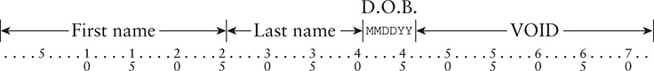
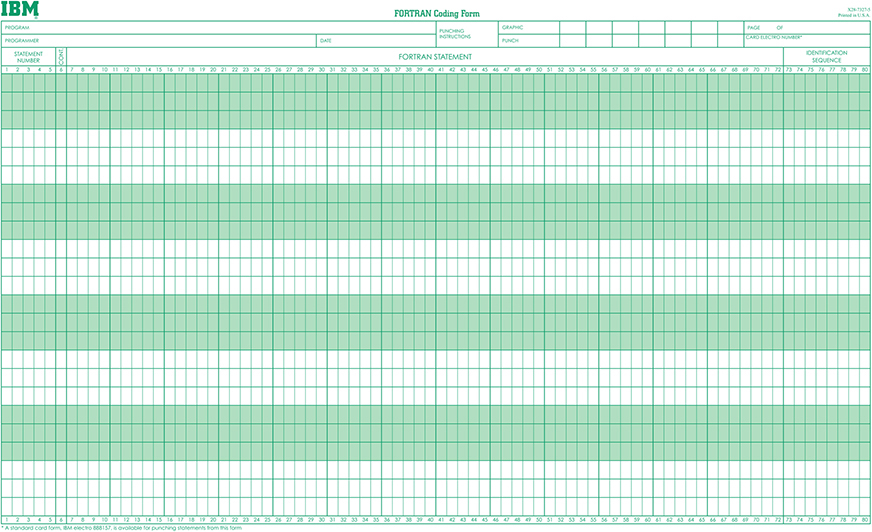
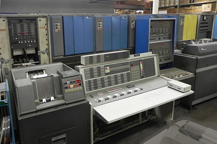

ePUB是一种开放的、行业标准的电子书格式。然而，不同的阅读设备和应用程序对ePUB及其众多功能的支持程度各不相同。请使用您的设备或应用程序设置来自定义演示效果以符合您的喜好。您通常可以自定义的设置包括字体、字体大小、单列或双列、横向或纵向模式，以及可以点击或轻触放大的图片。有关您的阅读设备或应用程序上的设置和功能的更多信息，请访问设备制造商的网站。
许多书籍包含编程代码或配置示例。为了优化这些元素的呈现效果，请在单列、横向模式下查看电子书，并将字体大小调整到最小设置。除了以可重排文本格式呈现代码和配置外，我们还提供了模仿印刷书籍呈现效果的代码图像；因此，当可重排格式可能影响代码清单的呈现效果时，您将看到”点击此处查看代码图像”链接。点击链接查看印刷保真度的代码图像。要返回之前查看的页面，请点击您设备或应用程序上的返回按钮。
“我和Uncle Bob一样，职业生涯的大部分时间都在从事咨询、教学和参加计算机会议。这样做的重要性在于，我得以结识并与本书中的许多人物共进晚餐。所以这本书讲述的是我的职业朋友们的故事，我可以告诉你这是一个忠实的故事。事实上，它写得非常好，研究得也很透彻。事情真的就是这样。”
—Tom Gilb 在后记中写道
“我想不出还有其他任何一本书能提供如此全面的早期编程历史概览。”
—Mark Seeman
“《我们，程序员》是一次穿越计算机和编程历史的精彩之旅。对一些伟大人物生活的精彩一瞥。与Uncle Bob的程序员生涯一起享受这场愉快的旅程。”
—Jon Kern，敏捷宣言联合作者
“在《我们，程序员》中，Bob成功地编织了一部极具娱乐性的程序员历史，为我们提供了丰富的历史背景、人性化的故事，以及对我们行业奠基人物的大开眼界的揭示，所有这些都得到了恰到好处的低层次细节的支撑。Bob作为这段丰富历史的一小部分，找到了一种方法将历史与他自己相关的观察和批评相结合。这次我们也得到了Bob的完整故事，以及他对未来的思考。一本有趣的快速读物。”
—Jeff Langr
从Ada到AI的程序员编年史
Robert C. Martin
新泽西州霍博肯
封面图片：agsandrew/Shutterstock
作者照片由Robert C. Martin提供
Jacquard织机，gorosan/Shutterstock
David Hilbert，INTERFOTO/Alamy Stock Photo
Hilbert之墓，Kassandro，根据CC BY-SA 3.0许可证授权
Harvard Mark I，Arnold Reinhold，根据CC BY-SA 3.0许可证授权
John Backus，由劳伦斯伯克利国家实验室提供
SSEC大型机计算机，Everett Collection/Shutterstock
ARRA，国际社会史研究所(IISG)，根据CC BY-SA 2.0许可证授权
ARMAC，Gabriele Sowada，根据CC BY 3.0许可证授权
刊登Judith Allen照片的报纸文章；《俄勒冈日报》的档案属于俄勒冈人出版公司的财产
第二代计算机，由Paul Pierce提供
操作员使用早期CAD程序工作，由计算机历史博物馆提供
Digi-Comp，Pierre Terre，根据CC BY-SA 3.0许可证授权
Varian 620，J R Spigot，根据CC0 1.0许可证授权
Tri-data磁带盒，过时媒体博物馆，由Jason Curtis根据CC BY SA 4.0许可证授权
System7，Mike Ross/corestore.org
Grace Murray Hopper，美国海军官方照片，来自海军历史与遗产司令部收藏；照片编号NH 96919-KN
IBM 026键盘打孔机插图，Jennifer Kohnke
IBM Selectric打字机，Steve lodefink，根据CC BY 2.0许可证授权
IBM Selectric字球，David Whidborne/Shutterstock
Intel 8080，科学博物馆董事会；图片在CC BY-SA 4.0许可下使用
PDP-7，Tore Sinding Bekkedal，在CC BY-SA 1.0许可下使用
PDP-11，Don P. Mitchell/mentallandscape.com
插线板，Chris Shrigley，在CC BY 2.5许可下使用
Rk07驱动器，Gunkies.org/计算机历史Wiki，在GNU自由文档许可证1.2下使用
Rk07磁盘包，Gunkies.org/计算机历史Wiki，在GNU自由文档许可证1.2下使用
晶体管，Jules Selmes/Pearson Education Ltd.
真空管，bearwu/Shutterstock
VT100，西雅图生活计算机博物馆，Jason “Textfiles” Scott摄，在CC BY 2.0许可下使用
制造商和销售商用来区分其产品的许多名称都声称为商标。当这些名称出现在本书中，且出版商知晓商标声明时，这些名称已用首字母大写或全部大写字母印刷。
作者和出版商在编写本书时已经谨慎处理，但不对任何种类做出明示或暗示的保证，并且不承担错误或遗漏的责任。对于因使用本书中包含的信息或程序而产生或引起的附带或后果性损害，不承担任何责任。
如果您对任何潜在偏见有担忧，请通过pearson.com/report-bias.html联系我们。
请访问我们的网站：informit.com/aw
国会图书馆控制号：2024947905
版权所有 © 2025 Pearson Education, Inc.
保留所有权利。本出版物受版权保护，在进行任何禁止的复制、存储在检索系统中或以任何形式或任何方式（电子、机械、复印、录制或类似方式）传输之前，必须获得出版商的许可。有关许可的信息、申请表格以及Pearson Education全球权利与许可部门内的适当联系人，请访问www.pearson.com/global-permission-granting.html。
ISBN-13: 978-0-13-534426-2
ISBN-10: 0-13-534426-3
$PrintCode
献给Timothy Michael Conrad
vim .五个简单的字符启动了我最喜欢的文本编辑器。这不是普通的文本编辑器，而是NeoVim。今天的NeoVim体验拥有快捷键绑定、LSP、语法高亮、编辑器内错误诊断等功能。尽管有这么多定制化功能，NeoVim仍能在几毫秒内启动，让文件编辑感觉像是瞬间完成。即使面对数千个文件，LSP也能快速报告项目状态，错误被加载到quickfix菜单中以便快速导航。几个按键就能让我构建、启动或运行测试。我的计算机通过AI从普通英语生成代码！此外，同样的AI可以在我输入时与我一起编程，瞬间提供大量（高度可疑的）代码。这一切听起来令人印象深刻。NeoVim体验很棒、流畅且极其迅速。然而，使用NeoVim被认为是原始的，在某些人看来甚至是亵渎的。一些开发者会因为我选择使用NeoVim并花时间配置编辑器而大喊”卢德分子！“，因为存在功能齐全的环境。IntelliJ支持的操作是我这个NeoVim思维无法理解的！
我告诉你们这些是因为这很令人震惊。不，不是因为我使用一些人称之为过时的技术而震惊。也不是因为软件工程师为偏好而争论——这些都是常见的。真正让我困惑的是，编辑的强大力量对我们工程师来说是如此平凡。在编程、会议和Slack消息的日常工作中只是一个小插曲。文本编辑很普通。自动完成、语法高亮、可靠的（有时）文档只是我们期望的东西。在文本编辑器出现之前，工程师们几十年没有高级语言，没有语法高亮的时间更长，实际上70年来没有LSP在几乎任何语言中提供自动完成和重构工具。文本编辑确实是人类的奇迹。
除了在文本编辑器方面生活在过去，我也喜欢阅读过去的历史。那些”真正的程序员”可以将他们的代码与鼓式内存的时序同步以获得最佳读取速度。我多么希望能看到那些大师级的专家在行动中的样子。也许这只是怀旧情结，但过去的冒险似乎更宏大，发现更重要，工作更有意义。在《我们，程序员》中，我有机会与计算历史上每个重大飞跃的创造者们一起走过那段过去。我可以看到Charles Babbage的晚宴，他用差分机启发和震惊他的客人。那个巨大的机械怪物咔嗒咔嗒地运转，产生的必定看起来像魔法一样的结果。看到差分机运行可能类似于我们第一次体验LLM提示或Copilot自动完成的感觉。我敢打赌你能听到晚宴客人惊呼”机器真的会思考。“我感受到了团队夜以继日工作的压力，以及在二战期间对更好计算的迫切需求，这些关键计算使原子弹成为可能。不，他们没有Herman Miller椅子和花哨的站立式办公桌。见鬼，他们甚至没有显示器或键盘！然而他们实现了不可想象的成就并改变了历史进程。《我们，程序员》是计算历史最引人入胜的叙述之一。
我会非常惊讶地遇到一个没有听说过Uncle Bob这个名字或不熟悉他工作的程序员。他在我们这个行业中绝对是多产的。多年来，我只是通过名字、Twitter头像以及他在clean code和Agile方面的著名作品了解Uncle Bob。在我心目中，他是AbstractBuilderFactory的化身。直到有一天我们开始在Twitter上互动，这导致了邮件往来、电话交谈，甚至是播客，一切都改变了。通过这些交流，我的整个观点发生了改变。Robert C. Martin远比我大学学习时所认为的要丰富得多。他是务实的，并愿意在需要时做出让步。在我们的播客期间和之后，最一致的评论之一是”他经常笑，经常微笑！“这证明了他的品格和精彩的人生。他是一个真正的软件工程师，我们都可以从他身上学到东西。
我个人厌倦了在X上280个字符或更少的篇幅中关于空白字符、文本编辑器以及OOP vs. FP辩论的无数争论。我认为有趣的是，谁创造了这些争论背后的技术，这些技术塑造了我们这么多人。We, Programmers提供了更有意义的东西，一个与过去的连接和对未来的希望，而Uncle Bob也许是这个故事的完美调解者。
—署名是ThePrimeagen
我即将告诉你这一切是如何开始的故事。这是一个关于一些杰出人物的生活和挑战、他们生活的非凡时代以及他们掌握的非凡机器的曲折故事。
但在我们一头扎进那些曲折的小通道之前，一个小小的预览可能是合适的——只是为了激发你的兴趣。
必要性可能是发明之母，但没有什么比战争更能滋生必要性。我们行业的推动力是由战争的剧烈震荡创造的——尤其是第二次世界大战。
在1940年代，战争技术已经超越了我们的计算资源。操作台式计算器的人类大队根本无法跟上来自战争各个领域的计算需求。
问题在于需要大量的加法、减法、乘法和除法来近似计算从炮口发射到目标的炮弹路径。这样的问题不能通过简单的数学公式如d=rt或s=½at²来解决。这些问题需要将时间和距离分解为数千个微小的片段，并且从片段到片段地模拟和近似弹丸的路径。这样的模拟需要大量的蛮力小学计算。
在过去的几个世纪里，所有这些计算都是由配备纸笔的人类军队执行的。直到上个世纪，他们才得到加法机来协助完成这项任务。组织计算以及执行计算的团队是一项艰巨的任务。¹ 计算本身可能需要这样的团队几周甚至几个月的时间。
¹. 要看到这样的任务在行动中，我推荐2024年Pi日庆祝活动，其中超过100位数字在一周的时间里由几百个人组成的协调良好的团队手工计算得出。在撰写本文时，“一个世纪以来最大的手工计算！[Pi Day 2024]”，由Stand-up Maths发布到YouTube，2024年3月13日。
能够执行这样壮举的机器在1800年代就已经被梦想过了。一些贫血的原型甚至已经被建造出来。但它们是玩具和奇物。它们是在精英晚宴上展示的设备。很少有人认为它们是值得使用的工具——特别是考虑到它们的成本。
但WWII改变了这一切。需求是迫切的。成本是无关紧要的。因此，那些早期的梦想成为现实，巨大的计算引擎被建造出来。
编程和操作这些机器的人是我们领域的先驱。起初，他们被迫处于最原始的条件下。编程指令实际上是一个洞一个洞地打孔到长纸带上，机器会消费并执行这些纸带。这种编程风格是极其费力的、可怕地详细的，并且完全不容错误。此外，这样的程序的执行可能跨越数周，需要详细的监控和持续的干预。例如，程序中的循环是通过手动重新定位纸带来执行每次循环迭代，并手动检查机器状态以查看循环是否应该终止。
随着岁月的流逝，机电机器让位给了将数据存储在通过长汞管传播的声波中的电子真空管机器。纸带让位给打孔卡，最终让位给存储程序。这些新技术是由那些早期先驱推动的，并促成了进一步的创新。
1950年代早期的第一批编译器只不过是带有特殊关键字的汇编器，这些关键字加载并调用预写的子程序——有时来自纸带或磁带。后来的编译器试验了表达式和数据类型，但仍然原始且缓慢。到50年代末，John Backus的FORTRAN和Grace Hopper的COBOL引入了全新的思维方式。程序员之前手工编写的二进制代码现在可以由能够读取和解析抽象文本的计算机程序生成。
在60年代初，Dijkstra的ALGOL将抽象层次推得更高。几年后，Dahl和Nygaard的SIMULA 67再次将其推得更高。
结构化编程和面向对象编程就是从这些开端发展而来的。
与此同时，John Kemeny 和他的团队在1964年通过创建 BASIC 语言和分时系统，将计算技术带给了普通人。BASIC 是一种几乎任何人都能理解和使用的语言。分时系统允许许多人方便地同时使用一台昂贵的计算机。
然后是 Ken Thompson 和 Dennis Ritchie，他们在60年代末和70年代初通过创建 C 语言和 Unix 系统，彻底打开了软件开发的世界。从那以后，我们就踏上了快速发展的道路。
60年代的大型机革命之后，是70年代的小型机革命和80年代的微型机革命。个人计算机在80年代席卷了整个行业，紧接着是面向对象革命，然后是互联网革命，接着是敏捷革命。软件开始主导一切。
9/11事件和互联网泡沫破裂让我们放慢了几年脚步，但随后出现了 Ruby/Rails 革命，然后是移动革命。接着互联网无处不在。社交网络蓬勃发展然后衰落，而 AI 崛起威胁着一切。
这就带我们来到了现在，以及对未来的思考。所有这些，以及更多内容，就是我们将在本书中讨论的。所以，如果你准备好了，系好安全带——因为这将是一次狂野的旅程。
请在 InformIT 网站上注册您的《We, Programmers》副本，以便获得更新和/或更正的便利访问。要开始注册过程，请访问 informit.com/register 并登录或创建账户。输入产品 ISBN (9780135344262) 并点击提交。如果您希望收到新版本和更新的独家优惠通知，请选中接收我们邮件的复选框。
本书故事中描述的人物和事件都在这个时间线上呈现。当您阅读这些故事并遇到这些事件时，可以通过在这里找到它们来将其置于背景中。例如，您可能会发现 FORTRAN 和人造卫星在时间上的巧合很有趣，或者 Ken Thompson 在 Dijkstra 说 GOTO 语句有害之前就加入了贝尔实验室。
在我们开始之前，我认为您应该了解有关本书及其作者的几点。
在写作本书时，我已经做了60年的程序员，尽管从12岁到18岁的那几年可能应该以不同方式计算。然而，从1964年到今天，我参与了”计算机时代”的绝大部分。我见证并经历了这个领域中许多重要甚至具有基础性意义的事件。因此，您即将阅读的内容是由这个领域早期旅行者中一个小而不断缩小的群体中的一员所写的。虽然这个群体不能声称自己是最早的旅行者，但我们可以声称从他们手中接过了接力棒。
这部作品跨越了两个世纪的时间。许多人可能会发现在讲述这些故事时提到的名字和想法很陌生——消失在时间的阴影中。因此，在这部作品的末尾，有一个术语表和一个配角名单。
术语表包含了文本中提到的大部分硬件的描述。如果您看到不认识的计算机或设备，看看能否在那里找到它。
配角名单是在后续页面中顺带提到的人物列表。这个列表相当长，但还远远不够。它只是列出了一些对计算机编程行业产生直接或间接影响的人。书中提到的一些人已经消失在时间的迷雾和互联网搜索引擎的迷雾中。浏览这些名字，会惊叹于您在那里发现的人物。再看一遍，您会意识到这个列表只是勉强触及了表面。再看一遍这些人去世的日期。他们中的大多数确实是最近才去世的。
我再次向 Pearson 出版社努力出版本书的同事们表示感谢：Julie Phifer、Harry Misthos、Julie Nahil、Menka Mehta 和 Sandra Schroeder。还要感谢完善内容的制作团队：Maureen Forys、Audrey Doyle、Chris Cleveland 等。与他们合作总是一种愉快的体验。
感谢 Andy Koenig 和 Brian Kernighan 帮助我建立联系。
特别感谢 Bill 和 John Ritchie 为我提供了如此多关于他们兄弟”亲爱的老 DMR”的精彩见解。
感谢 Michael Paulson（又名 The name is ThePrimeagen）撰写的精彩前言。
感谢 Tom Gilb 的热情款待、您的洞见，以及我读过的最有趣的后记之一。
感谢 Grady Booch、Martin Fowler、Tim Ottinger、Jeff Langr、Tracy Brown、John Kern、Mark Seeman 和 Heather Kanser 在手稿还很粗糙时审阅了它。他们的帮助让它变得更好。
一如既往，我感谢我美丽的妻子——我生命中的挚爱——以及我四个出色的孩子和十个同样出色的孙子孙女。他们就是我的生命。写关于软件的内容只是为了乐趣。
最后，我必须感谢我的生活是完美的——我生活在天堂里。
Robert C. Martin (Uncle Bob) 自1970年起就是一名程序员。他是Uncle Bob Consulting, LLC的创始人，也是Clean Coders, LLC的联合创始人（与他的儿子Micah Martin共同创办）。Martin在各种行业期刊上发表了数十篇文章，是国际会议和贸易展览的定期演讲者。他撰写和编辑了许多书籍，包括《使用Booch方法设计面向对象的C++应用程序》；《程序设计模式语言3》；《更多C++ Gems》；《极限编程实践》；《敏捷软件开发：原则、模式和实践》；《面向Java程序员的UML》；《代码整洁之道》；《程序员的职业素养》；以及《函数式设计：原则、模式和实践》。作为软件开发行业的领导者，Martin担任了三年《C++报告》的主编，并担任敏捷联盟的首任主席。
我们程序员是谁，我们为什么在这里？这些我们努力想要驾驭的机器又是什么？
我们，程序员，是那些与机器对话并让它们工作的人。我们是为它们注入生命的人，也为我们的经济和社会注入生命。没有我们，这个世界什么都不会发生。我们——统治着世界！
其他人认为他们统治着世界，然后他们把那些规则交给我们，而我们编写在机器中执行的规则，这些机器控制着一切。
但这种上升和必要的地位并非一直如此。在编程的早期，程序员是隐形的。所有的目光都聚焦在计算机及其巨大的前景上。是机器，以及那些制造它们的人，处于上升和令人印象深刻的地位。没有人关注仅仅让这些机器工作的程序员。我们不过是背景噪音。
关于那些最早的时代，Dijkstra说过：
“因为[每台计算机]都是一台独特的机器，[程序员]非常清楚他的程序只具有局部意义，而且，因为显而易见这台机器的生命周期有限，他知道他的工作很少具有持久的价值。”
此外，我们在那些日子里所做的事情很难被称为职业、学科，甚至是明确定义的工作。实际上，我们就是小妖精。我们以某种方式让那些不可靠、脾气暴躁、价格昂贵得令人发指的庞然大物，在处理速度缓慢、内存微小的情况下，实际做一些有用的事情——有时候。我们通过最丑陋、最恶魔般的方式做到这一点。Dijkstra再次说道：
“在那些日子里，许多聪明的程序员从狡猾的技巧中获得了巨大的智力满足感，通过这些技巧，他们设法将不可能的事情压缩到设备的约束条件中。”
程序员的这种形象变化缓慢。实际上，在整个60年代到70年代，这种形象还在恶化。我们从后房间里的白大褂变成了被关在巨大格子间农场里看不见的蓝领书呆子。只是在最近几年，程序员才再次上升到白领地位。即使现在，我们的文明还没有完全意识到它对我们的依赖程度，我们也没有完全意识到我们所拥有的力量。
多年来，我们是必要的恶魔。高管和产品经理梦想着不再需要程序员的日子。他们有理由抱有希望，因为机器的功能和能力不断增长。不只是一点点，而是数十个数量级。
然而，没有程序员的社会梦想从未实现。实际上，对程序员的需求从未萎缩；它只是为了跟上机器的功能而不断增长。程序员不但没有变得不那么必要和技能要求更低，反而变得更加必要，需要更多技能。实际上，程序员已经像医生一样专业化了。如今，你必须雇用正确类型的程序员。
尽管他们尽最大努力消除对程序员的需求，但这种需求只是增加和多样化了。现在，他们认为解决方案将是AI。但是，相信我，结果将是一样的。随着更大的力量，对程序员的需求和地位只会增加。
从透明到重要的这种转变可以在当时的流行电影中看到。《禁忌星球》(1956)中的机器人Robby是僵硬的英国管家上嘴唇。机器是角色。他的代码由疯狂科学家编写这一事实几乎没有被考虑。
《迷失太空》(1965)中的机器人类似。表面上由Dr. Smith编程，机器人是他自己的角色。角色就是机器。
《2001太空漫游》(1968)中的HAL 9000是中心角色。程序员Dr. Chandra只被提到一次：当机器在被断开连接时唱”雏菊贝尔”。
这种模式一再重复。在《巨人：福宾计划》(1970)中，机器是占主导地位的角色。程序员是无能为力的受害者，最终成为奴隶。
在《短路》(Short Circuit, 1986)中，机器是主角。程序员只是提供天真、倒霉和笨拙的支持。
在《战争游戏》(WarGames, 1983)中，我们看到了转变的开端。计算机Joshua（或WOPR）是角色，但程序员在那里帮助解决问题，尽管他排在一个真正的故事英雄——一个青少年的后面。
真正的改变来自《侏罗纪公园》(Jurassic Park, 1993)。计算机很重要，但它们不是角色。首席程序员Dennis Nedry是角色——也是那个故事中的反派。
时代如何变迁啊。2014年8月，我在斯德哥尔摩向Mojang的程序员们做了一次演讲。Mojang是给我们带来《我的世界》(Minecraft)的公司。演讲结束后，我们都去喝啤酒，坐在被篱笆围绕的宜人啤酒花园里。街上一个大约12岁的小男孩跑到篱笆边，对其中一位程序员喊道：“你是Jeb吗？” 红发长发、戴眼镜的Jens Bergensten坚毅地点点头，给了那个男孩他的亲笔签名。
程序员已经成为我们年轻人的英雄，他们成长过程中想要成为像我们一样的人。
我们为什么在这里？我们程序员——我们为什么存在？
也许这个问题太存在主义了。好吧，那么：为什么需要我们？为什么人们付钱让我们做我们所做的事？为什么他们不自己做？
也许你认为这是因为我们聪明。当然我们是，但这不是原因。也许你认为这是因为我们是技术人员。确实我们是，但这也不是原因。这个原因可能会让你惊讶。它很可能不是你期望的。事实上，这是我们性格中的一个方面，当你接受它的明显真相时，很可能会让你感到畏缩。
我们热爱细节。我们沉迷于细节。我们在细节的河流中逆流而上。我们跋涉过细节的沼泽和湿地。而且我们热爱它。我们为此而活。我们为此快乐地努力工作。我们是…细节管理者。
但这并没有回答为什么需要我们的问题。答案是社会没有手机就无法运转了。
手机。我们为什么叫它们手机？它们不是手机！它们与电话没有任何关系。Alexander Graham Bell不会指着iPhone并接受它是他和Watson发明的直接后代。
它们不是手机；它们是手持超级计算机。它们是通向信息、八卦、娱乐以及…一切的门户和网关。没有它们我们无法想象生活。没有我们的屏幕时间，我们会蜷缩成绝望抑郁的小球。
当然我在嘲笑这种情况，但乐趣来自于它是不可更改的真实。如果我们的手机突然停止工作，我们的文明将在那一刻结束。
好吧，那么这与我们有什么关系呢？为什么需要我们来管理手机的所有细节？为什么不是每个人都管理自己的细节？
我相信你认识有人有过杀手级应用创意并希望你为他们编程。他们知道他们的创意会赚取无数美元，如果你只是编写代码，他们愿意与你20-80分成那些无数美元。
是的，就这样。只是编写代码。没什么大不了的。
为什么他们不编写代码？毕竟，这是他们的创意。为什么他们不只是编写代码？
显而易见的答案是他们不知道怎么做。但这不是真的。他们知道。他们可以明确描述他们寻求的行为——尽管用某种抽象的术语。为什么他们不能把那些抽象的想法变成现实？
假设Jimmy，我们热切的企业家，完全相信如果他能在屏幕上画一条红线3，无数美元就在等着他。就这样。我的意思是，每个人都想要一条红线，对吧？那么Jimmy应该如何进行？
3. Lauris Beinerts. “The Expert (Short Comedy Sketch)”. Posted on YouTube on Mar. 23, 2014. (Available at the time of writing.)
Jimmy看着他的手机，他看到的只是一个有一些小突起、凹陷和空洞的矩形棱镜。他要拿这个做什么鬼？当然他需要一个程序员，因为程序员了解那种东西。
但是等等。你拿着手机时打过喷嚏吗？你有没有看过那些小液滴放大了屏幕细节的样子？仅仅对那些渗出物小球中出现的内容进行片刻反思就会发现点。彩色点。确实，红色、绿色和蓝色的点排列成似乎是矩形网格的样子。
所以Jimmy打喷嚏并看到那些点，在所有时刻中最短暂的那一刻，他有了意识。他的红线将由红点绘制！
如果他让自己再思考一刻，他会意识到那三种颜色可以组合。如果他再思考一点，他会意识到必须有某种方法来控制那些单个点的亮度以创造各种颜色。哦，他可能不知道RGB颜色，但每个学童都知道你可以混合一些颜色来制造其他颜色。所以这个概念并不困难。
如果他让自己再考虑一刻，他会意识到矩形网格意味着这些点有坐标。哦，他可能不太记得一年级代数，他可能不记得笛卡尔坐标。但是，每个学童都理解矩形网格的概念。我的意思是，看在上帝的份上，当你拨打电话时，按钮就是排列成矩形网格的！
好的，我知道，现在没有人再拨号打电话了，也没有人知道为什么要用拨号这个词。但这些都不重要。经过短暂而宝贵的思考，Jimmy意识到他可以通过点亮那些线性排列的红点来画出他的红线。
“怎么做到这一点呢？”Jimmy想知道。他还记得那个古老的线性公式吗：y=mx+b？可能不记得了。但再多思考几分钟，他肯定会意识到，他红线上的点会有一个固定的垂直与水平比例。他可能没有意识到自己正在重新发明微积分的根基；但这没关系。上升距离除以水平距离并不是一个难以掌握的概念。
如果Jimmy继续思考，他会意识到他之所以能看到这些点，是因为屏幕上的污迹就像Leeuwenhoek的显微镜一样。这些点一定很小！这意味着他将不得不画很多点，而且它们的坐标都必须遵循他的上升距离除以水平距离的公式。他要怎么做到这一点呢？
更重要的是，如果他只画一条点线，那么这条线会非常细。甚至可能看不见！所以他必须画一条有一定粗细的线。
此时，Jimmy的这一系列思考已经花费了大约一个小时，他意识到自己已经不再想着红线会给他带来数十亿美元的收益，而是在过去一小时里一直专注于点。他也可能意识到，他只是刚刚触及了面前问题的表面。毕竟，他不知道如何告诉手机点亮点。他不知道如何将坐标传达给手机。他不知道如何告诉手机一遍又一遍地重复某个动作，这样他就可以点亮所有那些该死的点！
最重要的是，他不想再考虑这个问题了！他想回到思考他的红线如何赚取数十亿美元，以及如何在X平台上投放红线广告，还有…
所以让那些该死的点见鬼去吧。Jimmy会让某个程序员去担心这个问题。他不想思考那种细节层面的问题。
但我们想！这是我们的性格缺陷，也是我们的超能力。我们热爱所有这些细节。我们陶醉于研究如何将屏幕上的一堆点组装成一条红线。我们并不太在意红线本身。
我们热爱的是将所有这些微小细节组装成一条红线的挑战。
那么为什么需要我们呢？因为社会需要热爱关注细节的人。这些人（我们）让社会得以自由地思考其他事情，比如冰桶挑战或愤怒的小鸟或在牙医诊所等候时玩纸牌游戏。
只要绝大多数人逃避细节，他们就需要我们这些冲向细节的人。这就是我们。我们是整个世界的细节管理者。
“我们在计算领域有着悠久的历史，我们往往会忘记并忽视它。但事实上，在我们之前有巨人为我们树立了如何在我们的职业中道德行事的榜样。”
—Kent Beck，2023年（在提及Barry Dwolatzky最近去世时）
在第二部分中，我将为你讲述一些关于这些巨人的故事。我要讲述的故事是关于那些达到了伟大水平并对我们行业产生深远影响的程序员。这些故事将描述他们面临的一些技术和个人挑战。我讲述这些故事的目标是让你在更个人和更技术的层面上了解这些杰出的人物。
个人部分应该让你相信这些人和你我一样都是人类。他们像你我一样感受痛苦和快乐。他们像你我一样犯错误。他们像你我一样克服障碍并享受成功。
技术部分的存在是因为你是一个程序员，只有程序员才能真正理解这些人面临的技术挑战。我的目标是让你在深层次上学会尊重这些个人的成就—只有同行程序员才能欣赏的层次。
过去有许多先驱者我没有包括在这一部分中。他们的缺席并不是因为缺乏伟大或价值。只是由于篇幅和时间的原因，我必须做出选择。我希望我的选择是明智的。
程序员和计算机爱好者中有一个共同的传说，即Charles Babbage是通用计算机之父，Ada King Lovelace是第一位程序员。许多生动的故事，无论是虚构的还是半事实的，都被讲述过。但是，一如既往，真相比传说更有趣。
Charles Babbage于1791年12月26日出生在Surrey的Walworth。作为一位富有银行家的儿子，他是十九世纪初英国社会上层的一员，继承了一笔可观的财产1，这让他有自由去追求自己的兴趣—而这些兴趣多如繁星。
1. 价值10万英镑的财产，这使他经济独立，能够让家人过上舒适的生活，同时资助他的科学研究。
在他的一生中，巴贝奇写了六本书和86篇科学及杂项论文，主题涵盖数学、国际象棋、开锁、税收、人寿保险、地质学、政治学、哲学、电学和磁学、仪器制造、统计学、铁路、机床、政治经济学、潜水装置、潜艇、导航、旅行、语言学、密码分析、工业艺术、天文学和考古学——仅举几例。
但最重要的是，巴贝奇是一个修补匠——各种机械装置的发明家。他发明了强制通风供暖系统、检眼镜、缆线驱动的邮件传递系统、井字游戏机，以及许多其他吸引他注意的装置。但是，在他所有的修补工作中，他没能创造出任何为他带来利润的东西。在大多数情况下，他的发明只是从未离开过绘图桌的设计图。
巴贝奇也是一个社交蝴蝶。他是一个优秀的故事讲述者和娱乐家。他经常举办自己的晚宴聚会，他在别人聚会上的出现也非常受欢迎。1843年的某个时候，他的社交日程表显示每月的每一天都有13个邀请，包括星期天在内。
他的社交圈包括查尔斯·狄更斯、查尔斯·达尔文、查尔斯·莱尔、查尔斯·惠斯通（很多查尔斯）、乔治·布尔、乔治·比德尔·艾里、奥古斯都·德·摩根、亚历山大·冯·洪堡、彼得·马克·罗热、约翰·赫谢尔和迈克尔·法拉第。
他在生前也获得了很多认可。1816年他被选为皇家学会会员。1824年，他因发明了我们即将讨论的计算引擎而获得天文学会首枚金奖章。1828年他被选为剑桥大学卢卡斯数学教授席位，并担任此职位直到1839年。
卢卡斯教授席位由许多其他重要人物担任过，包括艾萨克·牛顿（1669-1702）、保罗·狄拉克（1932-1969）、史蒂芬·霍金（1979-2009），以及Data在2395年之后的某个时候。
可以说他是一个受欢迎且人脉广阔的人。
尽管他在社会上很受欢迎，也得到了同行的认可，但巴贝奇并不算是一个特别成功的人。他的绝大多数努力都化为泡影。他也不是一个令人愉快的合作伙伴。他的同时代人认为他脾气暴躁、好争论，容易发脾气和自私的爆发——一个易怒的天才。
他习惯于发表抨击当权者的信件；而这些人正是他随后会向其寻求项目资金帮助的人。可以说，得体的谨慎并不是他的主要美德之一。
最终，甚至首相罗伯特·皮尔爵士都问道：“我们该怎么办才能摆脱巴贝奇先生和他的计算机器？”
程序员查尔斯·巴贝奇的故事始于1821年夏天。巴贝奇和他的终生朋友约翰·赫谢尔正在合作审查天文学会的一套表格。有两套由两个独立团队创建的表格。如果两个团队都正确地完成了计算，这两套表格应该是相同的。巴贝奇和赫谢尔正在将它们进行对比，以发现并解决任何差异。有数千个数字，每个都有十几位数字或更多。两人进行着数小时枯燥、费力、高度专注的工作，互相朗读数字并验证它们是否相同。每当书面数字有错误或数字被误读时，他们必须暂停，再次检查，然后解决或注释差异。这项工作令人麻木、令人沮丧且令人疲惫。
最后，巴贝奇惊呼：“我希望上帝让这些计算能用蒸汽来执行！”
就这样，程序员巴贝奇被迷住了。不到一年，他就雇佣了一些工匠来制造零件，然后组装了一个能够计算的机器的小型工作模型。这是他对一台更大、更大机器愿景的微型原型。一台能够完成计算数学表格这种可怕苦差事的机器。
对数学表格的需求无处不在。数学家需要它们。导航员需要它们。天文学家、工程师和测量员都需要它们。他们需要的表格类型包括对数表、三角函数表、弹道表、潮汐表。清单是无穷无尽的。更重要的是，他们需要准确性和精度。表格中的每个条目都必须准确，并精确到小数点后几位。
这样的表格是如何制作的？你如何计算成千上万个精确到六位、八位或十位小数的对数？你如何确定角度的每一弧秒的正弦、余弦和正切值达到如此精度？乍一看，这个问题似乎是无法解决的。
但是，尽管有一些相反的证据，人类还是聪明的动物。事实证明，确实有办法。
这个技巧的第一部分是将超越的东西拉回到现实世界。对数、正弦和余弦是超越函数；这意味着它们不能通过使用多项式来计算。但是它们可以用多项式来近似。
考虑笛卡尔坐标平面上的正弦波。它在y轴上在1和-1之间起伏，在x轴上的周期为2π。
现在考虑y = -0.1666x3+x的图形叠加在该正弦波上。
当x接近零时，这很好。但我们可以做得更好。考虑y = 0.00833x5 - 0.1666x3 + x。
嘿！我们现在进入状态了！但让我们做得更好。考虑以下：
y = -0.0001984x7 + 0.00833x5 - 0.1666x3 + x
哇！在-π/2和π/2之间，这真的非常接近。实际上，对于-π/2，多项式的值是-1.00007。这接近四位小数的精度。
当然，我用来获得所有这些有趣系数的是简单的泰勒展开：
sin(x)=x - x3/3! + x5/5! - x7/7!…
好的，现在我们已经将正弦函数从超越领域中拉出来了，我们如何计算所有这些讨厌的多项式而不让自己陷入困扰和妄想？
我的意思是，假设我们想要为0和π/2之间的每个弧秒建立一个正弦表。在该范围内有324,000弧秒。一弧秒的值是0.000004848136811弧度。你真的想把这样的数字取三次方、五次方和七次方；除以6、120和5,040；然后加减它们——340,000次吗？
幸运的是，有一个更好的方法：有限差分法。
想象一个简单的多项式，如f(x) = x2 + 3x - 2。让我们从1到5计算这个。
| x | x2+3x-2 |
|---|---|
| 1 | 2 |
| 2 | 8 |
| 3 | 16 |
| 4 | 26 |
| 5 | 38 |
现在让我们取这些值之间的一阶差分。
| x | x2+3x-2 | d1 |
|---|---|---|
| 1 | 2 | |
| 2 | 8 | 6 |
| 3 | 16 | 8 |
| 4 | 26 | 10 |
| 5 | 38 | 12 |
现在是二阶差分。
| x | x2+3x-2 | d1 | d2 |
|---|---|---|---|
| 1 | 2 | ||
| 2 | 8 | 6 | |
| 3 | 16 | 8 | 2 |
| 4 | 26 | 10 | 2 |
| 5 | 38 | 12 | 2 |
啊哈！二阶差分是常数2。实际上，对于任何n次多项式，第n次差分将是常数。
好的，那么如果x是6，我们函数的值是什么？在你计算多项式之前，注意一阶差分应该是14，因为我们只需将二阶差分(2)加到一阶差分(12)上。但现在我们可以将新的一阶差分加到38得到52，这是正确答案。只需要两次加法！
这可以继续：f(7)是68，因为14+2是16，16+52是68；f(8)是86，因为16+2是18，18+68是86。如果我们想要f的所有值的表，我们只需要加两个数字就能得到该表中的每个连续条目。没有乘法，没有减法：只有两次简单的加法！
这对正弦有效吗？假设我们想要一个从0到∽π/2以0.005为步长的正弦表。我们也假设使用7次泰勒展开。我们只需要计算前八个值，然后我们应该能够只需将剩余值的差分相加。
所以让我们首先计算0.005的多项式：
0.005 – 0.005³/6 + 0.005⁵/120 – 0.005⁷/5040与其将这些分数展开为小数，从而失去精度，让我们保持分数完整直到最后一刻：
0.005 – 0.000000125/6 + 3.125E–12/120 – 7.8125E–17/5040
5/1000 – 125/6000000000 + 3125/120000000000000000 – 78125/5040000000000000000000000
1/200 – 1/48000000 + 1/38400000000000 – 1/64512000000000000000
322558656001679999/64512000000000000000最后那个分数的小数展开是：
0.004999979166692708
这是sin(0.005)在12位左右精度内的值。
但现在我们看到了重要的东西。那些分母很大。这驱使最终分子有很多有效数字(18)。这意味着我们必须将所有计算都进行到很远，并努力不丢失精度。
处理一堆具有大分母的分数似乎并不比计算泰勒展开容易多少。所以让我们尝试不同的方法。让我们将所有这些分数乘以1030，并将所有这些分母减少到更合理的数字。
现在我们的第一个值是314998687501640624023437500000/63。如果我们进行除法，并忽略小数部分，我们得到以下整数：4999979166692708317832341269。这非常接近sin(0.005)乘以1030。
因此，通过如此大幅减少分母，我们可以忽略小数部分而不会失去太多精度。现在让我们使用这种技术来计算接下来的七个正弦值，得到前八个值。
点击这里查看代码图像
314998687501640624023437500000/63
314990812550859250976562500000/63
314975062846169864257812500000/63
314951438781314260742187500000/63
314919940946892831054687500000/63
314880570130349793945312500000/63
314833327315953508789062500000/63
314778213684771866210937500000/63现在我们可以计算前七个一阶差分。
点击这里查看代码图像
-124999218751953125000000
-749985937589843750000000/3
-1124955469314453125000000/3
-1499896877210937500000000/3
-1874800787763671875000000/3
-2249657828394531250000000/3
-2624458627697265625000000/3然后是二阶、三阶、四阶、五阶和六阶差分——它们最终都是常数，正如应该的那样。
点击这里查看代码图像
-374988281333984375000000/3
-124989843908203125000000
-124980469298828125000000
-374903910552734375000000/3
-124952346876953125000000
-124933599767578125000000
18749609375000000000/3
37497343750000000000/3
46869921875000000000/3
9374218750000000000/3
9373515625000000000/3
9372578125000000000/3
9371406250000000000/3
-234375000000000
-312500000000000
-390625000000000
-78125000000000
-78125000000000所以前七个差分是：
点击这里查看代码图像
314998687501640624023437500000/63
-124999218751953125000000
-374988281333984375000000/3
18749609375000000000/3
9374218750000000000/3
-234375000000000
-78125000000000再次，由于分子如此大而分母如此小，我们忽略小数部分而只考虑整数部分可能是安全的，因为低阶位置上的循环小数在我们进行加法运算时不太可能造成很大损害。所以这些差分变成以下整数：
点击这里查看代码图像
-124999218751953125000000
-124996093777994791666666
-234375000000000
-78125000000000现在我们所要做的就是将这些整数相加来填充表格的每一行。这为我们提供了一组非常好的正弦值乘以1030。
点击这里查看代码图像
0.005 4999979166692708317832341269
0.01 9999833334166664682539682538
0.01 14999437506328091099330357141
0.02 19998666693333079365079365078
0.025 24997395914712330651661706348
0.03 29995500202495660714285714282
0.035 34992854604336192599826388876
0.04 39989334186634158730158730124
0.045 44984814037660234235491071351
0.05 49979169270678323412698412546
0.055 54972275027067721183655753695
0.06 59964006479444571428571428114这多少就是在自动计算机出现之前建立表格的方式。负责生成表格的主数学家会制定最适合他们想要逼近的超越函数的多项式。他们会将这些多项式分派给大约六名熟练的数学家，这些数学家将函数分成相对较小的范围，并计算每个范围的差分表。最后，他们会将差分表分派给一支由几十名个人组成的队伍，这些人的技能足以进行简单的加法和减法运算。这些人被称为”计算员”6，他们会完成所有的加法运算，建立每个范围内的表格条目。
6. 在19世纪初，他们通常是法国前理发师，因为他们的顾客掉了脑袋而失去了顾客。
成千上万行又成千上万行。数万次加法运算都要精确到很多位。工资很低，工作乏味，而且全部都是用笔7和纸完成的。
7. 美国第一家铅笔工厂于1861年开业。当然，之前也有先驱；但需要大规模生产才能使铅笔成为家用设备。
通常，“计算员”被分成两组，每组都被分配相同的工作。如果他们都完美地完成了工作，两个结果就会匹配。这就是巴贝奇和赫歇尔在1821年夏天那个决定性的一天正在检查的内容。
他关于蒸汽的沫丧感慨的含义现在应该很清楚了。如果”计算员”能够被可靠的机器取代，那么他和赫歇尔就永远不需要再交叉检查”计算员”的工作了。
但更重要的是，Babbage 能够看到这样一个未来：计算机制的使用对科学进步至关重要。
1822年，在他抱怨”蒸汽”后不久，他预见性地写道：
“我敢预言，将来会有这样的时候：数学公式的算术应用所产生的累积劳动，会像一种持续阻碍的力量，最终会妨碍科学的有用进步，除非这8或某种等效的方法被设计出来，以减轻数值细节这一压倒性负担。”
8. 指的是他对差分机(Difference Engine)的构想。
对 Babbage 来说不幸的是，那个时代还在一个多世纪之后。但它确实到来了。正如我们将在后面章节中看到的，它来得很猛烈。
Babbage 最初构想的机器是一台大型加法机——但有一个特别之处。它应该有六个20位十进制数的寄存器来表示六个差值。因此，它能够处理六阶多项式。机器的每个周期（每转动一次手柄）都会使第六个寄存器被加到第五个，然后第五个加到第四个，然后第四个加到第三个，依此类推。加法。只有加法。
这台机器应该有25,000个独立部件，高8英尺，长7英尺，宽3英尺，重约4吨。
为什么加法是如此困难的任务？为什么需要一台工业规模的机器来完成？
问题有两个方面。首先，机器必须精确。任何运动部件都必须被限制，除非那个时刻需要运动，否则不能移动。不能允许振动、摩擦或任何其他形式的寄生运动意外移动部件。因此，Babbage 添加了许多锁定和解锁部件的机制，以在机器必须承受的数千个手柄周期中保持机器的完整性。
第二个问题是小学生都知道的进位问题。当9变成0时，我们向左边的下一位进位1。在当时的传统机制中，这是通过用轮子表示每个数字来完成的，每个轮子上都有一个标签，当第一个轮子从9移动到0时，这个标签会带动下一个轮子。因此，转动一个轮子所需的力量取决于会传播多少次进位。给999999999999加1需要很大的力量。高力载荷是错误和磨损的来源。此外，由于机器是手动操作的，可怜的操作员会在手臂上感受到力量载荷的剧烈变化。
所以 Babbage 构想了一个非常巧妙的机制来记住进位，然后在周期的不同部分逐一传播它们。这种记忆是以与每个轮子相关联的小杠杆的形式存在的。杠杆可以处于两种状态之一：进位或不进位。然后由一组杆来传播进位，每根杆都询问其对应杠杆的状态，如果其杠杆处于进位状态，则向上面的轮子加1。这些杆以一种螺旋楼梯的形式展开，使得每次进位都在前一次进位完成后进行。
这一切都相当巧妙。
Babbage 是一名程序员。他编写的程序是由杠杆、轮子、齿轮和手柄组成的。但他仍然是一名程序员。他的机器执行了一个连续加法的精美小程序。
我们今天可能用于该程序的代码看起来像这样：
Click here to view code image
(defn crank [xs]
(let [dxs (concat (rest xs) [0])] (map + xs dxs)))是的，三行代码，大约74个字符，取代了重达4吨的25,000个机械部件。
但也许这不太公平。毕竟，我在MacBook Pro上运行这些代码。虽然那台笔记本电脑只重约一两磅，但它比 Babbage 可怜的差分机复杂得多。
顺便说一下，你可能注意到在前一节的正弦例子中，一些差值是负数。然而 Babbage 的机器只能表示正整数。那么 Babbage 是如何处理这个问题的呢？
我不确定他到底是怎么做的；但我能够通过使用九的补码来做到这一点。如果你只有20位数字，并且忽略第20位的进位，那么你可以通过”九化”来表示负数。
例如，1的十的补码是99999999999999999999。将这两个相加，忽略最终进位，你得到0。因此，1的十的补码表现得像-1。
一般程序是取数字的每一位并从9中减去它，使其成为补码的相应位。然后，当你对所有位都这样做后，给最终数字加1。
所以，给定数字31415926535887932384，我们会”九化”每一位，创建九的补码68584073464112067615，然后我们加1，得到十的补码68584073464112067616。当你将这两个数字相加并忽略最终进位时，你得到0。
因此，十的补码是创建负数的有效方法，并将减法转换为加法。
Babbage 是程序员的另一个迹象是他面临着其他机械工程师从未面临过的规模问题：动力学。他的引擎中的部件以复杂的方式在复杂的时间移动。它们还以同样复杂的方式相互接合和分离。这种机械复杂性的规模是全新的，需要某种形式的表示。
所以Babbage为他的机器动力学创建了一个符号形式体系。这个形式体系包括时序图、逻辑流程图，以及各种符号约定来标识运动中的部件、静止的部件，以及描述他意图所需的任何其他状态。Babbage认为这种符号是相互作用部件的”通用抽象语言”。实际上，他认为它适用于任何形式的相互作用，无论是机械的还是其他的。
关于这种符号，他说：9
9. Swade, p. 119.
“要在头脑中保持一台复杂机器所有同时和连续的运动，以及正确安排已经预备好的运动时序的更大困难，促使我寻找某种方法，通过这种方法我可以一眼就选择任何特定部件，并在任何给定时间找到它的运动或静止状态，它与机器任何其他部件运动的关系，如果需要的话，通过所有连续状态追溯其运动源头直到原始动力。”
人们常说Babbage未能意识到他的引擎操作的数字可以代表其他形式体系的符号。但在这里我们看到Babbage非常轻松地发明了一个全新的动力学符号形式体系。所以符号操作对他来说并不陌生。
Babbage是一名程序员的另一个证据是，他能够编程他的引擎原型在客厅里为晚餐客人表演把戏。
作为他恶作剧的一个人为例子，假设他聚集了一群伦敦名流围绕在他客厅里的小型原型机器周围。他会给他们展示最终寄存器中的一个0，然后转动曲柄。数字从0增加到2。他会问客人下次转动曲柄时会出现什么数字，那些猜4的人会感到惊喜。他会再次询问，每个人都会猜6，然后是8，然后是10。但在他们变得太无聊之前，下一次转动曲柄会产生42。
一旦你理解差分机如何工作，设置这样的惊喜并不太难。毕竟，序列0, 2, 4, 6, 8, 10, 42有一组差值，当向前相加时，会重现那个序列。
Babbage然后告诉他的客人，机器遵循着只有他知道的隐藏法则。他会继续告诉他们，42的”奇迹”类似于红海分开或治愈病人等奇迹。你看，上帝是一个程序员，他用只有他知道的隐藏法则构建了宇宙。10
10. Swade, p. 79.
1823年，Babbage作为天文学会和伦敦皇家学会的正式成员，并在议会中有同情者联系，成功获得了政府资助的委托来建造他的机器。
资助决定是有争议的。一些人认为他的设备会有用，其他人认为费用不值得收益。毕竟，失业的理发师并不昂贵——而且他们会加法。
但Babbage是一个热忱的倡导者和有魅力的演讲者。他经常向人们详述机器的优势和它将拥有的令人难以置信的力量。他甚至声称他自己都不知道所有这些力量。他能够以对项目的热情和表达能力让观众着迷。
当然，仅仅通过对机器施加物理力，机器就会做以前属于思考领域的事情，这个想法有些神奇。那时如今天一样，一台能够思考的机器是每个人都会惊讶地看到的东西。
通过这些努力，以及朋友和支持者的热情支持，Babbage赢得了胜利并获得了资助承诺。那笔资助从£1,500开始，随着时间推移增长到超过£17,000。Babbage自己也投入了相当多的自己的资金。
努力开始得很好，原型不断涌现。在接下来的十年中，制造了许多零件，并生产了小型演示机器。然而，设备的规模很大，Babbage容易分心且相当难以共事。他敏感而骄傲，从不忘记轻视或伤害，他惹恼了一些好人。经过十年的延迟、与承包商的争议、工作停顿和严重的成本超支，他的资助最终被撤销。
在开始时支持他的朋友和支持者都对这个最终失败感到沮丧和尴尬。花费了相当大的公共资金，却没有任何成果。他们中的任何人都不太可能再次支持他。
所以Babbage的引擎从未建成。11 哦，它的部分当然建成了。实际上，他用来娱乐客人的那台机器就是用为全尺寸机器准备的零件制成的。
11. 他大大改进的设计，差分机2号，最终在1980年代末和1990年代初在伦敦科学博物馆建成。它在那里展出，并按Babbage的设计工作——尽管调试它是一个挑战。
然而，最终在皇家天文学家乔治·比德尔·艾里(George Bidell Airy)的建议下，政府拒绝了进一步的资助。来自首相办公室的信件写道：12
12. Swade, p. 176.
“巴贝奇先生的项目似乎费用无限昂贵，最终成功如此成问题，支出肯定如此庞大且完全无法计算，以至于政府不能为承担任何进一步的责任进行辩护。”
因此，在花费了十年时间和17,000英镑后，这项努力被放弃了。
在我谦卑的看法中，虽然我认为巴贝奇可能会否认，但我相信最终失败的很大原因是他的注意力不断被吸引到其他更雄心勃勃的想法上。对巴贝奇来说，完成远不如开始那么有趣。
有人说差分机未能完成是由于19世纪早期金属加工技术无法制造出具有必要精度的零件。然而，没有真正的证据支持这一点。现存的零件非常精确，至今仍有原型机器在运行。
如果巴贝奇有意志、专注力和资源来完成那台机器，完全有理由相信它会按设计工作。不过，正如我们将看到的，让机器真正工作与简单地建造它是非常不同的事情。
“…然而在我充满活力的电路中，我可以导航未来概率的无限增量流，并看到总有一天会出现一台计算机，其最微小的操作参数我都不配计算，但设计它最终将成为我的命运。”
—深思(Deep Thought)，《银河系漫游指南》
是什么让巴贝奇从完成差分机的工作中分心？
想象一台火车头大小的机器。它不是6列20位数字，而是1,000列50位数字。它有一个机械总线，将这些列的值传输到磨坊的两个输入通道。磨坊可以以单精度或双精度(100位)对这些数字进行加、减、乘、除运算。然后总线将结果值传回1,000列存储器。
想象这台机器由穿孔卡片上的一套指令驱动，这些卡片像雅卡尔织机上的穿孔卡片一样串成链条。这些指令卡指导总线从存储器中的特定列获取值，并通过总线将它们移动到磨坊的输入端。它们指示磨坊对总线提供的值进行操作。它们指示总线将磨坊的结果移回存储器。
它们将常数加载到存储器中。它们指示将值打印在打印机上，或绘制在曲线绘图仪上，或执行简单的铃声响起。
最重要的是，有些卡片指示读卡器如果最后一次磨坊操作以溢出结束，则向前或向后跳过n张卡片。
除了两个巨大的例外，这就是现代计算机的架构。这两个例外是程序存储在卡片上而不是在1,000列存储器中，以及机器完全是机械的，由…你猜对了…蒸汽驱动。
巴贝奇非常努力地提高磨坊的效率，使其超过差分机。最终，他估计50位数字可以在不到一秒的时间内进行加法或减法运算。巴贝奇设计磨坊使用移位相加技术进行乘法，使用移位相减技术进行除法。因此，即使双精度乘法和除法也可以在一分钟内执行。13
13. Swade, p. 111.
想象这个蒸汽朋克怪物在工作。想象它内部器官的研磨、叮当和咆哮声，由卡片通过读取器的点击和刮擦声驱动。想象跟踪从存储器、通过总线、到磨坊再返回的值。你可以看到它们移动！
想象磨坊，移位和相加，移位和相加，刺耳地输出乘积，叮当地输出商和余数。想象看着程序运行、运行、运行，而机器在存储器和磨坊之间来回移动值，偶尔打印一个值，移动绘图仪上的触笔，或响铃。
你会移开视线吗？
巴贝奇做不到。巴贝奇在脑海中看到了这台机器的运行；他理解了其含义。他说”整个算术现在似乎都在机械的掌握之中。“14 他推理这台机器甚至可以被编程来下棋。15 1832年他在《哲学家的生活》中写道：”每一种技巧游戏都可以由自动机来玩。”
14. Swade, p. 91.
15. Swade, p. 179.
当然，这台机器从未被建造出来。Babbage建造了磨坊的小型原型，他摆弄着各种想要证明可行的机制。但他在内心深处知道，他永远无法找到建造这头巨兽所需的几乎无限的资金、时间和精力。
最终，他所有的修修补补和优化让他回过头来审视差分机的不足之处；他设计了差分机2号，其零件数量减少了三分之一，速度是原来的三倍，容量是原来的两倍多。即便如此，Moore16定律的精神仍然生机勃勃。
16. Gordon Moore，“Moore定律”的创始人，该定律预测集成电路密度每年都会翻倍。
当然，Babbage也从未建造过那台机器；但正是这台机器——差分机2号，伦敦科学博物馆的工作人员在上世纪末建造了它。17
17. Swade, p. 221.ff.
我们必须再次反驳Babbage没有意识到他的引擎可以操作符号这一说法。首先，他认为分析机可以被编程来下棋这一事实表明了他将棋盘、棋子和走法符号化的能力。
Babbage还意识到，这台机器如果编程得当，可能能够进行符号代数运算。用他自己的话说：18
18. Swade, p. 169.
“这一天我第一次有了一个概括但非常模糊的概念，即让引擎进行代数展开的可能性，我是指不需要参考字母的值。”
不。Babbage是一名程序员。他理解符号和数字之间的联系，任何能够操作数字的机器都可以通过这种联系来操作这些符号。
如果在邪恶的日子里落入邪恶的舌头，Milton呼吁复仇者，时间……
也许，George Gordon Byron出生的那一天是邪恶的一天。他是一位才华横溢、多产的作家和诗人：英格兰最优秀的作家之一。他创作了《唐璜》和《希伯来旋律》等杰作。10岁时，他继承了Rochdale男爵爵位，因此成为Byron勋爵。
Byron不是一个令人愉快的人物。他是一个脾气暴躁的花花公子，有许多非婚生子女，包括与Mary Shelley19的继姐妹以及与他自己的同父异母姐姐Augusta Maria Leigh。
19. Mary在1816年夏天访问了Byron在瑞士日内瓦湖附近的家——那是没有夏天的一年。由于前一年Tambora火山爆发，全球陷入了毁灭性的火山寒流。在那些雨夜里，他们和一群精英朋友围坐在篝火旁阅读鬼故事。Byron挑战他们所有人写一个鬼故事，这激发了Mary写出《弗兰肯斯坦》。
为了缓解累积债务的压力，他寻求一桩合适的婚姻。在这次搜寻的众多目标中有Annabella Milbanke20，一位富有叔叔的可能继承人。虽然她起初拒绝了他，但最终还是妥协了，并于1815年1月与Byron勋爵结婚。他通过她生下了唯一的合法子女。那年12月出生的孩子名叫Augusta Ada Byron。
20. Anne Isabella Milbanke；Annabella是她的昵称。
Byron对这次出生并不高兴；他期待的是一个”光荣的男孩”。无论是作为侮辱还是荣誉，他以他的情人和同父异母姐姐的名字为她命名；但他总是称她为Ada。
Byron的一位传记作者21曾经将他与Annabella的婚姻描述为历史上最臭名昭著的悲惨婚姻之一。22 Byron的行为令人发指。他继续与同父异母姐姐的婚外情，并与其他各种女性发生许多性关系，包括一些知名女演员。
21. Benita Eisler, Byron: Child or Passion, Fool of Fame.
22. Swade, p. 156.
Byron在四个不同场合试图强迫Annabella，所以她让仆人锁上门防范他。
他继续醉酒虐待，最终甚至试图将Annabella从他们的家中驱逐出去。她认为他疯了，于是离开了，带着5周大的Ada。
这是一个高度公开的丑闻。伦敦社会为此震动。4月，Byron逃到欧洲大陆，再也没有回来，也再没有见过他的女儿Ada。
但公众对Ada的反应与她父亲的冷漠截然相反。公众对她喜爱有加。Ada瞬间成为名人，与她著名的花花公子父亲的关联总是处于焦点中心。
Annabella接受了数学训练，她把这种训练作为转移Ada对父亲及其疯狂的兴趣的方式。Ada有天赋，她逐渐爱上了数学，也许比她母亲更爱数学；但她从未失去对父亲的兴趣，最终以他的名字为孩子们命名，并要求将自己的坟墓安置在他旁边。
她对父亲记忆的眷恋可能因为Annabella经常缺席和明显缺乏感情而被放大。当Annabella谈到Ada时，她有时会使用代词它。在大部分时间里，她把Ada留给了外祖母照顾，23外祖母溺爱她，实际上抚养了她。
23. 尊敬的Judith Lamb Noel。
Ada是个体弱多病的孩子。她经历过头痛和视力模糊。在青春期，她感染麻疹后瘫痪，卧床不起大半年。但她继续她的数学学习——也许过于努力了。当她17岁时，她逃跑并试图与她的一位导师私奔。24
24. William Turner。Ada声称这段恋情从未圆房。
她的另一位导师Mary Somerville将她介绍给当时数学和科学界的许多重要人物——包括Charles Babbage。
随后，在Babbage的一次晚宴上，Ada看到了差分机原型并对其工作原理着迷。此后，她经常拜访Babbage，观看并讨论他的机器和更宏大的计划。他向她讲述分析机的崇高目标。她沉醉于其复杂性和可能性。
钩子设下了。她成了一名程序员。
19岁时，她嫁给了William King，第八代Ockham勋爵、第一代Lovelace伯爵。因此Ada成为了Lovelace伯爵夫人。尽管被疾病以及抚养孩子和家庭生活的责任所累，她继续追求数学和Babbage的理念。她请Babbage推荐一位导师，他安排Augustus De Morgan25担任这个角色。
25. 是的，就是那个De Morgan。你知道的：AB=∽(∽A+∽B)。
不久之后，Babbage收到数学家Giovanni Plana的邀请，在意大利都灵的意大利科学家大会上展示他的分析机概念。Babbage愉快地同意了。这将是他第一次，也是最后一次在公开场合描述这个宏大的想法。
这次演讲反响很好，Plana承诺发表一份会议报告。Babbage等待那份报告等了将近两年。
延迟可能是由于Plana生活中的复杂情况，也可能是因为Plana并不像他表现出来的那样热情。所以，最终他把任务委托给了Luigi Menabrea，一位参加了会议的31岁工程师。这份用法语写成的报告最终于1842年在一本瑞士期刊上发表。
Charles Wheatstone，26Ada和Babbage的朋友，读了这份报告并建议他和Ada合作制作英文翻译版，在Scientific Memoirs上发表。27Ada同意了，并利用她精通法语和对分析机的深入理解。在Wheatstone的监督下，翻译完成了，并作为朋友们代表他的努力作为惊喜呈现给Babbage。
26. 是的，就是那个Wheatstone。你知道的：Wheatstone电桥。
27. 一本专门刊登外国科学论文的期刊。
Babbage很高兴，但他告诉Ada她完全有能力就这个主题写一篇原创论文，然后建议她利用这种能力为翻译添加一些注释。
Ada对这个前景感到兴奋，她和Babbage进入了疯狂的合作，包括拜访、书信和信息交流。实际上，她”以疯狂的精力工作，[变得]苛求、专横、卖弄风情和易怒。“28她工作得越多，就变得越热情。
28. Swade，第161页。
就是在这里，事情发生了奇怪的转折。Ada，Lovelace伯爵夫人，有躁狂的倾向。她曾经在给母亲的信中写过一段奇怪的偏执描述。其中包括以下摘录：29
29. Swade，第158页。
“我相信自己拥有最奇特的品质组合，恰好适合让我卓越地成为自然隐藏现实的发现者。”
“…由于我神经系统的某些特殊性，我对某些事物有感知，这是其他任何人都没有的…”
“…我巨大的推理能力…”
“…[我有]不仅能将我全部的精力和存在投入到我选择的任何事物中的力量，而且还能从各种看似无关和外在的来源中汇聚巨大的装置来专注于任何一个主题或想法。我可以从宇宙的每个角落投射光线到一个巨大的焦点…”
关于这封信，她最终说，尽管它们看起来疯狂，但它们是”（我相信）我所写过的最有逻辑、最清醒、最冷静的作品；是经过大量准确、实事求是的反思和研究的结果。”
鉴于此，请考虑以下摘录，这些是她在为注释而疯狂活动期间写给巴贝奇的信件——她有时会在这些信件上签名您的仙女夫人：
“我学习得越多，就越感到我的天赋对此的渴望是无法满足的。”30
30. Swade, p. 161.
“我不相信我的父亲是（或曾经可能是）这样的诗人，就像我将要成为的分析师（和形而上学家）一样。”
最后，总共有七个注释，标记为A到G。合起来，它们的篇幅是原文章的三倍。它们于1843年发表，非常出色。确实，它们充满激情。例如，她在注释A中写道：
“分析机不占据与单纯’计算机器’相同的位置。它拥有完全属于自己的地位；它所暗示的考虑在本质上是最有趣的。通过使机械能够将通用符号结合在一起。”
因此，以及由于她多次提到机器能够表示符号而非纯粹数值的能力，Ada常被称为”第一位程序员”。
如果你通读这些注释，你可以清楚地看到Ada Lovelace是一位程序员。她理解这台机器。确实，她被这台机器迷住了。她能够想象它的运行并跟随它的执行。如果她能够触摸到它，她很可能会掌握它。
想象一下知道——知道！——那台机器能做什么；但同时也知道你将永远不会看到它工作——根本不会看到它。那一定是多么令人沫丧的快乐与失望、宏伟愿景与绝望希望的混合。
但是，尽管她很有能力，洛夫莱斯伯爵夫人Ada并不是第一位程序员。巴贝奇确实在她之前；他看到机器符号特性的能力也不亚于她。她有的重要洞察，他都有。
是的，这些注释很出色。是的，她正式描述了机器可以执行的程序。虽然她确实调试了其中一个程序，但她并没有编写那些程序——巴贝奇写的。
更重要的是，很明显她不是这些注释的唯一作者。她和巴贝奇之间的合作如此紧密，这根本不可能是真的。
但是，由于那种合作，我们可能能够说一些不同的东西。洛夫莱斯伯爵夫人Ada可能不是第一位程序员，但Ada和巴贝奇几乎肯定是第一对结对程序员。
九年后，经过长期的身体和情感折磨，Ada因宫颈癌去世，享年36岁。她按照自己的意愿被埋葬：在抛弃她的父亲旁边。
最终，巴贝奇和洛夫莱斯努力的结论是复杂的。在他们自己的时代，他们什么也没有实现。Ada再也没有发表过文章，巴贝奇也没有尝试进一步阐述他的想法。这个宏伟的愿景沉寂了一个世纪。
很容易认为那对命运多舛的结对程序员的想法是点燃信息时代的火花——一个多世纪后的先驱者们受到了他们的著作和愿景的启发。但是，遗憾的是，情况并非完全如此。如果那些后来的先驱者提到他们，也只是作为事后的想法，或是跨越时间鸿沟向志同道合的人们致敬。
巴贝奇对那种致敬的回应是从1851年向未来发送的一条信息。这条信息透露了一丝痛苦和失望的痕迹，他一定感觉到他的宏伟想法被同时代人忽视了：
“未来时代必将修复现在的不公正的确定性，以及知道准备之日越遥远，他就越超越了同时代人的努力，这很可能支撑他抵御无知者的嘲笑或竞争对手的嫉妒。”
正如我们将在接下来的章节中看到的，后来的先驱者们对巴贝奇和洛夫莱斯给予了很多敬意。我们甚至会看到他们关系的某种重复，即霍华德·艾肯(Howard Aiken)和格蕾丝·霍珀(Grace Hopper)之间的合作，他们建造并编程了巴贝奇分析机的机电模拟：哈佛Mark I。尽管如此，说那些先驱者以任何重要方式受到巴贝奇和洛夫莱斯的影响或指导还是太夸张了。
巴贝奇不是一个完成者。他开始了差分机。他开始了分析机。他开始了差分机2。他绘制了设计图。他修补各种零件。他甚至组装了部分机器。但他从未完成过一台。他的同时代人抱怨说，他会热切地向他们展示一个想法，但然后会向他们展示他的下一个更好的想法，再下一个更好的想法，用每一个作为为什么前一个没有完成的借口。
如果巴贝奇真的把第一个差分机项目推进到完成，谁知道会发生什么。我们现在知道这台机器是可以工作的。那种成功是否会导致其他更宏伟的机器？他最终是否会以某种形式看到他的分析机？
如果巴贝奇完成了第一台机器，他肯定会发现他没有提供在组装过程中调试和测试机器的方法。
在80年代末和90年代初，伦敦科学博物馆的工作人员建造了一台运行的差分机2号的实例。这是一台美丽的机器，一个闪闪发光的金属框架，由黄铜和钢制成。当转动手柄时，数字列在行列中旋转摆动，而那些精巧的进位轴承在总数上输出它们的计数。观察它运行是一种奇迹。
但是那些建造它的人所讲述的故事，却是一个充满挫折的故事。
在组装后，当手柄转动超过一两度时，机器就会卡住。每个部件都需要根据机器的时序与其他每个部件完美对齐，而这并不是巴贝奇所考虑到的。目前还不清楚他是否预料到了这个问题。
机器的逐步调试、对准和修理花了11个月的时间。有时需要缓慢转动手柄直到卡住，然后用螺丝刀或钳子在内部摸索，寻找这里的一些余隙或那里的缺乏余隙。有时需要故意破坏部件来找到阻力的位置。有时甚至需要进行小的重新设计。
伦敦科学博物馆的计算机馆长多伦·斯韦德，也就是从头到尾推动这个项目的人，对巴贝奇的设计有这样的评价：
“巴贝奇没有为调试做任何准备。没有简单的方法可以将引擎的一个部分与另一个部分隔离，以便定位卡住的源头。整台机器是一个单一的’硬连接’单元。驱动杆和连接件被永久固定或铆接在位，一旦组装完成就很难拆卸。”
但最终，在所有4000个部件都对齐并安装了所有小的改进后，机器运行得非常完美。
有一些真正令人着迷的机器运行视频。要开始了解，我推荐搜索YouTube。（在撰写本文时，计算机历史博物馆发布了”CHM的巴贝奇差分机#2”，于2016年2月17日在YouTube上发布。）
巴贝奇是一位发明家、修补匠、远见卓识者，以及…一位程序员。不幸的是，像我们许多人一样，他让完美成为了优秀的敌人。像我们许多人一样，他对自己的设计过于自信，很少或根本不考虑渐进主义。像我们许多人一样，他很容易被一个想法迷住，并乐于将那个想法思考80%，但当涉及到需要80%努力的最后20%时，他无法保持那种热情。
爱迪生曾被引用说发明是1%的灵感，99%的汗水。巴贝奇在1%方面很出色，但他从未能够突破99%。他喜欢思考事物。他甚至喜欢建造事物的片段。他喜欢谈论事物，并演示他建造的片段。但当涉及到完成某事的真正艰苦工作时，他更感兴趣的是下一个大事件™。
Adam, Douglas. 1979. The Hitchhiker’s Guide to the Galaxy. Pan Books.
Beyer, Kurt W. 2009. Grace Hopper and the Invention of the Information Age. MIT Press.
Eisler, Benita. 1999. Byron: Child or Passion, Fool of Fame. Knopf.
Jollymore, Amy. 2013. “Ada Lovelace, an Indirect and Reciprocal Influence.” Posted by O’Reilly Media, Inc., October 14, 2013. www.oreilly.com/content/ada-lovelace-an-indirect-and-reciprocal-influence.
Moseley, Maboth. 1964. Irascible Genius: The Life of Charles Babbage. Hutchinson.
Scoble, Robert. “A Demo of Charles Babbage’s Difference Engine,” 24:09. Posted on YouTube on June 17, 2010. (Available at the time of writing.)
Swade, Doron. 2000. The Difference Engine. Penguin Books.
University of St Andrews. “The early history of computing | Professor Ursula Martin (Lecture 1),” 1:01:46. Posted on YouTube on Feb. 26, 2020. (Available at the time of writing.)
Wikipedia. “Sketch of the Analytical Engine Invented by Charles Babbage, L. F. Menabrea, translated and annotated by Ada Augusta, the Countess of Lovelace.” https://en.wikisource.org/wiki/Scientific_Memoirs/3/Sketch_of_the_Analytical_Engine_invented_by_Charles_Babbage,_Esq.
Other significant resources include the Wikipedia pages for Babbage, the Difference Engine, the Analytical Engine, Ada Lovelace, Lord Byron, and others.
巴贝奇分析机的一个重要方面是指令和数据存储在非常不同的地方这一事实。数据保存在巴贝奇的由旋转计数器制成的寄存器中。指令被编码在一串木制卡片上打孔的洞中。
这种指令和数据的分离在哲学上和实用上都很有意义。指令是动词。数据是名词。数据在执行过程中会改变，但指令不会。因此，它们在性质和意图上显然是不同的。也许更重要的是，可变存储器是昂贵的，而木制卡片上的孔是便宜的。一个有数百张卡片的程序只需要很少的材料和机械装置，而存储一百个数字则需要大量昂贵而复杂的机械。
因此，指令和数据应该存储在同一内存中的想法出现得如此之早，这是相当了不起的。事实上，它早在任何可以使用这一想法的机器被制造出来之前就出现了。
提出将指令和数据结合的计算机架构的人是艾伦·图灵；但推动这种架构被采用的是约翰·冯·诺伊曼的影响力。
这两个人的故事，以及他们思想的协同作用，是一个值得围着篝火烤棉花糖时讲述的传奇。在篝火上方的烟雾中，笼罩着大卫·希尔伯特的幽灵。
二十世纪计算技术的兴起可以追溯到一个特定人物的彻底失败：大卫·希尔伯特。
在二十世纪初的所有数学家中，也许没有人比希尔伯特更受推崇。从1895年直到纳粹党崛起，希尔伯特担任数学教授的哥廷根大学是数学世界的中心。他的合作者和学生圈子包括费利克斯·克莱因、赫尔曼·韦尔、伊曼纽尔·拉斯克、阿隆佐·丘奇、埃米·诺特、赫尔曼·闵可夫斯基和约翰·冯·诺伊曼等杰出人物。
希尔伯特采纳并为乔治·康托尔的集合论和超限数辩护。这在当时并不是一个受欢迎的立场，希尔伯特为此承受了相当大的压力。但最终，这是获得胜利的观点。
我相信你们大多数人都记得集合论的基础知识。它在60年代的小学数学教师中风靡一时。这是”新数学”的一部分。可能你们中更少的人记得什么是超限数——如果你们确实学过的话。
康托尔证明了存在不止一种无穷大。事实上，他证明了存在无穷多个无穷大，每一个都比下一个更大。我们最熟悉的两个无穷大是计数数字的无穷大和连续统的无穷大。
可以将所有有理数和代数数与自然数建立一一对应关系，从而证明所有这些数的集合是可数无穷的。康托尔证明了与所有实数的集合不可能建立这样的一一对应关系，从而证明了所有实数集合的大小比所有自然数集合的大小更大。
注释：
顺便说一下，我觉得很有趣的是，我们对现实的两个主要理论——量子力学和广义相对论——分别与这两个无穷大中的一个对齐，正是这种对齐使得这两个理论如此令人沮丧地不兼容。正如你稍后将看到的，正是冯·诺伊曼在薛定谔方程和海森堡矩阵分析不匹配的非常特殊情况下，架起了这两个无穷大之间的桥梁。
希尔伯特对数学公理化的想法很着迷，就像欧几里得对平面几何进行公理化一样。1899年，希尔伯特出版了《几何基础》，以远超欧几里得的形式化程度对非欧几何进行了公理化，并从此为数学形式主义设定了标准。
公理化是创建一套公理或假设，以及一套逻辑规则，从中可以完全推导出所研究的领域。
但希尔伯特不满足于仅仅对几何进行公理化。他想对所有数学应用同样程度的形式主义，从几个基础公理中推导出数学。他认为每个数学问题都有一个可以从这些公理中推导出的确定答案。
刻在他墓碑上的话是：Wir müssen wissen. Wir werden wissen.（我们必须知道。我们将会知道。）
但在希尔伯特在几何学上取得成功之后，他对数学目标的第一批裂缝开始出现。1901年，伯特兰·罗素证明了使用集合论的形式主义可以表达一个既不真实也不虚假的陈述。这直接违背了希尔伯特”我们将会知道”的要求，罗素创造了一个不可知的陈述。
这个陈述可以意译为：所有不包含自己的集合的集合，是否包含它自己？或者，更简单地说：这个陈述是错误的。
希尔伯特拼命鼓励世界各地的数学家从罗素的灾难中拯救集合论，他大声呼喊：“没有人能把我们从康托尔为我们创造的这个天堂中赶出去。”这个问题对希尔伯特来说变得如此尖锐，以至于他对那些认为可能没有解决方案的数学家做出愤怒反应，甚至试图损害他们的职业生涯。
取消文化和人类社会一样古老。
爱因斯坦发表意见，实际上说整个事件太微不足道，不值得如此焦虑，但希尔伯特不同意：“如果数学思维是有缺陷的，我们到哪里去寻找真理和确定性？”
大约十年后，在1921年，17岁的约翰·冯·诺伊曼为希尔伯特创造了一线希望。在一篇展示其才华的数学论文中，他应用希尔伯特的公理化方法证明了至少自然数不受罗素悖论的影响。这是希尔伯特对约翰·冯·诺伊曼产生长久深厚感情的第一步。
四年后，冯·诺依曼通过发表题目看似普通的博士论文《集合论的公理化》4巩固了这种喜爱。这篇论文通过创造——等等——等等——类的概念，将集合论从罗素悖论中拯救出来。5
4. 德文正式标题是Die Axiomatisierung der Mengenlehre。
5. 又过了四十年，Nygaard和Dahl才意识到他们在SIMULA中需要冯·诺依曼类。
希尔伯特当然很高兴。他觉得自己”我们必须知道”的要求得到了证明。与此同时，罗素和阿尔弗雷德·诺思·怀特海在一部名为《数学原理》的巨著中表明，几乎所有数学都可以在逻辑和集合论中公理化。因此，在1928年，希尔伯特向数学家们提出挑战，要求证明最终的公理化目标：数学是完备的、一致的和可判定的。一旦满足了这些挑战，数学将成为纯真理的语言，一种描述所有真实事物的语言，永远不会导致矛盾或歧义，并且拥有识别所有可证明命题的机制。
正是在这个宏伟而辉煌的目标上，希尔伯特遭遇了失败。正是在这次失败中，自动计算时代找到了自己的开端。
1930年2月下旬，库尔特·哥德尔在柯尼斯堡的一次会议上暗示希尔伯特完备性挑战的失败。在20分钟的演讲中，哥德尔概述了他的证明，证明希尔伯特和他的学生威廉·阿克曼开发的一阶逻辑系统6确实是完备的。这对在场的任何人来说都不意外——每个人都期待这会被证明。7
6. 即谓词演算。
7. Bhattacharya，第112页。
就在会议最后一天的圆桌讨论上，正值希尔伯特”我们必须知道，我们将会知道”退休演讲的前夕，哥德尔悄悄投下了这颗炸弹：“人们甚至可以给出命题的例子（实际上是哥德巴赫8或费马9类型的命题），这些命题虽然在内容上是真的，但在经典数学的形式系统中是不可证明的。”换句话说，数学中存在真实的陈述，但这些陈述无法通过数学证明——数学是不完备的。
8. 克里斯蒂安·哥德巴赫，普鲁士数学家（1690-1764）。
9. 皮埃尔·德·费马，法国数学家（1607-1665）。
哥德尔可能期待这颗炸弹会在会议上造成巨大破坏，但它反而哑火了。会议上只有一位与会者真正领会了哥德尔陈述的重要性。那个人是希尔伯特的主要追随者之一，约翰·冯·诺依曼。冯·诺依曼震惊不已，将哥德尔拉到一边，详细询问他的方法。
冯·诺依曼对这个问题深思了几个月，得出结论：希尔伯特数学大厦的根基已经破碎。他宣称哥德尔是自亚里士多德以来最伟大的逻辑学家，希尔伯特的计划”本质上是无望的”。
此后，冯·诺依曼放弃了对数学基础的追求。他已经搬到普林斯顿，正如我们将看到的，他发现量子力学是一个更有趣的努力方向。
哥德尔在第二年发表了他的不完备性证明10。他的方法对每个计算机程序员来说都应该很熟悉，因为他在那个证明中所做的就是我们编写每个程序时所做的。他想出了一种方法，仅使用自然数（即正整数）来表示罗素和怀特海的《数学原理》逻辑记号。
10. 《论数学原理及相关系统的形式化不可判定命题》。
我们程序员使用整数来表示字符、坐标、颜色、汽车、火车、鸟类，或者我们可能为之编写程序的任何其他事物。《愤怒的小鸟》只不过是对整数的相当复杂的操作。
这必须是真的，因为计算机中的所有数据都保存在整数中。一个字节是一个整数。一串文本是一个整数。一个程序是一个整数。计算机中的一切都是整数。实际上，计算机内存的全部内容就是一个巨大的整数。
所以哥德尔做了程序员总是做的事：他用整数来表示他的领域。他为《数学原理》中的每个符号分配了一个质数。对于每个变量，他分配了另一个质数的幂。
这些细节对我们来说并不重要，只需要说通过这些分配，哥德尔可以将《数学原理》符号体系中的每个陈述描述为一个单一的整数。
哥德尔还想出了一种可逆的方法，将这些数字序列组合成更大的数字。因此，证明的语句可以转换成数字序列，然后这些数字可以组合成另一个代表整个证明的数字。
由于他的组合方法是可逆的，他可以将任何证明的数字分解回其原始语句。
每个有效证明开头的语句都是系统的公理。因此，通过递归应用哥德尔的分解方法，确定任何特定数字是否代表基于公理的有效证明就变成了简单的算法操作问题。
所需要做的就是继续分解，直到只剩下公理。如果这样的分解无法得出公理，那么原始语句就是不可证明的。
最后，他构造了”语句g不可证明”的数字。称该数字为p。然后他证明了语句g的数字可以是p。
我让你自己思考这个结果。这让我的大脑受伤了。我读了哥德尔证明的部分内容，我的大脑更痛了。我可以肯定地说，如果我理解了那个证明的一小部分，那也是我的宠物吉娃娃对早晨太阳升起的那种理解。
在证明了数学形式主义是不完备的之后，哥德尔继续攻克希尔伯特的第二个挑战。他证明了数学形式主义无法被证明是一致的——也就是说，你无法在形式主义内部证明不存在可以同时被证明为真和假的语句。
希尔伯特挑战中的最后一个，即可判定性，将在五年后倒在阿隆佐·丘奇(Alonzo Church)和艾伦·图灵(Alan Turing)手中。我们稍后会研究那个事件。
现在，就我们的目的而言，重要的是反思希尔伯特宏伟失败的本质。哥德尔、丘奇和图灵摧毁希尔伯特梦想的证明在本质上都是算法性的。它们都依赖于重复机制，通过一系列明确定义的步骤将一块数据转换成另一块数据。在某种抽象意义上，它们都是计算机程序。哥德尔、丘奇和图灵都是程序员——而大卫·希尔伯特和他所倡导的一阶逻辑是他们的灵感来源。
但是在20世纪20年代吹起的法西斯主义和反犹太主义的恶风，随着30年代的推进而上升为飓风级别。欧洲的犹太人正确地解读了这些征兆，在其他地方寻求安全，通常是在美国。冯·诺伊曼在哥德尔发表他的证明时就已经搬到了普林斯顿。哥德尔因被指控在犹太人圈子中活动，于1938年跟随而来。希尔伯特的大多数犹太学生和同事在1933年被驱逐出哥廷根机构，逃往美国、加拿大或苏黎世。
希尔伯特本人留在了哥廷根。1934年，他发现自己在一次宴会上坐在纳粹教育部长旁边，部长问他现在犹太人影响被清除后，哥廷根的数学发展如何。希尔伯特回答：“哥廷根的数学？真的已经不存在了。”
. 伯恩哈德·拉斯特(Bernhard Rust)。
自1925年以来，希尔伯特患有恶性贫血——一种维生素B12缺乏症——在当时是无法治疗的。这种疾病使人衰弱并造成极度疲劳。他于1943年去世。他的许多同事和朋友都是犹太人，或与犹太人结婚，或以其他方式在”犹太人圈子”中活动，以至于只剩下不到十几个人参加他的葬礼。事实上，他去世的消息好几个月都不为人所知。
在他的墓碑上刻着他失败的梦想：Wir müssen wissen. Wir werden wissen（我们必须知道。我们将会知道）。然而，在那个梦想破灭的余波中，人类经历了有史以来最伟大的技术革命和社会变革之一。希尔伯特引领了道路，但他从未踏足应许之地。
诺伊曼·亚诺什·拉约什(Neumann János Lajos)（约翰·路易斯·诺伊曼(John Louis Neumann)）于1903年12月28日出生在布达佩斯的奢华环境中。他的父亲马克斯是一位富有的犹太银行家，他母亲的父亲是一家成功的重型设备和五金供应商的老板。诺伊曼一家住在当时欧洲最繁荣城市之一中心地带的一套18房间公寓里。
. 诺伊曼·米克萨(Neumann Miksa) (1867-1929)。
诺伊曼家庭是犹太人。犹太人在布达佩斯是被容忍的，但诺伊曼一家明白欧洲的政治风向对他们不利。因此，尽管他们目前富裕且享有特权，马克斯决定他的孩子们要接受良好的教育，为他预见的坏时代做好充分准备。
他们的家庭生活在智力和政治上都很有启发性。晚餐时的谈话涉及从科学到诗歌再到反犹太主义的各个方面。约翰和他的兄弟们接受法语、英语、古希腊语和拉丁语的辅导。在数学方面，约翰是个神童，6岁时就能在脑中计算两个8位数的乘法。
1919年，匈牙利发生了一次短暂的共产主义政变。身穿皮夹克的武装”列宁男孩”党员在街头游荡，基于公平意识形态暴力推动财产没收13（“人人享有平等设施”）。这一时期仅持续了几个月，但这段经历以及500人的暴力死亡，使约翰坚决反对马克思主义的所有形式。
13. 感到不安了吗？
尽管那段时期很糟糕，但反弹更加严重。共产主义者主要是犹太人，因此反犹恐怖肆虐，数千名犹太人被杀，更多人遭到强奸和酷刑。14 幸运的是，约翰也在这场暴行中幸存下来。
14. 讽刺的是，我在2023年10月7日之前就写下了这句话。
约翰的数学天赋迅速增长。他的导师们有时会被他的天赋能力感动得流泪，有些人甚至因为纯粹的喜悦而拒绝收费。17岁时，他就发表了第一篇重要的数学论文。正如我们在上一节中了解到的，19岁时他的博士论文《集合论的公理化》引起了David Hilbert的关注和赞赏。
在布达佩斯获得数学博士学位的同时，他还在柏林以及后来的苏黎世获得化学工程学位。获得博士学位后，他与Hilbert在哥廷根学习。从1923年开始，他的教育涉及在这些城市之间不断往返。
在他的博士考试中，Hilbert是约翰的考官之一。他只向这位现在最喜爱的学生问了一个问题：“这么多年来，我从未见过如此漂亮的晚装：请问，这位候选人的裁缝是谁？”
1928年，Hilbert向数学界提出了三大挑战：证明数学是完备的、一致的和可判定的。这些挑战开启了一个疯狂数学活动的时期，最终催生了现代计算的诞生。
与此同时，物理学世界陷入了动荡。Einstein的广义相对论刚刚问世十年。他仅以几天的优势击败了Hilbert获得了那个理论。Werner Heisenberg刚刚发表了基于矩阵操作的量子力学数学描述。
Erwin Schrödinger刚刚用波动方程描述了同样的现象。这两种方法在数学上不兼容，但却产生了相同的结果。
是von Neumann（他在德国采用了”von”）解决了这个问题，他证明了Schrödinger的方程类似于Hilbert二十年前在纯数学方面的一些工作，而Heisenberg的矩阵可以投射到同样的数学框架中。这两个理论是等价的。
因此，到1927年，von Neumann在纯数学和量子力学方面都做出了卓越贡献。他的名声传播开来。他是哥廷根大学有史以来任命的最年轻的privatdocent（私人讲师）。他开设了备受欢迎的讲座；与Edward Teller、Leo Szilard、Emmy Noether和Eugene Wigner交往；并与Hilbert在Hilbert的花园里散步。当然，作为一个20多岁的年轻人，他还享受着魏玛柏林颓废的夜生活。还能出什么问题呢？
对于John von Neumann来说，事情确实进展顺利。
当时，欧洲是数学和科学的中心。美国几乎不在版图上。普林斯顿大学试图改变这种状况。他们的策略由Oswald Veblen构思和推动，就是说服一些最优秀的欧洲科学家和数学家来到普林斯顿。Veblen从洛克菲勒基金会、Bamberger15家族和其他私人捐助者那里筹集了数百万美元，并向欧洲最优秀的人才提出了慷慨的邀请。鉴于欧洲日益高涨的反犹主义情绪，以及相当高的薪水，这种挖角策略非常有效。
15. Bamberger家族在1929年股市崩盘前将他们的百货连锁店卖给了Macy’s。
Von Neumann接受了普林斯顿的邀请，他于1930年1月与新婚妻子一起到达。他的朋友Eugene Wigner早一天到达。随着Hitler上台，其他知名数学家和科学家也跟随von Neumann和Wigner来到普林斯顿。Veblen在普林斯顿创立了高等研究院(IAS)，并招募了Albert Einstein、Hermann Weyl、Paul Dirac、Wolfgang Pauli、Kurt Gödel、Emmy Noether等众多杰出人物。
在这个稀有的精英群体中，von Neumann于1932年出版了他的著作《量子力学的数学基础》。这个相当浮夸的标题并不夸张。在这本书中，von Neumann以他典型的数学精确性证明了16，没有隐藏变量指导量子粒子的命运，量子态的奇异叠加并不局限于超微观领域，而是扩展到这些粒子的所有集合体，包括人类。
16. 只是后来被推翻，然后重新证明，然后…
Von Neumann书中的数学论证震撼了物理学界，并推动了量子纠缠概念、Schrödinger关于猫是否能同时死亡和活着的问题，以及多世界假说。对这些问题的争论至今仍在激烈进行。
一位年轻人读了这本书后深受震撼。他的名字是Alan Turing。几年后，他将加入普林斯顿高等研究院。
“我们需要大量有能力的数学家。”
“我们的困难之一是维持适当的纪律，这样我们就不会忘记自己在做什么。”
—Alan Turing，1946年，在伦敦数学会的演讲
Alan Mathison Turing于1912年6月出生于贵族血统，那时贵族身份的价值已经远不如前几十年。Alan的父亲被派驻印度，Alan就是在那里受孕的。Alan的母亲回到英格兰生产，但在一年多后就离开去与丈夫团聚。Alan和他的兄弟由Ward夫妇抚养，这是一对善良但严厉的退休军人夫妇，住在英格兰西南海岸的St. Leonards-on-Sea，就在英吉利海峡边。
第一次世界大战爆发时，他的母亲回来了，战争期间与孩子们和Ward夫妇住在一起，但战争结束后又离开前往印度。
5岁时，Alan发现了1861年的书《不流泪阅读》(Reading without Tears)。三周后他就自学会了阅读。他对数字产生了强烈的兴趣，令长辈们恼火的是，他走过每根路灯杆时都会停下来查看序列号。他喜欢地图和图表，会花几个小时研究它们。他喜欢详细的公式和草药配方，会制作自己的成分清单。他重视结构、秩序和规则，如果这些被违反就会变得相当愤怒。
从1917年到1921年的这些年对Alan来说很困难。他的父母大部分时间都不在身边，而St. Leonards-on-Sea对他萌芽的天才才能没有什么可提供的。他的学业受到影响，可能是因为纯粹的无聊。他从一个活泼、快乐的孩子变成了一个沉默寡言的青少年。
1921年母亲回来后，对他的举止和缺乏进步感到如此震惊（他还没有学会长除法），于是带他到伦敦亲自教育他。第二年他被送到Sussex的Hazelhurst预备寄宿学校。
Alan不喜欢Hazelhurst。时间安排让他几乎没有时间追求自己的兴趣——而这些兴趣开始发展。1922年的某个时候，他发现了Edwin Tenney Brewster的《每个孩子都应该知道的自然奇观》(Natural Wonders Every Child Should Know)一书。他后来说这本书为他打开了科学的眼界。
他变得相当有创造力，制作了诸如改进的钢笔和观看图片故事的工具等物品。这种创造性的科学思维在Hazelhurst并不受鼓励，学校更关心培养对帝国的忠诚；但Alan不会被阻止。
Alan对配方和公式的兴趣发展成对化学的迷恋。他得到了一套化学设备，找到了一本百科全书来帮助，并进行了许多实验。
1926年，当Alan进入青春期时，他被送到Dorset的Sherborne学校。在这所新学校的第一天，英国发生了总罢工；没有火车运行。所以，出于对学校的纯粹热情，Alan从Southampton骑自行车行驶了60英里。
Sherborne试图让Alan专注于古典教育，但Alan完全不感兴趣。他的兴趣是科学和数学，就是这样。到Alan 16岁时，他已经能够解决复杂的数学问题，并且读过并理解了Einstein关于广义相对论的通俗17作品。他的一位教授认为他是天才；但大多数人，包括那些教授科学和数学的老师，都感到失望。Alan甚至在他喜欢的科目上也不是一个好学生。他就是不能被基础知识所困扰。
17. 《相对论：狭义和广义理论》的英文翻译。这是一本普及读物，使用基础数学。
Alan对学校的态度让他濒临被Sherborne开除；但他因为感染腮腺炎而被隔离了几周，之后他通过了期末考试，显示出进步，这救了他。
1927年在Sherborne，Alan第一次遇到了Christopher Morcom，他对Christopher产生了特殊的吸引力。有推测认为Christopher是Alan的初恋，可能让Alan意识到了自己的同性恋倾向。如果这是真的，Christopher可能并不知道Alan的感情。没有证据表明两人有过身体关系。然而，他们确实在数学和科学方面有着相似的兴趣，经常在图书馆里聚在一起讨论相对论，或者计算π的许多小数位。
Alan安排事情让他能够在课堂上坐在Christopher旁边，两人成为了化学和天文学的实验室伙伴。分开时，两人会就化学、天文学、相对论和量子力学频繁通信。
Christopher小时候感染过肺结核，之后一直处于危险中。就在他和Alan友谊的第三年过去时，他去世了。Alan在之后的几年里与Christopher的母亲通了很多信，特别是在Christopher的生日和他去世的周年纪念日。
Turing在剑桥大学国王学院学习应用数学，师从Eddington和G. H. Hardy。在学习之外，他成为了一名跑步者和划船者，沉迷于这些活动所需要的身体耐力。
受到Eddington的一次讲座启发，Turing独立证明了中心极限定理。他在1934年11月提交了这个证明作为本科毕业论文。他获得了剑桥大学的奖学金，包括每年300英镑的津贴、住宿、伙食以及在高桌用餐的座位。
他研究了Hilbert、Heisenberg、Schrödinger、von Neumann和Gödel的著作，并对Hilbert的三个挑战深深着迷。在M. H. A. Newman关于这个主题的讲座中，Turing听到了”通过机械过程”这几个词。这让他开始思考机器和机制。正是在他习惯性的长跑之后，在草地上休息时，他想到了如何使用机制来应对Hilbert的第三个挑战。
在Turing和von Neumann之前，所有的计算机器都将数据与指令分开存储。例如，Babbage的分析机将十进制数字存储在机械计数器的圆柱形堆栈中，而指令则编码在一串打孔卡片上。正如我们将在未来章节中看到的，Harvard Mark I和IBM的SSEC使用了类似的策略。数字存储在机制本身内，而指令存储在某种打孔纸上，有时是磁带。
这种分离的原因在当时是显而易见的。程序由许多指令组成，打孔卡片很便宜。当时大多数程序不处理大量数字，而存储这些数字的手段是昂贵的。而且，一般来说，没有人认真考虑过将指令和数据放入同一存储设备会有任何优势的想法。
Alan Turing和John von Neumann通过非常不同的方式，出于非常不同的原因，提出了存储程序计算机。Turing的机器极其简单。Von Neumann的架构没有如此追求简单性。然而，两者通过一个显著的事实联系在一起：它们都将程序和数据保存在同一内存中。这是计算机架构的一次革命，改变了一切。
Alan Turing在他1936年的论文”论可计算数及其在判定问题中的应用”中描述了他的机器。这篇论文的目的是回答Hilbert的第三个挑战，并给出否定的答案：没有办法判定任何任意数学命题是否可证明。
我们不会在这里分析该证明的所有细节。有许多很好的资源可以参考。我推荐Charles Petzold的精彩著作《The Annotated Turing》。
作为他证明的一部分，Turing需要一种将任何程序转换为数字的方法。为此，他为他的机器编写了一个模拟他的机器的程序——但我说得太超前了。
Turing机器是一个非常简单的机制，由一条分成帧的无限长纸带组成，就像老式电影胶片一样。纸带放在一个平台上，该平台只允许纸带向左或向右移动。可以想象一块木头，上面有一个长的水平槽，纸带可以放在其中并自由滑动。在该平台上有一个窗口，纸带在其下滑动。窗口只是一个帧大小的正方形。
就是这样。除此之外，设备没有更多的东西了。这是一个具有无限内存量的设备，以及一种将该内存定位到读取窗口的方法。所以我们现在只需要一个中央处理器——那就是充当操作员的人。
人类操作员有一支记号笔和一块橡皮擦。人类可以在窗口下纸带的帧上做出或擦除任意标记。人类还可以一次将纸带向左或向右移动一帧。
所以我们有了内存和处理器。现在我们只需要一个程序。让我们编写一个程序，将X字符串的长度加倍。我们从一个看起来像这样的纸带开始：
我们希望它最终看起来像这样：
简而言之，程序将计算读取窗口右侧X的数量，将它们全部更改为*，并在O的左侧写入双倍数量的X。这是程序：
| 当前 | 标记 | 下一个 | 动作 |
|---|---|---|---|
| Start | blank, O | Start | Left |
| X | FindO | *,Right | |
| FindO | blank,* | FindO | Right |
| O | FindB | Right | |
| FindB | X | FindB | Right |
| blank | Find* | X,Right,X | |
| Find* | X,O,blank | Find* | Left |
| * | FindX | X,Right,X | |
| FindX | * | FindX | Left |
| X | FindO | *,Right | |
| blank | HALT |
我相信你认得这个；这只是一个状态转换表。人类操作员被告知从开始状态开始，然后只需遵循指令。每一行都是一个转换。因此，如果我们处于开始状态并且在窗口中看到空白或O，我们就保持在开始状态并将磁带向左移动。如果我们处于开始状态并且在窗口中看到X，我们就将窗口下的框架改为*，将磁带向右移动，然后进入FindO状态。
任何人都会发现这个过程极其无聊。但如果那个人严格按照指令执行，程序就会可靠地将O左边的X数量翻倍。
为什么我要将X的数量翻倍？除了对机器的简单演示之外，它还表明机器可以计算。我在这里展示的乘以2的运算当然非常原始。但完全可以创建执行各种计算的程序，无论是二进制、十进制、十六进制还是埃及象形文字。
当然，这样的状态转换表会非常庞大。图灵通过引入子程序19来解决这个问题，然后继续构建更复杂的机器，而不会产生大量的状态转换表。他达到的压缩水平是——惊人的。
19. 它们更像宏。它们是简单的文本替换机制，他用来避免一遍又一遍地重复相同的状态转换表。
一旦他有了这些工具，图灵就施展了哥德尔的技巧：他将一切都转换为数字。不难看出，每个状态、每个标记、每个动作都可以用数字表示。因此，表格的每一行都可以通过连接状态、标记和动作的数字来转换为单个数字。如果你连接所有这些行号，你就得到整个程序的单个数字。图灵称这个数字为标准描述。我将使用术语SD。
由于SD是一个数字，它可以在图灵机的磁带上编码。你可以用二进制、十进制或其他方式编码它。图灵出于自己的原因选择了数字1、2、3、5和7的序列。
然后，图灵编写了一个程序，可以在磁带上执行SD。让我们称这个程序为U，即通用计算机器。一个人在磁带上编码了某个SD的机器上执行U，就会执行由该SD编码的程序，将该程序的输出放在磁带的空白区域。
如果你曾经编写过执行状态转换表的程序，那就是U的那种程序。U只是搜索SD中与当前状态和标记匹配的转换行，然后执行该行中指定的动作。简单易行。
图灵继续使用他的SD概念来证明不存在程序D可以在有限时间内确定任意SD是否具有特定行为。同样，该证明超出了我们的范围。
然而，对于我们的目的，图灵发明的是存储程序计算机。SD是存储在磁带上的程序，U是执行该SD的程序。因此，如果U可以机械化——变成自动机器而不是由人类驱动——那台自动机器在所有意图和目的上都将是存储程序计算机。
因此，很可能在1943年，当约翰·冯·诺依曼偶然访问英国时，阿兰·图灵对计算机械和计算机可能性的愿景有很多话要说。
关于图灵随后在布莱切利园破解德国恩尼格玛密码的工作，以及他设计的实现该目标的计算机械，已经有很多文献。可以说，这些努力对盟军事业极其有用。
战后，图灵继续从事其他几个计算机项目的工作。他设计了自动计算引擎(Automatic Computing Engine, ACE)，并撰写了许多关于他努力的深刻报告。他还参与了曼彻斯特的计算机项目。
关于他的悲惨结局以及导致这一结局的残酷环境，也已经有很多文献。我不会在这里重述那个故事。可以说，阿兰·图灵和我们任何人一样是人类，而在当时，他的同性恋倾向并不被他帮助拯救的国家所容忍。
尽管如此，尽管受到了侮辱，他仍然保持着自己的兴趣和性取向——尽管后者需要出国旅行。然而，他的结局存在争议。
虽然官方认定为自杀，但这很不符合他的性格。没有任何预兆、没有遗书，也没有任何其他行为表明他在考虑这样的行为。根据霍奇斯的说法：20
20. Hodges, p. 487.
“在前两年见过他的人们心中，没有简单的联系。相反，他的反应与小说和戏剧中预期的萎靡、羞耻、恐惧、绝望的形象如此不同，以至于见过这种反应的人几乎无法相信他已经死了。他根本’不是’自杀的类型。”
我更愿意相信他母亲的理论，即他的中毒是一次意外——在他的家庭化学实验中使用氰化物，并意外污染了他的手指。
约翰·冯·诺依曼(John von Neumann)可能在1935年遇到了图灵(Turing)，这是图灵的《论可计算数》论文发表前一年。冯·诺依曼暂时离开普林斯顿到剑桥讲学，图灵参加了其中一些讲座。我们不知道两人是否坐下来讨论过图灵的工作，但这似乎很有可能。如果确实如此，当时也没有产生什么重要结果。
无论如何，图灵后来写信给冯·诺依曼，请他写推荐信帮助自己成为普林斯顿的访问学者。图灵于1936年9月抵达那里，他论文的证明稿件在五天后也送达了。冯·诺依曼对这篇论文和图灵本人都印象深刻。两人在相邻的办公室工作了几个月。
最终，冯·诺依曼提议图灵担任他的助手，但图灵拒绝了，说他在英国还有工作要做。
他确实有工作要做！他于1938年7月回到家乡。几个月后，他就在布莱切利园(Bletchley Park)了。在那里，他在设计破解德国恩尼格玛密码(Enigma code)的机器中发挥了关键作用（如果不是最关键的话），从而加速了欧洲战争的胜利结束。
随着欧洲战争的酝酿，冯·诺依曼将注意力转向弹道学问题。在以前的战争中，炮弹的轨迹相对容易计算。主要考虑重力和空气阻力即可。但1930年代后期的火炮威力如此强大，发射的炮弹能够到达空气明显稀薄的高度。这些炮弹的轨迹只能近似计算，而这些近似计算需要大量的计算工作。
弹道学并不是唯一需要如此大量计算工作的问题。计算高爆炸弹和炮弹产生的冲击波的爆炸效应也是类似的任务。
弹道研究实验室(BRL)就是为了解决这些问题而创建的。起初，他们使用巴贝奇熟悉的同样方法：房间里坐满了主要由女性组成的”计算员”，她们配备台式计算器，不停地进行加法和乘法运算。
看到他们面临的问题，并展望未来，冯·诺依曼预见到”计算机器将会取得进步，这些机器必须部分像大脑一样工作。这样的机器将会附加到所有大型系统上，如电信系统、电网和大工厂。“[21] 这是一个梦想，一个想法的萌芽。令人兴奋，但不完整：这个萌芽开始生长还为时过早。
[21]. Bhattacharya, p. 103.
1940年9月，冯·诺依曼被任命为BRL咨询委员会成员。到12月，他还被任命为美国数学学会战备委员会的首席弹道顾问。简而言之，他的需求量很大。
在接下来的两年里，冯·诺依曼成为军火产生的冲击波专家，包括聚能装药。1942年底，他被派往英国执行”秘密任务”。即使到今天，人们对此也知之甚少，尽管很明显他在学习更多关于爆炸冲击波的知识。
正是在这次旅行中，冯·诺依曼在巴斯的海军历书办公室看到了NCR会计机器的运行。这个设备是一台机械计算器，有键盘、打印机和六个寄存器。它每小时能够进行大约200次加法运算。它不可编程，但由于有寄存器和一些巧妙的制表位机制，操作员可以相对快速地执行一系列重复操作。冯·诺依曼非常感兴趣，在返回伦敦的火车上，他为这台机器写下了一个改进的近似”程序”。
在匆忙返回普林斯顿前几个月，冯·诺依曼写道，他”对计算技术产生了不正当的兴趣”。这种兴趣是由NCR机器激发的，还是可能与图灵的会面激发的，仍然是一个争论的问题。
证据很少，但图灵和冯·诺依曼在这期间会面并讨论计算机械的可能性相当大。
也许正是这两个人思想的结合，让冯·诺依曼头脑中的萌芽开始蠕动和成长。
1943年7月，当他还在英国时，冯·诺依曼收到了一封紧急信件，信中说：“我们处于只能描述为迫切需要你帮助的状态。”这封信由J·罗伯特·奥本海默(J. Robert Oppenheimer)签名。
基于他对爆炸冲击波的研究，冯·诺义曼在不知不觉中已经为曼哈顿计划做出了贡献。他证明了空中爆炸比地面爆炸更具破坏性，并展示了如何计算最佳高度。
他于9月抵达洛斯阿拉莫斯，立即投入工作。奥本海默的”迫切需要”与钚内爆武器的理论设计有关。冯·诺依曼在聚能装药方面的专长让他建议用楔形装药包围钚核心，这样可以将冲击波球面向内聚焦。
尽管他在炸弹方面的工作至关重要，但陆军和海军说他在冲击波和弹道学方面的工作同样重要。所以冯·诺依曼拥有独特的特权，可以基本上随意往返洛斯阿拉莫斯。这给了他对美国计算环境的独特视角，这是其他人都没有的。
内爆装置必须进行建模，计算负担巨大。因此从IBM购买了十台打孔卡计算器22。这些设备通过插线板编程，插线板会指定卡片上的字段、对这些字段执行的操作以及打孔输出结果的位置。
22. “想象一个黑色怪物般的庞然大物，关闭时占据六英尺的立方体空间。前部是经过大幅改装的512复制机——每分钟200张卡片的进料器和两个堆叠器。前面有两个双面板插线板，垂挂着密密麻麻的电线，右端有一个数字开关面板。打孔机后部铰接着一个装满数千个Lake继电器的黑盒子，这个黑盒子后面又铰接着第二个盒子。”——Herb Grosch (www.columbia.edu/cu/computinghistory/aberdeen.html)
想象一副一千张卡片的卡组，每张卡片都记录着内爆中一个粒子的初始位置。想象将这副卡组送入一台机器产生一副包含结果的一千张卡片，然后将这副卡组送入下一台机器，再下一台，再下一台。然后继续这个操作，每天24小时，每周六天，一周又一周。
Von Neumann学会了如何操作和编程这些机器，但他不相信卡片批次从一台机器传递到下一台机器的复杂手动过程。一张卡片放错位置，或者一批卡片放错机器，或者插线板上一个插头插错位置，几天的工作就可能付诸东流。他关于计算机的萌芽梦想开始生根。
Von Neumann开始在Los Alamos传播这个梦想。他向那里的科学家和管理人员提及此事。他写信给科学研究与发展办公室(OSRD)主任Warren Weaver，请他帮助寻找更快的计算设备。Weaver将他推荐给Howard Aiken，Aiken是Harvard Mark I机电计算机的主任，我们将在下一章讨论这台机器。
1944年夏天，在从Los Alamos回家的众多访问中，von Neumann决定拜访Aiken和Mark I，同时拜访他的海军客户。在Aberdeen Proving Grounds附近的火车站台上，他遇到了一次偶然的邂逅。Herman Goldstine在站台上，从他参加的一次讲座中认出了von Neumann。两人在等火车时聊了起来。Goldstine提到他正在研究一种使用真空管而非机电继电器的计算设备，每秒可以执行300多次乘法运算23。
23. Bhattacharya, p. 105.
你可以想象von Neumann的反应。整个对话的基调从礼貌的闲聊转变为突然的激烈询问。两人分别时，Goldstine有了一个行动项目：安排一次拜访。
1944年8月7日，von Neumann拜访了Aiken，Aiken同意给他有限的Mark I机器使用时间。在接下来的几周里，他与Grace Hopper和Mark I团队合作设计、编程并运行了一个内爆问题24。这台机器比von Neumann担心的打孔卡机器更可靠，但具有讽刺意味的是，它要慢得多。实际上太慢了，以至于von Neumann认为进一步使用是不切实际的。无论如何，这台机器已经被承诺用于海军的大量积压问题。
24. 问题被伪装了，Mark I团队中没有人知道目的。
这是von Neumann见过的第一台真正的自动计算机。他看到了它的工作原理，甚至协助了编程和操作。他看到这台巨大的机器如何由纸带上的指令自动驱动。萌芽正在他的脑海中扎根更深。
就在他开始拜访Mark I的当天，他收到了Herman Goldstine的邀请，要他去拜访他在火车站台时如此感兴趣的项目。因此，在接下来的几天里，von Neumann前往宾夕法尼亚大学的Moore电气工程学院。他在那里看到的是一台由线路银行、开关、仪表和包含18,000个真空管的电路架组成的巨型电子机器。它占据了一个30英尺宽、56英尺长的房间，高8英尺。这就是ENIAC，它永远改变了他的生活。这显然是计算机需要追求的方向。但不是以这种形式。
通过插线板和电线进行编程必须淘汰。萌芽的根部刚刚找到了水源。
Von Neumann在Mark I和ENIAC的经历促使他在全美范围内广泛搜寻更好更快的计算机。但Los Alamos的工作不能等待。
尽管von Neumann对打孔卡机器的担忧，部分由于在这些机器上工作的年轻Richard Feynman的组织技能，计算最终完成并通过几次非核内爆测试得到验证。
随着这些测试的完成，真正的核试验——钚弹内爆试验被安排进行。它的代号是Trinity。1945年7月16日凌晨5点29分，约翰·冯·诺依曼目睹了由他的计算和理论帮助创造的装置的爆炸。当他观看核火球时，他说：“那至少相当于5000吨，可能还要多得多。”确实多得多。爆炸当量至少相当于20000吨TNT。
在Trinity试验之前，冯·诺依曼参与了选择日本目标候选名单的委员会。他的投票以及委员会的最终建议是：京都、广岛、横滨和小仓。
选择这些目标的情感代价一定是折磨人的。有一次，他离开洛斯阿拉莫斯回到东海岸的家中。他上午到达后，连续睡了12个小时。深夜醒来后，他开始了一段非常不符合他性格的狂躁预言。
他惊恐的妻子克拉里回忆他的话是这样的：
“我们现在正在创造的是一个怪物，它的影响将改变历史，如果还有历史的话。然而，不把它完成是不可能的，不仅是出于军事原因，从科学家的角度来看，不去做他们知道可行的事情也是不道德的，无论可能产生多么可怕的后果。而这仅仅是开始！现在正在被利用的能源将使科学家成为任何国家最被憎恨但也是最被需要的公民。”
然后，他突然转向另一个话题，继续他的狂躁预言：
“[计算机器]将不仅变得比[原子能]更重要，而且是不可或缺的。如果人们能够跟上他们所创造的东西的步伐，我们将能够进入远超月球的太空，[如果他们跟不上]那些同样的机器可能变得比炸弹更危险。”
他的梦想就这样萌芽并扎根，花朵的花瓣正在绽放。
在Trinity试验以及广岛和长崎之后，冯·诺依曼继续从事原子武器的工作。他在匈牙利少年时期对共产主义的短暂经历使他确信苏联是下一个敌人，需要更大更好的炸弹来抵抗他们。因此他开始与爱德华·泰勒合作研制氢弹，即所谓的”Super”。
对热核爆炸中从核裂变到核聚变的一系列事件进行建模，远远超出了对第一批原子弹如此不可或缺的打孔卡计算器的计算能力。冯·诺依曼在1944年夏天看到的机器激发了他对真正需要什么的渴望。
ENIAC的速度令人惊叹。它的计算速度比Mark I快一千倍。然而，对其进行编程的能力受到插线板方式的严重限制。该机器在任何程序中只能执行几个步骤就停止。然后，下一步必须通过重新排列插线板上的电缆来繁琐地编码。因此，计算机的高速被运行之间漫长的编程时间所浪费。
另一方面，可以为Harvard Mark I创建的长纸带程序是一个巨大的优势。很容易想象将纸带方法应用于ENIAC，但那样机器的速度就不会比纸带的速度更快。
结论是显而易见的。获得真正计算能力和速度的唯一方法是将指令和数据放入与处理器本身一样快或更快的介质中。程序必须与数据一起存储。程序必须就是数据。
ENIAC的发明者约翰·莫奇利和J. 普雷斯珀·埃克特在1944年8月提出建造一台名为EDVAC（Electronic Discrete Variable Automatic Computer，电子离散变量自动计算机）的新计算机——大约就在冯·诺依曼访问尚未完工的ENIAC的同时。
埃克特最近发明了一种巧妙的汞延迟线，用于记录然后减去雷达系统中的背景噪声。在建造ENIAC时他意识到，同样的方法可以用于存储相当大量的二进制数据。由于ENIAC中绝大多数易出故障的真空管都用于内存，汞延迟线内存将大大减少真空管的数量，从而降低成本并提高EDVAC的可靠性和容量。
这很可能在当时与冯·诺依曼讨论过。确实，冯·诺依曼作为顾问被加入了EDVAC项目。
不到一年后，冯·诺依曼写了一份奇特的文档，题为《EDVAC报告第一稿》。在文档中，他描述了一台由五个主要单元组成的机器：输入、输出、运算、控制和内存。控制单元从内存中读取指令、解释指令，并将内存中的值导入运算单元，然后返回内存。这当然就是我们至今仍在使用的存储程序计算机模型。
这份文档是未完成的，相对来说比较非正式。它并不是为了广泛传播而写的。但戈德斯坦(Goldstine)欣喜若狂。他称其为机器的第一个完整逻辑框架。然后，在没有告诉冯·诺依曼(von Neumann)、莫奇利(Mauchly)或埃克特(Eckert)的情况下，他将副本发送给了世界各地的数十名科学家。
花朵已经绽放，它的种子散播到了四面八方。冯·诺依曼架构进入了野外，自由地游荡。它确实在游荡。无论它落在哪里，都会生根发芽。
图灵(Turing)看到了这份报告，开始在曼彻斯特规划ACE(Automatic Computing Engine，自动计算引擎)。ENIAC本身在冯·诺依曼的敦促下进行了改造，并于1947年开始以新形式运行。有史以来第一个专门被雇佣来编程计算机的人是让·巴蒂克(Jean Bartik，原名贝蒂·让·詹宁斯Betty Jean Jennings)，她是ENIAC的原始程序员/操作员之一。
冯·诺依曼的妻子克拉里(Klári)成为了一名程序员，往返于洛斯阿拉莫斯(Los Alamos)和东海岸之间，为泰勒(Teller)使用冯·诺依曼和斯坦尼斯瓦夫·乌拉姆(Stanislaw Ulam)发明的蒙特卡罗分析法对超级炸弹进行建模编写和运行程序。28
28. 参见术语表中的蒙特卡罗分析。
至此，冯·诺依曼离开了我们的故事。然而，如果我不指出我在这里所述的事件只是描述了他成就和贡献的最低限度，那将是严重的疏忽。这个人是个天才，是个奇迹。他在数学、物理学、量子力学、博弈论、流体动力学、广义相对论、动力学、拓扑学、群论等众多领域都做出了如此重要的贡献，以至于一本书，更不用说一章，都远远不足以涵盖所有这些。
约翰·冯·诺依曼于1957年2月8日因癌症去世，享年53岁。有相当大的可能性，杀死他的癌症是他在洛斯阿拉莫斯期间辐射暴露的结果。他对死亡感到恐惧，直到最后都拒绝接受自己的处境。
在他出生地的墙上有一块牌匾，部分内容写道：“……20世纪最杰出的数学家之一。”就像这一章一样，我认为这说得太少了。
但我们必须回到我们的故事，以及以本章命名的三位伟人的遗产。冯·诺依曼架构正在席卷计算领域。在40年代末的十年中，一台又一台机器变得实用。随着战争的结束，信息时代开始了。
曼彻斯特宝贝(Manchester Baby)于1948年使用威廉姆斯管29存储器变得实用。剑桥的EDSAC于1949年使用水银延迟线存储器投入运行。莫奇利和埃克特离开大学创办了UNIVAC。商业计算机行业开始了竞赛。
29. 一种特殊的阴极射线管，可以使用电子束写入和读取电荷区域。
正如我们将看到的——这确实是一场狂野的竞赛。
Atomic Heritage Foundation. 2014. “Computing and the Manhattan Project.” Posted by the Atomic Heritage Foundation July 18, 2014. https://ahf.nuclearmuseum.org/ahf/history/computing-and-manhattan-project.
Beyer, Kurt W. 2009. Grace Hopper and the Invention of the Information Age. MIT Press.
Bhattacharya, Ananyo. 2021. The Man from the Future. W. W. Norton & Co.
Brewster, Edwin Tenney. Natural Wonders Every Child Should Know. 1912. Doubleday, Doran & Co.
Gilpin, Donald. n.d. “The Extraordinary Legacy of Oswald Veblen.” Posted by Princeton Magazine. www.princetonmagazine.com/the-extraordinary-legacy-of-oswald-veblen.
Gödel, Kurt. 1931. On Formally Undecidable Propositions of Principia Mathematica and Related Systems. Dover Publications, Inc. https://monoskop.org/images/9/93/Kurt_G%C3%B6del_On_Formally_Undecidable_Propositions_of_Principia_Mathematica_and_Related_Systems_1992.pdf.
Hodges, Andrew. 2000. Alan Turing: The Enigma. Walker Publishing.
Kennefick, Daniel. 2020. “Was Einstein the First to Discover General Relativity?” Posted by Princeton University Press March 9, 2020. https://press.princeton.edu/ideas/was-einstein-the-first-to-discover-general-relativity.
Lee Mortimer, Favell. Reading without Tears. Or, a Pleasant Mode of Learning to Read. 1857. Harper & Brothers.
Lewis, N. 2021. “Trinity by the Numbers: The Computing Effort That Made Trinity Possible.” Nuclear Technology 207, no. sup1: S176–S189. www.tandfonline.com/doi/full/10.1080/00295450.2021.1938487.
Petzold, Charles. 2008. The Annotated Turing. Wiley.
Todd, John. n.d. “John von Neumann and the National Accounting Machine.” California Institute of Technology. https://archive.computerhistory.org/resources/access/text/2016/06/102724632-05-01-acc.pdf.
Turing, A. M. 1936. “On Computable Numbers, with an Application to the Entscheidugnsproblem.” https://www.cs.virginia.edu/∽robins/Turing_Paper_1936.pdf.
Wikipedia. “Alan Turing.” https://en.wikipedia.org/wiki/Alan_Turing.
Wikipedia. “David Hilbert.” https://en.wikipedia.org/wiki/David_Hilbert.
Wikipedia. “EDVAC.” https://en.wikipedia.org/wiki/EDVAC.
Wikipedia. “John von Neumann.” https://en.wikipedia.org/wiki/John_von_Neumann.
Grace Hopper进入我们这个领域时，程序员们需要在纸带上打孔——这些孔对应着驱动计算机执行程序的数字指令。她在这项任务上变得相当熟练，并逐渐意识到有更好的方法。
她称这种更好的方法为自动编程，即通过一个计算机程序从对程序员更友好的抽象语言中确定数字指令。她编写了第一个这样的程序，并称其为编译器。
毫不夸张地说，Grace Hopper是第一位”真正的”程序员。虽然在她之前也有一些人编写过程序，但正是Hopper首先制定了编程的规范1。因此，或许更准确地说，Grace Hopper是第一位真正的软件工程师。
1. 呼应了Turing对有能力的数学家保持适当规范的呼吁。
她是第一位面对顽固无知管理者的程序员——不仅仅因为她是一位女性，更因为她是一位程序员。
她还经历了一段严重到足以致命的酗酒期，严重到她曾考虑并有时尝试自杀。幸运的是，在同事和朋友的帮助下，她成功战胜了这个恶魔。
我们可以将注释、子程序、多处理、规范化方法论、调试、编译器、开源、用户组、管理信息系统等许多创新归功于她的发明或贡献。
正是通过她的努力，我们才使用了诸如地址、二进制、位、汇编器、编译器、断点、字符、代码、调试、编辑、字段、文件、浮点、流程图、输入、输出、跳转、键、循环、标准化、操作数、溢出、参数、补丁、程序和子程序等标准术语。
她的故事非常引人入胜，她在软件行业起步阶段的成就奠定了巨大的基础，而我们其余的人几乎没有意识到自己正站在这个基础之上。她就是承载软件行业的Atlas——但很少有程序员知道她的真正贡献。也许可以说，在某个时刻，Atlas耸了耸肩。
Grace Brewster Murray于1906年12月9日出生在纽约市。7岁时，她开始拆解闹钟来了解它们的工作原理。17岁时她被Vassar学院录取，并以优异成绩毕业2，获得数学和物理学学士学位。两年后的1930年，她在Yale获得了硕士学位。当时她还不到20岁。
2. Phi Beta Kappa荣誉学会成员。
同年她与Vincent Foster Hopper结婚。
她继续在Yale深造，1934年成为该著名学府第一位获得数学博士学位的女性。在攻读博士学位期间，她回到Vassar教授数学。1941年她最终获得数学副教授的终身职位。
她在向本科生教授非欧几里得几何和广义相对论时采用的创新方法让Vassar的一些古板老派人士颇感不悦。这些被激怒的上级试图约束她，但被蜂拥而至参加她课程的学生们挫败了，学生们对她赞不绝口，认为她很有启发性。
她热爱教育工作。她最终也会回到教育领域。但命运介入，改变了她的人生轨迹。
正是珍珠港轰炸和美国参加第二次世界大战，促使36岁的Grace Murray Hopper离开她在Vassar的数学终身教授职位以及12年的婚姻，加入海军。正是这个决定，在纯属偶然的情况下，将她推上了成为第一位真正软件工程师的道路。
加入海军后，她在海军军官学校的班级中名列第一，获得了海军少尉军衔。由于她深厚的数学背景，她原本期望被派遣到通信部门从事密码破译工作。然而，她的命令却将她派往Harvard，担任自动序列控制计算器(ASCC)的副指挥官和第三3名程序员：这是美国第一台计算机，也许是世界上第二台计算机。
3. 另外两位是Robert Campbell和Richard Bloch。稍后会详细介绍他们。
4. Beyer, p. 78.
ASCC也被称为Harvard Mark I。它是Howard Aiken的创意，他欺骗4了Harvard教职员工，并设法让海军允许他建造一台巨型计算机器。Aiken向IBM提出了这个项目，Thomas J. Watson5本人同意资助设计和建造。经过五年时间，IBM交付了一台重达9,445磅、高8英尺、宽3英尺、长51英尺的庞大装置，由750,000个继电器以及大量齿轮、凸轮、电机和计数器组成，通过540英里的电线连接。它被安装在Harvard的Cruft6实验室的地下室中。这个庞然大物7拥有72个寄存器的内存，每个寄存器由23位十进制数字组成。每个数字都是一个具有十个位置(0到9)的机电计数器。这些寄存器也是加法器，使用了类似于Babbage螺旋进位臂的机电延迟进位机制。
5. Thomas J. Watson Sr.，一名被定罪的白领罪犯，曾向纳粹德国出售设备以帮助火车准点运行。他是那个时代IBM的统治者(董事长兼CEO)。
6. 想想这个名字。
7. 要看到这台机器的精彩图片，请参阅本章参考文献部分的”Aiken’s Secret Computing Machines”。
Mark I由一台200转/分钟的电机驱动，能够在300毫秒内将一个寄存器加到另一个寄存器上。它还有一个独立的算术引擎，可以在10秒内完成乘法，16秒内完成除法，90秒内计算对数。整个装置像Jacquard的织布机一样，由穿孔在长3英寸宽的纸带上的指令控制。
Aiken当时还没有听说过Babbage的分析机，但Babbage如果看到这台机器，一定会感到深深的共鸣。
这是海军。Mark I是一艘船，Howard Aiken是船长。他就是这样运营这个项目的。每个人都穿着制服出现，遵循军事协议和礼仪。战争正在进行，他们都是这场战争中的士兵。
Aiken不是一个容易相处的人，不是每个人都欣赏他的军事作风。Rex Seeber8就是这样的人。Seeber在1944年加入了团队，但询问Aiken是否可以推迟开始工作以便休一些应得的假期。Aiken既拒绝了这个请求，也对此感到愤慨。
8. Robert Rex Seeber (1910–1969).
此后，无论Seeber多么努力工作，Aiken都忽视他的建议和想法。战争结束后，Seeber辞职并在IBM担任职位，设计和建造了后来超越Aiken和Mark I的机器。
Aiken对海军派遣Grace Hopper这位女军官担任他船只的副指挥官感到失望9。当她在1944年7月2日报到时，Aiken指挥官对Hopper少尉说的第一句话是：“你到哪里去了？”10然后他命令她使用Mark I计算插值系数，以23位小数的精度计算反正切值。他给了她一周时间。
9. Beyer, p. 39.
10. Beyer, p. 39.
在一周内，Hopper这位曾说自己分不清计算机和番茄篮的女性，必须为一台很少有人能想象过的机器编程。这台机器没有YouTube教程，甚至没有纸质使用手册。Aiken的团队给她的只是一本匆忙拼凑的笔记本，描述了指令代码。
Mark I通过在纸带上打孔代码进行编程。纸带由水平行组成，每行有24个位置。每个位置可以打孔或不打孔。这当然对应于24位—尽管他们当时并不完全这样思考。
这24位被分为三组，每组八位。前两组是输入和输出内存寄存器的二进制地址。第三组是要执行的操作。操作0是”加法”，所以0x131400是将寄存器0x13中的数字加到寄存器0x14中的数字的指令。
但这不是他们的写法。他们这样写: | 521| 53| |。仔细看看这个，你可能会明白的。
明白了吗？没有？这可能会有帮助。纸带上的孔洞应该是：
点击这里查看代码图片
| | | |o| | |o|o| | | |o| |o| | | | | | | | | | |
8 7 6 5 4 3 2 1 8 7 6 5 4 3 2 1 8 7 6 5 4 3 2 1
1 3 1 4 0 0现在你看到了，不是吗？你开始尖叫了吗？
所以Hopper的任务是打一条纸带，其上的孔洞位置要恰到好处，以计算所有那些反正切插值。她可以使用的指令包括加法、减法、乘法、除法和打印。她没有办法循环11，也没有办法分支。纸带必须是一个长长的线性指令列表，依次计算所有系数：一个单一的重复指令流，手工打孔到长纸带上。
11. 除了手动重新定位纸带或将纸带的两端粘在一起形成循环之外。
每个孔都必须是正确的。
为什么他们使用像| 521| 53| |这样的代码？因为打孔纸带的机器有一个键盘，上面有三排八个按钮，标记为87654321，他们逐个按下相应的按键，然后将纸带前进到下一行。12
12. 实际上，键盘有两个这样的24个按钮阵列，因为机器同时在纸带上打两行孔。参见自动序列控制计算器操作手册（1946年）第45页，https://chsi.harvard.edu/harvard-ibm-mark-1-manual。
你开始抓狂了吗？好吧，等着吧！
Mark I并不是一台闲置的机器。武装部队有很多工作要Aiken的团队去做。他们必须为各种火炮和海军炮打印射击表。他们必须打印导航表和各种钢合金的分析。有大量的积压工作，Aiken司令不容任何延误。战争正在进行，工作必须完成。
因此，在给她的那一周时间里，她设法与另外两名程序员一起获得了短暂的时间片段，帮助她学习一些要领。她还设法在更重要的运行之间偷偷进行了几次她的程序运行。
她在第一个任务中成功了。这不会是她最后一次成功——远非如此。
Hopper和她的团队Richard Bloch和Robert Campbell埋头苦干，学习那台机器的内部工作原理。这导致了一些令人尴尬的认识。例如，Aiken在构建自动对数和三角函数硬件上花费了大量的金钱和精力。然而，团队很快意识到，硬件处理这些函数所需的200个机器周期比用加法和乘法进行一些简单插值所花费的时间更长。所以这些昂贵的设施很少被使用。
机器的另一个怪癖是乘法的结果会根据插接板设置向右移动一定数量的十进制位。这样做是为了自动跟踪在任何特定程序中假设的小数点。想一想这个问题几分钟，你就会理解为什么这是必要的。
还有一个就是减法是通过自动取被减数的九的补码并加上被减数来完成的。九的补码加法允许零有两种表示。第一种是全零，这是”正”零。另一种是全九，这是”负”零。
然后还有在长数学运算期间可能发生的舍入和截断误差的问题。
处理这些优化、技巧和怪癖成为Hopper和她的团队开始创建和传播的纪律库的一部分。这些是每个人都遵循的”棚屋墙上的规则”。
与此同时，海军向积压工作中添加了越来越多的计算问题。三名程序员需要一种快速有效地处理这些问题的方法。为了强调这一点，Aiken司令的办公室就在机器旁边，如果他听到机器停止运行或发出意外噪音，他会大发雷霆。
编程和操作机器的任务是压倒性的，所以他们采用了分工方案。入伍的水手被加入团队，接管机器的日常操作，而三名程序员编写代码并为给定问题制作操作指令。
那些操作指令是真正的程序——而且它们是紧张的。它们代表了人与机器的共生关系，两者一起执行算法。它的工作原理是这样的：
大多数指令的第7位是”继续”位。如果设置了，机器将继续执行下一条指令。如果没有，机器将停止。然而，指令64只有在涉及寄存器72的最后一次计算没有溢出时才会停止机器。团队使用这些停止机制将程序分解为一系列批次来指导操作。会写下注释，有时在纸带本身上，但更多时候在纸上，告诉操作员当机器停止时该做什么。
如果程序有循环13，机器会在每次迭代结束时停止，操作员会被指示检查退出条件，如果不满足条件，就要将纸带倒回到循环的开始位置，循环开始处通常在纸带上有标记。退出条件由操作员检查一个或多个内存寄存器来确定。
13. 偶尔，纸带的两端会连接形成一个环，但这种情况很少见。
如果程序需要条件操作，机器会在条件准备好让操作员评估时停止，操作指令会告诉操作员如何重新定位纸带，或者可能要加载一个全新的纸带。
因此，是操作员执行程序的循环和条件操作，而机器只执行顺序的数学指令。
操作员让机器24小时不停地运行，程序员也是24小时待命。这是一个残酷的工作负荷——但当时正值战争时期。
你愿意成为那些装载纸带、等待它们停止、阅读指令、在51英尺长的机器上跑来跑去、检查寄存器并决定如何移动纸带的操作员之一吗？
更糟的是，你愿意成为Hopper编程团队的一员吗？将复杂的数学问题转换成纸带上的孔洞序列和复杂的操作指令，并希望这些指令足够清晰，让疲惫不堪的操作员能够完美无误地理解？
等等，先别回答，如果你正在处理的问题需要的内存超过72个23位数字的存储单元怎么办？如果你需要从打孔卡中读取许多批数据，对每一批进行操作，然后将批量的中间结果打孔输出到其他打孔卡上，以便在计算的下一阶段读入？
最终要打孔到纸带上的指令序列首先用铅笔写在编码表上。写在这些表上的代码是数字的。符号表示的概念还要等好几年才出现。为了让那些无穷无尽的三列数字列表更容易理解，Hopper建立了注释规范，在编码表上增加了一列用于这些注释。
编码完成并检查后，再由另一个程序员重新检查，这些编码表就会被打孔到纸带上。
纸带的打孔工作极其艰苦。每个孔都必须正确。每个孔都必须检查。因此这个过程极其耗时。
当然，程序员没有时间亲自手动打孔指令纸带，所以指派了助手使用打孔设备将编码表转换成纸带。
Hopper管理这个过程，指派一个团队打孔纸带，另一个团队检查打孔是否正确。数据纸带和卡片也以类似方式管理。
纸带打孔完成并编写好操作指令后，就该”测试”程序了。使用样本输入进行小规模运行。这通常不会顺利进行。机器可能会停止、卡住、打印垃圾信息或崩溃。crash这个词被采用是因为Hopper说某些故障模式产生的声音就像飞机撞进建筑物一样。
测试开始时，操作员会拿出伊斯兰祈祷毯，面向东方，祈祷成功。然后他们会运行测试。如果出现任何问题，他们会记录下72个寄存器的所有值，注意纸带的故障位置，并将这个”转储”发送给程序员进行诊断和提出修复方案。
机器本身也会出现机械故障。这些故障通常非常微妙。触点会腐蚀；电刷会弯曲；有时甚至真正的虫子会卡在机器里。Hopper的化妆镜是他们更好的诊断工具之一，用来检查难以看到的触点和机制。
软件和硬件问题经常通过简单地听机器工作的声音来诊断。可以听到计数器递增或离合器接合的声音。熟悉机器内部工作原理的操作员或程序员能够察觉到机器在正确时间发出错误声音或在错误时间发出正确声音。
如果产生了测试输出，结果必须用台式计算器手工检查。这可能是一个冗长且容易出错的过程。所以Hopper建立了使用机器检查自身的规范14。他们会编写指令序列，比人类更快地检查输出。
14. 这预示了TDD（测试驱动开发）。
程序运行正常后，最终输出通常只是在电传打字机上打印的一长串数字。然后人类会拿着那个打印输出进行解释，并将其转换成报告和文档供其他人使用。Hopper学会了如何使用机器来计算页码和列数，添加空格和换行符以格式化输出，使人类的工作更容易且不易出错。Aiken指挥官对她在格式化问题上浪费时间感到愤怒，但最终她说服了他格式化能节省时间并防止返工。
这台机器慢得令人难以置信。程序可能需要运行数天或数周。因此Hopper和她的团队发明了流水线和多处理技术。例如，乘法器需要10秒钟才能产生结果。在这段时间内，机器可以执行30条指令。所以他们找到了利用这些间隔周期的方法，在缓慢的操作运行时准备问题的下一个阶段。
当然，这使得程序变得更加复杂。现在他们有多个进程在运行，必须非常小心地计算周期，确保指令之间不会相互干扰。
更糟糕的是，一些长时间运行的操作会在其处理过程中的特定时间使用总线。因此程序员必须仔细安排间隔指令的时间，以避免总线冲突。
尽管复杂性很高，相关风险也很大，这些努力使吞吐量提高了多达36%。当一个程序运行三周时，这是一个相当显著的改进。
与此同时，作业流从未停止，而且都必须在昨天就完成。甚至有一部特殊电话直接连接到华盛顿特区的军械局。当那部电话响起时，通常意味着时间表必须提前，截止日期要缩短。
工作要求如此严苛，以至于团队经常错过用餐时间，不得不在深夜寻找食物。因此Hopper在办公室保持食物储备，每周让一名征召的水兵补充。
这就是Hopper和她的团队工作的世界。这是一个地狱般的全天候战时世界。幸运的是，他们制定并保持了适当的纪律，这样他们就”不会失去对正在做什么的追踪”。15 他们能够保持那台机器进行生产性工作，正常运行时间达到95%。
15. 前一章中Turing的引用。
由于她组织团队和维持适当纪律的方式，Aiken司令官最终让她负责整个Mark I的操作。
分配给Mark I的工作本质上是数学性的，数据密度非常高。他们被要求为舰船和陆地火炮创建射击表，为海上日期和位置创建导航表，以及大量其他此类任务。当然，这意味着这些问题有许多共同的子任务。
起初，他们只是将代码片段作为未来问题的参考材料保存起来。他们将这些片段，也称为例程，保存在各自的工程笔记本中。但随着时间的推移，他们意识到可以几乎逐字地重用这些例程，于是将它们汇编成一个库。
当然，这些例程操作Mark I中的寄存器，在每个程序中，它们可能操作不同的寄存器。例如，如果有一个计算2sin(x)的片段，该片段需要知道x存储在哪个寄存器中。在一个程序中可能是寄存器31，在另一个程序中可能是寄存器42。因此团队采用了将库例程中的寄存器以零为基准的约定。这样，当他们将例程复制到程序中时，只需将例程中的”可重定位”地址加到程序中使用的实际寄存器基址上。他们称之为”相对编码”。
当然，所有这些复制和加法都是在编码表上手工完成的。尽管如此，这节省了大量时间。Hopper开始将程序视为这些例程的组合体，通过我们现在称为”粘合代码”的额外代码绑定在一起。
尽管他们创建了庞大的子程序库，操作限制仍然令人沮丧。循环要么通过停止和重新定位来完成，要么通过在磁带上一遍又一遍地重复相同的代码段来实现。循环和条件语句创造了几乎无法承受的操作工作量。在战争期间，当John von Neumann要求团队计算描述原子弹钚核心内爆的微分方程结果时，情况达到了顶点。
这个问题需要数百次操作员干预和操作，仅仅是为了处理问题的循环和条件语句。最终，计算成功了。但包括von Neumann在内的所有参与者都意识到必须有更好的方法。
因此，在1946年夏天，Hopper的副手Richard Bloch开始研究硬件，使Mark I能够从多达十个不同的纸带阅读器读取数据。添加了指令，可以从一个阅读器切换到另一个阅读器，并允许新阅读器中的例程执行。这些额外阅读器中的磁带是”相对的”，Mark I负责重定位寄存器地址。因此，他们实现了一个在线可重定位子程序库。
但Hopper看到了别的东西。她将每个例程视为新命令，程序员可以指定这些命令而不用担心这些命令中的实际代码。“编译器”的想法开始在她的脑海中萌芽。
战时要求的强制安全和保密措施阻止了各个研究和操作计算机的团队之间的交流。ENIAC团队和Mark I团队在战争期间并不了解彼此。他们之间唯一的联系点是John von Neumann，而他受到严格命令要保守秘密。
但战后，保密的面纱被揭开，参与计算机工作的小群体开始相互交流。
Aiken现在将注意力从战时操作转向了推广和公共关系。他认为自己是Charles Babbage的逻辑继承者，并将Hopper视为他的Ada。Hopper总是急于取悦Aiken，所以她承担起了为来访VIP进行讲解参观的任务。她很擅长这项工作。她是天生的教育者和鼓舞人心的讲师。因此这些参观非常受欢迎。
Aiken看到了他的Harvard团队在计算领域引领潮流的机会。因此他邀请了来自学术界、商界和军方的研究人员和相关人士参加一个名为”大规模数字计算机械”的研讨会。与会人员来自MIT、Princeton、GE、NCR、IBM和海军。Aiken甚至邀请了Charles Babbage的孙子来发表演讲——从而加强了他与Babbage的联系。
Aiken喜欢被认为是Babbage的”智力继承者”，Babbage曾担任Cambridge的Lucasian数学教席——这是Isaac Newton曾经担任过的同一个职位。然而，Hopper在后来的年月里会说，Aiken是在Mark I运行很久之后才了解到Babbage的，因此他的发明并非受到Babbage的启发。
Aiken向与会者介绍了Mark I，并声称拥有设计和实现的功劳。他完全没有以任何方式承认IBM的贡献。在场的Thomas J. Watson极为愤怒——毕竟，是IBM设计、建造并资助了这个项目。于是Watson策划了他的报复16
16. 见第5章。Lorenzo，第30页。
尽管出现了这个失礼之举，研讨会仍然获得了巨大成功。Mark I得到了展示。Bloch谈论了允许多个子程序和分支的硬件。但研讨会的真正主题是——存储器。
ENIAC团队已经证明，使用真空管的电子计算机可以保持运行，并且比Mark I快至少5000倍。正如von Neumann指出的，ENIAC的问题在于，ENIAC的设置时间比在Mark I上的编程和执行时间还要长。
ENIAC的编程方式与Mark I不同。它不是被给予一串指令来执行。ENIAC的编程方式就像当时模拟计算机的编程方式——用导线和插线板。这严重限制了ENIAC在任何给定运行中能做的事情，并在运行之间施加了很长的重新配置时间。像von Neumann的内爆计算这样规模的问题，在ENIAC上所需的时间会比在Mark I上更长。
如果ENIAC配备了Mark I使用的那种纸带阅读器，机器的计算速度将远远超过纸带阅读器读取指令的能力。机器在指令之间会简单地坐等100毫秒或更长时间，使其仅仅比Mark I快一点点。
解决方案很明显。Von Neumann在1945年6月的”EDVAC报告初稿”中描述了这个解决方案。程序必须存储在与计算机本身一样快的存储器中。由于计算机必须有存储器来存储数值，同样的存储器也不妨存储程序。
但要使用什么类型的存储器呢？有些人认为比特可以存储在水银的声波中；其他人认为磁鼓或静电鼓最好。甚至还讨论了阴极射线管和照相存储器。
但尽管有所有这些高层次的讨论和深思熟虑，“真正的”会议却在深夜的酒吧里进行。关于那些酒精驱动的交流，Hopper说：“我认为我们中的任何人都没有停止过交谈。每个人都整夜不睡在谈论事情。这就是一场持续不断的对话。”17
17. Beyer，第154页。
这种非正式对话的大部分内容涉及计算机的潜在用途。他们谈论了自动化指挥和控制、航空学、医学、保险，以及各种商业和社会应用。他们也担心在哪里找到所需的所有程序员。
Aiken不相信存储器与速度的争论。他认为电子技术的速度是多余的，计算的未来在于机电技术。因此，在战争期间受他指挥，战后在他指导下的人们一个接一个地离开，去寻找其他地方更好的机会。
Hopper对Aiken的忠诚使她又留了大约一年。但显然大势已去。有几家公司在建造存储程序计算机，其中许多开始向她提供高薪工作。她也从海军研究办公室等知名用户那里收到邀请。
在1949年夏天，她在一家名为Eckert和Mauchly计算机公司(EMCC)的初创公司找到了工作，该公司由ENIAC的两位发明者创立。他们的目标是建造UNIVersal Automatic Computer (UNIVAC)。
当Hopper加入EMCC时，还没有UNIVAC。UNIVAC还要一年多才能完成。但他们确实有一个较小版本的UNIVAC在运行，叫做BINAC。EMCC正在为Northrup Aviation制造BINAC。BINAC是一台二进制机器。UNIVAC将是一台十进制机器。
UNIVAC I由超过6000个真空管建造而成，重量超过7吨，耗电125千瓦。
它拥有1,000个72位字18，存储在水银延迟线中，必须保持在104°F（40°C）的恒定温度下。每个字可以容纳两条指令或一个12字符值。每个字符为6位，采用字母数字编码。如果所有12个字符都是数字字符，则该字包含一个数值。
18. 请留意这个数字：72。你可能会惊讶于它出现的频率和上下文。
数千个发热的真空管和装着104°F水银的容器使得没有空调的装配车间充满了热量，以至于UNIVAC的工作人员不得不脱到只穿短裤和汗衫，还要经常用水瓶给自己浇水降温。
水银延迟线将比特存储在通过水银管传播的声波中。扬声器在一端存入比特，麦克风在另一端收集它们。因此，内存是一个旋转的比特序列，取指时间是旋转延迟的平均值。这使得UNIVAC每秒可以执行多达1,905条指令。
算术单元有四个寄存器：rA、rX、rL和rF。每个都可以容纳一个字，用于保存算术运算的操作数和结果。该机器可以在525μs内将两个12位数字相加，在2,150μs内将它们相乘。
十进制数字的字母数字代码使用XS-3编码，即BCD（二进制编码十进制）加3。是的，你没看错。所以0 = 00112，1 = 01002，5 = 10002，以此类推。你问为什么用XS-3？原来UNIVAC I通过加上九的补码来进行减法运算，而你可以通过简单地反转比特来很容易地得到XS-3的九的补码。试试看你就明白了。
这留下了一个小复杂问题，即每次加法运算的结果都会比正确值大3，所以UNIVAC必须有电路在每次加法后减去3。（别再问这方面的问题了；你会疯掉的。）
你可能认为1,000个字不足以做很多事情，你是对的。所以UNIVAC I还有一个磁带驱动器阵列，他们称之为UNISERVOs。这些驱动器容纳的磁带容量为200万个字符（字符为6位——当时他们还不知道字节）。传输速率为每秒1,200个字符，以60个字为单位的块传输。
Hopper因其编程和管理经验而被雇佣。当然，这是一家初创公司，在初创公司，每个人都要做所有事情。她很快与Betty Snyder19合作，Betty Snyder是最初的ENIAC程序员之一。Snyder向Hopper介绍了使用流程图来规划程序控制的方法。
19. Frances Elizabeth Snyder Holberton（1917-2001）。
使用流程图是因为在存储程序计算机中，程序的流程可能变得非常复杂。当程序修改自己的指令时尤其如此。这种自修改在编程UNIVAC时是必需的，因为该机器没有间接寻址。20
20. 换句话说，没有办法解引用指针。你必须修改指令中的地址。
没有间接寻址，程序读取连续字数组的唯一方法是递增读取字的指令中的地址。因此，程序员的大部分工作都在管理这些修改的指令。
UNIVAC I的代码以半助记符形式写在编码表上。指令宽度为六个字符（36位）。前两个字符是操作码，后三个是内存地址，解释为十进制数字。第三个字符未使用，按惯例设为字符0。在大多数指令中，第二个指令字符也是0。
因此，指令的形式为II0AAA（I表示指令，A表示地址）。字包含字符这一事实意味着操作可以具有助记意义。因此，指令B00324使处理器Bring（带入）地址324的内容到rA和rX中。指令H00926使处理器Hold（保存）rA的值到位置926。C00123指令将rA寄存器的值存储在位置123并Cleared（清除）rA。
A代表Add（加），S代表Subtract（减），M代表Multiply（乘），D代表Divide（除），U代表Unconditional
Jump（无条件跳转）。当然，正如每个优秀的Emacs用户都知道的，过一会儿你就会用完有意义的字母。所以J代表存储rX，X代表将rX加到rA（地址被忽略），5会打印引用字中的12个字符，9会停止机器。当然，还有许多其他指令。
程序员会在编码表上写指令，但他们会成对编写，因为正如你可能从上面记得的，每个字包含两条指令。
所以一个将882、883、884和885的内容相加并将和存储在886中的程序可能看起来像这样：
点击此处查看代码图像
B00882 将882带入rA
A00883 将883加到rA
A00884 将884加到rA
A00885 将885加到rA
H00886 将rA保存在886
900000 停机机器内部循环产生了相当多的复杂问题。例如，某些指令必须从一个字的第一个位置执行。所以指令0被称为skip。今天我们称之为nop。它什么都不做，允许程序员在需要时对齐指令。跳转指令总是将控制权转移到引用字的第一条指令，所以使用skip来对齐循环和条件语句是非常重要的。
例如，这里是编程手册的一个摘录。看看你能否理解它。∽是skip的常规符号。
好吧，我来帮你理解。500003打印位置3的内容，这是字符串" ELECTRONIC"21。然后，∽跳过。B00000将位置0的内容（即500003指令）带入rA。然后，A00005将位置5的内容000001900000加到rA，使其现在的值为500004900000。这个值然后被C00000指令存储回位置0。最后，U00000指令无条件跳转到位置0。但现在位置0的第一条指令是500004，它打印字符串" COMPUTER. "，然后执行位置0后半部分的900000，这会停止机器。
21. 那时候没有小写字母。
明白了吗？你理解为什么那个skip是必要的吗？你害怕了吗？你应该害怕。22
22. 我在模仿尤达大师。
无论如何，这就是Hopper和Snyder面临的情况，这就是为什么她们绝对需要流程图的帮助。关于Snyder的帮助，Hopper说：“她让我开始从另一个维度思考，因为你知道Mark I的程序都是线性的。”23
23. Beyer，第193页。
我刚才展示的UNIVAC I语言被亲切地称为C-10。指令字在控制台上输入，写入磁带。然后可以将磁带读入UNIVAC I并执行。今天我们会说C-10语言是一种非常原始的汇编语言，尽管没有汇编程序将源代码转换为二进制。源代码和二进制是相同的，因为UNIVAC I采用每个字存储12个字母数字字符的约定。
助记符代码和十进制地址的使用对Hopper产生了深远的影响。写A表示Add而不是记住和写入Mark
I使用的数字代码，使编程变得如此容易。她说：“我感觉好像获得了世界上所有的自由和所有的快乐；指令代码是美丽的。”24
24. Beyer，第194页。
我不知道你是否认为上面的代码是美丽的。如果你这样认为，我觉得可能需要医疗救助。但不难看出为什么Hopper从Mark I的极端简陋中走出来会这样想。
在学习了流程图和C-10之后，Hopper的角色是管理一个程序员团队，为UNIVAC I编写有用的子程序和应用程序库——一台还不存在的机器。这是她在Mark I子程序库方面的经验，以及使用相对寻址策略的地方，发挥了巨大作用。现在需要管理的不仅仅是72个寄存器的地址；而是包括指令本身地址在内的1000个字。保持所有子程序的相对性对于保持理智是绝对必要的。
记住，这些子程序是由程序员手动复制到代码中的。所有的相对寻址都必须手工解析。
BINAC机器可用于测试其中一些子程序，但它是一台非常不同的机器。它有512个30位字，所有数学运算都用二进制。30位字没有组织成6位字母数字字符，所以指令是数字代码而不是字母数字助记符。
尽管如此，Hopper的团队会编写C-10子程序，然后将它们翻译到BINAC，并在那里测试它们。
当然，BINAC机器仍在生产中。我怀疑他们没有立即使用它，很可能必须与其他试图让机器准备好运送给Northrup的人协商”机器时间”。运送机器可能比测试一年后才应用的子程序库更优先。
尽管如此，为UNIVAC I准备这个库的巨大工作量使Hopper确信她面临严重的劳动力短缺。那里就是没有足够的好程序员25。所以她决定必须创造他们。
25. 如Turing所说的有能力的数学家。
Hopper和Mauchly合作创建能力测试。他们就可能造就一个好程序员的12个理想特征和3个基本特征达成一致。这些包括相当明显的特质，如创造力和仔细推理。他们慢慢开始培训并向团队添加程序员。
与此同时，Betty Snyder 取得了一个突破。当时 IBM 的销售人员告诉业界，计算机无法对磁带上的记录进行排序，因为你不能像移动卡片那样在磁带上移动东西。于是 Snyder 编写了第一个归并排序程序，可以对磁带上的记录进行排序。
她通过在地板上排列卡片并将它们映射到连接在 UNIVAC I 上的几个 UNISERVO 磁带单元的管理来制定这个算法。26
26. 她实际上首先在 BINAC 上实现了这个功能。
然后，她想到了一个具有深远意义的想法。排序是参数驱动的。如果你要对一堆记录进行排序，你需要知道包含排序键的字段的位置和大小，以及排序的方向。所以 Snyder 编写了一个程序，它会接受这些参数，然后（等着……等着……）生成一个对这些记录进行排序的程序。
没错，孩子们，她编写了第一个基于参数编写另一个程序的程序。从某种意义上说，这是第一个编译器。它将排序参数编译成排序程序。
这让 Hopper 开始思考。
1949年前后对 Hopper 来说是艰难的岁月。她是一个中年女性，为了进入一个有风险的初创公司的新兴不稳定领域，放弃了一切，包括职业和丈夫。那个初创公司 EMCC 经营不善。财务状况充其量只能说是不稳定，破产的阴霾从未远去。合同总是延迟且资金严重不足。EMCC 低估了建造 UNIVAC 的成本，低估了三倍甚至更多。
最终，这家公司被 Remington Rand 以极其低廉的价格收购，其高级研究主管 Leslie Groves27 认为整个概念都是未经证实且不可靠的。
27. 是的，就是那个 Leslie Groves。你知道的：监督曼哈顿计划的将军。
压力对 Hopper 造成了损害，她严重复发了酗酒问题。这位第一个从耶鲁大学获得数学博士学位的女性，最早的女性海军军官之一，以及计算机编程领域的天才先驱和高管，沦落到在办公室里藏酒瓶。
她的成瘾问题无法隐藏。关于她”酗酒”的窃窃私语在办公室里以及朋友和熟人之间传播。确实，有时她的酗酒发作如此严重，让她如此衰弱，以至于她不得不恳求朋友陪伴她直到康复。
随着1949年寒冷天气的来临，她因公然醉酒和妨害治安被逮捕。她被送到费城综合医院，最终被释放给一位朋友监护。她考虑过自杀。
Edmund Berkeley，那位接受监护的朋友，给 Hopper 写了一封公开的干预信。他把信寄给了她的一些朋友，也寄给了她的老板 John Mauchly。在那封信中，他说：
“我和许多其他人都非常清楚你拥有多么出色的智力和情感天赋。即使你只有70%的时间正常运作……我可以在脑海中看到，如果你能利用剩下30%的时间（现在被浪费了），你能完成多么了不起的事情……”28
28. Beyer，第207页。
你如何向一个完全不知道计算机是什么的人销售计算机？你如何说服他们为某样东西支付数百万美元，然后还需要他们再花费数百万在程序员身上，而这些程序员只是可能让这个东西工作？他们又该从哪里找到那些书呆子程序员呢？
如果你理解了我在上一节中对 C-10 语言的讨论，你可能会看到问题所在。用那种语言编程需要”大量有能力的数学家”，而这样的人并不是随处可见的。
尽管如此，客户还是很多。到1950年，每个人都能看到这些机器的力量和好处，但没有人知道如何使用它们。这包括刚刚收购 EMCC 的 Remington Rand 的销售人员。那些销售员对这些机器一无所知，甚至非常不愿意向客户提及它们。
一位客户说，让 UNIVAC 销售员和他谈话的唯一方法就是带他出去请他喝一杯。29
29. Beyer，第217页。
更糟糕的是，一旦达成销售，Hopper 的团队就会被抽调去帮助新客户编写他们需要的程序。
没有人理解支持这些机器客户所需的劳动量。Hopper 本人经常被要求花时间与客户在一起，向他们传授创建功能软件所需的规程。
在她能找到的少量空闲时间里，Betty Snyder 的排序生成器在她脑海深处萦绕。如果一个程序可以从一组参数生成另一个程序，是否存在一个更通用的参数集，程序可以从中生成另一个程序？计算机能否被教会自动生成程序？
1952年5月，她向ACM提交了一篇论文30。31 这篇论文的标题是”计算机的教育”，并创造了自动编程这一术语。自动编程是指使用计算机将高级语言翻译成可执行代码。换句话说，这就是我们今天都在做的事情。我们都是自动程序员。
30. 参见本章的参考文献部分。
31. 计算机协会(Association for Computing Machinery)，这是她在几年前帮助组建和领导的组织。
在这篇论文中，Hopper概述了这个想法。她写道：“目前的目标是尽可能地用电子数字计算机来取代人脑。”这个声明对听众来说并不令人惊讶，对我们来说也不应该感到惊讶。我们都使用计算机来取代人脑——尽管取代可能不是合适的词。更好的词可能是减轻。
我们都使用计算机来减轻我们大脑进行平凡和重复工作的负担。谁愿意在没有计算器帮助的情况下计算两个6位数的乘法？
但在论文中，Hopper将这个想法提升到了更深的层次。她说计算机将算术苦差事从数学家身上移除，将其替换为编写程序的苦差事。虽然这在开始时可能很有刺激性，但”新鲜感会消退，并退化为编写和检查程序的枯燥劳动。”
然后她说”常识告诉我们程序员应该回到数学家的角色。“她说这将通过为数学家提供一个”子程序目录”来实现，数学家可以简单地将它们编织在一起来解决手头的问题。（几个月后她会称这种编织的规范为伪代码。）她说计算机然后可以执行一个”编译例程”，该例程将接受数学家指定的子程序并产生数学家所需的程序。她称这为”A型编译例程”。
然后她通过说显然可以有B型编译例程来让每个人都震惊，这些例程将接受更高级的规范并将它们编译成A型。然后可以有C型编译器产生B型代码。
她势头正盛。
在1952年的那一篇论文中，她描述了计算机语言的整个未来。
现在，如果你读了她的论文，你会看到她为A型编译器所设定的目标相当低。“数学家”将使用数字代码指定子程序，并且必须正确排列参数和输出。你我仍然会认为这是编程苦差事。但对她和当时的程序员来说，这是革命性的。她谈到程序可以在几个小时内构建完成，而不是几周。
因此，Hopper和她的团队开始开发A型编译器的版本0：A-0。几个月后它开始运行。
所以她对一个使用A-0的程序员和一个有经验的程序员团队只编写原始C-10代码进行了计时比较。问题是为简单的数学函数y=exp(-x)*sin(x/2)生成一个结果表。
使用原始C-10需要三个程序员工作14.5小时多一点（约44人时）。使用A-0，一个程序员在48.5分钟内完成了工作。这是超过50倍的因子！
你可能认为这样的比较会让每个人都争相向Hopper投钱并获得A-0的副本。事实并非如此。远非如此。原因有两个。
首先，A-0产生的程序比原始C-10程序慢30%左右的因子。这可能看起来不算多，但当计算机时间租金每小时数百美元时，每个人都希望有非常快的执行时间。请记住，在那时，计算机时间的成本至少比程序员时间高十倍。
当成本分析考虑程序的生命周期时，结果表明雇用编程团队编写原始C-10比使用一个程序员编写A-0更便宜。
其次，程序员担心像A-0这样的编译器可能会让他们失业。如果你只需要1/50的程序员数量，街上就会有很多饥饿的程序员。
但Hopper还没有完成。在接下来的几个月里，她和她的团队创建了A-1，然后是A-2。这些是改进，使伪代码（源代码）更容易和更不繁琐——尽管对我们来说它仍然看起来不可能地原始。该语言为子程序使用字母数字”调用号”，仍然遵循12字符C-10字格式。就好像她认为A型编译器只是一台执行指令的机器——一种更好的UNIVAC-I而不是实际的语言。
例如，APN000006012将位置0中的值提升到位置6中的幂，并将结果存储在位置12中。APN代表什么？我认为它代表Arithmetic-Power-N。同样，AAO是Arithmetic-Add，ASO是Arithmetic-Subtract，我想你可以弄清楚AMO和ADO是用来做什么的。所有这些都是形式为IIIAAABBBCCC的三地址指令。III是指令代码，而AAA、BBB和CCC是内存地址。32
一般来说，操作会涉及AAA和BBB，并在CCC中产生结果。
没有人想到为变量命名——或者如果他们想到了，也认为自己负担不起存储空间。
有很多这样的指令。TSO、TCO、TTO和TAT是对应正弦、余弦、正切和反正切的三角函数。HSO、HCO和HTO是双曲三角函数。SQR是平方根，LAU是对数，等等。
从Hopper的角度来看，这是一个突破性的发展。这是前沿技术。她将对子程序的调用编译成简短而有效的程序，而这些子程序的创建曾经花费了她数月甚至数年的时间，现在只需要很短的时间就能完成。
看看你写的代码，你会注意到它在很大程度上只是对调用其他函数的函数的调用的集合，而这些函数又调用其他函数。我们现在所认为的函数调用树在当时还没有被构想出来；但这个概念很快就会出现。
正是在这个时候，Hopper开始看到了一种新的可能性。她意识到伪代码不需要与计算机硬件相关。
没有必要继续受UNIVAC-I的12字符字长的束缚。她还意识到不同的环境需要不同的符号系统。虽然sin和cos对数学家来说有意义，但不同的符号对会计师或商业人士可能更有意义。她开始看到编程可以成为一种语言——一种人类语言。
Hopper并不是独自在这方面工作。她建立了一个由许多不同公司和学科的专家组成的网络，并鼓励积极的辩论和对话。创新在这种环境中蓬勃发展。
Remington Rand的管理层对语言创新不感兴趣。从他们的角度来看，计算机是用来做数学运算的，不是用来处理语言的，所以整个想法都是荒谬的。
与此同时，劳动力短缺问题继续恶化。程序员很难找到，培训起来更是困难。随着每一台新计算机的安装，编写和维护C-10程序的成本继续飙升。
1953年，非常沮丧的Grace Hopper为Remington Rand的高管们写了一份报告，要求为编译器开发提供预算，以此来解决劳动力问题，并创造一个可以使用计算机为管理者提供信息的环境。
后一点是革命性的。在1950年代初，大多数高管还没有想过计算机可以用来收集和整理数据，速度快到可以用它来做及时的市场、销售和运营决策。但Hopper强调指出，如果没有编译器，管理信息的这场革命将是不可能的。
她在报告的结尾要求大笔预算，并要求她的员工100%专注于继续开发A-3。高管们同意了这个要求。她成为了Remington Rand自动编程部门的主管。
Hopper的管理风格是协作和鼓励性的。她重视创造力和创新。她支持解决方案中的趣味性。她授权下属承担责任，允许下属自主工作。在这一切之上，她保持着对计算未来的愿景。
1954年5月，Hopper组织了一个自动编程研讨会。在那里，她看到来自MIT的两个年轻人Neil Zierler和J. Halcombe Laning Jr.谈论他们的代数编译器。这是一个将数学公式翻译成可执行代码的程序。John Backus参加了这个演示，讽刺的是他对此不屑一顾——认为这项工作等同于疯狂。但Hopper茅塞顿开。
将代数公式简单翻译成代码的演示让Hopper相信，更多、更多的可能性是存在的。她确信正确的语言可以让更广泛的受众接触到计算。
因此，她指导她的团队开始使用代数公式和英语单词，而不是UNIVAC I的12字符格式。这种被命名为MATH-MATIC的新语言是一种B型编译器，可以编译成A-3。Hopper还通过允许它接受直接的A-3语句以及C-10来安抚较低级别的程序员。
正如你可能想象的那样，一旦你在这样的语言中工作，1000字的内存开始显得像是一个相当小的生存空间。所以Hopper的团队发明了一个覆盖方案，将程序的部分在磁带上来回传输。这不算快，但缓解了内存限制。
幸运的是，海军最近公布了他们在磁芯存储器方面所做的工作，整个行业迅速转向了这项技术。
与汞延迟线、CRT存储器和磁鼓存储器相比，磁芯存储器是快速的。访问时间以微秒计算，访问完全是随机的。磁芯当时并不便宜，但速度和访问方式使计算机的功能比以前强大了100倍。更重要的是，磁芯存储器相对较小，功耗低。大量内存可以装入很小的空间。
即使有了更快的计算机，计算机时间仍然非常昂贵。像MATH-MATIC这样的编译器虽然让程序编写变得容易得多，但也让程序变得慢了很多。优势仍然属于原始机器语言程序员。
1954年，受到适当挫折的John Backus与Harlan Herrick和Irving Ziller一起，开始创建一种新语言。他们邀请了年轻的MIT二人组Lanning和Zierler来演示他们的代数编译器。这次演示令人恐惧，因为生成的代码比机器语言程序员编写的代码慢了十倍。
但Backus不再被阻挠。1954年11月，他向IBM的老板提交了FORTRAN的提案。正如我们在后面章节中将了解到的，一个12人的程序员团队花了30个月才创建出一个可工作的编译器。
FORTRAN的受欢迎程度超过了MATH-MATIC，主要是由于IBM的影响力。IBM 704计算机的销量远远超过了Remington Rand的UNIVAC计算机。风向有利于IBM，并且将持续至少三十年。
但Hopper已经领先一步。她的目标与FORTRAN截然不同。对她来说，目标是商业，语言应该是商业人士感到舒适的语言。
制造计算机的公司数量迅速增长。Hopper意识到像FORTRAN和MATH-MATIC这样的语言使程序具有可移植性。为一台机器编写的工资系统可以在另一台机器上执行，无需或只需最少的修改。
但Hopper认为MATH-MATIC和FORTRAN的代数形式是由像她这样的人创建的：数学家和科学家。她担心这些语言的代数语法对于一个更大的市场——商业——构成了障碍。她不相信商业人士会说高等数学的语言，她觉得他们不习惯数学家使用的符号系统。所以她将目标瞄准商业语言。而那种语言就是……英语。
这个决定并非轻率做出。她和她的团队研究了UNIVAC用户的商业部门如何描述他们的问题。他们发现不同部门使用不同的缩写和简写，唯一的共同点是简单直接的英语。他们还意识到，与像x和y这样的代数变量相比，长名称将允许商业程序员更直接地表达他们的意思。
在1955年提交给Remington Rand的管理报告《数据处理编译器的初步定义》中，她写道商业人士更愿意看到：
MULTIPLY BASE-PRICE AND DISCOUNT-PERCENT GIVING DISCOUNT-PRICE而不是：
A x B = CHopper和她的团队随后开始开发B-0，一种基于英语的语言。当她使用这种语言时，很明显抽象语言将机器细节从程序员那里隐藏起来，使程序员能够更自由地协作。编译器承担了管理细节的负担，大大减少了程序员之间甚至团队之间的沟通负担。
UNIVAC的客户从1958年初开始使用B-0。它传播到了US Steel、Westinghouse和海军等客户，并被Sperry Rand的市场部门重命名为FLOW-MATIC。[36]
[36]. Sperry Gyroscope在1955年与Remington Rand合并。
销售这种语言并不容易。企业对它相当满意，但程序员仍然持怀疑态度。
然而，Hopper花了近十年时间培养和扩展她与程序员和用户的联系网络。Hopper显然也明白通往程序员内心的道路就是给他们代码。所以她免费分发编译器的代码，并编写手册和论文提供支持。许多程序员通过向她发送语言的修复和扩展来回应。
为了促进她的网络内以及其他程序员网络内的交流，她与新成立的ACM合作创建了计算机行业的第一个术语词汇表。这个词汇表包含了我们今天仍在使用的术语。它甚至定义了bit。[37]
[37]. 但不包括byte。那还在后面。
FLOW-MATIC在UNIVAC客户中获得了成功，但IBM正在开发一个名为COMTRAN的竞争对手，军方正在开发一种名为AIMACO的语言。人们非常担心正在建造一个巴别塔，行业需要一种通用语言。[38]
[38]. 也许我们现在仍然需要。
到1959年，企业真正开始感受到编程成本增长的速度。共识是通用语言将大大降低初始开发成本和将系统迁移到快速变化和进步的硬件上的成本。
Hopper 在这项工作中起了带头作用。她的第一个目标是军方。当时，国防部正在运营来自各种制造商的200多台计算机，并且还有将近同样数量的计算机在订购中。软件开发的巨大成本已经超过了2亿美元。她说服了国防部数据系统研究主任 Charles Phillips，认为一种硬件无关的可移植商业语言就是他的解决方案。在他的支持下，她成立了数据系统和语言会议(CODASYL)，第一次会议于1959年春天在国防部举行。
这次会议有来自政府机构、公司和计算机制造商的40名代表参加。参与的公司包括 Sperry Rand、IBM、RCA、GE、NCR 和 Honeywell，仅举几例。
关于这次会议，Hopper 说：“我认为无论是之前还是之后，我都没有在一个房间里见过如此强大的力量来调动人员和资金。”39
39. Beyer, p. 285.
这个小组为新语言确定了一套约束条件。包括以下几点：
最大程度使用英语
易用性优于编程能力
机器无关且可移植
容易培训新程序员
要在这个列表中找出一些缺陷并不难，但我们将把这个留到另一个章节。与此同时，该小组在代数表示法问题上激烈争论。一派认为数学符号是自然的，即使对于商业应用也是如此。另一派则坚持认为即使是乘法和加法这样的基本运算符也应该用英语拼写出来。
Hopper 属于后一派，当这个问题在几周后达到白热化时，她威胁说如果数学符号被接受到语言中，她将完全退出这个小组。
Hopper 通常是一个努力寻求妥协和团结的人。这种强硬手段似乎非常不符合她的性格。这一定是她非常强烈感受到的事情。回过头来看，她是否应该这样做完全不清楚。
Hopper 赢得了那场战斗——至少在短期内是这样。语言委员会制定出了通用商业导向语言(COBOL)。
COBOL 是许多不同语言和想法的混合体。FLOW-MATIC 发挥了重要作用，但许多内容来自 IBM 的 COMTRAN 和空军的 AIMACO，后者源自 FLOW-MATIC。
第一个成功编译的 COBOL 程序于1960年8月17日完成。
我使用过许多计算机语言。我用十几种不同的汇编器编写过程序。我使用过 FORTRAN、PL/1、SNOBOL、BASIC、FOCAL、ALCOM、C、C++、Java、C#、F#、Smalltalk、Lua、Forth、Prolog、Clojure 和其他几十种语言。我从未像厌恶40 COBOL 那样厌恶一种语言。这是一种可怕的语言。它冗长到令人麻木的程度。编写起来繁重，阅读起来更糟糕。它让程序看起来像军事报告。它把应该在一起的东西分开，把应该分开的东西放在一起。在各个方面，这种语言都是一种憎恶。
40. . . . 除非是 XSLT。
我相信这种语言的巨大成功是由企业政治而非技术卓越推动的。实际上，Hopper 有意识地、明确地阻止程序员对语言产生重大影响，而更偏向用户和管理者。这一点很明显。
我发现这令人震惊，因为 Hopper 是一位出色的程序员。我只能假设她认为这个行业永远无法找到或培养出接近她智力水平的足够多的程序员。所以她不得不将语言简化到几乎愚蠢的公分母水平。
尽管我厌恶这种语言，但它成功了。而且它的成功超出了所有预期。到2000年时，据估计迄今为止编写的所有代码中有80%是 COBOL。
Hopper 继续拥有了成功而多彩的职业生涯。她一直担任 Sperry Rand 公司 UNIVAC 部门的自动编程开发主任直到1965年。她继续担任高级工作人员科学家，并成为宾夕法尼亚大学的客座副教授。她又花了20年时间担任海军编程语言小组的主任。
1973年她被提升为上校。从1977年到1983年，她被分配到华盛顿特区的海军数据自动化总部，监控计算技术的发展状况。在众议院的敦促下，Ronald Reagan 总统将她提升为准将——这个军衔后来改名为少将。
1986年，Grace Hopper 少将从海军退役，成为该军种最年长的现役军官。随后数字设备公司雇用她为高级顾问。她一直担任这个职位直到1992年去世，享年85岁。
在她的一生中，她获得了许多奖项，包括国防部杰出服务奖章、功勋勋章、优异服务奖章和自由总统奖章(死后追授)。
1969年，数据处理管理协会授予她首个计算机科学”年度人物”称号。
Association for Computing Machinery. 1954. First Glossary of Programming Terminology. Committee on Nomenclature, ACM.
Beyer, Kurt W. 2009. Grace Hopper and the Invention of the Information Age. MIT Press.
Computer History Archives Project (“CHAP”). “Harvard Secret Computer Lab - Grace Hopper, Howard Aiken, Harvard Mark 1, 2, 3 rare IBM Calculators,” 13:55. 发布于2024年6月2日的YouTube上。（截至撰写时可用。）
Eckert-Mauchly Computer Corp. 1949. “The BINAC.” http://archive.computerhistory.org/resources/text/Eckert_Mauchly/EckertMauchly.BINAC.1949.102646200.pdf.
Harvard College. 1946. 自动序列控制计算器操作手册. 计算实验室工作人员。哈佛大学出版社。https://chsi.harvard.edu/harvard-ibm-mark-1-manual.
Hopper, Grace Murray. 1952. 计算机的教育. Remington Rand Corp.
Lorenzo, Mark Jones. 2019. Fortran编程语言的历史. SE Books.
Remington Rand. 1957. Univac I和II代数翻译与编译的MATH-MATIC和ARITH-MATIC系统初步手册. http://archive.computerhistory.org/resources/access/text/2016/06/102724614-05-01-acc.pdf.
Remington Rand, Eckert-Mauchly Division, Programming Research Section. 1955. “自动编程：A 2编译器系统，第2部分。” 计算机与自动化 4, no. 110: 15–28. https://archive.org/details/sim_computers-and-people_1955-10_4_10/page/16/mode/2up.
Ridgway, Richard K. n.d. “编译例程。” Remington Rand, Eckert-Mauchly Division. https://dl.acm.org/doi/pdf/10.1145/800259.808980.
Sperry Rand Corporation. 1959. “基础编程，UNIVAC I数据自动化系统。” www.bitsavers.org/pdf/univac/univac1/UNIVAC1_Programming_1959.pdf.
Wikipedia. “UNIVAC I.” https://en.wikipedia.org/wiki/UNIVAC_I.
Wilkes, Maurice V., David J. Wheeler, and Stanely Gill. 1957. 电子数字计算机程序准备，第2版。Addison-Wesley.
我们大多数人都认识一些非常聪明但缺乏抱负和方向的人。他们日复一日地生活着，通过巧妙的手段和假装的天真来打破规则，轻松地度过人生。他们并不是坏人；只是似乎不在乎自己要去哪里或如何到达那里。未来对他们来说不是关注点。
然后有一天，开关被打开了，他们突然变得有方向、富有成效、充满动力。他们开始像疯狂钻石一样闪闪发光。
这就是John Backus。
John Warner Backus出生于1924年12月3日。他作为Cecil F. Backus的儿子在富裕环境中长大：他的父亲是一位自学成才、白手起家的化学家，为Atlas Powder Company管理一组硝化甘油工厂，最终发现工厂持续爆炸的原因是公司从德国购买的有缺陷的温度计。
John的家庭生活并不令人满意。1 他的父亲令人讨厌且冷漠。他的母亲在他9岁之前就去世了，可能对他进行过性虐待2。他的继母是一个神经质的酒鬼，有时会从窗户向路人大喊大叫。
1. Lorenzo, p. 23.
2. 一个在他60多岁时因LSD诱发的怀疑。
作为青少年，John是一个欺凌者，喜欢虐待同龄人。他最终被送到寄宿学校，3 在那里他继续胡闹并尽可能多地违反规则。他反复不及格，因此被留在暑期学校，在那里他花时间航海并享受美好时光。他很少回家。
3. 位于宾夕法尼亚州Pottstown的Hill School。
尽管成绩很差，他还是设法毕业了，并进入了弗吉尼亚大学。在父亲的催促下，他学习化学，但他没有完成实验室工作，很少去上课，更喜欢参加聚会。他最终被开除了。
那是1943年，于是他被征入军队，驻扎在乔治亚州的Stewart堡。正是一次军队能力测试开始改变一切。他取得了优异成绩。所以军队派他到匹兹堡大学学习工程学。
他轻松通过了预工程课程，把大部分时间花在酒吧里——但没有排斥学习，他已经开始享受学习了。
另一次能力测试让军队相信他是医生的料，他被送到Haverford学院学习医学，在那里他确实表现得很好。
作为医学培训的一部分，他在大西洋城的一家医院每天实习12小时。但几个月后，他头部的一个肿块被诊断为缓慢生长的肿瘤——切除手术在他的颅骨上留下了一个洞，用不合适的金属板覆盖。这使他免除了实习职责，并于1946年从军队获得了光荣的医疗退役。
退役后，为了与家人保持一定距离，他在纽约市的一所医学院注册入学。在那里，他帮助设计了一个更合适的替代品来替换头部的金属板。但他发现医学院令人失望。他厌恶所有死记硬背的强迫记忆，最终退学了。
于是他再次失去了方向——或者说几乎如此。他唯一剩下的兴趣是制作一台hi-fi音响。所以他利用《退伍军人权利法案》(GI Bill)争取到了无线电技术学校的一个名额。在那里他遇到了他”所遇到的第一位好老师”。
高保真，通常是立体声音乐系统。通常基于唱片播放器，也许还有收音机。
Lorenzo, p. 24.
在那位老师的帮助下，Backus意识到他真的喜欢数学——而且也很擅长。所以他进入了哥伦比亚大学的数学研究生项目。
1949年春天，在哥伦比亚大学攻读硕士学位期间，他偶然发现了”一个有趣的东西”。他的一个朋友告诉他去看看位于麦迪逊大道IBM展厅的IBM选择序列电子计算器(SSEC)。
这台机器闪烁的灯光和咔嗒作响的继电器为接下来几十年计算机应该有的外观和声音设定了标准。想想《星际迷航》中的计算机，或者《禁忌星球》中的Robby。
SSEC是Thomas J. Watson对在向世界展示Harvard Mark I的研讨会上被Howard Aiken轻视的报复。SSEC是Watson偷取Aiken风头的方式。
Lorenzo, p. 30.
这是一个由21,000个继电器和12,500个真空管组成的庞大集合体。这是一台由电子寄存器、继电器寄存器和纸带打孔存储器组成的弗兰肯斯坦怪物般的机器。指令通常从纸带执行，但也可以从电子或继电器存储寄存器执行。寄存器宽度为76位，编码19个BCD(二进制编码十进制)数字。加法时间为285μs，乘法时间为20ms。从纸带执行时，它每秒可以执行约50条指令。
虽然一些指令可以存储在寄存器中并从中执行，但它并不是真正的存储程序计算机。
这台机器不是为了销售，甚至不是为了复制。在很大程度上，它只是Watson对Aiken的挑衅。它的使用方式与Mark I相同，也与Babbage设想其机器的使用方式相同：用于计算表格。
在其四年的生命周期中，它计算了月球星历表，并为GE和原子能委员会进行计算。后者将其用于NEPA项目——用核引擎为飞机提供动力。它还用于层流研究和Monte Carlo建模。
核能飞机推进(Nuclear Energy for the Propulsion of Aircraft)。
参见术语表中的Monte Carlo分析。
然而，最终在我看来，IBM从麦迪逊大道底层展厅中获得了最大的收益，该展厅展示了这台令人印象深刻的机器，配有巨大的纸带卷轴、庞大的真空管柜、具有所有闪烁灯光的未来主义控制台，以及继电器的不断喋喋不休声。
Backus被闪烁的灯光、咔嗒作响的继电器和机器明显的功率所打动。因此，在哥伦比亚大学获得数学硕士学位后，他走进IBM办公室要求一份工作——奇迹般地，他们给了他一份工作。他将成为SSEC的程序员之一——这份工作他后来形容为”肉搏战”。
雇用他的人是Robert Rex Seeber, Jr.。记住Seeber曾被Howard Aiken雇用来研究Mark I。但两人相处得不好，可能是因为Seeber在开始工作前要求了一些应得的假期。Aiken拒绝了这个请求。Seeber为Aiken长时间辛苦工作，但两人之间的关系从未缓和，变得如此糟糕，以至于Seeber在战争结束后立即辞职，到IBM工作设计SSEC。看起来他和Watson在对付Howard Aiken方面有着相同的目标。
在巴克斯被雇用的那一天，他还没有开始找工作，只是被一位服务代表带着参观IBM设施。他随口问她IBM是否在招聘，她立即为他安排了与西伯的面试。所以巴克斯毫无准备且仪容不整地坐下来与SSEC的发明者进行面谈。西伯让巴克斯解决一些数学谜题，然后当场雇用了他作为SSEC程序员。巴克斯根本不知道这意味着什么。
编程SSEC很像编程Mark I。当然，细节有所不同，但这两台机器是同一类的：由精心打孔在纸带上的顺序指令驱动的巨大十进制计算器。9 这是艰苦、复杂、繁重且智力要求很高的工作，但在两年时间里，巴克斯热爱这项工作。他被深深吸引了。巴克斯成了一名程序员。
9. 类似于Mark I的迭代可以通过将纸带的两端粘合成一个循环来创建。巴克斯描述了一次事故，当时无意中加入了一个半扭转，将循环变成了莫比乌斯带。调试那个问题是一个挑战！
随着朝鲜战争的爆发，IBM瞄准了军工复合体的计算需求。1952年，公司宣布了”国防计算器”，即IBM 701，这是它的第一台大批量生产10的大型计算机。这就是约翰·巴克斯接下来面对的机器。
10. 他们制造了20到30台这样的机器。
701是完全电子化的，使用了约4,000个真空管。它也是一台存储程序机器，使用72个静电威廉姆斯管11，每个容纳1,024位。字长为36位，因此该机器可以存储2,048个字。通过添加第二组72个威廉姆斯管，可以扩展到4,096个字。这些管可以在12微秒的周期内读写内存，使机器的加法时间约为60微秒，乘法时间约为456微秒。总体而言，该机器每秒可以执行约14,000条指令。
11. 请参阅术语表中的威廉姆斯管(CRT)内存。
外围设备包括鼓式和磁带存储器、打印机以及读卡机/打孔机。该机器的租金为每月15,000美元。
机器有一个36位累加器寄存器和另一个36位乘数/商寄存器。指令宽度为18位，包含一个符号位、一个5位操作码和一个12位地址。
为什么指令会有符号？我很高兴你问这个问题。你看，这台机器是半字可寻址的。也就是说，静电存储器中的每个18位半字都是可寻址的。但是，每个完整字也是可寻址的。偶数负地址指向一个完整字。
偶数正地址指向该地址的左半字，相邻的奇数地址指向右半字。
如果安装了第二组威廉姆斯管，必须在程序控制下设置一个特殊的”触发”位来指定该组。简单吧？
机器使用二进制数学，但数据存储为符号/量值形式，而不是二进制补码或一进制补码。因此，字的低35位是数字的绝对值。当然，这意味着存在正零和负零。
701没有索引寄存器，也没有间接寻址方式。如果你想在内存中建立索引，你必须编写修改访问内存指令的程序。
数据通过前面板开关或打孔卡的前7212列输入701。打孔卡上的12行中每行包含72位，因此一张卡可以包含24个36位字。
12. 你有没有想过为什么80列卡的最后8列没有使用？这是因为701可以从前72列读取两个36位字。
701是为军方所需的科学和数学工作而设计的。它的任务是计算弹道、射击解算、导航表等。因此，巴克斯必须做的大部分工作都是数值性的，必然涉及分数。但701使用定点数学。跟踪小数点是程序员的工作。
701没有编译器，只有最原始的汇编器。所以巴克斯必须打孔卡，这些卡对应于简单加载程序可以正确读取的数字指令。
这项任务的极度枯燥乏味最终驱使巴克斯13编写了一种新型程序。他称之为Speedcoding，并给出了以下理由：
13. 在约翰·谢尔顿的指导下，巴克斯监督了构建Speedcoding的团队。
“这纯粹是懒惰。编写程序是一件很讨厌的事情——你必须注意大量细节，处理你不应该处理的事情。所以我想让它变得更容易。”14
14. Lorenzo, p. 49.
Speedcoding 是一个浮点解释器，占用了310个字的内存。它将剩余内存分为大约七百个72位字。每个字可以包含一个72位浮点数或一个72位指令。每条指令分为两个操作：一个数学操作和一个逻辑操作。数学操作使用三个地址，逻辑操作使用另一个地址。后者通常是跳转或条件跳转，但也可以递增或递减索引寄存器。
是的，索引寄存器！Backus的虚拟机具有由索引寄存器控制的真正间接寻址。遍历数字列表不需要程序员修改指令！
有许多IO操作大大增加了打印、读取和写入卡片以及在鼓或磁带上存储数据的便利性。
Backus甚至实现了一个简单的日志/跟踪系统，具有三个不同的跟踪级别。这大大减少了调试时间。
不利的一面是，语法仍然与汇编器密切相关，并与打孔卡绑定。卡片有固定的字段用于十进制地址、标志和符号操作码。
更糟糕的是，解释器很慢。加法需要4毫秒。即使是简单的跳转也需要700微秒。Speedcoding应用程序运行速度比高效编码的701程序慢得多。
尽管如此，优势是明显的。编程时间从几周大幅减少到几小时。
对于许多应用程序，编程时间与执行时间的权衡是合理的。但对于许多其他应用程序，这种权衡并不合理。701是一台昂贵的机器，计算机时间通常比程序员时间昂贵得多。
但事情发展很快。磁芯存储器显然是Williams管的替代品，而且越来越明显的是，部分由于Backus在Speedcoding方面的成就，机器需要更大的地址空间、索引寄存器和浮点处理器。因此IBM 704于1954年发布，基于固态晶体管的7090仅仅四年后就出现了。
在1953年期间，Backus越来越关心编程成本。机器虽然仍然庞大且昂贵，但显然正在变得便宜。晶体管即将出现，磁芯存储器比Williams管更快、更密集、更可靠。因此租用或拥有计算机的成本开始下降，而编程成本肯定在上升。
Backus也很清楚Grace Hopper的自动编程思想，尽管他曾贬低她的A-0编译器，但他开始对整体概念产生兴趣。他在Speedcoding方面的经验向他表明，编程抽象的相对较小变化可能导致程序员生产力的巨大变化。
所以，在那年年底，Backus给他的老板Cuthbert Hurd写了一份备忘录，建议IBM为即将发布的704生产一个编译器。他建议可能需要六个月来创建。令人惊讶的是，Hurd批准了。于是John Backus开始组建团队。
Backus明白执行时间将是一个关键因素。当时的程序员不会容忍像Speedcoding这样的解释器10倍的缓慢。实际上，他们可能不会容忍2倍甚至1.5倍的缓慢。在那些日子里，程序员以能够巧妙地从指令序列中挤出几微秒而自豪。
因此，这个新的自动编程工作的第一条规则是创建一个生成高效代码的编译器。实际上，语言设计次于这个目标。执行效率是所有目标中最重要的。
基于这个目标，他们的任务是创建一种方式让程序员专注于问题而不是机器。本质上，他们试图在不影响执行时间的情况下将机器的细节从程序员那里抽象出来。但是，正如团队将发现的那样，704的细节并不那么容易抹去。
Backus的团队包括Irving Ziller、Harlan Herrick和Bob Nelson。这是一个有些杂牌的团队。IBM是一个严肃的”白衬衫和领带”类型的地方——几乎是按法令规定的。但是Backus和他的团队，挤在十九楼顶部附楼里，并不那么正式。甚至电梯操作员都对他们的着装开玩笑。
他们在一个没有隔板的房间里一起工作。他们的桌子简单地推在一起。他们”彼此挨得很近”。
Backus后来说：“我们玩得很开心。这是一群非常好的人。我的主要工作是在午餐时间打断象棋游戏，因为他们会一直下下去。”与此同时，IBM管理层不管他们。他们认为这个项目是开放式研究，并没有真正期待结果。
时不时地，有人会问他们进展如何，团队会回答：“六个月后再来问吧。”
他们考虑的语法非常简单，而且完全没有计划性。Backus曾经说过：“我们只是在进行过程中随意创造这门语言。”19 由于效率是首要目标，而且目标机器是704，这门语言的发展方式使其能够在704上高效运行，而没有考虑其他机器。
19. Lorenzo, p. 76.
在Backus估计整个项目需要六个月后近一年，团队准备发布其”初步报告”。注意，不是编译器。甚至不是语言规范。是一份初步报告。但在发布之前，它需要一个名字。是Backus选择了FORmula TRANslation（公式翻译）。Herrick的回应是这听起来像是倒着拼写的东西。
报告概述了该语言背后的基本思想，但绝不是语言规范。团队决定允许定点和浮点数学运算，变量可以有一个或两个字符的名称。变量的类型由名称的第一个字符决定。因此，以I到N开头的名称是整数，其余的是浮点”实”数。
Backus和团队想要实现一维和二维数组，并且非常关心矩阵操作。他们想要有复杂的表达式，包含运算符、下标和括号。
他们选择行号来标记行，因为这通常是数学证明中的做法。他们的”if”语句包含逻辑比较运算符，如=、<和>，并为真和假分支指定行号。他们想出了一个神秘的循环结构，涉及多达七个参数。
他们没有考虑IO。
对于四五个人的团队近一年的工作来说，这可能看起来没什么成果，但重要的是要记住，之前从未有人做过或甚至考虑过这样的事情。他们在全新的领域。
但随后他们开始认真工作，团队开始扩大，最终包括Roy Nutt、Sheldon Best、Peter Sheridan、David Sayre、Lois Haibt、Dick Goldberg、Bob Hughes、Charles DeCarlo和John McPherson。
他们是程序研究组，他们认为自己是一个由非常不寻常的人组成的小家庭，因为命运而聚集在一起。他们都在John Backus的”安静领导”下，他创造了一个”小小的宁静池”，团队在其中发明了第一个高效的高级语言。
他们的早期任务之一是决定如何表示编译器的输入。你我习惯于将源代码视为文本文件。这些文件有名称并存在于我们文件系统的目录中。但Backus和他的团队没有文本文件、没有目录、也没有文件系统。
从他们的角度来看，程序是打孔纸带或一叠打孔卡片。704使用打孔卡作为其主要输入设备，因此FORTRAN源语句显然应该打孔到卡片中。但它们应该采用什么格式？
在那些日子里，我们将打孔卡的72个可用列20视为具有固定位置的字段集合。如果卡片上有五个数据元素，它们将被打孔到该卡片的五个字段中，每个字段在特定的列号开始和结束。
20. 704只能读取80列卡片的前72列，因为每行孔被读入一个双字（72位）寄存器。现在你知道卡片上的最后八列并不真的是用于序列号的。它们只是无法被读取。
因此，例如，如果我想在卡片上表示我的姓名和出生日期，我可能会这样安排：

考虑到这种思维方式，他们决定以同样的方式布局FORTRAN语句，并使编译器依赖于该布局，这并不令人惊讶。

如上图所示，每张FORTRAN卡片的前五列用于语句号。第6列是”续行”列。第7到72列用于FORTRAN语句。
语句号是可选的且不是顺序的。当程序员想要引用语句时使用它们。例如，语句GO TO 23会将控制转移到语句号23。
续行列通常是空白的。但是，如果单个FORTRAN语句超过了卡片上分配的66列，下一张卡片可以包含该语句的续行。为了表示这一点，通常在续行列中放置数字1到9。
FORTRAN语句本身是自由格式的，空格完全被忽略。因此，例如，语句GO TO 23可以写成：
GOTO23早期，团队决定编译器将对源代码进行单次扫描，为704生成可执行程序。
他们想要避免让程序员将程序卡片和/或中间卡片输入后续扫描的麻烦。因此，编译器必须将源代码简化为一组他们称为表的中间数据结构。
Backus将团队分成六个工作小组，每个小组负责编译器的特定部分。每个部分都会为其他部分生成”表格”。这些部分如下：21
21. Lorenzo，第135页及以下。
解析器 — 由Herrick、Nutt和Sheridan编写。它读取源代码，并将其分离为可以立即编译的语句和必须等到稍后时间的语句。这是解析算术表达式、确定括号和优先级，并将操作转换为有序表格的部分。这个部分还处理下标变量。
代码生成器 — 由Nelson和Ziller编写。它从创建的表格生成最优的机器代码。循环被分析和重组以排除不需要重复执行的语句。这个部分开始了标记索引寄存器使用的过程。在这个阶段，他们假设704有无限数量的索引寄存器。
未命名 — 作者未知。这个部分集成了第1和第2部分的输出，有点像事后想法。它被拼凑在一起为第4部分提供一致的输入。
程序结构 — 由Haibt编写。这个部分接收来自第1和第2部分的输入（由第3部分集成），并将可执行代码分割成具有单一入口和单一出口的块。22 这些块通过Monte Carlo23模拟来确定哪些索引寄存器标记使用最频繁。
22. Edsger Dijkstra的影子，尽管当时团队对结构化编程一无所知。
23. 请参见术语表中的Monte Carlo分析。
标记分析 — 由Best编写。它应用第4部分的结果来最优地将索引寄存器的数量减少到704提供的三个。然后，它创建程序的可重定位汇编版本。
后端 — 由Nutt编写。它组装来自第5部分的可重定位程序，并将最终二进制文件输出到打孔卡上。
重要的是要记住，这些程序员在最原始的汇编语言中工作。汇编器名为SAP，由Nutt在几年前编写。
六个部分花费了大量时间来编写。远远超过六个月。第一个FORTRAN I程序直到1957年初才被编译和执行。
但结果值得等待。FORTRAN I语言易于编写，为704生成的代码非常高效。
其余的，正如他们所说，就是历史了。
我对FORTRAN的接触很少。我时不时地摆弄它，但从未在愤怒中使用过它。例如，这里是我在1974年写的一个小FORTRAN IV程序—纯粹为了好玩。它计算前1,000个阶乘。
这个程序在当时一台轰鸣的IBM 370大型机上需要15分钟的CPU时间。在我笔记本电脑上运行的等效Clojure程序用了253毫秒。
FORTRAN当时不是一种漂亮的语言。即使现在也不是特别漂亮。过去的包袱太多，无法让FORTRAN成为真正的现代语言。即使现在，关于FORTRAN的老话仍然是真的：“一堆由语法粘合在一起的瑕疵。”24
24. 写在1982年休斯顿国家计算机会议先驱日纪念卡上的引语。
这种语言达到了它的目的。它表明高级语言节省了大量程序员时间，而执行时间的增加微乎其微。但这不是我想用于任何重要工作的语言。从所有意图和目的来看，它是一种死的，或几乎死的语言。
是的，我知道NASA的一些人仍在使用它，因为现有的库或现有的太空探测器。但我不认为这种语言有未来。
Backus在FORTRAN上工作了一段时间，为FORTRAN II添加了可以独立编译和链接的子程序等功能。这些功能使语言可用于比FORTRAN I大得多的项目。
但在那之后，他和团队的大部分其他成员转向了其他冒险。Backus从一个项目飘到另一个项目，但他发现他的建议不被寻求，当给出时也不是特别受欢迎。有一段时间，他有点痴迷于试图证明四色地图定理。
FORTRAN是成功的，但Backus发现它作为一种语言并不令人满意。他将其设计为在704上高效执行的语言，并对其作为更通用抽象语言的使用产生了怀疑。所以当ACM决定成立一个委员会来探索通用编程语言的可能性时，他加入了，但后来说他并没有真正贡献多少。正如我们将看到的，这并不完全正确。
这是最终创建ALGOL 60规范的委员会，但在早期，成员们称他们的目标为国际代数语言(IAL)。
IAL委员会制定的规范都是用英文编写的。Backus对此感到沮丧，认为这样做危险且模糊不清：“一团不一致的混乱。”25 他担心”很可能会有许多人年被投入到制作一些翻译程序中，而这些程序无法可靠地产生等效的机器程序。”
25. Lorenzo, p. 230.
因此Backus着手发明一种形式化方法来描述这种语言。这种形式化方法是一种符号元语言，由一组递归链接的产生规则组成。每个规则指定一个在其他规则中使用的构造。通过这种方式，可以从简单的开始构建复杂的语法。使用这种语言（后来被称为Backus范式(BNF)），他在1959年发布了IAL的正式规范。
这个发布如同铅球一样落地。委员会对此毫无兴趣。他们继续使用他们的英文规范。
但有一位成员确实注意到了。他是Peter Naur，一位丹麦数学家。他分享了Backus对英语的担忧，主动修改了Backus的记号法，并及时为1960年1月在巴黎举行的委员会会议制作了ALGOL 60的规范。这一次，这种记号法流行起来了。
四年后，Donald Knuth建议将BNF的名称改为Backus–Naur范式。从那时起，BNF已成为描述语言语法的标准记号法，它大致是像yacc这样的解析器程序使用的输入格式。
在1970年代，Backus陷入了与几十年前Dijkstra陷入的同样的意识形态陷阱。他试图将编程转变为一种数学形式化方法，可以构建证明和定理的层次结构。但是，虽然Dijkstra使用结构化编程作为他的形式化方法的基础，Backus选择了函数式编程作为他的基础。然而，正如我们将看到的，陷阱在Backus身上关闭得和在Dijkstra身上一样有效。
Backus继续在IBM的研究部门工作，最终获得了国家科学奖章、图灵奖和Charles Stark Draper奖。
他于2007年去世。同年，一颗小行星以他的名字命名：小行星6830 Johnbackus。
Backus, John W. 1954. “The IBM 701 Speedcoding System.” Association for Computing Machinery. https://dl.acm.org/doi/10.1145/320764.320766.
Backus, John. 1978. “Can Programming Be Liberated from the von Neumann Style? A Functional Style and Its Algebra of Programs.” IBM Research Laboratory, San Jose, CA. Communications of the ACM 21, no. 8: 613–641.
Beyer, Kurt W. 2009. Grace Hopper and the Invention of the Information Age. MIT Press.
Computer History Archives Project (“CHAP”). “Computer History IBM Rare film 1948 SSEC Selective Sequence Electronic Calculator Original Dedicated,” 10:36. Posted on YouTube on May 1, 2024. (Available at the time of writing.)
DeCaire, Frank. 2017. “Vintage Hardware—The IBM 701.” Frank DeCaire, May 27. https://blog.frankdecaire.com/2017/05/27/vintage-hardware-the-ibm-701.
International Business Machines Corporation. 1953. Principles of Operation: Type 701 and Associated Equipment. International Business Machines, 1953. Available at https://archive.org/details/type-701-and-associated-equipment.
International Business Machines Corporation. 1953. Speedcoding System for the Type 701 Electronic Data Processing Machines. Available at https://archive.computerhistory.org/resources/access/text/2018/02/102678975-05-01-acc.pdf.
Lorenzo, Mark Jones. 2019. The History of the Fortran Programming Language. SE Books.
Office of Naval Research, Mathematical Sciences Division. 1953. Digital Computer Newsletter 5, no. 4: 1–18. www.bitsavers.org/pdf/onr/Digital_Computer_Newsletter/Digital_Computer_Newsletter_V05N04_Oct53.pdf.
Wikipedia. “IBM 701.” https://en.wikipedia.org/wiki/IBM_701.
Wikipedia. “IBM SSEC.” https://en.wikipedia.org/wiki/IBM_SSEC.
Wikipedia. “John Backus.” https://en.wikipedia.org/wiki/John_Backus.
Edsger Dijkstra是软件领域最著名的名字之一。他是结构化编程之父，也是告诉我们不要使用GOTO的人。他发明了信号量构造，并且是许多有用算法的作者。他与他人共同编写了ALGOL 60编译器的第一个工作版本，并参与了早期多程序操作系统的设计。
但这些成就只是布满战争创伤道路上的里程碑。Edsger Dijkstra真正的遗产是抽象对物理的超越，这是一场他与自己、与同行、与整个行业进行的战斗，最终他获得了胜利。
他是一位先驱、传奇和程序员，或许不是特别谦逊。Alan Kay曾经亲切地评价他：“计算机科学中的傲慢是以纳米-Dijkstra为单位来衡量的。”他接着解释说：“对于任何有自知之明的人来说，Dijkstra更多的是有趣而不是令人讨厌。”无论如何，Edsger Dijkstra的故事都非常引人入胜。
Edsger Wybe Dijkstra于1930年5月11日出生在鹿特丹。他的父亲是一名化学教师，也是荷兰化学会主席。他的母亲是一名数学家。所以这个男孩从小就被数学和技术所包围。
在德国占领荷兰期间，他的父母把他送到乡下，直到局势平静下来。战后，虽然很多东西都被破坏了，但也有很多希望。
Dijkstra在1948年高中毕业，数学和科学都获得了最高分。
我想就像所有的年轻人一样，他起初拒绝了父母的技术召唤，认为自己更适合学法律并在联合国代表荷兰。但在莱顿大学，技术的魅力抓住了他，他的兴趣很快转向了理论物理学。
1951年，当父亲安排他前往英国剑桥参加为期三周的EDSAC编程入门课程时，他的兴趣再次发生了变化。他的父亲认为学习当时的新工具会促进他在理论物理学方面的职业发展。但结果却截然不同。
虽然他在英语方面有困难，但他非常喜欢这门课程；而且学到了很多东西。他说那三周改变了他的人生。在那里，他遇到了阿姆斯特丹数学中心(MC)的主任Adriaan van Wijngaarden，后者为他提供了一份程序员的兼职工作。
Dijkstra在1952年3月接受了这份工作。他是荷兰的第一位程序员。他被计算机的不可宽恕性所深深吸引。
当时MC还没有计算机。他们正在努力建造ARRA，一台机电机器。他帮助设计了指令集，并编写了必须等到机器建成后才能运行的程序。
正是在这里，他遇到了Gerrit Blaauw，后者曾在1952年跟随Howard Aiken在哈佛学习，后来与Fred Brooks和Gene Amdahl一起帮助设计了IBM 360。Blaauw从Aiken的实验室将材料和许多优秀的技术引入了MC。
Dijkstra和Blaauw在ARRA及其他项目上合作。关于Blaauw，Dijkstra曾经讲过以下故事：
一台早期的机电计算机。
《程序员的早期回忆》，作者Edsger Dijkstra。
“他是一个非常守时的人，这是件好事，因为有几个月时间，他和我在史基浦飞机厂调试安装的FERTA。那个地方有点难到达，谢天谢地，他有一辆车。所以一大早七点，我会跳上自行车，骑到高速公路，把自行车藏起来，在路边等着，直到Gerrit来接我。那是一个严酷的冬天，这只能归功于一件旧的加拿大军用大衣，以及我刚才说的，Gerrit是一个非常守时的人。我记得有一次可怕的经历，我们整天都在调试FERTA，晚上十点了，他的车是停车场里最后一辆车，开始下雪了，车就是发动不了。我不记得我们最后是怎么回家的，我猜是Gerrit Blaauw又修好了另一个bug。”
从ARRA衍生的早期电子计算机。
非正式地指代荷兰皇家飞机制造厂福克(英文)。在史基浦的荷兰地区也被称为Nederlandse Vliegtuigenfabriek(荷兰飞机制造厂)。
Dijkstra热爱”既要巧妙又要准确”的挑战。但他越深入MC的工作，就越担心编程不是适合他的领域。毕竟，他正在被培养成一流的理论物理学家，而当时的计算机编程根本算不上什么一流的东西。
1955年，当他向Wijngaarden表达自己的担忧时，这个个人困境达到了顶点。Dijkstra说：
“几个小时后当我离开他的办公室时，我已经是另一个人了。[Wijngaarden]平静地解释说，自动计算机将会长期存在，我们只是刚刚开始，[我可以]成为在未来几年中让编程成为一门受人尊敬的学科的人之一。这是我人生的转折点……”
1957年，Dijkstra与在MC担任”计算员”的女孩之一Maria（Ria）Debets结婚。阿姆斯特丹的官员拒绝承认Dijkstra在结婚证上填写的”程序员”这一职业。对此，他说：
“信不信由你，在’职业’栏目下，我的结婚证上显示着荒谬的条目’理论物理学家’！”
Wijngaarden雇佣Dijkstra为MC的新ARRA计算机编程。问题是ARRA不工作。五年前，Wijngaarden曾前往哈佛，看到了Aiken的Mark I及其后续机型。印象深刻的Wijngaarden雇佣了一些年轻工程师来建造一台类似但更小的机器：ARRA。
ARRA被设计为一台存储程序的机电设备。它有一个磁鼓存储器、1200个继电器，以及一些用作寄存器的真空管触发器。继电器需要定期清洁，但触点劣化如此迅速，以至于开关时间不可依赖，使得机器变得不可靠。经过四年的开发和持续维修，这台可怜的机器显然只能用来生成随机数。
这不是玩笑。他们编写了一个演示程序，模拟投掷13维立方体骰子。一次，一位政府部长前来观看这个演示。他们忐忑不安地启动机器，这一次，它开始正确地打印随机数。它工作了！——一瞬间。然后它意外地停止了。Wijngaarden灵机一动，向部长解释：“这是一个非常值得注意的情况：立方体正平衡在它的一个角上，不知道该向哪个方向倒下。如果您按下这个按钮，您将给立方体一个小推力，ARRA将继续它的计算。”部长按下了按钮，机器再次开始打印随机数。部长回答：“那很有趣，”然后不久就离开了。
只有一群数学极客才能想出那样的演示。
这台机器再也没有工作过。
沮丧的Wijngaarden招募了Gerrit Blaauw，他刚刚在哈佛获得博士学位，同时与Aiken一起研究哈佛Mark IV。Blaauw加入了团队，并在很短的时间内说服他们，他们的机器毫无成功希望，他们需要用电子器件而不是机电继电器从头开始。
于是团队开始设计ARRA。嗯，实际上，这是ARRA 2，但他们不想宣传曾经有过ARRA 1。
所以他们就称新机器为ARRA。
作为”程序员”，Dijkstra会向硬件人员提议一套指令集。反过来，他们会评估这套指令集是否实用于构建。他们会进行修改并抛回给Dijkstra。这种迭代持续到他们都准备好”歃血为盟”。然后硬件人员构建硬件，Dijkstra开始编写编程手册和IO原语。
这种分工确立了硬件是执行软件的黑盒，软件独立于硬件设计的理念。这是计算机体系结构的重要一步，也是依赖倒置的早期例子。硬件依赖于软件的需求，而不是软件服从于硬件的指令。
他们在13个月后的1953年成功完成了新机器。更重要的是，它工作了——他们让它一天24小时工作，计算风型、水流运动和飞机机翼行为等问题。这台机器完全取代了之前在台式计算器上进行这些计算的女性”计算员”团队。那些女性成为了新机器的程序员。
在某个时候，他们将扬声器连接到其中一个寄存器上，可以听到它运行时的有节奏声音。这是一个很好的调试工具，因为你可以听到它何时正确执行，何时陷入循环。
ARRA被设计为二进制机器，当时大多数计算机都使用十进制（BCD）。电子器件是真空管。它有两个工作寄存器，有1024个30位字的磁鼓存储器，每秒可执行约40条指令。磁鼓以每秒50转的速度旋转。主要输入设备是五通道纸带。输出通常发送到自动打字机。
Dijkstra为ARRA 2设计的指令集应该提供一些关于他和他的同时代人认为计算机应该能够做什么的洞察：它相当稀疏，更多地关注算术而不是数据操作。后来的计算机将逆转这个决定！
ARRA 2的指令宽度为15位，所以两条指令可以放入一个30位字中。这两条指令被称为a和b。所以机器可以容纳2048条指令。指令中的前五位是操作码，后十位是内存地址（或立即值）。
两个寄存器命名为A和S。它们被独立操作，但也可以用作双精度60位数。
有24条指令。注意缺乏IO和间接寻址。还要注意Dijkstra使用十进制来表示操作码。当时，没有八进制或十六进制的概念：
0/n 将(A)替换为(A)+(n)
1/n 将(A)替换为(A)-(n)2/n 将 (A) 替换为 (n) 3/n 将 (A) 替换为 -(n) 4/n 将 (n) 替换为 (A) 5/n 将 (n) 替换为 -(A) 6/n 条件控制跳转到 na 7/n 控制跳转到 na 之后 8/n 将 (S) 替换为 (s)+(n) 9/n 将 (S) 替换为 (S)-(n) 10/n 将 (S) 替换为 (n) 11/n 将 (S) 替换为 -(n) 12/n 将 (n) 替换为 (S) 13/n 将 (n) 替换为 -(S) 14/n 条件控制跳转到 nb 15/n 控制跳转到 nb 16/n 将 [AS] 替换为 [n].[s]+[A] 17/n 将 [AS] 替换为 -[n].[S]+[A] 18/n 将 [AS] 替换为 [n].[S] 19/n 将 [AS] 替换为 - [n].[s] 20/n 将 [AS] 除以 [n]：商放入 S，余数放入 A 21/n 将 [AS] 除以 -[n]：商放入 S，余数放入 A 22/n 移位 A->S，即将 [AS] 替换为 [A].2^(29-n) 23/n 移位 S->A，即将 [SA] 替换为 [S].2^(30-n) 24/n 通信赋值
两个条件控制移动（跳转）只有在上一次算术运算的结果为正时才执行。ARRA 是一台一的补码(one’s complement)机器，这意味着零有两种表示方式，一种是正零，另一种是负零。因此通过减法来测试零是很危险的。
注意，如果你想跳转到指令 a 或 b，你必须使用不同的跳转指令。当你在程序中插入一条指令时，这一定是地狱般的麻烦。
鼓式存储器被安排成 64 个通道，每个通道包含 16 个字。我推断每个通道对应鼓上的一个磁道。我还推断有 64 个读取头，每个读取头通过继电器路由到电子设备。这些继电器需要 20 毫秒到 40 毫秒的时间来打开或关闭。因此，追求效率的程序员必须小心不要在磁道之间跳来跳去。
更重要的是，读写鼓的电子设备似乎能够同时从两个磁道读取：一个用于指令，另一个用于数据。这允许程序员将指令聚合在一个磁道上，将数据聚合在另一个磁道上，而无需改变继电器的状态。
为了增加一个额外的复杂性，看起来鼓上的实际磁道在鼓的圆周上只能容纳八个字，但每个读/写头实际上是一个双头，可以读写两个相邻磁道中的一个或另一个。因此，读取整个 16 字通道至少需要鼓转两圈。
想象一下，当你试图编写一个有趣的数学程序时，还要考虑所有这些问题。
注意指令集不允许间接寻址。要么 Dijkstra 还没有意识到指针的重要性，要么硬件设计师无法轻松实现间接寻址。因此，任何间接或索引访问都必须通过修改现有指令中的地址来完成。
这也是子程序的策略。指令集没有”call”指令，也没有任何记住返回地址的方法。因此，程序员的工作是在跳转到子程序之前，将适当的跳转指令存储在子程序的最后一条指令中。
这些机器和指令集的原始特性可能对 Dijkstra 产生了双重影响。首先，被所有这些可怕的细节和深度受限的环境所淹没，可能阻碍了对计算机科学的任何严肃考虑。但第二，这也可能在他内心深处培养了摆脱所有这些细节并走向抽象的强烈愿望。正如我们将看到的，这正是 Dijkstra 走的路。
确实，在 Dijkstra 1953 年的《Functionele Beschrijving Van De Arra》（“ARRA 的功能描述”）中，可以看到这种细节与抽象思维之间斗争的暗示。在那份报告中，Dijkstra 竭力证明和解释可调用子程序相对于 Hopper 在 Mark I 中使用的那种”开放子程序”（代码复制）的好处。
在他描述如何进行子程序调用时，他说”让控制流通过同一系列命令会很好”，而不是在程序中一遍又一遍地复制这些命令，这”非常糟糕，浪费内存空间”。但随后他又抱怨说，以这种方式跳转到子程序将导致大量的鼓切换时间，在每次调用和每次返回时都会增加鼓的一整圈转动时间。
与这种二元对立达成和解，就是 Edsger Dijkstra 的故事和遗产。
MC 继续改进设计，他们基于 ARRA 构建了新的机器。
FERTA 在两年后（1955年）建成，并安装在史基浦机场旁边的福克工厂。它被用来计算用于设计 F27 友谊号机翼的矩阵。架构与 ARRA 类似，但内存扩展到 4,096 个 34 位字，速度提高了一倍，达到约每秒 100 条指令，可能是因为鼓上每个磁道的密度翻了一倍。
ARMAC 是另一个 ARRA 衍生产品，在一年后（1956年）问世。它可以每秒执行 1,000 条指令，因为使用了一个小型磁芯存储器(core memory)来缓冲鼓上的磁道。这台机器有 1,200 个电子管，功耗为 10 千瓦。
这是一个硬件实验和改进的激烈时期，但软件架构——特别是指令集——没有太多改进。然而，内存和速度的增加使 Dijkstra 能够考虑一个以前无法解决的问题。
“从鹿特丹到格罗宁根的最短路径是什么，一般来说：从一个给定城市到另一个给定城市。这就是最短路径算法，我在大约二十分钟内设计出来的。一天早上[1956年]我和我年轻的未婚妻在阿姆斯特丹购物，累了，我们坐在咖啡厅的露台上喝咖啡，我正在想我是否能做到这一点，然后我设计出了最短路径算法。正如我所说，这是一个二十分钟的发明。事实上，它在59年发表，三年后。这篇论文至今仍然可读，事实上，相当不错。它如此精彩的原因之一是我在没有纸笔的情况下设计的。我后来了解到，无纸笔设计的优势之一是你几乎被迫避免所有可以避免的复杂性。最终，这个算法令我大为惊讶地成为了我声名的基石之一。”
—Edsger Dijkstra, 2001
Dijkstra选择这个问题是因为他想用一个普通人都能理解的非数值问题来展示ARMAC的威力。他编写了演示代码，通过荷兰64个城市之间的简化交通网络找到从一个城市到另一个城市的最短路径。
这个算法并不难理解。它涉及几个嵌套循环、一些排序和大量的数据操作。但想象一下在没有指针的情况下编写这段代码。没有递归。没有子程序的调用指令。想象一下必须通过修改各个指令内的地址来访问数据。此外，考虑优化这个程序的问题，以跟踪数据从核心缓冲区进出磁鼓的情况。我的大脑对这种想法感到恐惧！
在完成演示后，Dijkstra创建了一个类似的算法来解决一个更实际的问题。下一台计算机X1的背板有大量的互连，而铜是贵重金属。所以他编写了最小生成树算法来最小化该背板上使用的铜线数量。
解决这些图算法问题是朝着我们今天认识的计算机科学迈出的一步。Dijkstra使用计算机解决了本质上不是严格数值性的问题。
Dijkstra在MC的努力发生在计算机发展的形成期。Hopper在1954年举办的自动编程研讨会引起了很大轰动。在那次研讨会上，J. H. Brown和J. W. Carr III提交了一篇关于他们努力创建机器无关通用编程语言的论文。Saul Gorn也提交了类似的论文。两篇论文都主张将语言结构与硬件物理结构分离。
参见第4章的编译器：1951–1952。
来自威洛·伦研究中心。
John Weber Carr III (1923–1997)。
来自弹道研究实验室。
这是一个革命性概念，与当时的思维方式背道而驰。像FORTRAN、MATH-MATIC，以及最终甚至COBOL这样的语言都与当时机器的物理架构紧密结合。这种强绑定被认为是实现执行效率所必需的。Brown和Carr承认通用语言可能会更慢，但他们论证说它们会减少编程时间和程序员错误。
作为语言与物理架构结合的例子，考虑C语言中的int类型。根据机器不同，它可以是16位、32位或64位整数。我曾经在一台机器上工作过，它是18位整数。在C中，int与机器字长结合。当时的许多语言简单地假设语言的数据格式就是机器的数据格式，包括内存布局。子程序参数被分配固定位置，排除了任何形式的递归或重入性。
1958年5月，Carr和其他几人在苏黎世会面，开始定义一个通用的机器无关编程语言。他们将其命名为ALGOL。既定目标是创建一种基于数学记号的语言，可用于算法发布并机械地转换为机器程序。
John Backus创建了一个正式记号来描述该语言的早期（1958年）版本。Peter Naur认识到这种记号的天才之处并将其命名为Backus Normal Form（BNF）。然后他用它来规范1960年版本的ALGOL。
13. 1964年，Donald Knuth建议将名称改为Backus–Naur Form。
与此同时，Dijkstra和MC正忙于建造X1计算机。这是一台完全晶体管化的机器，支持多达32K个27位字。地址空间的前8K是只读存储器，包含引导程序和一个原始汇编器。X1是最早拥有硬件中断的机器之一——这一特性Dijkstra将充分利用。这台机器还有一个索引寄存器！终于有了真正的指针！除此之外，它在许多方面与ARRA和ARMAC机器相似。
内存周期时间为32μs，加法时间为64μs。因此它每秒可以执行超过10,000条指令。
1959年，Wijngaarden和Dijkstra加入了定义ALGOL语言的工作。1960年，BNF规范完成后，Dijkstra和他的密切同事Jaap Zonneveld迅速为X1编写了一个编译器，这让计算界大为震惊。
“震惊”可能还是轻描淡写。Naur写道：“1960年6月，荷兰项目成功的第一个消息，就像炸弹一样在我们小组中爆炸。”14 这颗炸弹可能解释了后来产生的一些紧张关系。我想象Dijkstra和同事们被视为抢先一步的暴发户。
14. Daylight, p. 46.
关于他们的成功，Dijkstra写道：15 “缺乏编译器编写经验和一台没有既定使用方式的新机器[X1]的结合，极大地帮助我们以全新的思维方式来解决实现ALGOL 60的问题。”
15. Daylight, p. 57.
Dijkstra和Zonneveld使用的技术之一是”双人编程”。每个人都独立实现一个功能，然后比较结果。Dijkstra称这为”工程方法”。有人建议16 这种方法显著减少了他们的调试时间，以至于净减少了他们的开发时间。
16. Private correspondence with Tom Gilb.
当时大多数实现该语言的团队都在争论应该保留或省略哪些功能。Dijkstra和Zonneveld什么都没有省略。他们实现了完整的规范——在六周内。
实际上，他们甚至实现了几乎每个人都计划省略的规范部分：递归。
这很具有讽刺意味，因为递归已经被投票否决了。Dijkstra和John McCarthy强烈主张递归，但委员会其他成员认为递归太低效且毫无用处。然而，决议的措辞足够模糊，Dijkstra还是偷偷地把这个功能加了进去。
这让他与ALGOL团队的其他成员产生了一些麻烦。实际上，递归与效率的问题产生了相当大的紧张关系。在1962年的一次会议上，其中一名成员17 起身对Dijkstra、Naur和其他递归支持者18 发表了一番恶毒的评论——这番评论得到了热烈的掌声和笑声：
17. Gerhard Seegmüller.
18. Daylight, p. 44.
“问题是——再次声明——我们想要用这种语言工作，真正地工作而不是玩弄它，我希望我们不会成为某种ALGOL花花公子。”
Dijkstra和Zonneveld在许多其他团队仍在苦苦挣扎时取得成功的一个原因是，Dijkstra在语言和机器之间创建了一个抽象边界。编译器将ALGOL源代码转换为p-code，19 相关的运行时系统解释该p-code。如今，我们会称那个运行时系统为VM。20
19. Portable code. 一种典型的数字代码，表示虚拟机的指令。
20. 像JVM或CLR这样的虚拟机。
这种分工允许语言编译器忽略机器本身——这是最初由Carr、Brown、Gorn和ALGOL团队寻求的目标之一。忽略机器使编译器更容易编写。简而言之，Dijkstra发明了一台完美适合ALGOL的机器，然后在他的运行时系统中弥补了差异。
当然，这会导致某些低效率。模拟p-code总是比原始机器语言慢21。但Dijkstra通过坚决拒绝在短期内担心效率来证明这一点。他的重点更多地放在语言和计算机架构的长期方向上。因此，他说：22
21. 特别是考虑到即时编译器还要在几十年后才出现。
22. Daylight, p. 59.
“为了尽可能清楚地了解程序员的真实需求，我打算暂时不考虑众所周知的’空间和时间’标准。”
他接着说：
“我确信程序正确性的问题将比特定机器功能的充分利用等问题更加紧迫……”
最后他总结道：
“……递归是一个如此整洁优雅的概念，我几乎无法想象它不会在不久的将来对新机器的设计产生显著影响。”
当然，他是对的。带有所有那些可爱的索引寄存器（其中一个是专用堆栈指针）的PDP-11只是十年之后的事情。
在ALGOL项目的最开始，Dijkstra和Zonneveld担心Wijngaarden会（按照他的习惯）夺取过多的功劳。所以这两位干净剃须的程序员密谋不刮胡子，直到编译器工作。只有留胡子的人才能为编译器邀功。六周后，编译器工作了，Zonneveld刮了胡子，但Dijkstra从那时起一直留着胡子。
在ALGOL 60成功的基础上，Dijkstra在1962年一篇题为”关于高级编程的一些思考”的论文中展望了未来。他的第一个论断是软件是一门必须成为科学的艺术：
“因此，我特别想引起你们对那些努力和考虑的注意，这些努力试图改善编程的’艺术状态’，也许在未来的某个时候，我们可以谈论’编程科学的状态’。”
然后他描绘了一幅相当阴郁的”艺术状态”图景。他说从艺术向科学的转变是”非常紧迫的”，因为：
“……程序员的世界是非常黑暗的，只是在地平线上刚刚出现了一些明亮天空的斑块。”
他通过描述程序员迄今为止的经历来解释这一点——被给予”几乎不可能的工作”，使用能力”耗尽到略微超出其极限”的机器。他解释说，在这种情况下，程序员只能依靠”奇怪和巧妙的方法”来哄骗他们的系统工作。
他称编程学科”极其粗糙和原始”且”不卫生”，并抱怨程序员的创造力和精明鼓励硬件设计者”包含各种用途可疑的奇怪功能”。换句话说，糟糕的机器造就糟糕的程序员，而糟糕的程序员又鼓励更糟糕的机器。
他在抨击什么机器呢？传言是IBM制造的机器。
当你继续阅读这篇论文时，你会意识到他的具体抱怨是当时的机器架构使递归变得困难和低效，这诱使编译器编写者约束语言以防止递归。
他以对”优雅”和”美”的呼吁结束了这篇文章，声称除非给程序员提供”迷人”且”值得我们喜爱”的语言，否则他们不太可能创造出”卓越品质”的系统。
这篇论文出现的时候，业界的关注点集中在一个完全不同的问题上。那是”软件危机”的早期。越来越明显的是，项目即使能够交付，也会超出预算和进度；效率低下、充满错误且不满足需求；并且无法管理和维护。
我想这对你来说听起来很熟悉。软件危机从未真正结束。我们只是学会了接受并与之共存。
Dijkstra的解决方案是科学、优雅和美。正如我们将看到的，他并没有错。
有了可工作的ALGOL编译器，从而摆脱了物理硬件的限制，Dijkstra能够实验各种计算机科学问题。其中一个早期问题是多道程序设计(multiprogramming)。Dijkstra在埃因霍温理工大学率领一个由其他五名研究人员组成的团队，着手构建一个名为THE23多道程序设计系统的项目。
23. Technische Hogeschool Eindhoven.
Dijkstra在1968年提交给《ACM通讯》的一篇著名论文24中描述了这个系统。该系统的结构在当时是独特的，显示了Dijkstra从他的ARRA时代走了多远。
24. “The Structure of the”THE”-Multiprogramming System.” 参见本章参考文献部分。
这个系统运行在X8计算机上，它是X1更快、更强大的衍生产品。X8最少有16K个27位字，可扩展到256K。它有2.5微秒的核心存储器周期时间，允许它每秒执行数十万条指令。它有间接寻址和硬件中断25，包括IO和实时时钟。对于那个时代，它是实验多处理的理想平台。
25。他称其为”一个让人爱上的中断系统”。我想那是最后一次有人对中断说这样的话了。
THE系统的架构相当现代化。Dijkstra非常小心地将其分为黑盒层次。他不希望高层次了解低层次的复杂细节。
在最底层（第0层）是处理器分配——这一层决定哪个处理器将被分配给特定进程。在此层之上，执行程序不知道它在哪个处理器上运行。
上一层（第1层）是内存控制。系统具有原始的虚拟内存功能。内核中的页面可以与磁鼓进行交换。在此层之上，程序简单地假设所有程序和数据元素都可在内存中访问。
下一层（第2层）控制系统控制台。26它负责确保各个进程能够通过键盘和打印机与其用户通信。在此层之上，每个进程简单地假设它对控制台拥有独占访问权。
26。将整个层次专门用于单个IO设备可能看起来很奇怪。但系统控制台是所有进程之间共享的唯一设备，因此值得特别关注。如今，我们可能会以不同方式处理这个问题，但当时更好的解决方案并不清楚。我记得当时在面临同样问题的系统上工作过。
第3层控制IO和IO设备的缓冲。在此层之上，用户程序简单地假设进出各种设备的数据是不需要管理的连续流。
第4层是用户程序执行的地方。
在1960年代中期，设计具有精心分层结构的操作系统所需的规程是全新的。创建抽象层以将高级策略与低级细节隔离的想法是革命性的。这是计算机科学的最佳体现。
作为这项开发的一部分，团队面临并发更新和竞态条件的问题。为了解决这个问题，Dijkstra提出了我们都已熟知并喜爱的信号量抽象。
信号量简单来说就是一个整数，允许对其进行两种操作27。如果信号量小于或等于零，P操作会阻塞调用进程；否则，它递减信号量并继续。V操作递增信号量，如果结果为正，它就简单地继续。否则，在继续之前会释放一个被阻塞的进程。
27。因历史原因命名为P和V。
作为信号量论述的一部分，Dijkstra发明了临界区和不可分割动作这两个术语。临界区是程序中以不能被其他程序中断的方式操作共享资源的任何部分。也就是说，它不允许并发更新。不可分割动作是必须在允许硬件中断之前完全完成的动作。特别是，信号量的递增和递减操作必须是不可分割的。
当然，如今我们程序员都很了解这些概念。在我们编程的早期就学过了。但Dijkstra和他的团队必须从第一原理推导这些概念，并将它们形式化为我们现在视为理所当然的抽象。
Dijkstra采用的另一个根本性科学概念是程序是顺序过程结构的观念。每个这样的过程都有单一入口和单一出口。所有相邻过程都将其视为黑盒。这样的过程可以是顺序的，即一个接一个执行，或者可以是迭代的，即一个过程在循环中执行多次。
这种顺序和迭代过程的黑盒结构使Dijkstra的团队能够独立测试各个过程，并创建过程正确性的合理证明。
这种结构化方法实现的测试如此成功，以至于他自豪地断言：
“测试期间出现的唯一错误是微不足道的编码错误（发生密度为每500条指令一个错误），每个错误都在10分钟内通过机器的（经典）检查定位，并且每个错误都相应容易补救。”
Dijkstra确信这种结构化编程是良好系统设计的重要组成部分，并且是THE系统显著成功的原因。为了说服那些声称其成功是由于相对较小规模的反对者，Dijkstra写道：
“…我想冒昧地发表意见，项目越大，结构化就越重要！”
这就是事情开始变得有点奇怪的地方。在他对THE系统的论述中，Dijkstra做出了一个非凡的声明：
“…所产生的系统保证是完美无缺的。当系统交付时，我们不会永远担心系统脱轨可能仍会在不太可能的情况下发生。”
Dijkstra 做出这个声明是因为他相信他和他的团队已经从数学角度证明了系统是正确的。这是 Dijkstra 在他职业生涯的余生中会坚持、推广和传播的观点。这也是我认为他最大错误的根源。在他看来，编程就是数学。
确实，在《论程序的可靠性》28中，Dijkstra 断言”编程将越来越成为一种数学性质的活动。“在这一点上，我认为 Edsger Wybe Dijkstra 是完全错误的。
28. Dahl, Dijkstra, and Hoare, p. 3.
将软件视为数学形式的想法是诱人的。毕竟，有许多相邻之处。Hopper 和她在哈佛的团队编写的早期程序都是数值性的，本质上具有深厚的数学性。使用哈佛 Mark I 计算描述胖子炸弹钚核心内爆的偏微分方程组的解，确实需要非常深厚的数学能力。
毕竟，是 Turing 声称程序员是”有能力的数学家”。而 Babbage 则是被减轻数学表创建负担的需要所驱动。
因此，当 Dijkstra 写道软件将越来越成为数学问题时，他站在相当坚实的历史基础上。因此，他将努力集中在数学证明软件程序的正确性上。
我们可以在他的《结构化编程笔记》29中清楚地看到这一点，他向我们展示了证明简单算法正确性的基本数学机制。他将这些机制概述为枚举、归纳和抽象。
29. Dahl, Dijkstra, and Hoare, p. 12.
他使用枚举来证明序列中的两个或多个程序语句在保持声明的不变量的同时实现其预期目标。他使用归纳来证明循环的相同情况。他使用抽象作为黑盒结构的主要动机。
然后，使用所有这三种机制，他提出了以下计算 a/d
整数余数算法的证明：
这是一个使用移位和减法方法在对数时间内运行的可爱小算法。任何 PDP-8 程序员都会为此感到自豪。
Dijkstra 提出的证明有两页长，后面还有一页注释。我基于 Dijkstra 的证明稍短一些，但同样令人敬畏（见下页）。
很明显，没有程序员30会接受这作为编写软件的可行过程的一部分。正如 Dijkstra 自己所说：
30. 除了可能在学术环境中进行算法形式化证明研究的那些人。
“上述证明的浮夸和冗长让我愤怒 […] 我不敢建议（至少目前不敢！）程序员每次编写简单的 […] 程序时都有义务提供这样的证明。如果是这样，他根本无法编写任何规模的程序！”
但随后他继续说，当检查欧几里得平面几何的早期定理时，他感到了同样的”愤怒”。这就是 Dijkstra 的梦想出现的地方。
Dijkstra 梦想着有一天，会有一套程序员可以借鉴的定理、推论和引理。他们不会被降级到如此可怕的细节来证明他们的代码，而是将自己限制在已经被证明的技术上，并能够基于旧的证明创建新的证明，而不需要所有的”浮夸和冗长”。
简而言之，他认为软件将像欧几里得的《几何原本》一样，成为定理的数学上层建筑，一个庞大的证明层次结构，而程序员除了从这个庞大层次结构中的资源组装自己的证明之外，几乎没有什么可做的。
但我坐在这里，在2023年的最后几个月，我没有看到那个层次结构。没有定理的上层建筑。软件的《几何原本》尚未编写。我也不相信它会被编写。
在这方面，Hilbert 和 Dijkstra 之间存在着奇特的平行关系。两人都在寻求一个根本不可能存在的宏伟真理大厦。
Dijkstra 的梦想没有实现。很可能，它无法实现。原因是软件不是数学的一种形式。
数学是一门正面学科——我们使用形式逻辑证明事物的正确性。软件，事实证明，是一门负面学科——我们通过观察证明事物的错误性。如果这听起来很熟悉，那是应该的。软件是一门科学。
在科学中，我们无法证明我们的理论正确；我们只能观察到它们是错误的。我们通过精心设计和良好控制的实验进行这些观察。同样，在软件中，我们几乎从不试图证明我们的程序正确。相反，我们通过以精心设计的测试形式进行观察来检测它们的错误性。
测试是Dijkstra抱怨的一个问题，他说：“测试显示错误的存在，而不是错误的缺失。”当然，他是正确的。在我看来，他遗漏的是，他的这个声明证明了软件不是数学，而是一门科学。
1967年，在享受了所有成功之后，MC解散了Dijkstra的小组，因为他们看不到计算机科学的未来。因此，Dijkstra陷入了长达六个月的严重抑郁症，并因此住院治疗。
康复后，Dijkstra开始真正地掀起波澜。
具有讽刺意味的是，正是Dijkstra对数学的梦想引导他做出了也许是对计算机科学和软件工艺最有价值的贡献：结构化编程。回顾起来，我们认识到了这个价值，但在当时，它引起了相当大的争议。
1967年，Dijkstra在田纳西州加特林堡的ACM操作系统原理会议上发表了演讲。他与一些与会者共进午餐，讨论转向了Dijkstra对GOTO语句的看法。Dijkstra向他们解释了为什么GOTO会给程序带来复杂性。这个小组对这次讨论印象深刻，以至于他们鼓励他为《ACM通讯》写一篇关于这个主题的文章。
因此，Dijkstra写了一篇描述他观点的短文。他将其命名为”反对Go To语句的案例”。他将其提交给编辑Niklaus Wirth31，后者非常兴奋地要发表它，以至于在1968年3月，他将其作为编辑来信而不是完全审查的文章匆忙刊登。Wirth还将标题改为”Go To语句被认为是有害的”。
31。是的，就是那个Niklaus Wirth。你知道的：Pascal的发明者。
这个标题在几十年间一直回响。
这个标题也激怒了整个程序员群体，他们对这个想法感到恐惧。我不清楚这些程序员在表达愤怒之前是否真的阅读了这篇文章。无论如何，编程期刊像圣诞树一样亮了起来。
当时我是一个非常年轻的程序员，我清楚地记得随之而来的混乱。那时没有Facebook或Twitter(X)，所以口水战是通过给整个行业编辑的信件进行的。
大约花了五到十年时间事情才平静下来。最终，Dijkstra赢得了那场战争。作为规则，我们程序员不使用GOTO。
1966年，Corrado Böhm和Giuseppe Jacopini写了一篇题为”流程图、图灵机和只有两个形成规则的语言”的论文。在这篇论文中，他们证明了”每个图灵机都可以简化为，或在确定意义上等价于用只允许组合和迭代作为形成规则的语言编写的程序”。换句话说，每个程序都可以简化为顺序语句或循环语句。就是这样。
这是一个了不起的发现。它通常被忽视，因为它过于学术化。但Dijkstra非常认真地对待它，他在文章中提出的论证很难反驳。
简而言之，如果你想理解一个程序——如果你想证明程序是正确的——你需要能够可视化和检查该程序的执行。这意味着你需要将程序转换为时间中的事件序列。这些事件需要用某种标签32来标识，这些标签将它们与源代码联系起来。
32。他使用了术语坐标。考虑这与Babbage的动力学记号法。
在简单顺序语句的情况下，该标签只不过是源代码语句的行号。在循环的情况下，该标签是装饰有循环状态的行号；例如，第n次执行第l行。对于函数调用，它是表示调用序列的行号堆栈。但是，如果任何语句都可以使用GOTO跳转到任何其他语句，你如何构造一个合理的标签？
是的，构造这些标签是可能的，但它们必须由一长串行号组成，每个行号都装饰有系统的状态。
使用如此难以管理的标签构造证明简直是不合理的。这要求太多了。
因此，Dijkstra建议通过消除无约束的GOTO并用我们已经了解和喜爱的三种结构来替换它们来维持可证明性：顺序、选择和迭代。这些结构中的每一个都是一个具有单一入口和单一出口的黑盒，每个都可能由递归下降中的相同结构组成。
作为一个简单的例子，考虑这个工资单算法：
像这样的Nassi-Shneiderman图将算法约束为三种结构。你可以看到外围的迭代，作为迭代第一个元素的选择，以及沿着选择的Y路径的四个序列。这四个序列中的每一个都是子序列，它们本身由序列、选择和迭代组成。
如果我们不遵循Dijkstra创建证明的梦想，为什么这种策略有价值？因为即使我们不为我们的代码编写证明，我们希望我们的代码是可证明的。可证明的代码是我们可以分析和推理的代码。实际上，如果我们保持函数小巧、简单和可证明，那么我们甚至不需要创建Dijkstra的标签。
无论如何，Dijkstra 在这场争论中取得了相当决定性的胜利；GOTO 语句已经几乎完全从我们现代的编程语言中消失。
然而，如果认为 Dijkstra 的结构化编程观点仅仅是没有 GOTO，那就错了。这是我们大多数人记住的部分，但他的意图远比这复杂得多。它涉及到架构层次和依赖关系的方向。但我将让你，亲爱的读者，在他精彩的著作中自己发现这一点。
Apt, Krzysztof R., and Tony Hoare (Eds.). 2002. Edsger Wybe Dijkstra: His Life, Work, and Legacy. ACM.
Belgraver Thissen, W. P. C., W. J. Haffmans, M. M. H. P. van den Heuvel, and M. J. M. Roeloffzen. 2007. “Unsung Heroes in Dutch Computing History.” https://web.archive.org/web/20131113022238/http://www-set.win.tue.nl/UnsungHeroes/home.html.
Computer History Museum. “A Programmer’s Early Memories by Edsger W. Dijkstra.” Lecture presented at the First International Research Conference on the History of Computing, Los Alamos, New Mexico, summer of 1976. Posted June 10, 2022. 24:23. Posted on YouTube on June 10, 2022. (Available at the time of writing.)
computingheritage. “Remembering ARRA: A Pioneer in Dutch Computing,” 9:13. Posted on YouTube on June 4, 2015. (Available at the time of writing.)
Dahl, O.-J., E. W. Dijkstra, and C. A. R. Hoare. 1972. Structured Programming. Academic Press.
Daylight, Edgar G. 2012. The Dawn of Software Engineering: From Turing to Dijkstra. Lonely Scholar Scientific Books.
Dijkstra, E. W. 1953. “Functionele Beschrijving Van De Arra.” Mathematisch Centrum, Amsterdam. https://ir.cwi.nl/pub/9277.
Dijkstra, Edsger. 1968. “The Structure of the ‘THE’-Multiprogramming System.” Communications of the ACM. www.cs.utexas.edu/∽EWD/ewd01xx/EWD196.PDF.
Dijkstra, Edsger W. “Edsger Dijkstra - Oral Interview for the Charles Babbage Institute - 2001,” 2:09:32. Posted on YouTube on Jan. 3, 2023.
Markoff, John. 2002. “Edsger Dijkstra, 72, Physicist Who Shaped Computer Era.” New York Times, August 10, 2002. www.nytimes.com/2002/08/10/us/edsger-dijkstra-72-physicist-who-shaped-computer-era.html.
University of Cambridge, Computer Laboratory. 1999. “EDSAC99, EDSAC 1 and After: A Compilation of Personal Reminiscences.” www.cl.cam.ac.uk/events/EDSAC99/reminiscences.
Van den Hove, Gauthier. 2009. “Edsger Wybe Dijkstra, First Years in the Computing Science (1951-1968).” MsCS Thesis, Universitē de Namur. https://pure.unamur.be/ws/portalfiles/portal/36772985/2009_VanDenHoveG_memoire.pdf.
Van Emden, Maarten. n.d. “Dijkstra, Blaauw, and the Origin of Computer Architecture.” A Programmer’s Place. https://vanemden.wordpress.com/2014/06/14/dijkstra-blaauw-and-the-origin-of-computer-architecture.
Van Emden, Maarten. n.d. “I Remember Edsger Dijkstra (1930-2001).” A Programmer’s Place. https://vanemden.wordpress.com/2008/05/06/i-remember-edsger-dijkstra-1930-2002.
Wikipedia. “Dijkstra’s algorithm.” https://en.wikipedia.org/wiki/Dijkstra’s_algorithm.
Wikipedia. “Edsger Dijkstra.” https://en.wikipedia.org/wiki/Edsger_W._Dijkstra.
面向对象编程是我们行业最重要的革命之一，它是两个截然不同的人共同努力的结果：害羞而书卷气的 Ole-Johan Dahl 和个性张扬、如瓷器店里的公牛般的 Kristen Nygaard。通过一系列幸运的巧合、政治操作和深刻的洞察，这对奇特的组合揭示了推动语言设计进入21世纪的软件范式。
他们的故事引人入胜，是两种截然不同的才能如何获得协同效应来改变世界的典型例子。
Kristen Nygaard 于1926年出生在挪威奥斯陆。他是 William Martin Nygaard 的儿子，William Martin Nygaard 教授高中课程，担任挪威国家广播公司的节目秘书，并为卑尔根国家剧院担任文学顾问。
Kristen 是一个聪明的孩子，对许多事物都感兴趣，包括科学和数学。在小学时，他就在听大学水平的讲座，并赢得了全国数学奖。
他在纳粹占领期间上高中，经历了奥斯陆的轰炸和纳粹对教育系统的接管。
战争结束后，Nygaard进入奥斯陆大学学习科学，获得了天文学和物理学学士学位。
1948年，他在挪威国防研究院(NDRE)担任全职职位，在那里他遇到了Ole-Johan Dahl。在最初的几年里，他专注于数值分析和计算机编程。
1952年，他加入了运筹学(OR)小组，很快成为其主管。他在那里领导了几项以国防为导向的研究。例如，由于战争仍然在每个人的记忆中很生动，他被要求研究士兵的战斗效率，以确定他们在具有挑战性的地形上能行军多远，应该携带多少食物和水，并且在一定天数后仍能面对敌人。为了确保结果的有效性，Nygaard和他的团队加入了真正的士兵，在他们行军的地方行军，吃他们吃的东西。
Nygaard明确的目标是”在挪威建立运筹学作为一门实验和理论科学[…]在三到五年内被认为是世界顶级团队之一。“在这一努力中，他成为挪威运筹学的顶尖专家之一。后来，他帮助创立了挪威运筹学学会，并从1959年到1964年担任主席。
1956年，他获得了奥斯陆大学的数学硕士学位。他的论文标题是”蒙特卡罗方法的理论方面”。这个主题对我们的讨论很重要，原因你很快就会发现。
Nygaard在任何意义上都是一个政治动物。他雄心勃勃、具有企业家精神且政治敏锐。在他的晚年，他会在挪威工党竞选公职，利用自己的专业知识支持挪威工会，并成为”反对欧盟”组织的全国领导人，该组织致力于阻止挪威加入欧盟。
他喜欢采取有争议的立场。他曾经写道：“最近有人对你的工作内容感到不满吗？如果没有，你的借口是什么？”
Kristen Nygaard被Alan Kay描述为”一个在几乎任何可能的维度上都比生活更伟大的人”。
1931年10月，Ole-Johan Dahl出生在海港小镇Mandal的一个航海家庭。他的父亲Finn Dahl是一名船长，几乎所有的男性亲属都是如此。这个家庭的航海传统可以追溯到几代人。
Finn希望他的儿子Ole成长为一个真正的航海人，但环境往往会挫败这样的愿望。Ole是一个安静、爱读书的不合群的孩子，他更喜欢弹钢琴和阅读数学书籍。
他对大海、体育或他父亲的梦想都没有什么兴趣。
Mandal是挪威最南端的小镇，那里的人们有自己的说话方式。当Ole 7岁时，全家向北迁移了200英里到达Drammen，就在奥斯陆郊外。那里的方言完全不同，Ole从未掌握过。在他的余生中，他都在语言表达方面有困难，并且对此很敏感。
Ole在学校表现很好。其他学生称他为”教授”，因为他有时会帮助老师解释数学概念。他也是一个杰出的钢琴家。
然后纳粹来了。
当Ole 13岁时，他的表弟被一名德国士兵射杀，整个家庭逃到了瑞典。在那里，他提前一年进入高中，并且表现出色。
战后的1949年，Ole进入奥斯陆大学。他学习数学，并在那里接触到了计算机——考虑到当时的年代，他是用机器语言编程的。1952年，作为义务兵役的一部分，他开始在大学期间在NDRE兼职工作，毕业后转为全职。
他在NDRE的主管是Kristen Nygaard。他们两人注定要成就伟业。
在他的一生中，Ole-Johan Dahl都是学者型的、社交笨拙且害羞的。他羡慕Nygaard与人交往的技巧，但他对自己的能力足够自信，能够坚持强烈的观点，在受到压力时也不会退缩。
这使得他与Nygaard的职业关系非常有效——尽管有时可能会有点激烈。
Dahl保持并完善了他的音乐技能，但他很少在公共场合独奏。他更喜欢与他人一起演奏室内乐。实际上，他是一个国际业余俱乐部的成员，该俱乐部在欧洲巡演。
音乐是Dahl偏爱的社交出口。他可以在音乐中交流，而不会有语言表达的自我意识。他经常带着乐谱参加会议，并试图找到人与他一起演奏二重奏。正是在音乐环境中，他遇到了他的妻子，并结交了许多终生的朋友。
SIMULA 67是第一种面向对象的编程语言。它影响了Bjarne Stroustrup创造C++和Alan Kay创造Smalltalk。Nygaard和Dahl如何创造这种语言的故事相当精彩。准备做一些笔记来跟踪日期和缩写词，因为这是一次通过斯堪的纳维亚官僚机构、美国资本主义和Kristen Nygaard的原始野心的曲折迷宫的旋风冒险。
到1950年代初，大多数国家的政治领导人意识到他们需要获得计算专业知识，以免在计算军备竞赛中落后。在挪威，这一需求由两个组织来解决：NDRE和新成立的挪威计算中心(NCC)。
Ole-Johan Dahl在1952年作为士兵来到NDRE，并为NDRE的Ferranti Mercury计算机担任程序员。Mercury是一台核心存储器机器，有2000个真空管和一个浮点处理器。
核心存储器是1024个40位字，由四个鼓式存储器单元支持，每个包含4K字。
在接下来的几年里，Dahl为Mercury编写了一个汇编器。然后，受到ALGOL早期报告的启发，他编写了一个名为Mercury Automatic Coding (MAC)的高级编译器。到那个十年结束时，Dahl已经成为挪威计算机编程领域的顶尖专家之一。
Nygaard在1948年也作为一名士兵来到NDRE。他使用手工Monte Carlo162方法来帮助挪威第一个核反应堆的运行和研究。这方面的成功使他被安排负责NDRE的运筹学研究，并成为挪威该领域的专家。
Monte Carlo方法依赖于对所研究系统的模拟。手工模拟工作强度大且容易出错。Nygaard意识到可以利用计算机来完成这种蛮力模拟工作。因此Nygaard带领他的团队为Mercury创建了几种不同的模拟程序。这个经验使他考虑是否可以将模拟概念形式化为一种数学语言，既便于计算机理解，也便于分析师编写。到1961年，他汇编了一套笔记，称之为Monte Carlo Compiler。
Nygaard的想法基于两种数据结构：一种他称为customers，这是属性的被动存储库；另一种他称为stations。Customers被插入到stations内的队列中。Stations对这些customers进行操作，然后将它们插入到不同stations的队列中。每次将customer插入到station队列都由一个event驱动。由events驱动的stations和customers网络被称为离散事件网络。
Nygaard不是编程专家。编写编译器不是他准备做的事情。所以他寻求他认识的最好程序员的帮助：Dahl。两人合作创建了一种他们称为SIMULA的语言的正式定义，并在1962年5月完成。
早期，他们决定将工作基于ALGOL 60。他们的计划是让SIMULA成为一个预处理器，以离散事件网络的描述作为输入，产生ALGOL 60代码来执行模拟。
设想的语法涉及像station、customer和system这样的关键字，以定义模拟网络的方式排列。作为例子，这里是Nygaard和Dahl在1981年论文中提供的一些片段。1
ALGOL的影响在这个语法中很明显：
1. 参见术语表中的Monte Carlo analysis。
点击这里查看代码图像
system Airport Departure := arrivals, counter, fee collector,
control lobby;
customer passenger (fee paid) [500]; Boolean fee paid;
…more customers…
station counter;
begin accept (passenger) select:
(first) if none: (exit);
hold (normal (2, 0.2));
(if fee paid then control else fee
collector) end;
station fee collector …与此同时，Nygaard发现自己处于恶化的职业环境中。他强烈反对NDRE的管理方向。这导致他与NDRE主任产生了严重的个人敌意。因此，在1960年5月，他接受了NCC的职位，负责建立一个民用运筹学部门。
Nygaard从他在NDRE的前员工中挖人，说服其中六人加入他的新工作。Dahl又留了几年，但最终在1963年加入了NCC。
NCC在1958年获得了一台名为Digital Electronic Universal Computing Engine (DEUCE)2的英国机器。它使用汞延迟线存储384个32位字，还有一个容纳8K字的磁鼓。这台机器很慢。操作以数百微秒或毫秒为单位。这不是Nygaard需要用于SIMULA的机器。
2. “The Development of the SIMULA Languages.” 参见本章参考文献部分。
1962年2月，NCC与哥本哈根的丹麦计算中心(DCC)达成协议，购买一台名为GIER (Geodætisk Instituts Elektroniske Regnemaskine)的新计算机。Nygaard对这笔交易不满意，因为这台计算机并不比DEUCE好多少。但这笔交易是出于财务原因而达成的。
NCC根本负担不起Nygaard想要的那种价值数百万美元的机器。
更糟糕的是，NCC对Nygaard和Dahl关于SIMULA的想法并不特别热衷。他们的反对意见是：
这样的语言不会有用处。
如果有用处，肯定以前就有人做过了。
Dahl和Nygaard没有能力从事这样的项目。
这样的工作是为拥有更多资源的更大国家准备的。或者换句话说，官僚和会计师们不支持它。
但历史有创造幸福意外的方式。Sperry Rand刚刚开始推销其新的UNIVAC 1107，该公司想要吸引欧洲客户。因此，在1962年5月，就在Nygaard因SIMULA而被NCC拒绝时，他发现自己被邀请到美国去看这台新机器。
Nygaard接受了邀请，但他的目标与其说是购买机器，不如说是推销SIMULA。当他到达时，他开始将SIMULA作为UNIVAC机器的语言进行推广。Bob Bemer在那些会议中听到了Nygaard的推销。
Bemer曾在FORTRAN开发期间为John Backus工作，并在COBOL开发期间与Grace Hopper合作。他在ASCII的创建中也发挥了重要作用，并几乎因为提出分时概念而被IBM解雇。
但在1962年5月，Bemer已经成为ALGOL的热心支持者，正在寻找推广ALGOL而非FORTRAN的方法——而SIMULA看起来是一个很好的策略。
Sperry Rand的人员对Nygaard的演示印象深刻，邀请他在下一届IFIP3 1962年慕尼黑世界大会上展示SIMULA。因此，SIMULA的概念几乎立即获得了全球认可。
3. 国际信息处理联合会(International Federation for Information Processing)。
与此同时，Sperry Rand的人员认为SIMULA将使他们在竞争中获得优势。因此他们想出了一个方案，在一个希腊夜总会的晚上向Nygaard提出，“在聆听布祖基音乐、观看美丽肚皮舞者的同时。”4 他们需要一个在欧洲展示1107的地点，因此向NCC提出50%的折扣——前提是NCC要创建SIMULA。
4. Simula Session IX, Section 2.5。
1107是一台固态计算机，配有16K到64K的36位磁芯存储器。它有一个可容纳30万字的磁鼓。它使用薄膜存储器作为内部寄存器，磁芯存储器循环时间为4微秒。这是Nygaard和SIMULA的理想机器。
如你所想，这使得Nygaard和Sperry Rand成为共谋者，试图让NCC打破与DCC就GEIR达成的协议。如果他们成功了，Sperry Rand将获得其展示地点并且获得SIMULA语言，可以用来吸引对蒙特卡洛模拟感兴趣的广泛客户（例如核研究实验室）。Nygaard将获得他想要的SIMULA机器，并且SIMULA将传播给Sperry Rand的全球客户，上面到处都是Nygaard的名字。声望价值是巨大的。
这样的机会不是每天都有，Nygaard不会让它溜走。因此Nygaard开始在NCC的人员中游说，播下UNIVAC交易的想法。他们大多数人认为他疯了，并否定了这个想法。
然后，Sperry Rand在1962年夏天派遣一个代表团到NCC正式提出这个交易；但NCC仍然犹豫不决。50%的折扣很诱人，但即便如此，费用仍然比GEIR要高。更重要的是，他们要承担SIMULA的融资责任。因此Bob Bemer通过提供在合同安排下支付SIMULA开发费用来加强这个交易。
这个决定对NCC来说太重大了，因此他们将其上报给挪威皇家工业和科学研究委员会(NTNF)。
Nygaard已经在向NTNF的人员推广这个想法，因此他们立即转身告诉Nygaard写一份报告来帮助NTNF做出这个决定。
猜猜Nygaard推荐了什么。当然，他用了所有恰当的措辞。他的论点是，许多不同领域对计算能力的需求正在快速增长，像1107这样的机器将持续到未来很长时间。诸如此类，诸如此类。
NTNF决定取消GEIR订单，同意接受UNIVAC 1107。Sperry Rand如此急于达成这个交易，以至于他们做出了非常激进的交付承诺，并用合同惩罚条款支持这些承诺。
那些交付承诺没有得到履行。承诺在1963年3月交付的机器直到8月才交付。承诺的操作系统软件直到1964年6月才可接受。惩罚金额很大，因此Sperry Rand同意升级硬件而不是支付现金。
因此，Nygaard得到了比他预期多得多的机器。相当成功的一击。
但挫折迫在眉睫。促使Nygaard离开NDRE的条件现在阻碍了他在NCC的工作。这些条件简单来说就是NCC需要收入，而研究不能产生收入。此外，尽管SIMULA的开发由Sperry Rand资助，但该开发并没有带来新的收入。更糟糕的是，NCC在合同软件方面没有经验，也不认为自己是软件承包商，因此NCC不知道如何处理与Sperry Rand的SIMULA合同。
这种情况持续了近一年。而且，和以前一样，Nygaard的职业挫折导致了个人敌意，最终导致高层的解雇和辞职。但这次不是Nygaard离开。相反，当尘埃落定时，NCC董事会创建了一个新的特殊项目部门，并任命Nygaard为研究主任。
当Nygaard陷入所有这些政治操作时，Dahl正在开发SIMULA编译器，但进展不顺利。困扰他的问题与栈有关。
ALGOL 60是一种块结构语言。这意味着函数可以有存储在栈上的局部变量。
你我在深层次上理解这一点。看看下面的Java程序：
Click here to view code image
public static int driveTillEqual(Driver... drivers)
{
int time;
for (time = 0; notAllRumors(drivers) && time < 480; time++)
driveAndGossip(drivers);
return time;
}那个 time
变量存储在哪里？你我都知道，它在栈上。我们大多数人都是在这样的常识下成长的：局部变量存储在栈上。
但在1950年代后期，这是一个激进的概念。当时的计算机没有栈。它们没有可以用作栈指针的索引寄存器。许多计算机甚至没有间接寻址。
我对此记忆犹新。即使在70年代后期，当我在Intel 8085微处理器和类似PDP-8的计算机上工作时，在栈上存储变量的想法既陌生又令人反感。这令人反感是因为我需要消耗的管理栈的周期数超出了我的承受能力。我必须通过栈指针的偏移来访问每个变量的想法让我感到恐惧。
所以我发现ALGOL 60的设计者们将栈作为主要存储介质是非常了不起的。
但是栈正是让Dahl感到困扰的——而且原因非常有趣。
块结构语言允许声明局部变量，以及局部函数。
以下是一个用假想的类Java语言编写的程序，该语言允许局部函数：
点击此处查看代码图像
public int sum_n(int n) {
int i = 1;
int sum = 0;
public int next() {
return i++;
}
while (n-- > 0)
sum += next();
return sum;
}
}函数 next 是函数 sum_n
的局部函数。此外，next 可以访问 sum_n
的局部变量。只有 sum_n 可以调用 next。
Dahl 将像 sum_n
这样的函数块视为一个数据结构，它具有可以操作该结构的函数。这与SIMULA定义中stations的概念非常相似。Stations是包含客户队列并可以对队列中的客户进行操作的数据结构。
所以Dahl的计划是编写一个预处理器，创建ALGOL 60块，这些块将充当他和Nygaard仿真模型中的stations和customers。
然而，问题在于队列。队列的行为不像栈。栈上对象的生命周期严格长于其上方对象的生命周期。这是栈的先进后出特性。
然而，队列中对象的生命周期则相反。队列中的第一个对象是第一个出去的。
Dahl无法使队列中对象的生命周期与ALGOL 60块的生命周期匹配。所以他被迫考虑不同的策略：垃圾回收。
他的想法是在堆上而不是栈上分配ALGOL 60块。实际上，他想要改变ALGOL 60，使其工作方式类似于以下Java程序：
点击此处查看代码图像
class Sumer {
int n;
int i = 1;
int sum = 0;
public Sumer(int n) {
this.n = n;
}
public int next() {
return i++;
}
public int do_sum() {
while (n-- > 0)
sum += next();
return sum;
}
public static int sum_n(int n) {
Sumer s = new Sumer(n);
return s.do_sum();
}
}Dahl仍然在考虑ALGOL 60块，但现在他计划将这些块放入垃圾回收堆中，而不是放在栈上。
Dahl的垃圾回收器不是你我习惯的通用解决方案。相反，它是栈和堆之间的妥协。它由几组内存块组成。一组包含许多相同大小的连续块。组本身是非连续的，每组包含不同大小的块。
单个块在开头和结尾都有位标记，标记它们为已使用或空闲。因此，在组内回收存储非常容易。
将任何特定组视为栈也很容易。最后，这样的存储分配器不会像传统堆那样产生碎片。
块的回收通过引用计数和最后手段的垃圾回收器实现。
一旦存储分配器设计完成，很明显SIMULA不能是生成ALGOL 60的预处理器。Dahl需要做的是修改ALGOL 60以使用新的存储分配器，并在该编译器中实现SIMULA功能。
这个决定对SIMULA本身产生了巨大的影响。一旦你在堆上有了不受栈限制的生命周期约束的块，各种可能性就出现了。例如，为什么customers应该是被动的数据结构？为什么所有活动都应该在stations中？实际上，customers和stations之间的活动可以被视为准并行处理。
随着这种泛化，出现了另一个认识。Stations和customers都只是仿真中更广泛的准并行processes类的实例。Dahl和Nygaard都清楚地意识到，SIMULA可能成长为一种通用语言，而不仅仅是Monte Carlo仿真的语言。
现在，我想让你停下来考虑一下，仅仅是打破ALGOL 60栈施加的生命周期约束这一行为就启动了这一系列泛化和启示，这是多么了不起。我能想象Dahl和Nygaard被突然面临的可能性所激动。实际上，他们说这些年是”半疯狂[…]非常艰苦的工作、挫折和欣快感”的结合。
SIMULA预想的语法发生了巨大变化。他们选择了activities的泛化，而不是customers和stations：
点击此处查看代码图像
SIMULA begin comment airport departure;set q counter, q fee, q control, lobby (passenger);
counter office (clerk);…
activity passenger; Boolean fee paid; begin
fee paid := random (0, 1) < 0.5…
wait (q counter) end; activity clerk;
begin
counter: extract passenger select
first (q counter) do begin
hold (normal (2, 0.3));
if fee paid then
begin include (passenger) into: (q control);
incite5 (control office) end
else
begin include (passenger into: (q fee); incite
(fee office) end;
end
if none wait (counter office);
goto counter
end…
end of SIMULA;注意wait、hold和incite动词。这些是SIMULA进程调度部分的控制语句。本质上，SIMULA程序中的活动是由非抢占式任务切换器管理的独立进程。
那是1964年3月，到这时为止，SIMULA的设计仍然全部停留在纸面上。记住，在那个年代，编程并不是在屏幕上输入代码并每隔几分钟运行一批单元测试的事情。编译和测试需要数小时，甚至数天——而且计算机时间极其昂贵。因此，大量的前期设计是唯一经济可行的解决方案。
软件完全由Dahl编写——尽管他从Sperry Rand的Ken Jones和Joseph Speroni那里得到了一些ALGOL帮助。到1964年12月，SIMULA I的第一个原型就准备好了。
在接下来的两年里，Dahl和Nygaard到欧洲各地向UNIVAC客户传授SIMULA I。其他计算机公司注意到了这一点，并开始制定在他们的机器上开发SIMULA编译器的计划。
此时，SIMULA I仍然是一种仿真语言，随着越来越多的程序员将其用于仿真，很明显需要进行一些重大更改。其中一些更改将增强仿真的创建，但其他更改将把语言推向通用目的。
他们的一个观察对我们特别有意义。他们注意到，在他们编写的许多仿真中，有一些进程共享许多属性和操作，但在其他方面有所不同。因此，类和子类的概念被构想出来。
存储分配器也被重新考虑，因为使用固定大小块浪费了大量空间。随着仿真规模的增长，这变得越来越有问题。因此，他们采用了John McCarthy在Lisp中开创的压缩垃圾收集器。
1967年5月，Dahl和Nygaard在IFIP仿真工作会议上发表了一篇关于类和子类声明的论文。这篇论文概述了SIMULA 67的第一个正式定义，并使用术语对象来指代类和子类的实例。它还引入了虚拟(多态)过程的概念。他们的演讲受到了好评。几周后，在另一个会议上，Dahl和Nygaard提出类型和类的概念是相同的。到1968年2月，SIMULA 67规范被冻结。
SIMULA 67的语法与C++、Java和C#等语言非常相似。在下面的例子中，你应该能够看到这种相似性：
Begin
Class Glyph;
Virtual: Procedure print Is Procedure print;;
Begin
End;
Glyph Class Char (c);
Character c;
Begin
Procedure print;
OutChar(c);
End;
Glyph Class Line (elements); Ref
(Glyph) Array elements;
Begin
Procedure print;
Begin
Integer i;
For i:= 1 Step 1 Until UpperBound (elements, 1) Do elements
(i).print;
OutImage;
End;
End;
Ref (Glyph) rg;
Ref (Glyph) Array rgs (1 : 4);
! Main program;
rgs (1):- New Char ('A');
rgs (2):- New Char ('b');
rgs (3):- New Char ('b');
rgs (4):- New Char ('a');
rg:- New Line (rgs);
rg.print;
End;尽管有这种相似性，SIMULA 67仍然是一种仿真语言，它仍然保持着SIMULA
I的许多特征，比如像hold和activate这样的关键字来管理任务切换器。最终，这将成为它作为通用语言失败的原因。
Sperry Rand想要这种新语言用于1107，公司委托自己的程序员Ron Kerr和Sigurd Kubosch开始修改现有的ALGOL 60编译器。这项工作进展顺利，直到1969年9月，他们被告知放弃1107，转而支持新的UNIVAC 1108。
1108是一台好得多的机器。它有集成电路、线绕背板、更快的核心内存、内存保护、多处理器能力、256K容量和更好的大容量存储。它还有一个分时操作系统。在许多方面，1108处于新旧交替的过渡期。
SIMULA 67的第一个商业版本终于在1971年3月发布，并取得了巨大成功。它在许多其他机器上实现，如IBM 360、Control Data 3000和6000，以及PDP-10。许多大学，特别是在欧洲，采用它作为教授计算机科学的好语言。
在其最初发布后仅几年，Bjarne Stroustrup就在丹麦奥胡斯大学使用了该语言，后来又在爱丁堡使用。他对类可以用来创建分区良好的模块化程序的方式印象深刻。但他对SIMULA 67程序的实际性能以及SIMULA 67编译器本身感到极度失望。实际上，他担心他的一个重大项目差点因为这些问题而失败。
因此，在1979年，Bjarne Stroustrup决定为C语言编写一个预处理器，赋予它”类似SIMULA”的特性。那个预处理器后来成为了C++。
Berntsen, Drude, Knut Elgsaas, and Håvard Hegna. 2010. “The Many Dimensions of Kristen Nygaard, Creator of Object-Oriented Programming and the Scandinavian School of System Development.” International Federation for Information Processing. https://dl.ifip.org/db/conf/ifip9/hc2010/BerntsenEH10.pdf.
Dahl, O.-J., E. W. Dijkstra, and C. A. R. Hoare. 1972. Structured Programming. Academic Press.
Holmevik, Jan Rune. 1994. “Compiling SIMULA: A Historical Study of Technological Genesis.” IEEE Annals of the History of Computing 16, no. 4: 25–37.
Lorenzo, Mark Jones. 2019. The History of the Fortran Programming Language. SE Books.
Nygaard, Kristen. 2002. Curriculum Vitae for Kristen Nygaard. http://kristennygaard.org/PRIVATDOK_MAPPE/PR_CV_KN.html.
Nygaard, Kristen and Ole-Johan Dahl. 1981. “SIMULA Session IX: The Development of the SIMULA Languages.” ACM. www.cs.tufts.edu/∽nr/cs257/archive/kristen-nygaard/hopl-simula.pdf.
O’Connor, J. J., and E. F. Robertson. 2008. Biography of Kristin Nygaard. School of Mathematics and Statistics, University of St. Andrews, Scotland. https://mathshistory.st-andrews.ac.uk/Biographies/Nygaard.
Owe, Olaf, Stein Krogdahl, and Tom Lyche (Eds.). 1998. From Object-Orientation to Formal Methods: Essays in Memory of Ole-Johan Dahl. Springer.
Stroustrup, Bjarne. 1994. The Design and Evolution of C++. Addison-Wesley.
University of Oslo. 2013. Biography of Ole-Johan Dahl. University of Oslo Department of Informatics. Published October 10, 2013. www.mn.uio.no/ifi/english/about/ole-johan-dahl/biography.
Wikipedia. “Bob Bemer.” https://en.wikipedia.org/wiki/Bob_Bemer.
Wikipedia. “English Electric DEUCE.” https://en.wikipedia.org/wiki/English_Electric_DEUCE.
Wikipedia. “Monte Carlo method.” https://en.wikipedia.org/wiki/Monte_Carlo_method.
Wikipedia. “Ole-Johan Dahl.” https://en.wikipedia.org/wiki/Ole-Johan_Dahl.
Wikipedia. “Simula.” https://en.wikipedia.org/wiki/Simula.
Wikipedia. “UNIVAC 1100/2200 series.” https://en.wikipedia.org/wiki/UNIVAC_1100/2200_series.
BASIC的故事是程序员们认为编程应该面向所有人的故事。这是一个看似不可能的梦想的故事，也是天才最终被自己的才华蒙蔽双眼的故事。
与John von Neumann一样，János György（John George）Kemeny出生在匈牙利布达佩斯的一个犹太家庭。在他1926年出生的那一年，反犹主义和法西斯主义的风潮已经十分强烈。当希特勒在1938年入侵奥地利时，János只有11岁。他的父亲Tibor意识到匈牙利将是下一个目标。Tibor从事进出口贸易，在美国有联系人。于是他带着全家前往纽约。他们及时离开了，留下了一切——包括一些再也没有音信的家庭成员。
John很早慧。13岁时，他不懂英语，却被安排在纽约一所高中读二年级。三年后，他以告别演讲者(valedictorian)的身份毕业。他成为了美国公民，在普林斯顿大学学习数学。1945年，19岁的他在洛斯阿拉莫斯的曼哈顿计划中工作，为Richard Feynman工作，与John von Neumann一起共事。
在那段时间里，Feynman回忆1，Kemeny曾在午夜被叫醒，在灯光下被审问他的父亲是否是共产党员。
1. 参见本章参考文献中的”Richard Feynman Lecture — Los Alamos from Below”。
Kemeny在计算中心工作，那里有17台前面提到的2 IBM打孔卡计算机，由20名工作人员运行。他们让这些机器一天24小时、一周六天地工作，解决与第一批原子弹钚核心内爆相关的偏微分方程。找到一个方程的解需要20名工作人员和17台机器连续工作三个星期。
2. 在第3章中。
这些机器将打孔卡作为输入，对卡片中的数据执行简单的数学函数，然后输出打孔卡。一个典型的问题需要在三维空间中跟踪大约50个点。每个点用一张卡片表示。
每台机器都用插接板编程，卡片必须在机器之间来回穿梭，每台机器都需要正确的设置，正确的卡片组要送到正确的机器上，整个过程超过400小时。
正如我们之前了解的，John von Neumann深度参与了这些计算，经常咨询计算中心。他对这些计算所需的时间和精力感到沮丧。这种沮丧，加上他与Harvard Mark I和ENIAC团队的联系，使他产生了一个激进的新想法，他在1945年6月非正式地写了下来。他的论文《EDVAC报告初稿》震撼了计算界。
1946年，Kemeny仍在Los Alamos工作期间，参加了von Neumann的一次讲座3，讲座中讨论了那篇论文中的想法。Von Neumann在讲座中描述的愿景是具有以下特征的计算机：
3. Kemeny, p. 5.
完全电子化
用二进制表示数字
有大容量内部存储器
执行与数据一起存储在内存中的程序
通用目的
这是一场Babbage会大力点头赞同的讲座。这次讲座也在Kemeny心中点燃了什么。他觉得这是一个乌托邦式的梦想，并且想知道自己是否能活着看到这样的东西。4 只用了七年时间，这个梦想就为他实现了。
4. 同上。
参加讲座后不久，Kemeny回到Princeton攻读学位。他的博士论文题为《类型理论与集合理论》，由Alonzo Church指导。作为博士生，他被任命为Albert Einstein的数学助手。
1953年，在为RAND Corporation担任顾问期间，他通过使用von Neumann的JOHNNIAC以及后来的早期IBM 700系列计算机实现了他的乌托邦梦想。用玩这个词是恰当的。关于那段时间，他说：“我很享受学习计算机编程的乐趣，尽管当时使用的语言是为机器而不是为人类设计的。”5
5. Kemeny, p. 7.
对语言设计的这种看法最终推动了Kemeny的主要使命之一：为每个人提供计算机访问。
在他漫长而传奇的职业生涯后，他于1984年获得纽约科学院奖，1986年获得电气工程师学会计算机奖章，1990年获得Louis Robinson奖。他还获得了20个荣誉学位。
据报道，他匿名支付了贫困学生的学费。
如果Kemeny是Batman，那么Tom Kurtz就是Robin。Kurtz于1928年出生在伊利诺伊州Oak Park。作为一个男孩，他对科学非常感兴趣，在伊利诺伊州Galesburg的Knox College学习物理和数学。
1950年，在UCLA参加暑期课程期间，他遇到了SWAC6，这是美国最早的电子计算机之一。这台机器由国家标准局制造，使用2300个真空管，有256个37位字。正是为这台机器，Kurtz编写了他的第一个程序——从此他就迷上了。
6. Standards Western Automatic Computer.
他从Princeton获得了数学博士学位，被Kemeny招募到Dartmouth帮助推广大学的计算。他们两人之间的关系持续了很长时间，这正是BASIC故事的核心。
1953年（我出生后的一年），Kemeny被聘请重建位于新罕布什尔州Upper Valley的Dartmouth的数学系。
那个系正在快速老化，需要年轻的活力和视角来重启。年轻的Kemeny被Einstein和von Neumann推荐担任这个职位。
Kemeny急于让Dartmouth进入计算领域，所以当MIT采购了一台IBM 704时，Kemeny请求使用它。他招募Tom Kurtz每两周一次将装满打孔卡的钢箱在马萨诸塞州Cambridge和新罕布什尔州Hannover之间往返运输。
你能想象等待两周进行一次编译吗？
几年之内，很明显他们需要比两周周转时间更好的解决方案。因此，Kemeny 从家具预算中拿出 37,000 美元，购买了一台 LGP-307 “桌面”计算机。
7. Librascope General Purpose 30。这台机器让我想起了 ECP-18。参见第 9 章。
这台机器有 4,096 个字，每个 31 位，存储在磁鼓上。有 113 个真空管和 1,450 个固态二极管。8 它是一台单地址机器，内置乘法和除法。时钟频率为 120KHz，内存访问时间在 2 毫秒到 17 毫秒之间。IO 设备是电传打字机和纸带阅读器/打孔机。你可以使用非常简单的机器语言来编程，或者使用一种真正奇怪的名为 ACT-III 的语言，它用撇号分隔所有内容。9
8. 二极管逻辑是制作 AND 和 OR 门的一种耗电且挑剔的方式。
9. 参见 https://en.wikipedia.org/wiki/File:ACT_III_program.agr.jpg。
少数获得这台机器使用权的学生都很喜欢它。有一个学生甚至为它编写了一个类似 ALGOL 的编译器。另一个学生编写了一个程序，成功预测了 1960 年新罕布什尔州总统初选的结果。这个预测很有新闻价值，为大学带来了良好的媒体曝光。
但由于一次只能有一个学生使用计算机，访问权限受到严重限制。所以他们也继续使用 MIT 的 704。在 Kurtz 的一次往返于汉诺威和剑桥之间携带打孔卡和清单的旅程中，他遇到了 John McCarthy10，并抱怨 LGP-30 的访问权限如此有限。McCarthy 回应说达特茅斯应该开始考虑分时系统。
10. 是的，就是那个 John McCarthy。你知道的：Lisp 的发明者，以及许多其他成就。
于是有一天，Kurtz 决定进行一个实验。他在五个学生组之间物理上”分时”LGP-30。每组五个学生有 15 分钟时间运行尽可能多的编译和测试，边用边共享。每个学生有大约一分钟的时间来加载、编译和打印。然后下一个，再下一个，依此类推。
奇怪的是，这个策略奏效了。有了充分的协调，机器就可以被共享。 这给了 Kurtz 一个想法，即一台拥有许多终端和适当软件的机器可以在许多学生之间大规模共享——也许是整个学生群体。Kurtz 想象计算可以向所有人开放。
Kurtz 对 Kemeny 说：“你不觉得每个学生都应该学会如何使用计算机的时代即将到来吗？”11 Kemeny 很喜欢这个想法。所以，在大约 1963 年，他委托 Kurtz 和 Tony Knapp 飞到凤凰城与 GE 谈论捐赠一台计算机。那次谈话进展不太顺利，所以他们向 IBM、NCR 和 Burroughs 提出了类似的请求。GE 随后以相对便宜的价格（300,000 美元）提出了两台机器的方案：一台 DATANET-30 和一台 DATANET-235。
11. Kemeny and Kurtz, p. 3.
DN-30 是支持 128 个终端的前端通信处理器。它有 8K 个 18 位字。DN-235 是实际执行程序的批处理12机器。它有 8K 个 20 位字。系统还包括两个磁带驱动器和一个容量约为 5MB 到 10MB 的硬盘。
12. 批处理机器从头到尾一次执行一个作业。一个作业包含按顺序执行的一批程序，以及指示操作员安装和卸载磁带等的指令。
1957 年斯普特尼克恐慌为 STEM（科学、技术、工程和数学）开辟了新的政府资金。所以 Kurtz 向国家科学基金会（NSF）申请资助。提案说他们将使用十几名本科生作为程序员从头开始编写分时系统。NSF 的人员认为编写这样的系统是专家的工作，而不是本科生的工作，因此对这个计划非常怀疑。但 Kemeny 很执着，他还是说服了他们。
机器在 1963 年夏天订购。它们在 64 年 2 月到达，达特茅斯分时系统和 BASIC 编译器在那年 5 月 1 日诞生。
这个时机奇迹是通过让本科生和编写 BASIC 编译器的 Kemeny 在机器到达前的几个月里把所有代码都编写出来实现的。Kemeny 能够通过在波士顿 GE 办公室的计算机上借用一点时间来调试他编译器的部分代码。然而，绝大部分代码都是本科生用铅笔和纸写的，等待着机器的到来。
现在，让我们回顾一下这件事。Kemeny、Kurtz和一群极客大学生从零开始编写了一个前端终端管理系统，该系统与后端分时系统和编译器通信，全部用汇编语言在两台原始且古怪的GE计算机上完成，耗时不到一年；而且他们只在那一年的最后三个月才能使用这台机器。他们做到了专家们认为不可能的事情。他们做到了更大规模、更有经验的团队都失败的事情。而且他们是在”业余”时间完成的。
不要告诉我奇迹的时代已经结束，因为那就是一个该死的奇迹。
我对DATANET-30有一点点经验。这台机器庞大、巨大，占满了整个房间。它发出巨大的噪音。磁盘由大约半打36英寸的盘片组成，每个盘片有半英寸厚。它震动地板，启动时听起来像喷气发动机。DN-30的串行通信设施允许它同时与128个终端对话。
但据我回忆，处理通信端口的汇编语言代码是由串行线路输入的每个位的中断驱动的。
软件必须将这些位组装成字符，因为GE无法将128个UART(通用异步接收器/发送器)塞进那台古老的庞然大物中。
UART将串行位流转换为并行字节流。在60年代早期，这样的设备需要占用一个大型印刷电路板，并且成本不菲。到了70年代，你可以用几美元买到单芯片版本。
Kurtz希望使用FORTRAN语言，但Kemeny坚持认为现有语言与”每个学生”都应该学习计算的想法不一致。所以Kemeny开始设计一种新的、更简单、更包容的语言。我怀疑他先选择了名字，然后想出了缩写：BASIC代表初学者通用符号指令代码(Beginners All-purpose Symbolic Instruction Code)。
BASIC是Kemeny的心血之作。他以前从未见过编译器，对编译器理论一无所知。尽管如此，他在机器购买和交付之间的几个月里编写了编译器。
这确实是一个编译器。它运行在DN-235上，将BASIC程序编译为机器语言。
BASIC被设计为易用、通用、交互式、快速和抽象——始终牢记它是为”每个学生”而设计的。
行号方案允许在电传打字机上轻松编辑。每个语句都以关键字开头的事实使语法和编译器保持简单。学生可以输入程序并在几秒钟内看到执行结果，这使其成为有史以来第一种广泛访问的交互式语言。
当然，这是1964年，必须对硬件做出妥协。在那个年代，内存极其昂贵，所以变量名被限制为一个字母和一个可选数字。没有命名函数或命名行。没有文件IO。有IF，但没有ELSE。有DO，但没有WHILE。所有这些都会在后来出现；但在1964年，即使是这样也是一个奇迹。
但更大的奇迹是系统可以支持数十个终端。二十个、三十个或四十个学生可以同时输入BASIC程序并在几秒钟内看到结果。这是真正的分时——这是一个游戏规则改变者。
每个人都注意到了！越来越多的人想要在他们的办公室、教室、高中、家中拥有终端。终端到处都在出现。
当然，学生们编写游戏。其他学生玩这些游戏。有足球游戏和井字游戏。我的意思是，当你让一所大学的学生自由编写代码时，他们会编写游戏。
GE震惊了。他们认为这是不可能的，或者至少需要许多人-十年的工作。他们从Dartmouth许可了分时和BASIC软件，换取更多硬件，并在全国和全世界开设了分时服务中心。
政府、商业、科学、金融，你能想到的：每个人都想要一个分时终端。
1966年，我的父亲，一位科学老师，带着他的暑期班学生参观了International Minerals and Chemicals——就是给我们带来Accent的公司，这是最早的消费者MSG(味精)调料之一。其中一位研究人员正在使用电传打字机工作。我悄悄走向这个人，他向我展示了分时系统和BASIC是如何工作的。我被迷住了。我回家后假装我有一台计算机。我会把命令写在纸上，然后写下我期望计算机做什么。我和朋友们玩这个游戏。他们会写命令，我会假装是计算机并写出答案。
在小型机出现之前的那些早期疯狂岁月里，美国提供BASIC的分时服务数量增长到大约80个。到那时，大约有500万人学会了BASIC。
越来越多的高中拥有了分时终端，越来越多的孩子迷上了计算机。这是计算机孩子的时代。
在60年代后期，我的高中获得了与芝加哥IIT的UNIVAC 1108的分时连接。我们使用的语言是IITRAN，它更像ALGOL而不是BASIC。
我的朋友们和我接管了这台唯一终端的操作——一台ASR-33，通过调制解调器连接到传统电话。电话有拨号锁，但任何优秀的极客都知道，你可以通过在挂机开关上敲击出电话号码来拨打锁定的电话。
数学老师们很高兴我们接管了这些工作。他们当然不想以每秒十个字符的速度将数十卷纸带装入机器。他们当然不想撕掉一张又一张清单并将它们放入输出篮中。但我们愿意！我们是操作员！当我们完成所有装载和撕纸工作后，我们就玩了。我们手头有一个分时终端，可以随意使用它。天哪，我们真的充分利用了这个机会！
我们的经历只是数千个中的一个。在全国各地的高中里，计算机孩子们都在接管分时终端，从消防水管中痛饮。
难怪当所有这些计算机孩子进入职场时，整个行业都发生了变化？
但计算机革命才刚刚开始。小型机到处涌现，它们的用户想要BASIC，或类似BASIC的东西，来编写快速的小型交互程序。因此，分时系统就像兴起时一样快速地消失了。
那些在巨大机房中向全国各地投射终端连接的大型机器被小冰箱或微波炉大小的小机器所取代；然后最终被个人计算机取代。
但编译器很难编写。解释器更容易。因此BASIC解释器像野火一样传播。
当个人计算机加入战局时，这种情况只会加速。最终，尽管解释型BASIC方言随处可见，但来自达特茅斯的BASIC编译器却退回到达特茅斯，留在了自己的小死胡同里。
BASIC向小型机，然后向个人计算机世界的大规模扩张起初被达特茅斯团队忽视了。他们只是继续现代化他们的BASIC版本以跟上行业标准。他们为结构化编程、绘图、文件操作、命名函数、模块等添加了许多功能。到80年代中期，达特茅斯BASIC已经是一种非常有能力的语言，可能可以与Pascal匹敌。
但它仍然是BASIC。作者们从未放弃该语言的关键字性质。每个新功能都增加了一组新的关键字。作者们从未接受C语言的概念，即一切都是函数，所有IO都应该由函数调解。
当达特茅斯团队最终环顾行业，看到所有BASIC解释器以及各个供应商添加到该语言中的所有破解和缺陷时，他们感到恐惧。他们的解决方案是发明另一个版本的BASIC，他们称之为”True BASIC”。这个他们提供给世界，世界以沉默回应。没有人关心。
对我来说，令人惊讶的是，拥有Kemeny和Kurtz这样天才程序员，他们启动了分时革命并将计算带给了大众，却陷入了古老的NIH陷阱。面对C语言的成功，他们怎么能继续推广基于关键字的语言？事实上，在他们对True BASIC的论证中，他们将其与FORTRAN、COBOL和Pascal进行了比较，但甚至从未提及C语言。然而，到1984年，C语言不仅是整个行业的首选语言，而且C++和Smalltalk已经在地平线上出现了。
15 Not Invented Here(非本地发明)。
16 Kemeny和Kurtz，第89页及以下。
[17] 除了Apple，它在Pascal上又坚持了一年左右。
1972年，Kemeny写了一本名为《人与计算机》的书。这部作品的中心论点是计算机是与人类共生的新生命物种。这听起来可能很愚蠢，但看看你周围。
你伸手可及的范围内有多少台计算机？你每天与某台计算机交互多少次？你的手表是计算机吗？你的手机是计算机吗？你的耳机是计算机吗？你的车钥匙是计算机吗？你是否完全被你时刻交互的计算机包围着？这种趋势不是在急剧增加吗？
也许计算机按照我们对生命的严格定义并不是活着的。但没有人能否认它们已经进化成与我们不断深化的协同作用，如果不是共生的话。
[18] 赛博共生？
在整本书中，Kemeny回到分时系统作为为每个人提供计算机访问的解决方案。他没有谈论家用计算机，而是谈论连接到世界各地大型数据中心的家用终端。他似乎无法预见到（谁能责怪他？）在50年内，功能远超他想象的计算机将数以万亿计，并成为我们时刻生活的一部分。
在书中，Kemeny做出了几个预测。以下只是其中几个：
“1960年代表明，这项任务比人工智能的一些支持者猜想的要困难得多。
“尽管已经取得了一些显著的成功，但在许多情况下，教授计算机的人力投入已经变得极其可怕，而计算机模拟人类智能所需的工作量令人沮丧地巨大。通常会达到这样一个程度，即这种努力根本不值得。”19
19. Kemeny, p. 49.
我发现这个来自1972年的陈述在今天仍然如此真实，这一点令人着迷。我在用一台不断检查我的拼写和语法并为两者提供替代方案的机器编辑这段话时说出了这番话。
我还发现令人着迷的是，Kemeny的话与当时更为普遍的观念形成了直接对立，即计算机将在几年或几十年内变得智能。例如，考虑一下当时流行的电影作品：库布里克的《2001太空漫游》中的HAL 9000，或《堡垒计划》中的巨人(Colossus)，或《霹雳五号》中的强尼五号(Johnny #5)。
在ChatGPT等大型语言模型的时代，我们仍然将这些令人印象深刻的工具视为工具，而不是智能生命。2023年最大的贬损之一是当Chris Christie在第一次GOP初选辩论中指责Vivek Ramaswamy听起来像ChatGPT。
“……在按键电话上，完全可能’输入’一方的姓名和大致地址，让电话公司的计算机找到他的电话号码并拨打。当然，这将意味着额外使用计算机，因此应该为此服务收取额外费用……”20
20. Kemeny, p. 55.
如果他能看到我们今天认为的”电话”是什么样子就好了。我们不仅可以输入对方的姓名，还可以直接说出来。我们的手机包含所有联系人的列表。我们中没有人再费心记住电话号码了——尽管电话号码仍然存在！
而且无论如何，现在我们选择发短信、聊天，或在X或Instagram上发帖，或……
“如果政府和大企业被允许侵犯我们的隐私，那是我们自己的错，因为我们允许他们这样做。他们完全有能力在没有计算机的情况下做到这一点，尽管计算机使跟踪数百万人变得更加容易。计算机降低了老大哥的价格标签，但并没有带来原则上的改变。”21
21. Ibid.
我坐在这里，在2023年……
……担心政府通过社交媒体进行审查和国内情报收集。
……许多我们依赖的国内和世界新闻平台只提供他们自己的观点作为真理，其中一些屈服于政府压力来压制重要信息。
……数据泄露像明天的天气预报一样常见，因为没有人能够（或愿意）看到SQL等技术中明显的漏洞。
……我们的私人数据被收集和传输的持续风险，同时使保护我们的孩子免受虚假信息和宣传变得不可能。
Kemeny的话击中要害。我们的错。我们自己的错。
“说计算速度在二十五年中增加了一百万倍，因此在接下来的二十五年中可以预期类似的速度增长，这听起来是合理的。然而，这使我们面临自然界的绝对限制之一——即光速。”22
22. Kemeny, p. 63.
当然，他是对的。70年代初的1微秒周期时间只增加了几千倍，而不是一百万倍。而且我们的时钟频率不太可能比现在提高更多。在过去的20年里，我们一直停留在∽3GHz，而且似乎没有任何东西23能够改变这一点。
23. 量子计算可以在某些非常受限的应用中创造效率，但不是普遍适用的。
“我完全期望在下一代人中，我们将看到能够容纳世界上最大图书馆内容的计算机存储器。”24
24. Kemeny, p. 64.
见鬼，我想我可以在我的手机上保存整个1972年的国会图书馆。Kemeny期望内存在容量和速度上都会增加——但他不知道我们现在会以几便士的价格看到TB级存储。
“在成本改善方面落后于其他领域的一个非常重要的领域是计算机终端。每月100美元的成本对于计算机终端的租赁和服务来说是很典型的。而这些终端相当原始。[…] 我完全看不出为什么一个非常可靠的计算机终端不能以黑白电视机的价格制造出来销售。如果要将计算机引入家庭，这将是必要的。”25
[25]. Kemeny, p. 66.
这个预测在五年后得到了超越的实现。Sinclair ZX-81 是一台带有薄膜键盘的小型计算机，可以连接到你的黑白电视机上。它于1981年发布（正如其名称所示）。我拥有过这些小机器中的一台。它很有趣，但不是很可靠。
当然，Kemeny 并没有考虑在家中使用真正的计算机。他想的是一个放在你厨房柜台上的终端，通过电话连接到数据中心。
“下一个十年很可能会看到巨大计算机网络的发展。实际上，目前已经存在几个小型网络 […] 只有当大型多处理器计算机中心在美国各地建立起来，并高效地连接到现有的通信网络时，大多数人才会感受到现代计算机的全面影响。”[26]
[26]. Kemeny, p. 67.
他对此预测得相当准确。70年代末和80年代初是电子公告板服务(Bulletin Board Services)的时代。拥有调制解调器和终端（例如，德州仪器的Silent 700打印机）的人们可以拨号连接到这些微小的”数据中心”并共享软件。从1980年开始，这些服务被CompuServe等拨号服务所取代。这最终为人们提供了电子邮件访问。1998年，电子邮件热潮如此普遍，以至于汤姆·汉克斯和梅格·瑞恩主演的浪漫喜剧《电子情书》(You’ve Got Mail)大获成功。
但”全面影响”呢？Kemeny 几乎无法想象这种全面影响会是什么样子。我们的手机、手表、冰箱、恒温器、安全摄像头和汽车都连接到一个覆盖全球的高速无线网络中。
“…到1990年，每个家庭都可以成为一所迷你大学。”[27]
[27]. Kemeny, p. 84.
COVID-19疫情确实证明了这一点——不过这究竟是对是错还是一个颇有争议和担忧的问题。无论如何，可以肯定的是，任何能够接触互联网并有学习意愿的人都可以获得大学质量的教育。
John Kemeny 是一名程序员。他在1946年成为程序员，当时他梦想着冯·诺依曼的存储程序计算机乌托邦。当他编写BASIC编译器并指导一群本科生仅用”石刀和熊皮”就构建了第一个实用的分时系统时，他证明了自己对这门技艺的掌握。他的目标是计算机的民主化——将计算带给大众。他相信每个人都能够并且应该使用计算机。他在达特茅斯提供免费的计算机访问，并建议所有教育机构都应该这样做。他甚至提议将免费计算机访问作为认证的条件。
Kemeny 透过玻璃模糊地看到了未来——但他确实看到了。他将一生都奉献给了这个愿景。
John Kemeny 是一名程序员。
Dartmouth. “Birth of BASIC.” Posted on YouTube on Aug. 5, 2014. (Available at the time of writing.)
IEEE Computer Society. n.d. “Thomas E. Kurtz: Award Recipient.” www.computer.org/profiles/thomas-kurtz.
Kemeny, John G. 1972. Man and the Computer. Charles Scribner’s Sons.
Kemeny, John G., and Thomas E. Kurtz. 1985. Back to BASIC. Addison-Wesley.
Lorenzo, Mark Jones. 2017. Endless Loop: The History of the BASIC Programming Language. SE Books.
O’Connor, J. J., and E. F. Robertson. n.d. “John Kemeny: Biography.” School of Mathematics and Statistics, University of St. Andrews, Scotland. https://mathshistory.st-andrews.ac.uk/Biographies/Kemeny.
The Quagmire. “Richard Feynman Lecture — ‘Los Alamos from Below’,” 1:18:00. Posted on YouTube on July 12, 2016. (Available at the time of writing.)
Von Neumann, John. 1945. “First Draft of a Report on the EDVAC.” Moore School of Electrical Engineering, the University of Pennsylvania.
Wikipedia. “John G. Kemeny.” https://en.wikipedia.org/wiki/John_G._Kemeny.
Wikipedia. “LGP-30.” https://en.wikipedia.org/wiki/LGP-30.
Wikipedia. “Thomas E. Kurtz.” https://en.wikipedia.org/wiki/Thomas_E._Kurtz.
这个故事对我来说非常贴近。这是我第一次亲眼看到并亲手触摸的第一台二进制电子计算机的故事。这也是Judy Allen这位在50年代末成为程序员的年轻女权主义者的迷人、鼓舞人心，有时又令人不安的故事。
关于她的女权主义，她写道：
*“[我们]为我们的女儿和孙女，以及全体女性而工作。我们出现了，涂着口红，穿着职业套装和高跟鞋，带着我们所有的优秀技能、知识和经验，以及我们所尊重的洞察力和直觉这一额外资格——以及对人际关系胜过利润的尊重。我们要求同工同酬和尊严，要求通过法律。我们在街头示威，在法庭和国会作证。
“当我们不愿意’闭嘴做笔记’时，我们惹恼了男同事。我们利用每一个晋升机会，往往以牺牲自由时间，有时甚至是家庭时间为代价。我们从不因为怀孕、经前期、单身母亲或疲惫而要求特殊照顾。我们不断被轻视：不被尊重、被解雇、被忽视。我们必须为每一次晋升而战，要比我们的男性’同等者’受教育程度更高、资质更好、工作更努力。即便如此，我们仍然必须为同工同酬而斗争，才能获得哪怕是微小的调整。我们打的是多年都没有胜利的战斗。经过几十年的坚持要求，我们输掉了最重要的一战：《平等权利修正案》。”
如果你认为这个陈述有些夸张，她的故事可能会让你改变看法。
这台机器叫做ECP-18。它是一台非常简单的单地址机器，在鼓式存储器上有1,024个15位字。它有一个《星际迷航》风格的前面板，按下时按钮会亮起。有一组15个按钮用于累加器，另一组用于地址寄存器，还有一组用于程序计数器。这些按钮排列在一个控制台上，控制台位于一张桌子上方，桌子上放着一台ASR 33电传打字机。
1967年，在我高一的时候，这样一台机器被推进了我们高中的午餐室。向高中推销这些机器的公司要做一次演示。
那时我已经是个计算机迷了，这台机器让我着迷。即使它是关机状态，我也用尽全力才能离开它去上课。
在自习课期间，我会要一张厕所通行证，然后回来看它。有一次，销售工程师正在让机器运行。我像一只讨厌的蚊子一样盘旋着。我看着工程师在机器上按按钮。
我将在第二部分详细描述我与这台小机器的互动。暂时来说，通过观察销售工程师，我推断出了机器的架构以及如何为它编写简单程序就足够了。我甚至在没人注意的时候偷偷用了十分钟机器，让一个这样的简单程序运行起来。对我的影响是深远的，尽管我再也没能碰过那台机器。
大约一周后，那台ECP-18被推出了我的高中，再也没有回来。对我来说那是艰难的一天。直到最近，在那个辉煌事件发生五十多年后，我才发现了你即将读到的故事。
以下内容是我从Judith的回忆录中拼凑出来的，她在2012年春天写下这些，当时正在接受第五次乳腺癌复发的治疗。我不确定她是否活过了那年年底。随着回忆录的进展，它从她生活的记述转变为一个突然结束的虚构故事。
Judith B. Schultz生于1940年，在俄勒冈州哥伦比亚河口附近。她的父亲Travis是一位水仙花球茎农场主，她在农场长大，做农活。但她母亲对她有不同的梦想。
她很早熟。她有写作的天赋，数学也很好。所以她获得了俄勒冈州立学院的奖学金。
她父亲坚决拒绝让她去上学。
“你不需要这个，”他说。“你不用上大学。只是浪费时间和我们没有的钱。你只有16岁，会失去纯真。他们会给你高深的观念，让你质疑你相信的一切。你会带着满脑子想法回家，可能会成为无神论者。或者共产主义者。你不需要上大学就能成为妻子和母亲。把那个傲慢的想法赶出你的脑袋。”1
1. 回忆录，第四章，纯真的腐蚀。
但她母亲把她拉到一边说：“我来处理爸爸。”所以，在1956年秋天，Judith去上了大学。
她主修家政学，选修数学和写作。
她的第一门写作课由一位已出版的小说家教授，他对她产生了”兴趣”。起初，她以为那种兴趣纯粹是学术性的。他赞扬她的写作，这让她兴奋。但随着时间推移，他更低俗的兴趣变得清晰，在拒绝他的求爱后，她不得不逃离他的办公室。在那之后，他对她的学术兴趣减退了。
另一方面，她的数学老师Arvid Lonseth是一位绅士，注意到了她在这个学科上的天赋，并敦促她改变专业。所以，在17岁时，她成为了数学专业的学生。
1957年秋天，数学系获得了它的第一台计算机。那是一台ALWAC III-E。这是一台32位机器，有4K鼓式存储器。内部寄存器保存在鼓的一个特殊区域，其他工作存储寄存器也是如此。机器有大约200个真空管和大约5,000个硅二极管。它的加法时间是5毫秒，乘法/除法时间是21毫秒。输入输出是TTY和纸带。对它编程是通过翻转前面板上的切换开关行来完成的。这很可能是一个深层的技术挑战。
在OSC开设的第一门计算机编程课上，Judith是唯一的女孩。男孩们围在机器周围，不允许她接近。她通过观察和倾听学习，但从未真正触摸过。她还是得了A，然后又上了第二次这门课。
这一次，她在男孩们之前就知道了答案，“扭动”着身体走到控制台前，在男孩们还没弄清楚发生什么事的时候就翻动了开关。
她爱上了这个。她被深深吸引了。
18岁时，她嫁给了唐·爱德华兹(Don Edwards)，他也是数学专业的学生之一。她离开了学校，接连生了三个孩子。22岁时，也就是1962年，她重返学校完成学位。
她的课程之一是计算机编程。正是在这门课上，她遇到了教授艾伦·富尔默博士(Dr. Allen Fulmer)发明的计算机。
那是ECP-18。2
2. 富尔默在他母亲的车库里用Tektronics捐赠的晶体管制造了这台机器。
再一次，她被深深吸引了。她喜欢使用这台机器。她喜欢编程——用二进制机器语言。
但生活插手了。她完成了学位并开始了教学生涯。但随着孩子们的成长，她决定”尝试做一个全职母亲”3，于是她离开了教学，在家照顾房子和孩子们。
3. 回忆录，第6章，蜕变。
但五个月后，她迫切需要做别的事情。做家庭主妇不是她想要的。就在这时电话响了。
是富尔默博士，他有一个计划。他打算把ECP-18推向高中和大学市场，但他需要有人写一个符号汇编器。她愿意做这件事吗？
好吧，现在停一下。我们说的是一台只有1,024字磁鼓存储器的机器。一台只能通过前面板切换二进制程序来编程的机器。一台唯一的IO设备是ASR 33电传打字机，配有纸带读取器/打孔器，运行速度为每秒十个字符的机器。
他要求她编写一个符号汇编器——用二进制——而且没有间接寻址。这绝非易事。
当然她同意了。这是她可以在家做的事情，只需要偶尔去实验室测试。
当然他付不起工资；但她接受了公司40%的股份。
她的丈夫很不高兴，但他默认了：“只要家里没有疏忽，我就没意见。我不喜欢回家看到脏房子。”4
4. 同上。
两个月后，她让那个汇编器运行起来了。这是一个两次扫描的系统。我想它在某些方面类似于Ed Yourdon为PDP-8编写的PAL-III汇编器，只是Yourdon有4K核心存储器、间接寻址和自动索引寄存器可以使用。
她学会了焊接，帮助富尔默博士制造了将用作销售演示器的车库原型机。
然后，在1965年，仅靠服装和旅行津贴，仍然没有收入的朱迪上路了。从西雅图到旧金山，她带着那台车库制造的机器访问大学、高中和教师大会。她甚至把它带到纽约市的一个贸易展览会上，在那里她与工会发生了冲突，工会摧毁了机器，因为她敢于自己拆包和插电。
到1966年，她和富尔默博士以每台8,000美元的价格售出了八台机器。他们把公司卖给了德克萨斯州的GAMCO工业公司。关于从那次出售中得到的40%股份，她只是简单地说：“这是值得的。”
到这时，她已经是全国在教授高中和大学生计算机方面的顶级权威。市场对她有需求，她能够获得仅仅两年前她连想都不敢想的薪水。
她的职业生涯突然腾飞，继续获得了博士学位，并在70年代到90年代成为计算机教育领域的重要声音。
我希望以某种”从此幸福快乐”的结尾来结束这个故事。在某些方面，这可能是一个恰当的报告。她有着辉煌的职业生涯，过着充实而丰富的生活。
不幸的是，她与”感兴趣”的男人的遭遇还没有结束。其中一次遭遇以暴力告终，然后被她的男同事掩盖了。她与癌症的斗争还没有开始。她从未停止为女权主义目标而战。
这本书不是讲述她更加肮脏和令人不安故事的地方；我建议你参考她的回忆录，里面充满了这些故事。其中一些相当可怕。
就我而言，我只是充满感激，能够触摸到她投入了大量精力的那台小机器。仅仅是那一次触摸就对我的生活和未来职业产生了深远的影响。
我从未见过朱迪·艾伦，但由于那台ECP-18，她对我的影响是深远的。5
5. 俄勒冈日报文章图片由艾伦·富尔默提供。
艾伦，朱迪。2012年。“新作品：六七十年代生活和职业回忆录。” https://lookingthroughwater.wordpress.com/2012/05/25/foreword-a-memoir。
爱德华兹，朱迪思·B。计算机教学：规划与实践。西北地区教育实验室。https://files.eric.ed.gov/fulltext/ED041455.pdf。
一些关于ECP-18的辅助文档和宣传册。
与 Allen Fulmer 的个人通信。
Unix 和 C 语言的创造发生在 1968 年到 1976 年之间，这也许是我们这个行业历史上最深刻的事件。Unix 衍生系统运行着从服务器集群到恒温器的一切设备，其中的软件几乎肯定是用某种 C 语言衍生语言编写的。
C 语言和 Unix 是耦合的发明，它们在某种奇异的递归循环中诞生。Unix 迫使了 C 语言的发明，而 C 语言又迫使了 Unix 的重新发明。这种耦合是不可避免的，并且持续到今天。从某种意义上说，它就像衔尾蛇(Ouroboros)，那条吞食自己尾巴的蛇。然而，与自我消耗不同，这个良性的创造循环喷发出了令人叹为观止的大量极其有用的想法和发明。
这个循环的故事涉及的人远比我在这里能够记述的要多，所以我将重点关注影响最大的三个人：Ken Thompson、Dennis Ritchie 和 Brian Kernighan。
Kenneth Lane Thompson 于 1943 年初出生在新奥尔良。他是一个海军军属子弟，人生的前二十年在全国和世界各地旅行。他从未在一个地方生活超过一两年。
作为一个年轻人，他热爱数学和逻辑问题。他那时一定就被计算机吸引了，因为他有时会用二进制解决数学问题。他还对电子学感兴趣，这是他整个青少年时期的爱好。
在德克萨斯州时，他在六年级加入了国际象棋队。他读了很多国际象棋书籍。他曾经俏皮地说：“我想六年级时从来没有人读过国际象棋书，因为一旦你读了国际象棋书，你就比其他所有人都强。”然后他就停下来，再也没有亲自下过棋，因为虽然他喜欢获胜，但他不喜欢让别人失败。
他在加利福尼亚州丘拉维斯塔高中毕业，在加州大学伯克利分校学习电气工程。在加州大学伯克利分校期间，他发现了计算机，并完全彻底地被吸引住了。“我沉迷于计算机，我爱它们，”他说。
那时还没有计算机科学(CS)课程，所以他继续学习电气工程(EE)，1965年获得学士学位，一年后获得硕士学位。
他在学校之外没有任何抱负。事实上，他的毕业对他来说是个惊喜；他根本没有注意到这些细节。他自己没有申请研究生院；是他的一位导师替他申请的。他在不知道申请已经提交的情况下被录取了。
他的计划就是简单地继续忽略细节，留在加州大学伯克利分校。“我拥有[那个地方]，我的手指伸向一切。[…] 就计算机而言，我几乎经营着这所学校。[…] 大学里的主要大型计算机在午夜关机，我会带着钥匙进去，打开它，直到早上8点它都是我的个人计算机。我很快乐。没有野心。我是个工作狂，但没有目标。”
获得硕士学位后，他的老师们在他不知情的情况下密谋为他在贝尔实验室找一份工作。根据他们的推荐，贝尔实验室反复尝试，也反复失败地招募他——他错过了招聘约会。“再次，没有野心。”最后，一个招聘人员来到他的门前。Ken让他进来，给他提供了姜饼干和啤酒。

招聘人员提议载他飞到贝尔实验室并承担他的费用。他同意了，因为东海岸有一些他想拜访的高中朋友。他明确地告诉招聘人员，他不会接受这份工作。
他在贝尔计算机科学研究实验室走廊里的漫步给他留下了深刻印象。一扇又一扇办公室门上都有他认识的名字。“这真是令人震惊。”但随后他离开了，开车沿着海岸去看他的朋友们，他们分散在沿途的不同地方。
大约在他的第三站时，有一封录取通知书在等着他。不知怎么的，贝尔实验室追踪到了他。
5. 这个版本的故事来自2019年。在2005年版本的故事中，他说信件在他回家时就在等着他。这更有可能，但不太生动。这两个在不同时间讲述的故事，为了解Thompson的心理和记忆提供了有趣的洞察。
他接受了实验室的职位，并于1966年开始在Multics项目工作。
Thompson是一位狂热的飞行员，他说服了许多同事学习飞行并获得飞行员执照。他会组织飞行活动去餐厅和其他场所。在1999年冬天的某个时候，他和Fred Grampp付钱给一家俄罗斯公司，让他学习驾驶MiG-29。
Dennis MacAlistair Ritchie于1941年9月9日出生在纽约州Bronxville。他是一位名叫Alistair Ritchie的科学家的儿子，后者在贝尔实验室从事交换系统工作。
尽管他的六年级老师曾经评价他的数学作业”断断续续”，但他于1959年从新泽西州Summit的Summit High School毕业，并于1963年以物理学学士学位从哈佛大学毕业。在哈佛期间，他选修了一门名为”Univac I编程”的课程。这激发了他对计算机的兴趣，为他的研究生阶段奠定了基础。
毕业后，Ritchie被哈佛大学应用数学研究生项目录取。他的研究领域是计算设备的理论和应用。
1967年，Ritchie跟随父亲来到贝尔实验室，开始从事Multics项目工作，并参与了为驱动Multics的GE 635计算机创建BCPL编译器。当时他仍在攻读博士学位，住在父母家的阁楼和地下室工作。6
6. 他的卧室在阁楼，办公室在地下室。
Ritchie几乎获得了那个博士学位。我说”几乎”是因为，尽管他的论文已经写完并获得批准，但他从未提交装订副本——这是一个要求。为什么不呢？对此存在一些争议。有些人认为是Ritchie决心不支付不菲的装订费。其他人认为Ritchie只是懒得去做。他的兄弟John说Ritchie已经在贝尔实验室获得了令人羡慕的研究员工作，“从来不太喜欢处理生活中的细节。”
Albert Meyer，Ritchie研究生期间的合作者之一，这样评价他：“[Dennis]是一个温和、随和、不装腔作势的人。显然很聪明，但也有点沉默寡言。[…] 我很乐意[继续]与他合作[…]但是，你知道，他已经在做其他事情了。他整夜熬夜玩 Space War！”7
7. 来自”发现Dennis Ritchie遗失的博士论文”。这句话让我起鸡皮疙瘩，因为：我也是…
一年后，贝尔实验室开始担心Ritchie的博士学位状况，所以在1968年2月他们写信给哈佛大学：8
8. “Dennis Ritchie论文与1960年代的打字设备”。
“先生们：
“… 请为我们核实Dennis M. Ritchie是否将在1968年2月获得数学博士学位。
非常感谢。”
哈佛大学两周后回复：
“关于您1968年2月7日的询问，特此通知您Dennis M. Ritchie先生不是1968年2月博士学位的候选人。”
哎呀！
Bill Ritchie怀疑可能发生了某种创伤事件，导致他的兄弟封锁了关于论文的记忆。他说：9
9. 私人通信。
“[…] 发生了什么事情… 从那时起，1968年2月，所有关于那篇论文或与之相关的任何提及都被埋葬了，直到他去世后才被谈论。这包括Dennis从未纠正图灵奖委员会或日本奖委员会关于他拥有博士学位的正式声明。这不仅仅是50年前发生的事情，而是终生的行为。这与Dennis生活的大部分方式非常不同，很难想象他为什么要如此隐藏博士学位的故事，但他确实这样做了。”
另一方面，Ritchie的兄弟John说：10
10. 私人通信。
“[他]在很多方面确实是一个神秘的人，缺乏博士学位完美地代表了这种神秘。没有人知道真实的故事是什么[…]。我不认为这是由于某种创伤事件造成的，尽管Bill推测可能是这样。也许是装订费。也许他对向专家小组为论文辩护的想法感到恐慌。我们永远不会知道。”
无论如何，这从来都不重要。Dennis Ritchie只是加入了我们这些被称为11“博士”但实际上没有证书的程序员行列。
11. 问我怎么知道的。
Ritchie的论文遗失了近半个世纪。在他去世后，通过他姐姐Lynn的努力，找到了一份副本，现在可以在线获得。12 值得一看，哪怕只是为了看看所有数学符号都是用打字机打出来的非凡细致程度。据他的兄弟们说，他说服Bell Labs给他一台IBM 2741 Selectric打字机终端，以及一条租用的WATS13数据线接入他在Ritchie家地下室的办公室，这样他就可以一直工作到凌晨4点——“他确实这样做了。”显然，他还用那台终端准备他的论文。只有上帝知道他可能用了什么软件，或者编写了什么软件，因为具备数学能力的文字处理器还要等很多年才会出现。
12. 参见 https://www.computerhistory.org/collections/catalog/102784979.
13. Wide Area Telephone Service，一种固定费率的长途电话连接。
关于那些年，Ritchie写道：14 “我的本科经历让我确信自己不够聪明当不了物理学家，而且计算机相当有趣。我的研究生院经历让我确信自己不够聪明成不了算法理论专家，而且我更喜欢过程式语言而不是函数式语言。”
14. “Dennis M. Ritchie,” Bell Labs传记。
在另一个场合，他说：“当我完成学业时，很明显我不想继续待在理论研究中。我只是对真正的计算机和它们能做什么更感兴趣。特别是被交互式计算比卡片堆等方式更令人愉快这一点所震撼。”
Thompson曾经这样评价Ritchie：“他很敏锐。他比我更有数学天赋。一旦他有了想法，他几乎像斗牛犬一样。他会一直努力直到实现它。”
Kernighan曾经说：“我看到了[Ritchie的]许多不同方面，但都根本上围绕着工作而不是社交生活。他不是那种聚会型的人，但他绝对是一个非常好的合作伙伴。他有一种绝妙的干幽默，经常表现出来。他很内向，善良，而且极其有趣。我会把他描述为一个非常好的人，可能看起来有点害羞，但内心里他是我很长时间以来遇到的最善良、最慷慨的人之一。”
他确实一定是相当内向的。在他写到自己的那些罕见情况下，也只是以最简短和最谦逊的方式。他的兄弟姐妹把他对隐私的内向需求称为他的”力场”，阻止任何形式的亲密讨论。
为了说明这一点，他的兄弟John讲述了一个2000年代初的故事。Ritchie的三个兄弟姐妹都为他担心，密谋让他们内向的兄弟谈论他的感受。一天早上，当四人一起坐在Pocono Mountains的门廊上时，John执行了他们的计划15，建议他们都轮流描述，在1到10的尺度上，他们对生活的感受以及幸福程度。Lynn说大约7。Bill说大约8。John也编了类似的数字。然后他们转向Ritchie，他静静坐了很长时间，看起来很痛苦，然后说：“嗯，直到大约4分钟前，我会说8。”
15. John把它描述为”你能想象到的最愚蠢的做作把戏”。
John还为Ritchie写了一首歌。他在2012年实验室的Dennis Appreciation Day上演唱了这首歌：
他是自我谦逊的活生生的典型在地下室工作到凌晨妈妈有点想知道她生了什么她对互联网仍然困惑
作为他的兄弟姐妹让我们成为幸运的孩子别问我们解释他到底做了什么他的散文显示他是一个优雅的文体家我模糊地感觉那涉及编译器
[合唱] Dennis我们的兄弟，与众不同太阳系最不可能的明星亲爱的老DMR。
Dennis Ritchie于2011年10月去世。兄弟Bill这样悼念他：
“他有着令人难以置信的智慧，他极富创造力，他是天生的远见者，他有着非凡的倾听和吸收能力，他有着深深的同情心和善良，而且从出生起他就在正确的地方，正确的时间，与正确的人在一起。”
哦，顺便说一下，据他兄弟Bill说，Ritchie最喜欢听的，“完全符合Dennis的品味”的是Apple Gunkies16和在MIT学生电台播放的Nocturnal Aviation广播。
16. 参见 www.dpbsmith.com/applegunkies/?%7Cag.
Brian Wilson Kernighan于1942年出生在多伦多。
他的父亲是一名化学工程师，经营自己的小企业，制造”为农民提供的各种有毒物质”。经营那个小企业是”艰苦的工作”，Kernighan并不想接管它。
年轻时，Kernighan 对业余无线电很感兴趣。因此，在高中时期，他用”各种 Heathkits”建造了一个小型摩尔斯电码业余无线电设备。
他很擅长制作 Heathkit 电子设备。在后来的项目中，他制作了音响系统、彩色电视和示波器。17
17. 我敢说那就像我的一样。
他在高中数学方面表现出色，数学老师建议他申请多伦多大学的工程物理项目。以他典型的自嘲风格，他将该项目描述为”为那些不知道自己真正想专注于什么的人准备的万能项目”。
他看到的第一台计算机是 1963 年的 IBM 7094。他说它位于一个大型空调房间里，房间里都是看起来很专业的人。“普通人（尤其是学生）根本接触不到它。”
他试图在学校学习 FORTRAN。他研读了 FORTRAN II 手册18，理解了语法，但不知道如何开始。
18. 作者是 Daniel D. McCracken，这个名字在我记忆的长廊中回响。
1963 年他在帝国石油公司（现在的埃克森美孚）实习，试图编写一个 COBOL
程序，但无法让它运行。19
他将其描述为”无穷无尽的 IF 语句”。
19. 我想欢迎他加入这个俱乐部。1970 年我也写了一个大型 COBOL 程序，但从未让它运行起来。我差点因此被开除，但被一位老员工救了，他说服我的老板说我更擅长汇编语言而不是 COBOL。
1966 年夏天，他在 MIT 实习，使用 CTSS20 用 MAD21（Michigan Algorithm Decoder）为 Multics 构建工具。
20. Compatible Time Sharing System（兼容分时系统）。
21. 如果一个 MAD 程序有超过临界数量的编译错误，编译器会打印出一整页的 Alfred E. Neumann 的 ASCII 图像。什么？我担心吗？
第二年，他在贝尔实验室获得实习机会，编写”非常紧凑的”GE 635 汇编代码来为 FORTRAN 实现一个列表处理库。正是这次经历最终让他迷上了编程。
1969 年他被贝尔实验室正式雇用，开始从事几个与 Multics 和 Unix 无关的项目。但 Thompson 和 Ritchie 的办公室就在附近。Richard Hamming22 也在那里，他让 Kernighan 深刻认识到写作的重要性和风格的重要性。
22. 对，就是那个 Hamming。
Hamming 喜欢说：“我们给他们一本词典和语法规则，然后说，‘孩子，你现在是一个伟大的程序员了。’” Hamming 认为在编写程序时应该有风格的概念，就像写散文一样。
正是从 Hamming 那里，Kernighan 染上了写作癖和风格癖。这在后来变得非常重要。
“他们在 MIT 有一个非常好的分时系统，他们决定要做下一个更好的——死亡之吻。”
—Ken Thompson23
23. Vintage Computer Federation, 2019。
Multiplexed Information and Computing Service (Multics) 是一个第二代分时系统，涉及通用电气、贝尔实验室和 MIT。Multics 旨在接替 MIT 的 Compatible Time-Sharing System (CTSS)。
1954 年 John Backus 描述了分时的概念。他说”如果每个用户都有一个读取站，一台大型计算机可以用作几台小型计算机”。当时的计算机功能不够强大，无法处理这种操作。内存和真空管处理器的限制太大。
但这个想法继续发酵。1959 年 Christopher Strachey 发表了一篇论文《大型快速计算机中的分时》，其中他描述了一个系统，一个程序员可以在他的终端上调试程序，而另一个程序员在另一个终端上运行不同的程序。MIT 的 John McCarthy 被这个想法吸引，写了一份备忘录，促使24 MIT 开发真正的分时系统。
24. 正如他后来促使达特茅斯的 Kurtz 和 Kemeny 一样。
1961 年，实验分时系统开始工作。起初它使用 IBM 709，25 但后来被 709026 替换，然后是 7094。
25. 一台真空管计算机，具有 32K 36 位字的磁芯存储器。它每秒执行 42,000 次加法和 5,000 次乘法。这是开发 FORTRAN 的机器。
26. 709 的晶体管版本。
这成为了CTSS，很可能是第一个运行的分时系统。它在1963年投入常规服务。
CTSS是那些被部署的原型系统之一。它成为了真正的系统。但设计师们眼中有更大的目标。他们想要一个更大更宏伟的系统。他们想要Multics。
Multics的初步规划始于1964年。GE要构建一台比IBM 7094更大更好的机器。Bell Labs和MIT将在软件方面合作，MIT承担大部分设计工作，Bell Labs更多承担实现角色。
Multics的概念是宏大的。也许对于那个时代来说，是夸张的。它包括内存映射。动态链接。文件映射到内存，内存映射到文件。它可以在添加或移除新硬件时动态重新配置自己，而无需停止系统。
根据Ken Thompson的说法，这是一个巨大的项目：“这个分时系统要终结所有分时系统。它被严重过度设计且极不经济。”Kernighan说这是第二系统效应的一个例子。27
27. Brooks Jr., Frederick P. 1975. “The Second-System Effect.” The Mythical Man-Month: Essays on Software Engineering. Addison-Wesley.
Multics预期的主要语言是PL/1。但编写编译器的困难，以及编写PL/1程序的困难，促使Martin Richards在Dennis Ritchie的帮助下，开发了一种更简单的语言，称为基本组合编程语言(BCPL)。
最终，经过1966年到1969年三年的努力，Bell Labs决定结束其在该项目中的参与。这让Thompson、Ritchie和许多其他人的工作稍微减少了一些——尽管在60年代末的Bell Labs，这并不一定是坏事。
“Unix是为我而构建的。我没有把它构建成给其他人用的操作系统。我构建它是为了玩游戏和做我自己的事情。”28
28. Vintage Computer Federation, 2019.
—Ken Thompson
在Bell Labs，你不是被分配到一个项目上工作，而是你找到项目来工作。所以当Multics结束时，Ken Thompson找到了其他事情来做。
你会做什么？你会写一个太空旅行游戏吗？除了许多其他事情，比如位置天文学和音乐生成，这就是Ritchie29和Thompson所做的。30他们有那些大型Multics机器闲置了一段时间，所以他们玩弄它们。
29. 我的理解是Thompson编写游戏，Ritchie提供基础设施和实用程序子程序的支持。
30. 我也是。除了我的不是太空旅行而是太空战争。见 https://github.com/unclebob/spacewar。
他们为Multics编写了太空旅行游戏，然后又为标准GE操作系统GECOS重新编写。但他们不喜欢它的工作方式。首先，显示是”跳跃的”，其次，一次游戏会话在计算机时间上花费75美元。31
31. 在那些日子里，你按CPU秒付费。
然而，有一台很少使用的1965年的PDP-732，它有一个很好的DEC 340矢量图形显示器。这台机器作为电路分析系统的远程作业输入终端。工程师们会使用光笔在显示器上绘制33电路，然后将它们发送到更大的机器进行分析。
32. DEC当时售出了大约120台这样的机器。1964年它们的售价约为72,000美元。这台特定的PDP-7是序列号34。
33. 是的，早在1969年，就有带指针的图形终端了。我想指针是一支感光光笔。
所以Thompson和Ritchie用PDP-7汇编语言编码，编写了他们自己的浮点数学例程、他们自己的字体和字符显示子程序，以及他们自己的调试器，以便让太空旅行游戏在PDP-7上运行。
Ritchie这样描述这个游戏：“它不亚于太阳系主要天体运动的模拟，玩家驾驶飞船到处飞行，观察风景，并试图在各个行星和卫星上着陆。”
Kernighan说：“它有轻微的成瘾性，我花了几个小时玩它。”
Ritchie的弟弟Bill，曾在十几岁时玩过这个游戏，他说：“我记得[Ritchie]让我玩过一次。让我印象深刻的是距离如此巨大，你需要真正加速；然后，就不可能再快速减速了。”
Thompson还编写了一个三维多人太空战争游戏。DEC 340显示器有一个可以连接的双目护罩。
Thompson的游戏使用那个头盔为用户提供深度感知，让他们在太空中飞行并互相射击。实验室周围有几个这样的PDP-7远程作业输入站，所以Thompson使用2000-bps数据集(调制解调器)将两台机器连接起来，以便进行双人太空战斗。
Ritchie的兄弟Bill讲述了这个故事：“当然，Space War比Space Travel更有趣。Dennis偶尔会让我在晚上带朋友到实验室参观并玩Space War。”
Thompson和Ritchie在GECOS机器上进行PDP-7的开发，GECOS机器有一个PDP-7的交叉汇编器。我推测他们将源代码打孔在Hollerith卡片上。GE机器会编译成PDP-7二进制文件并打孔纸带。他们会将那个纸带拿到PDP-7上加载。
Ritchie在《C语言的发展》中将此描述为GE-635上GEMAP汇编器的一组宏，以及一个打孔PDP-7兼容纸带的后处理器。
PDP-7有18位字长，标准配置4K磁芯存储器。Thompson和Ritchie使用的机器有额外的4K存储器和一个大磁盘。这个磁盘在物理上很大，因为机箱有6英尺高，盘片本身像飞机螺旋桨一样垂直旋转。他们被建议不要站在它前面，以防磁盘”脱落”。
DEC RB09，与RD10相同，基于Burroughs硬件。
这个磁盘的容量在当时也很大。它存储了一百万个18位字。
PDP-7指令集非常简单。有4位指令码(16条指令)，一个间接寻址位，13位用于引用内存地址。所以它可以直接寻址全部8K：
本质上是一个18位的PDP-8。
== Op == I ========address=========
[][][][] [] [][][][][][][][][][][][][]有一个单独的寄存器(累加器)，和一个溢出位(称为链接)，用于保存任何加法的进位。
没有减法指令。要减法，你需要对被减数取反，然后加上减数。PDP-7是二进制补码机器，所以对累加器取反只需要用CMA指令反转每一位，然后加1。
磁盘传输在当时非常快。它可以每2μs传输一个字。它使用DMA硬件将字传输到内存中。PDP-7有1μs磁芯存储器周期时间，执行大多数指令需要2μs。这样可以工作是因为DMA会在指令之间跳入并窃取一个周期。
直接内存访问。硬件会将磁盘上的字推送到内存中，不需要计算机的任何干预。然而，DMA会从计算机”窃取”周期，所以在传输期间，计算机和磁盘会竞争磁芯存储器。
然而，使用间接寻址位操作指针的指令需要三个周期。如果在DMA试图读取或写入磁盘时执行间接指令，DMA会被迫等待太长时间并发出超程错误。
这给Thompson带来了挑战。他能否编写一个通用的磁盘调度算法，特别是能处理这个挑剔的设备？所以他开始着手证明他能做到。
“…在某个时刻我意识到，在此之前我并不知道，我距离一个操作系统只有三周时间了。”
—Ken Thompson
Thompson深受他在Multics经验的影响，Multics有树状文件系统、独立进程架构、简单文本文件，以及作为独立进程运行的命令shell。Thompson将文件系统视为调度和吞吐量的问题。他想要在最短时间内获得磁盘上的最大数据量。
当然，挑战在于将物理磁盘上的数据结构转换为文件和目录，并尽可能高效地操作这种转换。
磁盘是一个涂有磁性薄膜的旋转盘片。读写磁头沿着磁盘表面径向移动。写入数据时，这些磁头在圆形磁道上铺设磁化点流。这些磁道通常被细分为扇区，扇区就是圆形磁道内的弧段。读写磁头的进出”寻道”使磁道成为盘片上的同心圆。有些磁盘有很多盘片像盘子一样堆叠起来。每个盘片都有自己的读写磁头。
所以要访问磁盘上的某些数据，你需要知道四件事：选择哪个磁头，寻道到哪个磁道，读取哪个扇区，以及数据在该扇区内的位置。
Thompson想要将机制的恐怖场景转化为文件的抽象，这只是一个由18位字组成的良好线性数组（PDP-7不使用字节）。因此，一个文件可能由许多扇区组成，这些扇区可能位于许多不同的磁道和许多不同的盘片上。它们必须以某种方式连接在一起，并且必须以某种方式建立索引以便能够找到它们。
因此诞生了一直延续到Unix中的inode结构。
这个想法很简单。磁盘上的每个扇区（块）都被分配一个相对整数38（块指针），从中可以计算出磁头、磁道和扇区参数。固定数量的特定块被留作索引节点（inodes），每个都有自己的编号。
38. 经历过，做过了。
每个inode包含一些元数据，39然后是一个包含n40个指向包含文件数据的块的指针列表。inode的最后一个元素是指向包含更多块指针的块的指针，如果文件需要超过n个块。目录是一个包含名称列表和相关inode编号的文件。
39. 描述文件的权限和所有权。
40. 在PDP-7中可能是11。
就是这样。非常简单。而且全部用PDP-7汇编语言编写。
在这个工作完成后，他需要一些程序来测试它。他的目标是创建几个竞争程序来访问磁盘，并对他的”调度”算法施加负载。当然，这需要一些任务切换。
这就引出了本节开头的引用。因为正是在这一点上，他意识到他距离一个操作系统只有三周时间。
为什么是三周？因为他需要三个程序：一个文本编辑器、一个汇编器和一个shell/内核。他估计每个需要一周时间——特别是因为他的妻子和婴儿儿子即将去加州拜访她的父母，进行三周的假期。
三周后，Unix诞生了——Multics的私生子，诞生于磁盘调度挑战和三周假期。
那时的Unix不是基于字节的。PDP-7的18位字长主导了它。因此文件是18位字的序列——但这很快就会改变。
按照当时的标准，PDP-7不是一台快速的机器，而且在内存方面严重受限。OS占用4K，这为用户留下了4K。Multics和GECOS系统都构建在速度快十倍且容量大得多的机器上。然而，这个在PDP-7上的简单小型OS，除了ASR 33电传打字机作为终端外什么都没有，却在使用上更加便利和有趣。
Thompson编写了一个他称为scribble-text的程序，它允许DEC 340显示器充当第二个终端，使PDP-7能够同时处理两个用户。
“我开始吸引真正令人印象深刻的用户，”Thompson谈到那个时期说。这些用户包括Brian Kernighan、Dennis Ritchie、Doug McIlroy和Robert Morris。
“Unix”这个名字显然是Kernighan和Peter Neumann合作的结果，他们对这个事件有不同的记忆。
Kernighan想到将Multics简化为Unics，作为multi-与uni-的文字游戏。Neumann想出了这个缩写：UNiplexed Information and Computing Service。传言实验室的律师认为Unics太接近eunuchs（阉人），所以Unix成为了被接受的名字。
尽管PDP-7系统有趣且高效，但仍然相当受限。因此这小群用户开始游说Bell Labs购买更大更好的机器。
在那些日子里，Bell Labs（温和地说）财源滚滚。41哲学是实验室的任何个人都应该能够将他们的全薪花在设备上。所以你可以聚集四五个人一起购买一些相当重要的设备。但你确实必须得到主管的认可。
41. 实际上，是AT&T财源滚滚。他们拥有垄断地位。为了让联邦政府不找他们麻烦，他们将一小部分资金投入Bell Labs。
起初，这群人直接要求购买一台PDP-10来研究操作系统。这本来是一台庞然大物，具有36位字长。它的成本也将达到五十万美元。他们被明确告知，不会有资金用于操作系统研究。Multics是如此的失败和资源浪费，没有人想重复那种情况。
因此这群人策划和密谋，在Joe Ossanna的帮助下，提出了一个非常有创意的提案。42
42. 或者，更简洁地说，引用Ken Thompson的话，一个”谎言”。
Bell Labs的专利办公室有一个问题。用打字机编写专利申请书极其耗费人力。申请书必须格式化为”恰到好处”，包括行号。如果有一个了解专利申请”恰到好处”格式的计算机化文字处理器，包括所有行号要求，不是很好吗？
确实，专利办公室正在认真考虑一个声称能为他们提供这种服务的供应商。供应商的产品当时还无法做到这一点，但他们承诺假以时日…
于是，以狡猾的Ossanna为首的Unix用户群体越来越庞大，他们提议购买一台PDP-11并创建软件，使专利办公室能够编辑、存储和打印格式正确的专利申请。
这简直完美。正如Thompson所说：“第二个提案是为了节省资金而不是花费它。没有操作系统，老实说！而且是为了别人。这是三赢的局面。”
“借口是文本处理，但真正的原因是为了玩。”
—Ken Thompson
就这样，在1970年，PDP-11(/20)被购买了。CPU在夏天到达，其他外围设备在接下来的几个月里陆续到货。
/20后缀是后来添加的。这台机器太新了，DEC还没有真正考虑过不同的型号。
他们在PDP-7上使用交叉汇编器让面向字节的Unix基本版本在这台机器上运行起来。全部使用纸带。
用B语言编写；见下一节。
然后，机器就坐在那里，等待磁盘。它等了三个月，一直在枚举6 x 8棋盘上的封闭骑士巡游。
PDP-11中的内存按字节寻址，但内部架构是16位宽。两个字节组成一个字(word)，字在内存中以小端格式存储（最低有效字节在前）。
这台计算机有八个内部16位寄存器。R0到R5可用于通用目的。R6是栈指针，R7是程序计数器（当前执行指令的地址）。
主要是按惯例，但有些指令专门使用它。
丰富的指令集可以将寄存器用作值、指针或指向指针的指针。一条指令还可以使寄存器预递减或后递增1或2。后来，这对C语言的i++和--i表达式非常有用。
PDP-11是复杂指令集计算机(CISC)。
对增加指向下一个字的指针很有用。
磁盘到达后，Unix很快启动了。PDP-11有24K字节的内核，半兆字节的磁盘，以及足够十个专利文员输入专利申请的终端端口。
Joe
Ossanna编写了nroff，后来又编写了troff，作为原始的文本处理和排版工具，他们就此起步。专利办公室很喜欢它。
关于这些工具有很多可说的。它们在整个早期Unix故事中发挥了非常重要的作用。但故事的这一部分超出了这里的范围。
与此同时，晚上，这群男孩女孩会继续他们的游戏。但他们必须小心地玩，因为如果他们让脆弱的文件系统崩溃，所有的专利工作都会丢失。
专利办公室对这个系统如此着迷，以至于他们又为团队购买了另一台PDP-11来玩。据Kernighan说，那些日子在实验室花钱”不是预算，而是配额——在某种意义上是花钱的许可证——但是为了大家的利益。”
Kernighan和Thompson在VCF East 2019。
有一天，Thompson基于Doug McIlroy在1964年写的一篇论文得到了一个想法。在论文中，McIlroy建议程序应该像花园软管一样可以连接。
在几个小时内，Thompson实现了Unix管道。他说这是一个”微不足道”的改变。然后，在一个晚上的时间里，他和Ritchie修改了所有现有的Unix应用程序，删除了任何冗长的控制台消息。他们还发明了stderr并将错误消息路由到那里。
最终结果是现有的Unix应用程序可以通过管道连接并充当过滤器。管道和过滤器对Unix团队的影响是”令人震撼的”。Thompson称之为想法和活动的”狂热”。
“我试图用C语言重写内核，失败了三次。作为一个自负的人，我把这怪到了语言身上。”
—Ken Thompson
C语言的故事始于一种叫做TMG的语言，它代表Transmogrifier。TMG是Robert McLure的发明，他是Doug McIlroy的朋友。TMG是一种类似yacc的用于生成解析器的语言。
当McClure离开实验室时，他带走了TMG的源代码。所以McIlroy只用铅笔和纸，用TMG写出了TMG。然后，他桌面执行了这个TMG的纸质版本，给自己输入TMG，生成PDP-7汇编代码。很快，他就让TMG在PDP-7 Unix上运行了。
Thompson认为没有FORTRAN的计算机是不完整的，所以他用TMG编写了FORTRAN。然而，生成的编译器无法适应他为PDP-7 Unix分配的4K用户分区。于是他开始从语言中删除部分内容并重新编译，直到生成的编译器能够适应4K。
最终的语言与FORTRAN并不十分相似。实际上，Thompson认为它看起来更像Multics语言BCPL。所以他称之为B。50
50. 另一种理论是他喜欢用妻子Bonnie的名字命名语言。几年前，他曾为Multics编写了一种语言并命名为Bon。
他想添加更多功能，但每次这样做时，都会超出4K限制。幸运的是，B是一种解释型语言。它生成P代码，由一个小型解释器执行。这使得语言运行缓慢，但编译起来容易得多。这也意味着可执行代码可以保存在文件中并虚拟执行，无需尝试将其放入内存。
虚拟执行很慢，但作为将编译器缩减回4K的方法很有用。当新的B功能使编译器过大时，Thompson会虚拟执行新编译器，并修改它以生成更小的代码，使新编译器能够重新适应4K。
这有点像摇晃装满石头的罐子以获得最高效的填充密度。
Thompson添加的功能之一是Stephen
Johnson关于”分号”for51循环的绝妙想法。这就是C语言for循环的来源。
51.
for(init;test;inc)格式是当时最美的抽象之一。在此之前，for循环是基于整数和限制的可怕结构。唉。
另一个功能是我们在C语言中熟知和喜爱的++和+=52风格操作符。
52. 不过在B语言中，以及在很早期的C语言中，它们是=+而不是+=。
B的语法非常像C。实际上，很难想象Thompson是如何从FORTRAN推导出B的。对此，Ritchie写道：
“据我回忆，处理Fortran的意图大约持续了一周。他最终产出的是新语言B的定义和编译器。B深受BCPL语言影响；其他影响因素包括Thompson对简洁语法的偏好，以及编译器必须适应的极小空间。” —“UNIX系统：UNIX分时系统的演进” AT&T贝尔实验室技术期刊，63(8): 1577-1593。
这里是Thompson 1972年用户参考手册中的B语言示例。C、C++、Java和C#程序员会发现它非常熟悉。
B在PDP-7上很受欢迎，但运行缓慢且受内存限制。所以Ritchie决定将其移植到Murray Hill计算机中心的GE-63553上。
53. 或者可能是稍大一些的GE-645。
当PDP-11到来且Unix开始运行时，Ritchie决定将B移植到PDP-11。然而，PDP-11的架构带来了问题。
B是一种没有明确类型的语言。所有东西的隐含类型都是字(word)。在PDP-7上，那是18位整数。然而，PDP-11是面向字节的机器，而字节对于进行合理的算术运算甚至保存指针来说都太小了。所以Ritchie需要向语言添加类型。他添加的第一批类型是char和int。他还重写了B编译器以生成PDP-11机器码。他称这种语言为NB（New
B的缩写）。
Ritchie统一了数组和指针处理，并扩展了int和char类型系统以包含指向指针的指针。所以char **p;声明了一个指向char指针的指针，可以通过char c = **p;解引用。他还添加了预处理器的早期版本，提供了#include和#define。
时间是1972年，此时Ritchie认为这种语言值得一个新名字。他称之为C。
不久之后，在1973年，Thompson和Ritchie决定用汇编语言管理Unix内核是不现实的，将Unix移植到C是必不可少的。然而，这被证明是不平凡的。
Thompson尝试了三次都失败了。Thompson会将失败归咎于语言，而Ritchie会进行调整并添加功能来”增强”语言。然而，直到Ritchie向C添加了struct，Thompson才最终成功移植Unix。对此，Thompson说：“在有[struct]之前，它太复杂了，我根本无法把所有东西整合在一起。”54
54. 人们想知道他是如何在汇编语言中把所有东西整合在一起的。
在1970年代末期，我在Teradyne Central工作，这是Teradyne Inc.的一个部门，为各种电话公司生产测试设备。有一次，我和几个同事飞到Murray Hill与一些贝尔电话工程师交谈。
在讨论的某个时刻，我问其中一位工程师他们使用什么语言。那位工程师带着某种惊讶和不屑的神情瞥了我一眼，说：“C。”
我从来没有听说过”C语言”。所以我回家开始做一些研究。在那个年代，书店都有计算机专区。在其中一个专区，在Kroch’s and Brentano’s书店，我找到了这本书。55
55. 是的，这是我的原版书，带着所有的污渍、标记和磨损。现在我把它保存在拉链袋里。
封面上的大蓝色C让我想起了《银河系漫游指南》封面上那些”大而友好的字母”写着”不要恐慌”。
书里有令人愉悦的字体、随意的风格、小写代码，最重要的是，第0章。56 显然，这些作者是我的同类。我把书带回家开始阅读。
56. 在第二版中愚蠢地被省略了！
在那个年代，我是汇编语言的狂热支持者。我认为高级语言是给弱者用的。如果你想完成一些事情，真正的程序员使用汇编器。
但是当我阅读K&R时，我意识到了一些东西。C就是汇编器。它只是比大多数汇编器有更好的语法。但就像汇编器一样，它拥有我需要的一切。它有指针、移位、AND、OR、递增、递减…我的意思是，我在汇编器中日常使用的每一个操作都是C语言的一等公民。
我爱上了它。我完全重塑了对编译语言的看法。我贪婪地阅读这本书。我研究每一页。我仔细研究第49页的运算符优先级表。我花了几个小时，在后院的篝火旁，57 分析从第173页开始的存储分配器。
57. 我的书至今还带着淡淡的烟味。
回到工作岗位，我开始尽我所能地布道。一开始很难推销。但我设法从Whitesmiths（由P. J. Plauger创立的公司）购买了一个C编译器，可以为8080微处理器生成汇编代码。
我写了大量的实用函数。我写了一个操作系统。58 我写了示例应用程序。我为客户写了几个专用项目，全部用C语言，全部运行在我们专有的8080平台上。我如鱼得水。
58. BOSS，代表基础操作系统和调度程序…或者（正如一位同事所说）Bob唯一成功的软件。
花了一年多时间，但Teradyne Central最终将他们的整个软件操作转换为C语言。
这本书改变了我的生活，以及许多许多其他软件开发者的生活。
Kernighan为B语言写过一个教程，他能够相对容易地将其转换为C语言。那个教程越来越受欢迎，Kernighan认为应该出一本书。
显然，Ritchie一开始是不情愿的，但Kernighan”拧了他的胳膊”足够让他默许。Kernighan写了所有教程章节的初稿，而Ritchie写了关于Unix系统调用的章节和C参考手册附录。
Kernighan把Ritchie对C语言本身的贡献比作：“精确、优雅、紧凑”。Bill Plauger补充说这种精确性是”令人脊梁发凉的”。
两位作者合作完善草稿，这本书于1978年由Prentice Hall在贝尔实验室版权下出版。
在序言中，作者写道：
“[Unix]操作系统、C编译器，以及基本上所有的UNIX应用程序（包括用于准备这本书的所有软件）都是用C语言编写的。[…] 在大多数情况下，这些例子是完整的、真实的程序，而不是孤立的片段。所有例子都直接从文本中测试过，文本是机器可读的格式。”
现在，当我写关于软件的书时，我在IDE中让代码工作，然后直接粘贴到我的文字处理器中。但在文字处理器和IDE出现之前的日子里，这些作者开创了确保发布的代码是工作代码的过程。
谁知道，在1978年，K&R会成为有史以来最畅销、使用最多、价值最高、最珍贵、最受尊敬的计算机书籍之一。
我对K&R如此着迷，有一天，在Kroch’s的书架上浏览时，我看到了另一本有Kernighan名字的书。我毫不犹豫地买了它。这本书的标题是Software Tools。
这对我来说是另一本分水岭式的书。Kernighan知道FORTRAN IV在那个年代是一种非常流行的语言，他写了一个预处理器，将他称为ratfor（Rational FORTRAN）的合理的类C语言编译为FORTRAN IV。然后，他和BillPlauger59 在我眼前，用ratfor编写了Unix应用程序套件。
59. Phillip James (P. J. [Bill]) Plauger (1944–)。
当时我不熟悉Unix。我当然听说过它，因为K&R中提到过，但我不知道它是什么。Software Tools明确无误地阐明了这一点。Unix的思维方式简单、容易、可用。
我在某个时候在DECUS60 磁带上找到了他们软件的抄本，并将其加载到我们在Teradyne的VAX-750上。一切又发生了变化。Unix风格的工具完全胜过VMS（DEC的操作系统）。
数字设备公司用户协会。
我从未回头看。如果我必须使用PC，我确保加载了Unix工具和shell。当Apple决定将Unix放在Macintosh下面时，我非常高兴。当然，从那时起我使用了很多很多基于Linux的系统。
Unix永远！
我刚才讲述的Unix和C语言创建的故事跨越了1969年到1973年——总共大约四年时间。当然，故事在此之后继续发展，同样丰富和令人印象深刻。尽管如此，在那短短几个月内发生的事情改变了一切。
没有人告诉Thompson和Ritchie去做他们所做的事情。他们主要是被自己的游戏精神以及热情且不断增长的社区需求所驱动。他们是自由奔跑、自由驰骋的探索者，在一个资金充裕且非常宽松的环境中工作。当然，他们很聪明。
什么可能出错呢？毕竟，他们只是在改变世界。
Anasu, Laya. 2013. “Dennis Ritchie ’63, The Man Behind Your Technology.” The Harvard Crimson. www.thecrimson.com/article/2013/5/27/the_dennis_ritchie_1963.
Bell Labs. n.d. “Dennis M. Ritchie.” Bell Labs Biography. www.bell-labs.com/usr/dmr/www/bigbio1st.html.
Brock, David C. 2020. “Discovering Dennis Ritchie’s Lost Dissertation.” Computer History Museum. June 19, 2020. computerhistory.org/blog/discovering-dennis-ritchies-lost-dissertation.
Computer History Museum. “Oral History of Ken Thompson,” 1:42:55. Posted on YouTube on Jan. 20, 2023. (Available at the time of writing.)
Computerphile. “Recreating Dennis Ritchie’s PhD Thesis - Computerphile,” 18:32. Posted on YouTube on May 28, 2021. (Available at the time of writing.)
Dennis Ritchie Thesis and the Typewriting Devices in the 1960s. Website maintained by the Ritchie family. https://dmrthesis.net.
Kernighan, Brian. 2020. UNIX: A History and a Memoir. Kindle Direct Publishing.
Kernighan, Brian W., and Dennis M. Ritchie. 1988. The C Programming Language, 2nd ed. Pearson Software Series.
Kernighan, Brian W. and P. J. Plauger. 1976. Software Tools. Addison-Wesley.
Linux Information Project. 2005. “PDP-7 Definition.” Updated September 27, 2007. www.linfo.org/pdp-7.html.
Losh, Warner. 2019. “The PDP-7 Where Unix Began.” Warner’s Random Hacking Blog. https://bsdimp.blogspot.com/2019/07/the-pdp-7-where-unix-began.html.
National Inventors Hall of Fame - NIHF. “Pushing the Limits of Technology: The Ken Thompson and Dennis Ritchie Story,” 3:10. Posted on YouTube on Feb. 18, 2019. (Available at the time of writing.)
Nokia Bell Labs. “The Lasting Legacy of Dennis Ritchie: The Impact of Software on Society,” 3:29:02. Posted on YouTube on Oct. 3, 2018. (Available at the time of writing.)
Poole, Gary Andrew. 1991. “Who Is the Real Dennis Ritchie?” Unix World, January 1991. https://dmrthesis.net/wp-content/uploads/2021/08/BLR-Article-UNIXWorld-Jan1991-A.pdf.
Richie McGee Family Channel. “DMR Early Influences,” 11:57. Posted on YouTube on June 21, 2020. (Available at the time of writing.)
Ritchie, Dennis M. 1979. The Evolution of the Unix Time-sharing System. Bell Laboratories.
Ritchie, Dennis M. 2003. “The Development of the C Language.” Bell Labs/Lucent Technologies. www.bell-labs.com/usr/dmr/www/chist.html.
SHIELD. “The Greatest Programmers of All Time: Dennis Ritchie | Father of C Programming Language | Unix,” 5:21. Posted on YouTube on Mar. 31, 2021. (Available at the time of writing.)
Supnik, Bob. 2006 (rev.). “Architectural Evolution in DEC’s 18b Computers.” Revised October 8, 2006. www.soemtron.org/downloads/decinfo/architecture18b08102006.pdf.
Thompson, K. 1972. “Users’ Reference to B.” Bell Labs Technical Memorandum. www.bell-labs.com/usr/dmr/www/kbman.pdf.
Thompson, Ken. n.d. “How I Spent My Winter Vacation.” http://genius.cat-v.org/ken-thompson/mig.
Vintage Computer Federation. “Ken Thompson Interviewed by Brian Kernighan at VCF East 2019,” 1:03:50. Posted on YouTube on May 6, 2019. (Available at the time of writing.)
Wikipedia. “B (programming language).” https://en.wikipedia.org/wiki/B_(programming_language).
Wikipedia. “Compatible Time Sharing System.” https://en.wikipedia.org/wiki/Compatible_Time-Sharing_System.
Wikipedia. “Inode指针结构.” https://en.wikipedia.org/wiki/Inode_pointer_structure.
Wikipedia. “Ken Thompson.” https://en.wikipedia.org/wiki/Ken_Thompson. 与Brian Kernighan、Bill Ritchie和John Ritchie的私人通信。
在本书的这一部分，我们将探讨从20世纪70年代开始并延续到2020年代的程序设计行业的疯狂增长。
这是我的职业生涯的故事。这些事件将从我个人的视角来讲述。因此，本书的这一部分在某种程度上是自传性的。然而，重点是程序设计行业，所以我省略了绝大部分个人信息。
这是一个年轻人（我）的故事，他在1964年12岁时被计算机深深吸引，在70年代初找到了工作，并在接下来的五十多年里继续作为程序员以及最终作为顾问和培训师工作。
更重要的是，这是一个行业在同一时期从青春期成长到成熟期的故事。我和软件行业走过了相似的道路。
在阅读时，请试着跟上技术进步快速增长的步伐。这个故事开始时软件开发仍然相当原始。它以IDE、虚拟机、图形处理器、面向对象编程、设计模式、设计原则、函数式编程等等而结束。
六十年代。我能说什么呢？那是反主流文化的时代：“打开心扉，调整频率，退出主流。”越南战争、古巴导弹危机、JFK、RFK和MLK的暗杀。Jimi Hendrix、Neil Young、校园暴动、Kent State、性、毒品和摇滚乐。还有无处不在的核毁灭威胁。
那也是人类首次冒险进入太空的十年。
我在1964年12岁时成为了一名程序员。我母亲给了我一个生日礼物，我至今仍然保留着。那是一台由E.S.R. Inc.制造的Digi-Comp I。
这台小机器让我着迷。它有三个红色的触发器，可以前后滑动并驱动左侧的1-0显示器。六根金属杆是三个输入与门，通过”感受”程序员放置在它们上面的小白管来感知触发器的位置。这些杆的张力由顶部的弹簧或橡皮筋保持（你几乎看不到它们）。如果一根杆没有被其中一个白管阻挡，那么当操作员通过推拉最右边的白色杠杆来循环机器时，该杆将滑入凹槽并接合设备背面的机构，这个机构可以改变一个或多个触发器的状态。
本质上，这是一个3位有限状态机，带有六个控制转换的与门。
我花了几个小时摆弄这个小设备，尝试随附手册中的所有实验。这些实验展示了如何让机器以二进制从0数到7，然后回到0。另一个实验从7倒数到0，然后回到7。有一个实验可以加两位数，产生和位和进位位（你必须使用一个叫做或门的特殊塑料片来组合两个与门才能实现！）。另一个实验会玩有七个石子的Nim游戏。
我一遍又一遍地尝试所有这些实验，但是——在12岁时——我无法搞清楚如何让机器做我想要它做的事情。
你看，我为这台机器构思了一个程序。我将它命名为Patterson先生的计算机化门。这是一个简单的程序，模拟了一个为名叫Patterson先生的智者提供建议的等候室。一旦前一个寻求建议的人离开，这扇门就允许等候室中的下一个人进入。
我想让我的Digi-Comp执行这个程序，但我不知道触发器上的白管应该采用什么模式才能实现这一点。
在手册的末尾，有一段话向任何向公司寄一美元的人提供高级编程手册。所以我寄去了我的一美元并等待——等了六个星期。（那时候没有Amazon。六个星期是很正常的。）
我仍然保留着这本小手册。我把它放在一个密封袋里。这也许是我能想象到的为12岁孩子编写的最简洁的布尔代数描述。
这本手册完全不拐弯抹角。在它的24页中，涵盖了逻辑运算、真值表、文氏图、布尔变量、结合律和分配律、逻辑与、逻辑或以及德摩根定理。
之后，它简单地建议我写下我寻求的位变化序列，将它们编码为布尔表达式，并使用我刚学到的布尔代数将这些表达式化简到最简形式。
这个过程产生了一组简单的六个或更少的与语句，每个触发器的”置位”和”复位”操作各一个。然后书向我展示了如何将这些语句作为白管编码到触发器上。
所以我写下了Patterson先生的计算机化门的位转换。我将它们转换成布尔方程。我将这些方程化简到最简形式，产生了需要的六个与语句。我根据编码指令将管子放在触发器上，然后我循环了那台机器。
我的程序运行了！我成为了一名程序员！每个程序员都知道的那种无限力量感所带来的纯粹狂喜，让我踏上了人生的道路。我是一名程序员，我将永远是一名程序员。
我的邻居霍尔先生住在街对面，有一天他带着一箱装满24个旧继电器的盒子出现了。他在TeleType工作，应我父亲的请求收集了这些旧设备。
继电器是一个简单的设备。一个线圈可以通电成为电磁铁。被磁铁吸引的电枢会将电触点推到一起或分开，从而接通或断开电路。这样的继电器可以有许多这样的触点，因此可以接通或断开许多电路。
在13岁时，我把这些设备拿在手中，来回移动电枢并观察触点的运动。我能看到线圈，我知道它意味着什么。于是我启动了一个旧电动火车变压器(48V)，给其中一个线圈通电，观察触点的移动。
我开始创建一个由几个不同继电器组成的电路来玩Nim游戏。我还设计了一个继电器系统来模拟Digi-Comp I。我努力让这些继电器组合工作，但我的电子学知识不足以完成这项任务。所以我订阅了《大众电子学》并专心阅读每一期。
我学习了晶体管、电阻器、电容器、二极管、欧姆定律、基尔霍夫定律等等。我的高中伙伴蒂姆·康拉德1和我制造了许多不同的机器。有些用继电器制成，有些用晶体管制成，还有些用市场上出现的新集成电路(IC)制成。
1. 在我写这篇文章时，我正在医院候诊室等待见我刚出生的第十个孙子。他的名字叫康拉德。
最终，在1967-68年期间花费了几个月的巨大努力后，使用晶体管、六进制反相器IC、双JK触发器IC，以及大量电阻器、电容器和二极管，我们拼凑出了一个18位二进制计算器，可以进行加法、减法、乘法和除法运算。那年我们在伊利诺伊州科学博览会上获得了一等奖。
前一年是我高中一年级。数学系引进了一台教育计算机进行为期两周的试用。它不是为学生准备的；它在那里是为了让数学老师评估是否可以用于计算机科学课程。
这台机器是ECP-182。正如我在第9章中描述的，这台机器是由朱迪·艾伦的公司制造的，他们希望把它们放在全国各地的学校里。这是一台15位机器，拥有1,024个字的内存，存储在磁鼓上。它看起来像《星际迷航企业号》上的控制台之一。我爱上了它。
2. 见第9章。
他们把它安装在食堂里，我恰好在那里有自习课。技术员插上电源并检查了它。我像影子一样跟着这个人。我看到了他3做的每一件小事。我听到了他在呼吸间嘟哝的每一句话。我看着他将一个程序切换到机器中进行测试。
3. 在过去几年里，我经常想知道这个技术员是否可能是朱迪思·艾伦。然而，我对他声音的记忆坚持认为他是男性。
我在Digi-Comp I上的经验教会了我八进制。所以，当他使用漂亮的小按钮切换位到机器中时(按下时会亮起)，我注意到它们是三个一组的。他会输入1 5 1 7 2并在呼吸间说：“将累加器存储在1 7 2中。”
然后他会输入1 2 1 7 0并说：“将1 7 0加到累加器中。”
机器的架构瞬间在我脑中显现。我明白了什么是内存地址，每个内存单元存储15位，并且有一个累加器用于所有内存单元的操作。我清楚地知道指令作为15位单元存储在内存中，它们被分为操作码和地址。
观察和聆听这位技术员30分钟为我打开了电子计算机的整个世界。我突然知道了它们是什么。
第二天机器仍在餐厅里。它开着，没有人在附近。所以我跑过去输入了一个小程序。这是一个计算a+2b的简单东西。程序大概是这样的：
0000 10004
0001 12005
0002 12005
0003 12006
0004 00000
0005 00010
0006 00003在位置0是一条指令，将位置4的内容加载到累加器(AC)中。由于某种原因，我认为清除AC很重要。接下来三条指令将位置5的内容加两次，下一条加上位置6的内容。
这就是程序！（你看到缺陷了吗？）我从位置0开始执行，0023弹出到了AC中。程序运行了！耶！我是上帝！
我再也不被允许碰那台机器了。数学老师们把它搬到了他们的办公室，只有他们被允许接近它。我花了几天时间远远地看着他们摆弄那台机器。但是，唉，他们不愿意让我靠近到足以按下一个按钮。
两周后，他们把机器推走了，再也没见过。那是悲伤的一天。
那么，我那个小程序的缺陷是什么呢？
地址0003是最后一条可执行指令。出于某种原因，我只是认为计算机会知道程序已经完成，它会在那里停止。我不知道00000是停机指令。我后来才发现这一点，当时那台机器的一本手册被遗留在数学办公室的桌子上。
我对失去ECP-18的沮丧是短暂的，因为我之前提到的朋友Tim在离我们家30分钟路程的地方找到了一个Digital Equipment Corporation销售办公室。我的父亲4每个星期六都会开车带我们去那里，Tim和我会”玩”他们展示的PDP-8。办公室工作人员觉得这是很好的广告或者什么的。而且，我父亲在这种事情上很有说服力。
4. Ludolph Martin。
我父亲为我弄到了相当多的书来阅读。它们包括COBOL、FORTRAN和PL/1的手册，以及关于布尔代数、运筹学和其他各种主题的书籍。我吞噬了这些书。我没有计算机来执行程序，但我对这些语言和概念有了初步的理解。
到我16岁时，我准备好了。
70年代即将开始，但60年代以轰动结束。Nixon宣誓就职。Borman、Lovell和Anders乘坐Apollo 8刚刚返回，他们在平安夜绕月飞行时朗读了《创世记》。Beatles的Abbey Road即将发布，乐队即将解散。Armstrong、Aldrin和Collins将在今年乘坐Apollo 11发射，人类将首次在月球上行走。
70年代见证了迪斯科、雅皮士的诞生，美国历史上第一位总统辞职，阿拉伯石油禁运，以及”最伟大的一代”的孩子们日益增长的”萎靡不振”。
我在1969年得到了我第一份程序员工作。我是一个尴尬的16岁少年，不知道被雇佣意味着什么。我的父亲Ludolph Martin直接走进A.S.C. Tabulating Corp.，告诉那里的经理们他们要在夏天给他儿子一份工作。
我父亲就是那样的人。他是一个高大、魁梧、威严的男人，说话直接，不怯于告诉别人他想要什么，不接受拒绝。他也是一名初中科学老师，这可能是我对科学感兴趣的原因。在他去世后，我们收到了许多过去学生的来信，告诉我们我父亲为他们默默做的所有慷慨的事情。
我被临时兼职雇佣——意思是他们没有打算留住我。我想象既然他们不能对我父亲说不，他们就选择了次优选择。
A.S.C距离我在伊利诺伊州Lake Bluff的家只有几英里，芝加哥以北约30英里。我能够骑自行车到达我的新工作。
在最初的一周左右，他们把我关在一个壁橱里，让我更新IBM手册。在那些日子里，IBM每月都会向他们的技术手册发送更新。这些更新是包含更正和新信息的页面包。我的工作是拿下手册的三环活页夹，替换更改的页面。这是我第一次看到”此页面故意留空”。
有很多手册，很多更新。它们都保存在那个壁橱里，当我在那里时，没有人拿手册来参考使用，所以我很确定这只是让我忙碌以免碍事的工作。
我想象我父亲让他们承诺向我展示一些关于编程的东西。我已经知道了很多，读过COBOL、FORTRAN和PL/1手册，在周末与Tim Conrad去DEC销售办公室的旅行中编写过简单的PDP-8汇编程序。所以我的主管Banna先生给了我一本关于EASYCODER的书，要求我编写一个非常简单的程序。
EASYCODER是Honeywell H200系列计算机的汇编语言。它与IBM的1401机器二进制兼容，但更快并且有更丰富的指令集。
按今天的标准，指令集是奇怪的。内存是字节可寻址的，但字节不是你我知道和喜爱的字节。实际上，我甚至不认为他们称它们为字节。他们称它们为字符。
每个字符长6位，还有一个字标记位和一个项标记位。字是以字标记结尾的任何字符串。项是以项标记结尾的任何字符串。
记录是以字标记和项标记结尾的任何字符串。
算术指令通常使用字。所以如果两个10位数字都以字标记结尾，你可以将它们相加。你可以移动项。你可以输入和输出记录。至少这是我记得的方式。
无论如何，Banna先生让我编写的程序是为他们的一个客户：伊利诺伊州奖学金委员会(Illinois State Scholarship Commission, ISSC)。他们有一盘磁带，上面记录着所有学生的信息。我的工作是读取每个学生记录，给学生分配一个ID号码，然后将更新后的学生记录写入新磁带。这些ID号码只是六位整数，每个连续记录递增一。
Banna先生带我到一个柜子前，里面有一叠打孔卡。这叠卡片相当高，像理发店招牌一样有条纹。这些条纹是每批约150张卡片。每批卡片要么是红色要么是蓝色，各批次交替出现：红、蓝、红、蓝…
Banna先生让我从叠卡片顶部取下一批，然后给了我一份内容打印输出。这是一个小型IO子程序库，用于读写磁带、打印以及读取和打孔卡片。他告诉我应该把这副卡片放在我程序的末尾，这样我就可以从我的程序中调用这些子程序。
我很好地理解了这个概念，因为在DEC销售办公室用纸带做过类似的事情。所以我研究了清单和EASYCODER手册，开始在他提供的编码表格上编写我的程序。
我仍然保留着一本那些旧编码表格。它们看起来是这样的：
程序相当小。我想它只占用了一张表格。所以当我写完并检查过后，我把它交给了Banna先生。一天后，他让我坐下来，向我展示了我犯的所有错误（例如，我在应该使用项目标记的地方使用了单词标记等）。他在编码表格上做了修正，然后告诉我把它拿到打孔机房，留给打孔机操作员打孔。
第二天，大约20张打孔卡的小叠就准备好了。Banna先生向我展示了如何对照编码表格检查卡片叠，以及如何使用打孔机纠正任何错误。
一旦卡片叠准备就绪，Banna先生带我走到计算机房。门是锁着的，但他知道访问密码。所以我们进去了。
房间里有三台大型计算机：两台IBM 360和一台H200。房间里的噪音不算震耳欲聋；那些冷却风扇很响，但不如行式打印机和卡片读取器/打孔机那么响。
Banna先生向其中一个操作员挥手，两人带我走向H200。Banna先生把卡片叠交给操作员，告诉我观看。我看到操作员装载汇编器磁带，把我的卡片叠放入卡片阅读器，在H200的前面板上切换一个地址，然后按下运行。
磁带开始旋转，然后卡片阅读器在读取我的卡片时发出咔嗒声。当汇编器处理我的源代码时，机器闪烁了一会儿，然后打出了两三张卡片。这些卡片包含二进制可执行文件。
Banna先生从架子上取下ISSC学生磁带，交给操作员。操作员将那盘磁带装载到其中一个大型磁带驱动器上。
然后Banna先生从标有”scratch”的架子上拉下一盘磁带。他向我展示了如何确保磁带背面插入了写入环，这样就可以在上面写入。
然后他把临时磁带交给操作员，操作员将其装载到另一个磁带驱动器上。
操作员然后从打孔输出槽中取出小型二进制卡片叠，放入读取器，在控制台上切换不同的地址，然后按下运行。
卡片被读取，立即两盘磁带开始旋转。整个过程在几分钟内就结束了。两盘磁带倒带，磁带驱动器打开。
操作员在临时磁带上贴了一个空白标签，从背面取下写入环，把磁带交给Banna先生，Banna先生用黑色记号笔在标签上写下磁带的标识。
Banna先生把新标记的磁带交回给操作员，要求他转储它。操作员重新装载磁带，在前面板上切换又一个地址，按下运行，磁带开始移动，行式打印机发出咔嗒声。
当打印输出完成后，操作员从驱动器上取下磁带，交给Banna先生。操作员撕下打印机上的清单，微笑着眨眼交给了我。然后Banna先生和我回到楼下的编程室。
我们两人翻看了那份大约50页的清单。这是磁带上所有记录的简单字符转储。我们确保每个学生记录都插入了新的ID字段，并且ID字段中有正确的数字。
当我们完成后，我说：“程序运行了！”Banna先生回答：“是的，Bob，确实如此。现在我必须让你走了。”
这就是我作为程序员的第一份工作的结束。
当我18岁时，我回到A.S.C.，作为第二班次的离线打印机操作员打印垃圾邮件几个月。然后他们雇用我作为”程序员分析师”。我写了一两个COBOL程序，但很快就参与了一个大型小型机项目。
H200消失了，取而代之的是GE DATANET-30。这是一台庞然大物，有几个非常原始的磁带驱动器和一个巨大的磁盘驱动器，有几个直径36英寸、厚度半英寸的磁盘片。当你第一次打开它时，那个磁盘驱动器震动地板，听起来像喷气发动机加速。
这台机器运行着Local 705卡车司机工会的实时远程录入会计系统。它管理着十几条连接到芝加哥Local 705总部的调制解调器线路，办事员在那里输入关于会员、雇主和代理人的数据。我想Kemeny学生们的一些代码应该就在那里某个地方运行着。
显然，A.S.C.的管理层对这台笨重老机器的成本和可靠性并不满意。所以他们决定购买一台小型机，从头开始重写整个会计系统。当然，用汇编语言。
小型机是当时的新兴事物。每个人和他们的兄弟都在试图进入小型机市场。DEC无疑是领导者，但不缺乏其他竞争者。其中一个竞争者是一家名为Varian的公司。
A.S.C.为重写Local 705系统选择的小型机是Varian 620/F。我找到了L版本的照片，它与F版本几乎相同。
这台机器有64K 16位字的磁芯内存。它的周期时间是1μs。它配备了一个糟糕的小型卡片阅读器，一个更糟糕的卡片打孔机，一台ASR 33电传打字机，两台磁带驱动器，以及一台IBM 2314兼容的磁盘驱动器。它还配备了一批可以插入调制解调器的RS-232端口。
这个系统的程序员包括我、我的两个高中同学（Tim Conrad和Richard Lloyd）、一位23岁的系统分析师，以及两位30多岁的女性。我们是一个很棒的团队。天哪，我们玩得很开心！我们也工作了愚蠢的长时间。有时我们会通宵工作到第二天。有60、70和80小时的工作周。
A.S.C.由一位前空军军官经营，他像管理一个营一样管理这个地方。时间表是不可能的，但无论如何都必须完成。
我们仍然在编码表格上写代码，但到那时我和我的朋友们已经自学了在IBM 026键盘打孔机上打字。所以我会打孔我自己的卡片组。我们系统的源代码保存在磁带上，我们使用一个行编辑器，它将输入源磁带复制到输出源磁带，同时从卡片读取和执行我们的编辑指令。汇编器在620上运行，产生我们可以快速加载和运行的二进制磁带。
我们编写了那个系统的每一部分。那台计算机中没有任何不是我们编写的代码在运行。我们编写了操作系统、会计系统、调制解调器管理系统、磁盘管理系统和覆盖加载器。我们编写了在那台64K机器中任何地方执行的每一个字节。我和我的朋友们18岁；我们主导了那个项目。我们做了不可能的事情。我们是神。
经过一年的工作和系统的成功交付后，我们中的一些人愤然辞职。我们觉得我们神一般的英雄行为没有得到适当的补偿。
我修理了大约六个月的割草机，同时寻找另一份编程工作。奇怪的是，我发现没有人愿意雇用一个19岁的人，他无法从上一个雇主那里拿到推荐信。（提示：在找到另一份工作之前不要辞职！）
我已经订婚了。我母亲把我拉到一边，用最温和的话称我为一个愚蠢的白痴（我的话，不是她的）。我不得不同意她的看法。谦卑地，我爬回A.S.C.，乞求要回我的工作。
A.S.C.重新雇用了我，但工资大幅降低。我在那里又呆了一年，修复关系并结了婚。在关系修复后，我和我非常年轻的妻子在伊利诺伊州沃基根的小公寓安顿下来后，我开始寻找新工作。我的朋友Tim Conrad几个月前在芝加哥的Teradyne Applied Systems (TAS)找到了工作，正是通过他的推荐，他们给了我一个职位。我与A.S.C.以良好的条件离开，并带着推荐信，在1973年初加入了TAS。
TAS制造计算机控制的激光修整系统。这些系统包含一个巨大的50KW水冷CO₂红外激光器，由计算机控制的电流计驱动的X-Y镜子操纵。它们在丝网印刷到陶瓷电路模块上的电阻器上烧制线条。当激光仔细地在这些电阻器上雕刻线条时，它们的电阻被我们的测量系统连续监控。我们可以将这些电阻器修整到0.01%的公差。我是说，对于一个20岁的人来说，这有多有趣！哇！
我在1973年12月满21岁。我在生日那天早上被电话吵醒。我母亲告诉我，我父亲突然在睡梦中去世了。他50岁。
这是小型化和精密化的时代。TAS激光修整系统会将小型化电路循环到修整和测量装置中，使用高功率激光器将电子元件修整到非常精确的值。我们修整的产品中包括第一块数字手表的晶体：摩托罗拉Pulsar。
Teradyne制造了他们自己的小型机，叫做M365。它基于PDP-8，但使用18位字而不是12位。我们在同样由Teradyne生产的视频终端上用汇编器编写代码。不再有打孔卡片！
该系统使用由母公司波士顿Teradyne编写的主操作程序(MOP)。我们得到了MOP的源代码并大量修改它，添加我们自己的应用程序。它是一个大的单体程序。那是当时的做法。我们共享和分叉源代码，但没有共同的二进制文件。框架不是一个概念。源代码控制系统完全不在我们的雷达范围内。
我们的源代码存储在只能单向驱动的磁带盒中。磁带盒里的磁带是长的连续循环带。你不需要倒带；只需要继续向前驱动直到再次到达开头。
驱动速度很慢，所以将100英尺的磁带向前送到装载点可能需要两到三分钟。因此，磁带盒有10英尺、25英尺、50英尺和100英尺的长度，我们会很谨慎地选择使用哪种长度。太短的话，数据装不下。太长的话，你就要永远等待磁带到达装载点。
在视频终端上编辑不像在当前带鼠标的IDE中编辑。也不像在带光标控制键的vi中编辑。相反，编辑器是一个行编辑器，在许多方面类似于我们在620/F上使用的打孔卡驱动编辑器。至少你可以在屏幕上滚动代码；但要更改代码，你必须在键盘上输入编辑命令。例如，要删除第23到25行，你需要输入23,25D。
在那个年代，M365的核心内存大约是8K。所以编辑器无法将整个源代码从磁带加载到内存中。因此，要编辑源文件，你需要在一个驱动器中装载源磁带，在另一个驱动器中装载临时磁带。你从源磁带读入一个”页面”1，在屏幕上编辑该页面，然后将该页面写入临时磁带，再从源磁带读入下一页。
1. “页面”并不对应于打印页面；它只是包含代码行的数据块。我们倾向于保持页面较小，以免在编辑时内存不足。
而且，记住，那些磁带只能单向运行，所以一旦你写出一页，就没有简单的方法回去查看你刚刚更改的代码。
因此，我们将代码打印成大型清单。我们用红笔在这些清单上标记计划的更改，然后逐页浏览这些清单，按顺序编辑每一页。
如果这听起来很原始，那是因为确实如此。磁带只比高速纸带好一点点。实际上，编辑器是从DEC为PDP-8开发的原始纸带编辑器派生而来的。它以为自己在使用纸带。
编译是一个同样原始的苦差事。我们会将源磁带装入驱动器，并加载汇编器。汇编器是从PDP-8 PAL-D2汇编器派生而来的，它需要对源代码进行三遍扫描。第一遍只是建立符号表。第二遍生成二进制代码，写入临时磁带。第三遍生成清单。对于一个相当大的程序，这个过程需要45分钟或更长时间。
2. 由Ed Yourdon在60年代末编写。
磁带并不特别可靠。每天至少有一次，磁带驱动器无法正确读取磁带。驱动器无法后退重读，所以如果这在编译过程中发生，编译器就会中止。视频终端上的铃声会响起单一的”叮”声，然后我们会听到打印机开始喳喳地输出错误消息。
我们有一个开放的实验室，有几个M365编辑工作站，还有一台较大的机器用于运行编译。所以每当我们听到那个”叮”声和”喳喳”声时，我们都会呻吟，然后有人会走向机器，等待磁带回到装载点，然后重新启动编译。这经常让人非常沮丧。
视频终端也相当容易受到静电的影响。在冬天，你可能走近一个终端，意外碰到它，感到电击，然后听到”叮”声和”喳喳”声，你就知道你刚刚破坏了某人的编译。我们学会了在走近终端之前先给自己接地。
TAS甚至比A.S.C.更有趣。哦，我们仍然工作了一些长时间，但远没有在A.S.C.时那么疯狂。但在TAS发生了别的事情。我逐渐开始理解软件设计的一些概念。
Tim Conrad和我会无休止地讨论这些概念。我们编写了各种有趣的程序，与激光修整几乎没有关系。在TAS，我们经常有时间。思考的时间，计划的时间，探索的时间，…玩耍的时间。
Tim和我研究出了排序算法、搜索算法、索引方案和队列方案。我们没有Knuth的《基础算法》(1968)，因为我们不知道它的存在。但我们在编写这个或那个有趣项目时一起发明或发现了许多这些算法。那些是令人兴奋的日子。
我发现Teradyne的视频终端有一种原始的光标寻址功能。它也非常快，因为它直接连接到计算机的IO总线。所以我发现自己在做Teradyne到那时为止没有人做过的事情：设计屏幕布局和表单，并编写代码提供这些屏幕和表单的实时更新。这些还不完全是GUI，但令人敬畏的可能性在我的脑海中跳跃。
正是在TAS工作时，我看到了我的第一个手持式计算器：HP-35。我被这个设备震惊了。它很小。它很快。它能做平方根和三角函数。它有LED显示屏。一周前我们办公室的工程师腰带上还挂着计算尺。下一周他们都有了HP-35。变化在空气中，这种变化来得很快。
回顾过去，我本应该留在TAS；那是一个充满可能性的环境。但21岁的年轻人并不以智慧著称。通勤路程漫长且令人厌烦，我渴望换个环境。于是我在家乡伊利诺伊州沃基根的船外机公司(OMC)找了一份工作。
我接受这份工作是因为它离家很近——近得我可以骑自行车上班。我不会说这份工作在技术上没有挑战性；确实有挑战性。但我在文化上与那家公司格格不入。我在第一天就意识到了这一点，当时我的老板指示我从那时起必须打领带。
OMC制造诸如Lawn Boy割草机和船用Johnson船外发动机等产品。为了制造发动机，他们建造了一个巨大的铝压铸设施。在那个设施里走动相当令人印象深刻。压铸机是大型、令人敬畏的设备，每台由一个人操作。模具会合拢，液态铝被注入，模具打开，操作员会把热铝铸件从模具中撬出来，放到一个大金属篮子里。
头顶上是一个导轨系统，一辆载着巨大熔融铝合金桶的车辆在熔炉和各个压铸机之间穿梭，填充它们的铝储料器。这令人叹为观止。
我们的工作是编程一台IBM System/7来监控所有压铸机的进度。我们会计算每台机器制造的件数，为每个模具计时，并报告废品。这是通过一个巨大的局域网络实现的，该网络连接压铸机和车间的几个报告站到System/7，System/7位于控制室，从观察窗可以看到整个工厂。
IBM在小型机游戏中起步较晚。他们把赌注押在了大型机上。我想他们认为小型机只是昙花一现。如果是这样，他们错了。最终，他们意识到DEC和其他小型机公司正在主导车间控制应用，他们想分一杯羹。于是他们推出了System/7。
看一眼控制面板，你就知道这是IBM设备。System/7采用16位架构。内存是固态的而不是磁芯。我相信我们的是8K。它有八个寄存器和一个非常简单的基于寄存器的指令集(RISC)。3 它的周期时间大约是一微秒。我相信我们的有一个小型内置磁盘驱动器。
3. 精简指令集计算机(Reduced instruction set computer)。这与使计算机指令越来越复杂的趋势背道而驰。其理念是RISC机器需要更少的硬件，因此可以更便宜、更快速。
对于当时来说，它的物理尺寸也很大。PDP-8或M365可以放在桌子下面。System/7有餐厅冰柜那么大。
OMC派我们一群人去芝加哥的IBM大楼，就在Marina Towers旁边。在那里，我们用了五天时间学习System/7汇编语言。我记得那个课程有点像个笑话。指令集学起来很简单。五天时间实在太长了。
无论如何，我们带着证书回来了，成为了合格的System/7程序员。
在视频终端上编辑代码一年之后，我突然又回到了打孔卡的世界。System/7没有本地编译器。编译工作在位于工厂半英里外IT大楼的大型IBM 370大型机上完成。所以我又回到了编码表格和键盘打孔的时代。
源代码保存在370的磁盘文件中。我们使用与我在A.S.C.时使用的相同的旧行编辑方法来编辑这些文件。我们在卡片上打孔编辑指令，将这些卡片提交给370，然后向370提交编译作业。
370是一台巨大的大型机，位于我从未见过的机房里。它是一台面向批处理的机器，一次只能做一项工作。4 我们的编辑和编译作业会在批处理队列中等待数小时，存储在磁盘上。一旦机器有时间处理我们的作业，它会通过专用网络连接将二进制文件传输到System/7，存储在内置磁盘上。清单会发送到控制室的远程打印机。
4. 好吧，有时它可以做两项，但不是你我今天所理解的那种方式。
所以我们程序员在工厂和计算机设施之间来回穿梭。我们在IT大楼打孔卡并加载作业，然后开车到工厂等待编译结果。根据370的繁忙程度，编译可能需要一小时，也可能需要一天。我们永远无法确定。
一旦二进制文件到达并安全存储在System/7的内置磁盘上，我们就可以运行和测试它。前面板是我们的调试器。它有单步功能，我们可以在指示灯上看到寄存器的内容。我们会调试，在清单上做标记，然后开车回到IT大楼重新开始整个过程。
我讨厌这一切。我讨厌领带。我讨厌官僚主义。我讨厌低效率。
我讨厌这种文化。我如此讨厌这一切，以至于我无法让自己准时上班，或者认真对待时间表。最终，他们解雇了我——我也确实应该被解雇。
但在那个命运之日到来之前，我在OMC的经历中发生了两件好事。我的第一个孩子和女儿于1975年6月出生。而在1976年初，我开始预感到自己未来作为顾问、作者和讲师的命运。
OMC的一些程序员订阅了行业期刊。在那之前，我甚至不知道这样的出版物存在。我看到这些杂志放在IT大楼的自助餐厅里——于是开始阅读它们。
大多数文章都很枯燥，但我读到的一篇文章完全震撼了我。那是一篇关于”结构化编程”的文章。我如饥似渴地读完了这篇文章。我理解了这篇文章。就像鳞片从我眼中脱落一样。GOTO是有害的。
我无法放下这个想法。我当时在用System/7汇编语言编写代码，但这些概念仍然适用。子程序是好的。模块间的野蛮跳转是坏的。我对这个概念如此着迷，以至于开始写关于它的文章。
我在为谁写？没有人。为我自己。我不知道。我就是写了。几周后我意识到，我已经写了一个关于结构化编程的一日培训课程。于是我把它放在了IT大楼培训经理的桌子上。
令我老板恼火的是——他认为我应该把时间花在”我被雇来做的项目”上——培训经理安排我乘坐OMC的私人飞机，去圣路易斯为一个编程团队讲授这门课程。
那是我第一次商务飞行，第一次培训一群程序员，也是第一次乘坐小飞机。我兴奋得不得了！
这次出行很成功。我培训的程序员们非常感激。而我的老板告诉我永远不要再这样做了。
就像我说的，这对我来说不是一个好的文化契合。
我已经知道好几个月了，我的工作岌岌可危。我能从老板看我的眼神和我们交流时他的语调中看出来。所以我开始寻找新工作。
我打电话给我的伙伴Tim，问他TAS是否有机会。他告诉我他们目前正在招聘冻结期5，但母公司的一个新部门正在伊利诺伊州诺斯布鲁克启动——离我家更近。
5. 你们中的一些人可能还记得1973年的石油禁运以及70年代的通胀和衰退。
我打电话给那个名为Teradyne Central的新部门，获得了面试机会。面试进行得很顺利。那里只有少数几个人，他们正处于深度创业模式。全是工程师，全都在使用我熟悉的设备，急需程序员。
他们想雇用我；我应该当场就接受那个职位。但23岁男人并不以智慧著称。我决定需要至少把一份工作做好。我决定要让OMC的工作成功。愚蠢。愚蠢。愚蠢。
所以我坚持了下来，直到1976年秋天，他们解雇了我。
于是我就这样失业了。又是没有推荐信！而我妻子已经怀孕七个月，怀着我们的第二个孩子。
所以我给Teradyne Central (TC)打电话，说我重新考虑了（几个月后）。他们要我去面试，一切都很顺利，直到他们问我为什么离开OMC。没有必要隐瞒发生的事情，所以我直接告诉了他们。
他们脸上的表情瞬间跌落了12层楼。他们没料到这个。所以我没抱多大希望就离开了。
一周后他们给我回电话，说他们已经和我在OMC的老板谈过了。我欠那个人一杯啤酒。他告诉了他们真相：这不是一个好的文化契合。他告诉他们我聪明有创造力，但我就是讨厌在那里工作，最终他别无选择。他告诉他们我很可能会发现创业公司更有动力。
幸运的是6，他们相信了他的话并雇用了我。
6. “上帝对傻瓜、酒鬼和美利坚合众国有特殊的眷顾。”——奥托·冯·俾斯麦
这就是我做对的那份工作。天哪，我真的做对了！这又是TAS的翻版。规模小、充满活力、富有创造性。有紧张的时间表和不可能的截止日期。但也有时间。创造的时间。阅读的时间。玩耍的时间。我无法想象对一个年轻的软件开发者来说，还有比这更好的成长环境。
我们销售的产品是一个用于测量电话系统质量的分布式处理系统。我们称之为4-TEL。电话公司被划分为服务区域。当你在那些日子里拨打611时，你会被连接到你的服务区域总部。服务区域会派遣维修技术员去修复电话系统中的故障。
每个服务区域覆盖约100,000条电话线，分为几个中心局。每个中心局可以处理多达10,000条线路，并拥有连接到各个用户的交换设备。铜线从中心局发出，穿越地形到达每个家庭和企业。
我们的系统在服务中心放置了一台中央 M365 小型计算机，称为服务区域计算机(Service Area Computer，SAC)。SAC 通过调制解调器线路连接到每个中央局的 M365 计算机，该计算机称为中央局线路测试器(Central Office Line Tester，COLT)。COLT 连接到我们生产的精密拨号和测量系统。COLT 可以拨打电话线路而不响铃；连接到该线路；并测试该线路的电子 AC 和 DC 特性。通过这样做，我们可以测量线路长度、远端电话的状况，以及沿线可能存在的任何故障。
SAC 最多有 21 个终端，可由测试人员操作。测试人员可以在几秒钟内测试服务区域内的任何线路，并获得该线路状况的综合报告，以及对合适的维修技术人员类型的建议。
每天晚上，SAC 指挥每个 COLT 测试其中央局的每一条线路。COLT 会发回这些线路状况的报告，SAC 会打印早晨的故障报告。因此，技术人员可以在客户发现任何问题之前就被派去修复问题。
为了正确编程这个系统，我必须与硬件工程师、现场服务工程师、安装工程师和其他软件工程师一起工作。TC 几乎不区分他们。我们都只是工程师。硬件工程师编写软件。软件工程师构建硬件。我们都从事现场服务和安装工作。
当客户打电话报告问题时，实验室里会响起一个大铃。我们中的任何一个人都会接起电话处理现场服务呼叫，直接与客户或我们在现场的现场服务工程师交谈。
简而言之，这是一家初创公司；每个人都做所有事情。
我学会了如何排除故障和安装复杂系统。我在建于 1900 年代的中央局地板上爬行。我飞来飞去，到城市和农村环境的各种安装现场。
但我主要做的是编写代码。大量的 M365 汇编代码，就像我在 TAS 与 Tim 一起工作时一样。只是这次有更多的代码。SAC 的 M365 有 128K 18 位字的磁芯存储器。COLT 有 8K 磁芯存储器。
同时控制 21 个终端和一两打 COLT 意味着 SAC 需要某种多处理任务切换器。波士顿的人们创建了一个简单的小东西叫做 MPS[7]，我们对它的使用比我认为他们预期的要多得多。
[7]. 我只能猜测这代表多处理系统(multiprocessing system)。
MPS 是一个非抢占式轮询任务切换器。M365 有一个原始的中断系统，但我们没有使用它。相反，我们将软件安排成通过调用事件检查子程序(ECS)来等待事件的进程。进程保持阻塞状态，直到其 ECS 返回 true。如果系统有 50 个进程在运行，其中 49 个会被阻塞，一个会运行。当运行的进程决定等待事件时，其 ECS 会被添加到等待进程列表中，然后列表中的所有 ECS 会按优先级顺序轮询，直到一个返回 true，然后该进程会运行。
终端上的每个击键、调制解调器上发送或接收的每个字符、输出到屏幕的每个字符都是某个 ECS 在寻找的事件。我们在整个系统中运行着进程。每个终端一个，每个调制解调器一个，用于定时事件的进程，还有更多。即使 M365 只运行在 1MHz，该系统运行得像丝绸一样平滑。没有延迟。没有故障。没有丢失字符。大多数时候，这是一个令人愉悦的景象。
我在天堂里。这是一个真正复杂的系统，有很多运动部件。我不仅必须掌握这些运动部件背后的所有软件，还需要学习很多电子理论才能理解这一切。
我们都有私人或共享办公室，但大部分时间我们在开放实验室工作。在那个实验室里，你会看到人们编写软件、调试软件、将部件焊接到电路板上、用示波器探测电子设备、将部件面包板制作成原型电路，以及进行大量其他与工程相关的活动。因为我必须做的很多工作涉及硬件，我必须了解硬件工程过程和相关的学科。这些学科我最终会带入软件领域。
我们中有四五个人主要是软件工程师。我们维护 SAC 和 COLT 源代码。没有人专门化。
每个人都做所有事情。
有一个 SAC 主源代码磁带和一个 COLT 主源代码磁带。这两个磁带都细分为几十个命名模块。如果你愿意，可以将这些模块视为源文件。
在存放源代码磁带的机架旁边有一张桌子，上面放着 SAC 和 COLT 的主清单。这些在三环活页夹中，每个都按模块用标签细分。
在机架和桌子旁边有一个软木板。软木板垂直分为两列，一列用于 SAC，一列用于 COLT。每列中都有相应模块的名称。软木板上还有一些彩色图钉。我是蓝色的。Ken 是白色的。CK[8] 是红色的。Russ[9] 是黄色的。
8. 我的伙伴和同事。他要求我们叫他CK，因为他告诉我们他的名字芝加哥人发不出音。他经常嘲笑我发自己名字的方式，带着中西部的硬O音（就像医生让你说AHHHH一样）。他后来把名字改成了Kris Iyer。
9. Russ是CEO。在早期，他写了很多代码。
当你想要修改一个模块时，你把你的彩色图钉插在软木板上那个模块名字旁边。然后，你打开三环活页夹，取出那个模块的清单。你用红笔在清单上做必要的标记。然后，你拿到主源代码磁带，做一个工作副本。你在那个工作副本上只编辑你的模块，就像我们在TAS做的那样。然后，你编译和测试——同样，就像我们在TAS做的那样。当你满意你的修改能正常工作时，你去拿主源代码磁带，把它复制到一个新的主源代码磁带上，只替换你的模块。你划掉旧的主磁带，把新的主磁带放到架子上，用你模块的新清单替换清单，然后把你的图钉从软木板上拔下来。
如果你相信这就是我们实际做的，我有座桥要卖给你。哦，这确实是理论。我们大部分/一些时间确实遵循它。但我们都认识彼此。我们都知道大家在做什么。而且我们大部分时间都在同一个实验室里。所以更多时候，我们只是大喊我们在处理某个特定模块。不知怎么的，一切都解决了——大部分时候。
M365是一台使用磁芯存储器的大型机器。它有两个微波炉那么大。耗电量很大。它有磁带驱动器。它不适合中央办公室的细致工业环境。我们发货的越多，现场服务负担就越重。我们需要更好的解决方案。
单芯片微型计算机是全新的。Intel在1971年创造了4位的4004，1972年创造了8位的8008，1974年创造了更好的8位8080，1976年创造了更好的8085。这就是我们选择的那款。
计划是完全用8085 COLT替换M365 COLT。硬件工程师构建了处理器板、固态RAM板和ROM板。CK和我忙着将M365 COLT代码翻译成8085汇编语言。
汇编器运行在M365上，所以我们能够使用与常规M365编程相同的编辑/编译过程。我们有一个特殊的临时拼装电路板，允许我们将8085二进制文件从M365传输到我们8085原型机的RAM中。
将为18位字寻址单累加器计算机编写的汇编语言程序翻译为字节寻址8位计算机的汇编语言是一个有趣的挑战，这台8位计算机有几个寄存器。然而我们很快就完成了。我想整个项目在六个月内就完成了。我们甚至让整个程序在只读存储器中运行。
最终，我们将32K的ROM和32K的RAM塞进了一个小盒子里，只有原来M365 COLT五分之一的大小。没有磁带驱动器，最小功耗，密封在防弹的机架式工业外壳中。完美。
除了一件小事。程序是一个单体。对任何模块的任何小修改都会导致程序内的所有地址发生变化，迫使我们重新烧录和重新部署32K的ROM。由于ROM芯片每个是1K，我们必须烧录32个芯片。这对现场服务人员来说是个噩梦，在零件成本方面也是极其昂贵的。
我的老板Ken有解决方案。向量。我们在RAM中创建向量表，指向ROM中的所有子程序。我们确保对这些子程序的所有调用都通过这些RAM向量。然后，我们编写一个小的启动过程，在启动时将这些子程序地址加载到RAM中。很简单。
我花了三个月来实现这个。这比我们任何人想象的都复杂得多。我必须分离出所有子程序，计算它们的大小，想出一个排序方案，将这些子程序装入1K ROM芯片中，并确保所有子程序被正确调用。
奇怪的是，我们实现的东西预示了对象的概念。每个ROM芯片现在都有自己的vtable，所有调用都通过这些表间接进行。这允许我们独立于所有其他芯片来修改、编译和部署每个芯片。
到这个时候，我们有了更多的程序员和更大的安装基础，客户要求越来越多的功能。所有这些的瓶颈是M365和我们必须遵循的令人麻木的低效编辑/编译过程。是时候得到一台更大更好的计算机了。是时候使用PDP-11了。
我们购买了一台PDP-11/60，配有两个RK07可移动磁盘驱动器、一台打印机、两台用于备份和软件分发的磁带驱动器，以及16个RS-232端口。RK07是25MB可移动磁盘，但我们从未移除它们。我们只是将50MB用作主存储。
这看起来可能不是很大的空间，但在当时几乎是无限的。我记得我们订购系统的那一天。我在Teradyne Central的大厅里走来走去，像西方恶女巫一样咯咯笑，大喊”五十兆字节！哈哈哈哈哈！”
我们还订购了几台VT100终端。我让维护人员搭建了一个小房间，有六个工作站，都用太空图片装饰得很漂亮。我们把VT100放在那里。我们的CEO告诉我们”程序员不能在桌子上放VT100。“你可以想象那个规则持续了多长时间。
说明书在机器到达之前就送到了，我把它们带回家，在一个长周末里如饥似渴地阅读。我学习了RSX-11M操作系统、编辑器、汇编器和DCL命令语言。等机器到达时，我已经准备就绪。
我们为这台机器建了一个机房，我确保门上有密码锁。那台机器是我的，没有我的许可，任何人都不能进入那个房间。是的，我就是那种人。但相信我，其他人都不想要这份工作。
让机器启动运行是一件相当繁重的工作。它配有一台DECwriter终端，作为主控制台留在机房里。它还配有一盘磁带，包含RSX-11M操作系统的最小版本。
所以我从磁带加载了操作系统，让最小系统启动运行。那个系统不知道磁盘或RS-232端口的存在。它只知道磁带。为了为RK07和RS-232端口配置操作系统，必须重新编译它，还必须修改一些关键的源文件。
我在周五开始了这个过程。最后一次编译完成，我的系统启动并且一切正常运行是在周六上午的某个时候。那是一次漫长的会话，但最终，工作站房间里的所有VT100都启动运行了——我办公桌上的那台也工作得很好。
波士顿的Teradyne也有一些PDP-11，他们给我们发送了一个M365的交叉汇编器。我们架设了一条专用的RS-232线路连接到真正的M365，这样我们就可以从11/60下载二进制文件。所以M365开发逐渐过渡到11/60上。
我从Boston Systems Office(BSO)找到了一个8085汇编器。我们用它来编译8085 COLT的代码。所以8085开发也过渡了。
我从DECUS用户组得到了一盘磁带。上面有各种各样的精巧程序。其中一个是名为KED的真正屏幕编辑器。它允许我们在VT100屏幕上编辑源文件，不用担心页面或输入讨厌的命令。它有点像vi。
11/60是一台强健的机器。它有256K字节内存和1微秒的指令时间。定点和浮点数学运算都很快。它轻松支持所有六个工作站同时运行。（如果算上我的办公室就是七个，但我通常在工作站房间工作。）
然而，BSO的8085编译器是一个可怕的内存吞噬者。在任何给定时间你只能运行两个，然后所有其他终端都会变得非常迟缓。所以我写了一个小脚本，将该编译器的请求排队并单个文件运行。这很令人沮丧，因为你可能要等三到五分钟才能开始编译。但这仍然比使用M365编译所有东西要好得多。
我为PDP-11找到了一个简单的电子邮件程序。它只是办公室内部的，因为我们没有对外的网络连接。然而，它允许所有程序员，以及最终所有在PDP-11上有账户的人，通过电子邮件进行交流。这对每个人来说都是全新的体验——包括我。
Knuth, Donald. 1968. The Art of Computer Programming, Vol. 1: Fundamental Algorithms. Addison-Wesley.
婴儿潮一代现在已经过了30岁，正接近他们权力的顶峰。雅皮士已经成熟。这是”美国的早晨”。几乎各个方面的情况都在好转。就好像没有什么大事能出错。摩尔定律正在全力发挥作用。互联网在增长。到这个十年结束时，Web将在CERN诞生，柏林墙将倒塌，冷战将结束，长期忍受的核浩劫威胁将像一个几乎被遗忘的噩梦一样消失。
Teradyne Central在向General Telephone和United Telephone销售4-TEL系统方面非常成功。这些都是数百万美元的销售合同，它们让我们公司得以增长和扩张。但我们完全没有打入最大的电话网络：Bell。
Bell Telephone有他们自己的线路测试系统，他们称之为机械化线路测试器(MLT)。我们想把我们的COLTS和/或SACs销售到Bell服务区域。所以我们与Bell谈判了几次工程会议。
你可能想知道为什么Bell会给我们时间，但他们当时正在进行一场大的反垄断斗争，所以他们必须表现出不太像垄断企业的样子。
无论如何，我的老板和我去新泽西与MLT工程师交谈。谈话实际上没有进行多远，但有一个非常特殊的时刻。在某一点上，我问其中一个工程师他们用什么语言来编程MLT系统。那个工程师用最傲慢的表情看着我说：“C。”
我从来没有听说过C。我的好奇心被激起了。所以我在附近的Kroch’s and Brentano’s找到了一本Kernighan和Ritchie(K&R)的The C Programming Language并开始阅读。几天之内，我完全被说服了。我们必须为PDP-11获得一个C编译器！
我找到了一个由Whitesmith’s销售的编译器，这是一家由P. J. Plauger创办的公司。它可以编译到PDP-11，也可以编译到8085！我让它在PDP-11上运行，开始写C程序只是为了玩玩。C程序在11上运行得很好。但让它们在8085上运行是更大的挑战。
C库需要IO设备，即使你只是要运行helloworld.c。所以我必须为8085编写一个IO子系统。它非常原始，但工作得足够好。有了它，我可以让C程序在我们的8085系统上运行。
我买了一本 Kernighan 和 Plauger 写的《Software
Tools》。在这本书中，他们向你展示了如何将 FORTRAN 转换成一种类似 C
的语言，叫做 ratfor。他们还展示了如何用 ratfor 构建许多标准的
Unix 工具。像
ls、cat、cp、tr、grep
和 roff 这样的工具。
我记得在其中一个 DECUS 磁带上看到了一个 software tools 目录。所以我加载了它并让整套程序运行起来。现在我们在 11 机上运行了类似 Unix 的命令。我很快成了 roff 狂热者，在接下来的几年里用那种优美的标记语言写了我所有的文档。
我喜欢 M365 上的 MPS 系统，我认为我们应该为 8085 也有类似的东西。所以我用 C（大部分）写了一个 MPS 的克隆版本，并在 8085 上运行起来。我把它称为 Basic Operating System and Scheduler（BOSS1）。这为接下来几个重要项目奠定了基础。
1. 在办公室里，它被称为”Bob’s Only Successful Software”。
我成了 C 语言的倡导者。我在公司里到处宣传 C 语言。但这是一个汇编语言商店，对我鼓励的主要反应是：“C 太慢了。”我决心用一些实际项目来反驳这种说法——而且我不必等太久。
1980年我得到了我的第一本软件杂志订阅：《Dr. Dobb’s Journal of Computer Calisthenics & Orthodontia》。我虔诚地阅读它，在1980年5月刊上看到 Ron Cain 的 Small-C 编译器的完整源代码时，我目瞪口呆。
我仍然是 PDP-11 的事实上的系统管理员。如果出了什么问题，我是首选的人。我是确保每天晚上进行增量备份、每周进行完整备份的人。我是每月对磁盘进行碎片整理的人。我也是确保我们在系统上运行合适软件和工具的人。
我设置了一些调制解调器线路，这样我就可以拨号进来检查情况。我带了一台 VT100 和一个声耦合调制解调器回家，这样我就可以在周末进行系统维护。在那些我必须到客户现场出差超过几天的场合，我会用航空货运运送一台 VT100 和调制解调器，并在我的酒店房间里设置它们。
我就是必须保持连接。
电话公司正在经历数字革命。这是由铜的成本驱动的。铜是一种贵金属，电话公司在地下埋设或挂在电话杆上有大量的铜。他们想要回收那些金属。
所以他们开始用数字交换机替换中心局的旧继电器操作交换机。数字交换机以数字方式编码电话通话并将其复用到同轴电缆上。那根电缆延伸几英里到一个社区，接收单元将通话解复用回到更短的铜线上，这些铜线通向所服务的家庭和企业。
你可以想象这给我们的 SAC/COLT 架构带来了麻烦。拨号仍然必须在交换机所在的中心局完成，但测量必须在铜线所在的接收单元完成。所以我们想出了 COLT Control Unit (CCU) 的概念，它将与中心局的交换机通话，以及 COLT Measurement Unit (CMU)，它将位于每个接收单元中。CCU 将使用调制解调器与 CMU 通话。
这是对 4-TEL 系统的重大架构变更，也是我们向客户承诺要做的。但我们的客户没有按照他们最初的部署计划执行，所以我们没有感到特别有压力要在此投入资源。
但后来一个小客户安装了数字交换机，要求我们尽快交付 CCU/CMU。
我的老板告诉我这件事，我惊慌了。我说 CCU/CMU 至少需要一年时间。但他对我笑了笑，做了一个双眉毛上扬的动作（他经常这样做），说：“啊，但这是一个特殊情况。”
特殊情况是这个客户只有两个接收器，我们可以基于电话号码中的一位数字来确定使用哪个接收器。更好的是，接收器实际上是卫星中心局，里面有交换设备，所以拨号将在接收器而不是主中心局完成。因此，我们只需要在中心局放置一个新设备来接收来自 SAC 的命令，我们所要做的就是查看电话号码，然后将这些命令路由到卫星 CO 中相应的 COLT。小菜一碟。
我们称这个新设备为 pCCU。我用 C 语言和 BOSS 写了整个程序，在几天内就运行起来了。我们将它运送给客户，然后……大功告成。
正是在1980年那些令人兴奋的日子里，我开始阅读大量软件书籍。附近的 Kroch’s and Brentano’s 有一个不断增长的计算机部分，我每两周就会去浏览一次。我读了《Queuing Theory》、《Fundamental Algorithms》、《Structured Analysis and System Specification》等许多书籍。这些书震撼了我的世界。
我们在德克萨斯州的一个客户有一个地理上非常大的单一服务区域。德克萨斯州；我能说什么呢。它太大了，他们必须有两个维修中心，一个在 Baytown，另一个在 San Angelo。SAC 在 San Angelo，他们需要某种方式将我们的一些 SAC 终端接入 Baytown。
SAC终端是定制制造的。它们使用专有的、极高速串行连接。没有办法将它们连接到调制解调器。所以我们的解决方案是创建两个新设备，通过9600-bps调制解调器线路连接。显示本地单元(Display Local Unit, DLU)将插入San Angelo的SAC中。显示远程单元(Display Remote Unit, DRU)将插入Baytown机架中，我们的终端将挂在其高速串行端口上。DLU和DRU都将使用8085处理器。
我们必须在SAC中创建虚拟终端——这是我完成的。我对老式M365 SAC代码了如指掌。我还使用C语言和BOSS设计并编写了DLU软件。
DLU的设计是一个典型的数据流消费者-生产者系统。一个进程监听SAC并打包数据包发送到DRU。另一个进程从队列中取出这些数据包，通过9600-bps调制解调器线路传输。还有几个其他进程运行来处理各种杂项。
DRU是由我的学生Mike Carew设计和编写的。Mike很聪明，意志坚强，顽固如骡子。我们过去一起玩《龙与地下城》，他总是扮演那个高大强壮的战士。他对DRU设计的解决方案是在单个进程中编写从调制解调器到终端的整个字符流，然后为每个终端复制该进程。
他的角色名字叫Stilgar。
所以，我有几个小而截然不同的进程并行运行，通过队列相互传递数据，而他有一个大进程，为每个终端复制一次。我们两人对这两种方法进行了无休止的辩论。有一次，我们站在一群其他开发人员面前，向他们讲授DLU和DRU的内部设计，并在学生面前继续这场辩论。当然，这是一种享受。
当然，尽管设计中存在意识形态差异，系统运行得非常好。客户和公司都很满意。
前四年的项目对我来说是一种启示。我开始理解软件设计的原则是什么。8085 ROM芯片的初始向量化让我接触到了独立开发性和独立部署性的概念。pCCU以及后来的DLU/DRU让我思考协作进程的各种模式。当然，C语言是这些想法的重要润滑剂。
这些想法即将在一个将消耗我数年时间的大型项目中汇聚。
公司在增长，已经超出了我们在Northbrook的小办公室。是时候建造我们自己的大楼了。制定了计划，聘请了建筑师，开始了建设。与此同时，我们搬到了Wheeling Wolf Road上的临时设施，距离只有几英里。我们在那里待了一年。
我们利用搬迁的机会，将PDP-11/60换成了VAX 750。VAX是一台更快、更强大的机器。它有一兆字节的RAM和320纳秒的周期时间。它是个怪兽！
我们把它安装在计算机房里，并将所有连接都接好了。
运行VMS比运行RSX 11-M要好得多。我们所有的编译器和工具仍然在PDP-11模式下运行。我们与BSO汇编器的困难消失了，因为我们有充足的内存和更快的机器。生活很美好！
与此同时，我们CFO办公室里出现了新东西。在他的桌子上，放着一台Apple II。他用它运行VisiCalc，第一个电子表格应用程序。
这是我第一次看到个人计算机在商业环境中使用。这也是我第一次看到有人桌子上有计算机。我确信在不久的将来我的桌子上也会有一台计算机，尽管我不确定如何证明这是合理的。
在接下来的两年里，办公室里出现了越来越多的Apple II，但它们总是在商务人员的桌子上。
会计师、销售经理、营销经理——他们都需要能够做电子表格。他们都有电脑。我很嫉妒。
成长中的公司需要新产品。CEO召集了我们几个人，挑战我们思考可以生产和销售什么新产品。我们就在那里，正好处于计算机革命和电话技术革命的中心。机会是无穷的。我的老板Ken Finder、我的同事Jerry Fitzpatrick和我被选中来规划新方向。
首先，我们必须掌握一大堆技术。所以是时候玩了。我们花了大约半年时间制作语音技术原型，并试验Seagate的新ST-506 5MB 5.25英寸磁盘驱动器。
有一次，我们考虑使用音素生成器。Jerry在面包板上制作了一个简单的音素生成器和电话接口，我拼凑了一个8085 C程序，可以从键盘获取句子，将其分解为单词，查找该单词的音素，并将它们发送到生成器。它还可以拨打电话。
8085使用串行端口从VAX中提取音素库，并将其加载到RAM中的二叉树中。这是我第一次编写递归二叉树遍历器，这让我兴奋不已。
准备好后，我们使用该系统给办公室周围的人打电话，询问他们一系列问题，比如：“谁是美国第一任总统？”音素语音非常机械化，但根据我们的研究，它是可以理解的。不过最终，我们选择了一种非常不同的技术。
与此同时，我是VAX 750系统的管理员，我们正在快速扩展，超出了其功能范围，所以我计划在新建筑中安装一台VAX 780。
当我们准备搬迁时，Ken、Jerry和我确定了新产品的愿景。在1981年秋季，我们提出了这个新产品：电子接待员——E.R.。这是世界上第一个数字语音邮件和呼叫管理系统。
你有没有注意到，现在当你打电话给一家公司时，一台计算机会接听并读出一大堆令人烦恼的免责声明和指令，比如：“按1找医生，按2预约，按3投诉……”？不要因为这些系统而责怪我。这不是我想让E.R.做的事情。我希望E.R.能成为一个传统的老式电话接线员，无论你要找的人在哪里，都能为你接通。
当你打电话给一家配备E.R.的公司时，它只是要求你使用手机上的按键拼出你要找的人的姓名。然后，它会将你转接给那个人。那个人已经告诉E.R.他们可以在哪个电话号码找到，E.R.会将来电者转接到那个号码。如果被叫方没有接听，E.R.会留言，然后稍后传递该消息。
记住，这是很久以前手机出现之前的事，所以当人们离开办公桌电话时，找到他们通常是不可能的。有了E.R.，你只需告诉它你可以在哪个电话上联系到。实际上，你可以给它几个选项，它会全部尝试。
我们申请了专利，并持有美国第一个语音邮件专利申请。
现在我们有很多工作要做。所有硬件都必须设计、调试并准备生产。所有软件都必须设计和编写。我们还需要一个开发环境。
我们的顶级工程师之一Ernie，基于Intel 16位80286芯片设计并构建了一个新的计算机板。与8085相比，它是一个怪物。我们称之为”Deep Thought”。这将是E.R.的主计算机。
我们为它配备了256K RAM和一个10MB Seagate ST-412 5.25英寸磁盘驱动器。
在那些日子里，没有很多小型操作系统可用。Digital Research的CP/M已经存在了几年，但我们需要功能更强大的东西。他们的MP/M-86变体非常新，但我们试用了它，似乎运行良好。
我们为VAX 780获得了汇编器和C编译器，并使用一些现成的板子搭建了开发环境。我们开始为E.R.编写原型代码。
语音和电话硬件由Intel 80186驱动，与Deep Thought共享内存。80186与Jerry Fitzpatrick设计的几个语音/电话板有特殊连接。我们称这些板为”Deep Voice”。音频技术是单位CVSD。这使我们能够每兆字节保存五分钟的语音。
出于调试目的，我构建了一个小型类似Forth的解释器，可以在Deep Voice上运行。我们可以使用它让板子播放某些声音或语音文件，并响应触摸音调和其他事件。Forth系统在生产中没有使用，但如果我们需要排除故障，它总是在那里。
又花了一年时间，还有另一次办公室搬迁，但最终整个系统装进了一个大微波炉大小的机箱中，有几个5.25英寸软盘驱动器用于初始加载，还有一个RS-232端口用于控制台。
与此同时，我们公司开始为技术写作人员购买新的文字处理工作站。Xerox Star是一台非凡的机器。它有一个黑白位图图形显示器，可以用各种字体渲染整个8.5乘11英寸的页面。光标由一个叫做”cat”的触控板控制。文件存储在8.5英寸软盘上，并使用”文件夹”隐喻在屏幕上显示，与我们今天看到的非常相似。
这让我着迷，我开始研究该系统背后的理念。我了解了窗口、图标、鼠标设备等等。
正当我们开始着手E.R.的具体细节时，Apple宣布了128K Macintosh。我去了附近的一家计算机商店（Apple Store还远在未来）看到了一台正在运行的机器。我能够坐下来玩了大约一个小时，启动MacPaint和MacWrite。我被说服了！不久后我们实验室就有了一台。在那年结束之前，我为自己购买了一台。
与此同时，我们开始致力于E.R.软件的核心部分。
天哪，我们玩得很开心！我们从头开始构建了整个系统。我们编写了所有语音处理软件、所有语音邮件软件、所有文件管理软件。
这是我第一次重要的结构化分析和结构化设计实践。我们经历了整个过程，发现它运行得相当好。我们没有使用瀑布式流程；它更像是一个完全不受管制的看板流程。我们只是按照某种合理的顺序让事情运转起来。
我学会了正则表达式、Unix哲学、设计原则和许多其他东西。而我学习的所有这些东西，我都能够应用。这让人兴奋不已。
我们办公室里有一台E.R.在运行，我们每天都在使用它。它运行得很好。我们在各处安装了几台E.R.作为试验，并拼命地向各家公司推销这些设备。有很多兴趣，但没有人购买。这是一个新市场中的新产品，我们只是用完了资金。
最终，公司取消了这个项目和专利申请。专利在大约一年后被授予给了VMX。现在该死的类似E.R.的机器到处都是，让每个人都很烦恼。也许为了我内心的平静，最好的是它们实际上不是E.R.。所以不要怪我。
在家里，我为Mac购买了Aztec-C编译器。我还得到了一本Inside Macintosh。这是我第一次接触大型框架和GUI。这本书的厚度令人望而生畏。要学习的内容量很吓人。但我确实学会了。我在家里的小Mac上编写C程序变得相当不错。
个人计算机到处都在出现。公告板服务(BBS)也是如此。这些只是人们地下室里的小计算机，连接到自动应答调制解调器。如果你有调制解调器，你可以拨入BBS，获取新闻，分享观点，并下载软件。
下载需要一种叫做XMODEM的协议。它只是一个简单的确认/否认协议，带有简单的校验和，但运行得相当好。Mac有一个终端模拟器，但它不使用XMODEM进行下载。所以我启动了我的C编译器，编写了一个小的XMODEM插件，这样我就可以上传和下载二进制文件。
我上传的第一个东西之一是我的Wator程序，一个鲨鱼和鱼类捕食者-猎物关系的图形模拟器。我以二进制形式上传了它，但它包含了源代码和大量文档。这是一个关于如何在Mac上构建GUI程序的教程。很多人下载了它。我的名字开始传播开来。
大约在这个时候，Teradyne的程序员们决定C语言将成为标准语言。汇编语言的偏见早已被遗忘。所以我们聘请了一位C语言专家来给每个人上为期一周的课程。
尽管我们放弃了E.R.产品，但我们仍然拥有新的语音技术，而且我们有一个现有的市场可以销售：电话公司。所以我们想出了一个新主意：语音响应系统(VRS)。
如果松鼠咬断了电话线，4-TEL会在夜间扫描所有线路时检测到它。第二天早上会派遣维修工匠。维修技术员会致电服务中心的测试工程师，要求他们测试线路。测试结果会显示线路断了，通过测量线路的电容，会得出断点位置的估计。这个估计精确到大约一千英尺范围内。
工匠会开车到大致区域，爬上电线杆，再次致电测试工程师请求”故障定位”。这是4-TEL提供的一个程序。测试工程师会要求4-TEL运行这个程序。4-TEL会给测试工程师指令，如”断开线路”或”短路线路”或”接地线路”。测试工程师会将这些指令转达给电线杆上的工匠。工匠会在指令完成时确认，测试工程师会继续下一步程序。最终，4-TEL可以相当准确地告诉工匠到故障点的距离，精确到英尺。
如你所想象的，这对工匠来说是一个巨大的福音。4-TEL会告诉他们10到20英尺范围内的位置，而不是沿着数千英尺的线路行走试图寻找松鼠咬断的地方。另一方面，这对测试工程师来说并不有趣。他们必须坐在那里与工匠通话，只是等待按下一个按钮并转达指令。
VRS允许电线杆上的工匠使用按键音命令和语音输出与4-TEL故障定位进行交互。测试工程师永远不需要参与。此外，我们的语音邮件技术被用来为维修技术员排队调度订单。他们一天的工作可以由调度员加载到语音邮件消息中，工匠可以使用类似的语音邮件回复结果。
所有那些可爱的E.R.软件简单地重新应用到了我们已经在销售的产品上。这是一个重大的价值增值。
在家里，我在Wator上的成功让我创建了一个更大更好的上传作品。这是A. K. Dewdney的Core War11游戏的一个实现。它包含了战斗程序的图形描述、程序的汇编器，以及一些非常棒的视觉和音效效果（在当时来说）。我将二进制文件、源代码和大量文档上传到了CompuServe。很多人下载了它。我的名声传播得更广了。
11. 他在1984年5月《科学美国人》杂志的计算机娱乐专栏中发表了这个游戏。
在产品活动的间歇期，我开始阅读Adele Goldberg和David Robson的《Smalltalk-80》。我对这门语言着迷了。
结果发现Apple为Macintosh提供了一个Smalltalk12版本。我设法获得了它，并在我的Mac上运行起来。我用Smalltalk写了几个小程序，我脑海中的齿轮开始转动。
12. Kent Beck是该Smalltalk系统开发团队的成员
我们的客户非常喜欢VRS，他们要求我们将其与他们的故障工单系统连接起来。这些系统是七十年代用COBOL编写的大型、老旧的主机驱动数据库。
在那些日子里，当电话线路上检测到故障时，无论是通过4-TEL夜间扫描还是通过客户投诉，服务中心都会创建一个故障工单。在早期，这些工单通过小型传送带或气动管道路由到测试员和维修调度员那里。在70年代和80年代，路由变成了电子化，工单显示在IBM 3270绿屏终端上。
当维修工完成维修后，他们会给调度员打电话，报告维修结果，然后询问下一个故障工单。调度员会在他们的绿屏上调出下一个故障工单并读给维修工听。我们的客户希望消除这一步骤，让VRS使用我们的语音技术将故障工单读给维修工听。
于是CDS诞生了。
故障工单有许多固定字段，具有非常可预测的值。这些可能包括客户姓名、地址、电话号码等等。
然而，故障工单还包含相当多的准自由格式信息，维修工需要这些信息。
这些准自由格式信息包括一组标准缩写和用斜杠分隔的参数。例如，自由格式字段可能包含类似/IF clicks loud的内容，意思是线路上有响亮点击声形式的干扰。
这类自由格式缩写有数百种。它们会由维修文员在与客户通话时输入，然后由调度员解释并读给维修工听。我们的客户希望CDS能够解释和读取这些信息。
然而，这些自由格式字段没有语法检查。它们可能有拼写错误或非标准格式。这完全取决于谁输入了它们以及他们当天的感受。调度员通常足够聪明，能够理解维修文员的意思。我们的系统也必须能够做到同样的事情——至少对于绝大多数故障工单是如此。
我需要某种方式来表示故障工单中的所有复杂信息，将其包含在一个数据包中，该数据包可以被查询和解释以转换为语音。这些数据是复杂和分层的。自由格式字段可能在其中包含其他字段。这是一个恐怖场景。
我在飞机上，飞往我们客户的站点时，突然想到了一个想法。也许有某种方式可以将所有那些分层复杂性编码到一个长字符串中，该字符串可以被我们的系统解码和查询。于是字段标记数据(FLD)诞生了。
语法是神秘的，非常不同，但在其他方面，这大致相当于XML。复杂的分层数据可以保存在内存中的树状结构中，并转储到字符串中以存储在磁盘上或通过socket传输。
调度和关闭故障工单的过程没有标准化。每个电话公司和每个服务区域都有自己关于这些过程应该包含哪些步骤的想法。所以我们必须想出一个方案，让每个服务中心能够轻松配置各种流程。
或者说，我们必须想出一个方案，使得配置可以用代码以外的东西来指定。我们仍然会为客户配置系统，但我们不希望通过为每个客户编写新代码来完成这项工作。
我们需要配置由事件驱动的简单逐步过程。在某个时候，我想到了将过程指定为写在文本文件中的状态转换表的想法。文本文件中的每一行都是状态机的一个转换。每个这样的转换有四个字段：[当前状态, 事件, 下一状态, 动作]。你这样读取一个转换：“当你处于当前状态并检测到这个事件时，你就转到下一状态并执行动作。”
这些状态仅仅是名称。它们没有特殊意义。事件是我们系统能够检测到的东西，比如Digit-Pressed、Phone-Connected、Phone-Disconnected、Message-Spoken等等。动作是会被发送到MP/M-86
shell并像从键盘输入一样执行的命令。这些命令可以播放消息、拨打号码、录制语音邮件等等。
动作命令需要相互通信。所以我们发明了一个基于磁盘的数据存储库，我们称之为3DBB。13 动作命令可以在3DBB中以整体任务的键值存储信息。下一个动作命令可以到3DBB获取该数据以继续任务。（如果这对你来说听起来很像微服务，嗯——太阳底下没有新鲜事。）
13. Drizzle Drazzle Druzzle Drone.
将FLD存储在3DBB中，我们突然有了一种非常丰富和灵活的方式让我们的动作命令运行。我们能够处理的任务复杂度水平提高了一个数量级。FLD、3DBB和有限状态机结构的组合是解决故障工单解释问题的一大步。
在家里，我需要一个新项目。我对Smalltalk的研究让我开始认真对待面向对象编程。在我看来这就是未来。
我全神贯注地阅读了Stroustrup的书《The C++ Programming Language》。我想要一个VAX的C++编译器，但除非花费12,000美元，否则买不到，而我无法说服我的老板花那么多钱。
Mac上的Smalltalk系统太慢了，无法用于任何严肃的工作。所以我决定用C编写自己的OO框架。14
14. Bjarne Stroustrup和Brad Cox的影子。
我在这方面取得了很大进展，但生活阻碍了我，我的优先级被重新安排了。
在之前的几年里，Teradyne在欧洲销售4-TEL方面取得了进展。最终，这促使我们在英国创建了一个软件开发团队。1987年底，我被要求搬到Bracknell领导这个团队。我妻子和我认为这对我们家庭来说是千载难逢的机会，所以我们同意了。
我花了1988年第一季度将CDS团队过渡给新的领导层，并将我剩余的系统管理员职责移交给其他人。到4月份，我们准备出发了。
我们在Bracknell的时光很美好。我妻子、我的孩子们和我接触了新的文化和新的环境，我们茁壮成长。
从专业角度来看，这是一个管理职位，编程责任比我习惯的要少得多。
不愿意完全远离编程，我养成了早上6点骑自行车上班的习惯，编程到早上8点，然后开会并从事团队领导和一般管理问题直到下午4点。
到这时，我们在Bracknell的VAX 750和位于伊利诺伊州总部的大型VAX 780之间有了DECnet连接。那台计算机也与波士顿的计算机有DECnet连接。所以文件可以跨大西洋传输（9.6 kbps），电子邮件是内部办公的。
英国的项目之一是开发和部署μVAX来替换M365。美国也有类似的努力。实际上，将M365软件转换为像PDP-11这样的基于磁盘的系统的项目自1983年以来一直在进行，但进展并不顺利。μVAX是DEC的全新产品，英国的客户急于让4-TEL在其上运行。我没有为此编写任何代码。主要是参加会议并点头。
我继续在Mac上用C编写家庭项目，并将它们上传到Compuserve等各种服务。我最喜欢的之一是Mac游戏Pharaoh。
然而，总的来说，我职业生涯的这一部分更少关注软件技术，更多关注管理。这在我返回美国时即将改变。
Goldberg, Adele and David Robson. 1983. Smalltalk-80: The Language and its Implementation. Addison-Wesley.
Kernighan, Brian W. and P.J. Plauger. 1976. Software Tools. Addison-Wesley.
Kernighan, Brian W. and Dennis M. Ritchie. 1978. The C Programming Language. Prentice Hall.
Rose, Caroline, Bradley Hacker, and Apple Computer. 1985. Apple Inside Macintosh. Addison-Wesley.
Stroustrup, Bjarne. 1985. The C++ Programming Language. Addison-Wesley.
乐观和增长的时代继续着。我们处于巅峰状态。但裂痕已经开始显现。伊拉克入侵科威特被沙漠风暴行动的”震慑威慑”击退。CNN从巴格达直播了这场战争。但在刚果、车臣、南斯拉夫和科索沃等地还有战争和战争传言。
恐怖主义在上升——第一次世贸中心爆炸案、俄克拉荷马城爆炸案、美国大使馆爆炸案，以及英国曼彻斯特和阿根廷的爆炸案。
时代总体上是好的，并以网络泡沫达到顶峰。但不安正在增长，时代即将转向一个非常丑陋的角落。
在我从英国回来后，我发现Teradyne的一些事情发生了变化。我之前的几个同事（也是好朋友）已经离职加入了一家名为Clear Communications的初创公司。不久之后我也跟着去了。
我们使用Sun Microsystems的SPARCstations工作站，配备19英寸彩色显示器！操作系统是Unix，编程语言是C。我们的产品Clearview是一个T1通信监控系统。计划是在屏幕上显示一个大的地理地图，T1网络覆盖在上面。T1线路会根据其状态显示为绿色、黄色或红色。点击一条线路会以漂亮的小柱状图或折线图形式显示错误历史。
这是真正的GUI界面，我如鱼得水——至少在第一年是这样的。
初创公司往往无法实现他们所希望的指数级增长。它们通常也不会快速失败。大多数公司都是在苦苦挣扎。Clear Communications就是这样做的。他们在苦苦挣扎中，通过一轮又一轮的融资稀释了所有的股票期权。糟糕透了。
然而，从技术角度来看，最初的几年是美好的。我们在另一家公司的朋友给了我们一个拨号链接到他们的计算机，这台计算机有一个硬连接到——互联网！我们每天拨号两次发送邮件并使用UUCP收集Usenet（Netnews）。我们在线了！
大约一年后，Sun发布了他们的C++编译器。我们有很多用C编写的代码，但C++编译器可以毫无问题地编译这些代码。所以我们开始在系统中与所有C代码一起编写C++代码。
我们有六个程序员，所以我组织了一个课程来教他们C++。
现在我有了互联网连接，我开始阅读Netnews。我加入了comp.object和comp.lang.c++新闻组。我已经读过Stroustrup关于C++的书籍，包括The Annotated C++ Reference Manual，我对这门语言的技能正在快速提升。所以我开始在这些新闻组上发表文章。通常情况下，这些文章都是对别人提出问题的回答，或者是我们过去进行的许多冗长辩论的一部分。这是最早的社交网络之一。非常有趣。
在与这些新闻组的互动中，我遇到了对一本名为The C++ Report杂志中发表文章的引用。我订阅了这本月刊并如饥似渴地阅读每一期。这些文章由Jim Coplien、Grady Booch、Stan Lippman、Doug Schmidt、Scott Meyers和Andrew Koenig等人发表。写作和编辑质量很高，内容非常宝贵。我从中学到了很多。
Billy是我们办公室的程序员之一，他给每个人都起了昵称。我的昵称是”Uncle Bob”。每当Billy有问题时，他会在实验室里大喊：“Uncle Bob！我该怎么处理这个？”他对这个称呼的使用是不断的，我觉得很烦。
与此同时，我在阅读能找到的关于面向对象设计的所有书籍。当时最好的一本是Grady Booch的Object Oriented Design with Applications。那本书是一个分水岭。它使用了一种壮观的图表约定来描述类、关系和消息。这种约定看起来像这样：
这是表示软件的一个全新概念！我立即看到了它的实用性。我非常喜欢那些云形图。我在白板上画这些图变得非常熟练，并使用它们来设计我们在Clear工作的大部分软件。
我和我的朋友Jim Newkirk一起进行了几次商务旅行，与供应商和厂商交谈。在一次这样的旅行中，我们与使用Objective-C的软件工程师交谈。我听说过这种语言，所以我坐下来检查了他们的一些代码。我觉得很有趣，但我更喜欢C++。
其中一些商务旅行带我们去了硅谷。Jim和我会利用这些旅行的机会浏览那里很常见的计算机书店。我们经常寄回价值几百美元的书籍。
我仍在Clear工作，但我的关注点正在改变。对我来说很明显，业务正在困难中，但我的职业生涯正在上升。我继续在新闻组上互动，并在那里吸引了大量的关注者。
我开始向The C++ Report投稿文章，令我惊讶的是，我发现它们总是被接受。我与编辑Stan Lippman相当熟悉。
尽管在Clear的工作在技术上很有刺激性，但业务本身未能蓬勃发展。长时间工作和持续压力造成了损失。
最终，我开始认为我需要改变。就在那时，我接到了改变我人生的电话。
这个电话来自猎头。他们在加利福尼亚州圣克拉拉有一个机会。我并没有计划搬到西海岸，所以我没有认真对待这个电话，直到他们说这个项目是一个计算机辅助软件工程(CASE)工具：一个用于绘制软件图表的工具。
当时没有很多软件图表绘制技术，圣克拉拉正是Rational所在地——那是Grady Booch工作的公司。
所以我变得更加感兴趣了。我向猎头探询更多数据。他不愿告诉我他的客户是谁，但他给我的信息是决定性的。当我挂断电话时，我知道我必须抓住这个机会。
我安排了一次面试，果然不出所料，那家公司是Rational，项目名叫Rose，是一个用来绘制Booch书中那些精美云图的工具。这是我经历过的最好的面试之一。很明显我非常适合他们，他们也很适合我。所以他们给了我一个职位——但我必须搬到那边去。这需要在家里做一些说服工作。
我妻子愿意考虑这样的搬迁，所以Rational支付了我们的费用去看房子。两天后我们确信，在硅谷附近我们永远买不起房子。那里的房价比我们之前住过的任何地方都要高出三倍。
所以答案是否定的。我们不会搬家。
我很绝望。一定有办法的。于是我妻子说：“你为什么不给他们做顾问呢。”我当时40岁，已经作为雇员工作了20多年。独立工作的想法让我感到恐惧。但我向Rational提出了这个选择，他们表示同意。
我在圣克拉拉与Rational Rose团队工作了三个月。又在家里远程工作了六个月。这是一次美妙的经历。
我们使用C++和面向对象数据库进行工作。我们的图表在SPARCstation屏幕上绘制，并以对象表示形式存储。这是令人兴奋的工作。
在那段时间里，我见过Grady两三次。他在丹佛附近生活和工作，时不时飞到圣克拉拉。在其中一次见面时，我向他提出了写书的想法。
我想写一本关于面向对象设计的书，专注于C++并使用Booch的图表。Grady愿意指导我完成出版过程，他把我介绍给了他在Prentice Hall的出版商Alan Apt。
我开始写一些样章，Alan将它们送出去评审。当我拿到评审结果时，我震惊地发现其中一位评审者是James O. Coplien。我在1992年读过他的书《Advanced C++ Programming Styles and Idioms》，将他视为我的英雄之一。
不幸的是，他的评审不太理想。我现在唯一记得的大概就是那句“九十年代的流程图！”哎呀！
但我继续写作和改进。很快我就有了一个图书合同。
与此同时，我继续在Usenet上发帖。有一天我意识到没有人再叫我”Uncle Bob”了，出于某种奇怪的原因我很想念这个称呼。所以我把这个名字放在我的邮件签名中，这个签名也用于我的Usenet帖子。这个名字开始传播。我发帖很多。
九个月后，与Rational的合同结束了。Rose的第一个版本已经上市，是时候继续前进了。
恐惧袭来。我要从哪里找客户呢？我联系了Teradyne，他们有一些小零活让我做，但长远来看这不足以支付账单。
然后我又接到了一个这样的电话。是Rational——但不是Rose团队。而是他们的合同编程办公室。他们有一个客户，他们没有能力服务，想知道我是否愿意接受推荐。
客户是新泽西州普林斯顿的Educational Testing Service。我飞到那里，开始就C++和面向对象设计为他们提供咨询。我每隔几周就飞过去两三天。这是一个很棒的工作。普林斯顿是个很棒的城市！
ETS与NCARB（National Council of Architectural Registration Boards，全国建筑注册委员会）签订了合同。他们希望ETS创建一个用于认证建筑师的自动化测试。想法是创建一个GUI，建筑师可以用它来绘制建筑图表。这些图表将被存储并转发到评分系统，该系统将解释图表并根据建筑原理进行评分。
建筑师需要绘制18种不同类型的图表。这些包括平面图、屋顶图、地界线和结构工程等。GUI程序和评分程序将在IBM PC上运行。
评分程序的计划是使用一种模糊逻辑推理网络来测量建筑师设计的各种特征，并创建最终的通过-失败等级。
每个GUI程序都有一个对应的评分程序。他们称这些配对为vignettes。
ETS为这项工作分配了四名兼职程序员。他们没有C++或面向对象设计的经验。我在那里指导他们度过难关。他们有三年多一点的时间来完成所有18个vignettes。
几个月后，我清楚地意识到这个团队永远不会实现那个目标。他们被其他项目分散了太多注意力。这个项目需要专注。所以我说服我的朋友Jim和我一起飞到普林斯顿，提出一个不同的解决方案。他和我将组建一个团队，为他们完成这个项目。
经过一番谈判，一个月后我们有了一份长期开发合同。
计划是Jim和我先工作几个月，专注于所有vignettes中最复杂的一个，叫做Vignette Grande。这是专注于平面图的vignette。我们的目标是既要让这个vignette的元素工作起来，又要创建一个可重用的框架，让其他vignettes能够在短时间内开发出来。然后，我们将招募一个更大的团队来处理其他17个vignettes。
可重用框架。啊，我们多么天真。所有关于OO的书籍和文章都承诺可重用性。我们认为自己是顶尖的OO设计师，能够创建一个卓越的可重用框架。
许多个月后，我们让Vignette Grande工作起来了，我们认为我们有了一个可重用的框架。所以我们联系了我们认识的最好的人，以合同为基础招募他们与我们一起工作。
每个人都在自己家里工作。
问题立即就开始了。我们发现我们制作的可重用框架并不能重用。其他的小品(vignettes)与我们在编写Vignette Grande时所做的决定不匹配。几周后，很明显，如果我们不采取行动，其他17个小品将无法按时交付。
因此我们通知ETS我们要改变计划。团队将专注于接下来的三个小品，同时重新调整框架，使所有三个小品都能有效使用它。这花费了更多个月的时间，但最终取得了成功。我们有三个小品都使用了框架，而Vignette Grande则独自使用旧框架。
我们招募了更多人员，开始像香肠机制造香肠一样大量生产小品。每个新小品只需要很少的时间，因为框架确实是可重用的。1997年我们按时交付了所有18个小品。它们使用了近二十年。
事实证明，为了制作一个可重用的框架，你需要在多个应用程序中实际使用它。谁知道呢？
与此同时，我继续写那本书并将其交付给出版商——有点迟，但赶上了1995年的版权日期。
到这时，我已经在The C++ Report上发表了两篇文章。Stan Lippman写信给我，要求我写一个月度专栏。Grady Booch决定停止写面向对象设计专栏，Stan想知道我是否愿意接手。我当然同意了。
我参加了1994年的一个C++会议。Jim Coplien在那里，他的衬衫上别着一张纸条，上面写着”问我关于模式的问题”。我问了他，他要了我的邮箱。几周后我收到了他的邮件，告诉我有四位作者在写一本书，他们在寻找在线审阅者。这本书名为Design Patterns，作者是Erich Gamma、Richard Helm、John Vlissides和Ralph Johnson。Coplien的邮件将我引导到一个包含关于这本书正在进行讨论的邮件镜像。
在那个镜像的邮件中，四位作者被亲切地称为GOF（四人帮）。每隔几天，GOF中的一位或另一位会在镜像上的邮件中发布一个FTP地址。这个FTP地址指向包含他们正在撰写的章节之一的PostScript文件。接下来是一连串的评论、更正、辩论和进一步的例子。参与其中是一件令人兴奋的事情。
当然，这都是Web之前的时代。Tim Berners-Lee在不到四年前创建了第一个web服务器，Marc Andreessen在前一年刚刚发布了Mosaic。我们中很少有人了解这些努力。所以email、FTP和Netnews是我们主要的互联网通信手段。
镜像上的一封邮件是征文(call for papers)，为一个名为PLoP（编程的模式语言）的新会议征稿，会议将在伊利诺伊大学校园附近的Monticello举行。这是由The Hillside Group组织的，该组织由Grady Booch和Kent Beck成立，包括Jim Coplien、Ward Cunningham和其他几位。
这个会议致力于讨论和推广设计模式，我非常想参加。因此我提交了三篇不同的论文，其中至少有一篇1被接受了：“在现有应用程序中发现模式”。
1. 我不记得是否所有论文都被接受了。我认为不是。只有一篇出现在会议论文集中。
那篇论文概述了我们意识到在NCARB软件中一直在使用的许多GOF模式。它还讨论了一些我建议应该成为模式的其他内容。最后，它给出了关于我正在写的将在第二年出版的书的一些提示。
我的第一本书讨论了一些设计原则。我具体提到了开闭原则(Open-Closed Principle)和Liskov替换原则(Liskov Substitution Principle)。我在Bertrand Meyer和Jim Coplien的作品中读到了这两个原则。我还提到了依赖倒置的概念，尽管我没有将其命名为原则。此外，我谈到了组件耦合、内聚和稳定性，我甚至谈到了抽象和不稳定性的度量，但我没有具体将它们描述为原则。这些想法对我来说还在未来。
我在一阵深夜写作中完成了第一本书，看到它出版了。对我来说这是一个重大事件。它也让我的名字更广泛地传播出去。我开始在会议上发表演讲，书传播得越广，这些演讲的听众就越多。我发表的演讲越多，我的名字传播得就越广。最终，会议开始邀请我作为特邀演讲者。
我仍然在新闻组上有很多互动，我更改了我的签名，表明我可以提供咨询和培训服务。电话开始打进来。我组织了一个为期五天的C++课程，发现自己在美国各地的各种公司教授这门课程。我又组织了另一个为期五天的面向对象设计课程，发现自己在美国各地的各种公司教授那门课程。甚至Teradyne也要求我教几门课——包括在Bracknell的一门。
在1995年5月，我在comp.object新闻组上看到了一个帖子2。标题是”面向对象编程的十诫”。所提供的建议并不坏；但在我们与NCARB项目的所有活动之后，我认为它有点天真。所以我用自己的11条诫命来回应，这些诫命列举并概括了一套设计原则。正是这个回应才是SOLID和组件原则的真正诞生。尽管它们当时还没有被命名。
2. 参见 https://groups.google.com/g/comp.object/c/WICPDcXAMG8。
在一年内，我已经完善、命名并开始教授一套九个设计原则：
OCP，开闭原则
LSP，里氏替换原则
DIP，依赖倒置原则
REP，发布重用等价原则
CCP，共同闭包原则
CRP，共同重用原则
ADP，抽象依赖原则
SDP，稳定依赖原则
SAP，稳定抽象原则
教学、写作和会议占用了我大量时间。Jim Newkirk承担了NCARB项目的工作负担，而我在全国各地奔波教学和咨询。我的客户名单开始看起来相当令人印象深刻。我在施乐、通用汽车、北电、斯坦福(SLAC)、劳伦斯伯克利实验室等许多地方进行教学和咨询。
Jim和我创立了Object Mentor Inc.。Jim承担了一些咨询工作以及所有NCARB的事务。业务不断涌入，所以我们雇佣了Bob Koss，一位经验丰富的C++教师，来帮助培训。
我们在1997年按时完成了NCARB项目。它成功部署，我们在此后的几年里继续维护它。
1997年末，《C++报告》的现任编辑Doug Schmidt打电话给我。他说他要离开编辑职位，想知道我是否想接手。当然，我说我愿意。
这是互联网泡沫的时代。Web已经在商业社区中爆炸式发展。域名以数亿美元的价格被买卖。没有产品或员工的公司被估值数十亿。任何声称在互联网上做任何事情的人都立即成为商品。这太疯狂了。
Rational对此的回应是将Grady Booch、Ivar Jacobson和Jim Rumbaugh聚集在一起，并大力推广他们的软件最佳实践。这三人被亲切地称为三剑客，他们开始开发统一建模语言(UML)和Rational统一过程(RUP)。
我参与了UML方面的工作，因为我在书中大量使用了Booch早期的云符号。我远离过程方面，因为我不太相信任何类型的软件过程。
自1995年5月那个comp.object帖子以来，我对设计原则的想法已经相当成熟3。我已经最终确定了组件原则与类原则的分离，并添加了接口隔离原则。
3. 哈哈。但SOLID这个名字还没有被选定。
我现在认为我之前的书既不完整又过于狭隘。是时候开始写一本关于面向对象软件设计的更完整、更通用的论文了。我联系了我的出版商，很快就签订了合同——合同日期我觉得相当有挑战性。
总体而言，我非常忙碌。我几乎涉足了行业的每个部分。Object Mentor Inc.非常盈利且在增长。生活很美好——然后变得更好了。
我所做的所有咨询都是技术性的。我建议人们如何使用C++和面向对象设计。这种咨询很受欢迎，但我的几个客户要求我帮助他们处理过程。呃。
所以我坐下来写了一个我称为C.O.D.E.的软件过程。别问我那代表什么。别问我关于它的任何事情。它很糟糕。我的目标是创建一个极简的过程，不会强加那种压制程序员创造力和聪明才智的令人讨厌的官僚主义。
在写这个可憎的东西时，我在互联网上四处寻找其他可能有更好想法的人。当时Web上没有很多搜索引擎，所以寻找是正确的词。我不知道是怎么到那里的；可能是通过新闻组帖子。无论如何，我最终来到了c2.com，这是Ward Cunningham用Perl编写的第一个在线wiki。在那个wiki上有关于Kent Beck极限编程(XP)的非常活跃的讨论。
哇！这正是我在寻找的。它是完美的——嗯，除了他关于首先编写测试的胡说八道——但除此之外，这正是我需要告诉客户的。我真的很兴奋。
但在我能对此做任何事情之前，我在1999年2月的慕尼黑OOP会议上有一天的课程要教。在休息期间，我走出教室，在我面前的是Kent Beck。他刚从他也在教课的房间里走出来。我在早期的PLoP会议上见过Kent，所以我立即认出了他，并请他告诉我更多关于XP的信息。
我们坐在一起吃午餐，他向我讲述着他使用XP项目的故事。我很兴奋——除了所有那些测试优先的废话。我当时还是《C++报告》的编辑，所以我请他为XP写一篇文章。他同意了，然后我们回到了各自的教室。
Kent写了那篇文章，并在下一期发表了。文章获得了很好的反响，我确信可以向我的客户推荐那篇文章。我丢弃了我的C.O.D.E.这个怪物，再也没有想过它。
然后我意识到XP的培训和咨询可能是一个不错的生意。我与我的商业伙伴Jim Newkirk和Lowell Lindstrom商议，我们都同意了。所以我写信给Kent告诉他我们的计划。我问他是否想参与，我们是否可以聚在一起开个规划会议。
Kent邀请我到他在俄勒冈州Medford附近的家中。他和我花了两天时间密谋围绕XP创建一个商业服务。我们勾勒出了五天课程的基本流程。我们解决了一堆其他问题。
我们开车去了火山湖——因为我一直想看看它。
我们还做了一些结对编程，他向我展示了测试优先的废话。在两个小时内，我们两个人以我能想象的最小的测试优先步骤编写代码，让一个可爱的小Java applet工作起来。
我以前从未见过这样的事情。此时我已经是一个有30年经验的程序员，我从未想过会看到一种全新的编写代码的方法。这让我震惊了。我也对我们工作了两个小时却从未调试任何东西这个事实印象深刻。我被说服了。这是一种我需要精通的技术。
我飞回家，Kent、Jim和我合作构建了我们课程服务的结构。这些将是事件。记住，这是互联网时代，到处都有与软件相关的资金在流淌。所以一个事件正是所需要的。
我们租了一个大型设施。我们雇了几个新讲师。我们要充分利用互联网泡沫。
我们称这个事件为XP沉浸式体验。这是一个五天的课程，每天从上午9点到晚上9点。前八个小时是讲座和练习。然后是有人承办的晚餐。然后是嘉宾演讲者。我们招募了Martin Fowler、Ward Cunningham和其他许多知名的软件名人。我们每三个月举办一次这样的活动，同时我们也继续在C++、Java和面向对象设计方面的培训和咨询。
XP沉浸式体验获得了巨大成功。我们每次会有60名学生参加。这些都是盛大的活动，获得了高度赞扬和好评。我们站在了世界之巅。
我们开始接到帮助公司转型到XP的电话。我们围绕培训和咨询创建了一个非常有利可图的商业服务。我们会进入那些公司几个月的时间，教他们的员工如何做这个叫做XP的奇迹般的事情。
Booch, Grady. 1990. Object Oriented Design with Applications. Benjamin-Cummings Publishing C.
Coplien, James 0. 1991. Advanced C++ Programming Styles and Idioms James O. Addison-Wesley.
Ellis, Margaret A. and Bjarne Stroustrup. 1990. The Annotated C++ Reference Manual. Addison-Wesley.
Gamma, Erich, Richard Helm, Ralph Johnson, and John Vlissides. 1994. Design Patterns: Elements of Reusable Object-Oriented Software. Addison-Wesley.
Martin, Robert Cecil. 1995. Designing Object Oriented C++ Applications Using the Booch Method. Prentice Hall.
所有国王的马和所有国王的人…
千禧年的十年开始时很高，但总体上是一个不确定和衰落的十年。9月11日袭击、反恐战争、基地组织、ISIS、真主党。第二次伊拉克战争。阿富汗战争。伦敦地铁爆炸案。马德里火车爆炸案。社会不满和动乱的上升。对气候变化恐惧的增加。政治重新洗牌。08年金融危机。以及一个从未真正找到立足点的经济。
XP沉浸式体验进行得如火如荼。我们每三个月举办一次。一年中有两次在不同的州举办，其他时间在我们芝加哥附近的办公室举办。与此同时，咨询和培训业务也在蓬勃发展。生活很美好！
2000年秋天，Kent Beck在他Medford, OR附近的家中召开了一次会议。他称之为XP领导力会议。他邀请了我，以及Martin Fowler、Ward Cunningham和许多其他XP名人。会议的目的是决定XP的未来。
我们做了在这样的会议上通常会做的事情。我们去远足和乘船游览，我们在会议室里集思广益和争论。
在一次这样的会议中，有人提出成立一个非营利组织来推广XP的想法。房间里的许多人都曾是Hillside Group的成员，并且对那次经历不太愉快。所以他们建议反对这个提议。我不同意，并且相当强烈地表达了这一点。
当会议结束，我们都回到房间时，Martin Fowler走过来对我说他同意我的立场，并建议我们在下周我们都在芝加哥时见面。
我们在一家咖啡店见面，讨论了举办一次会议的想法，不仅仅是为了XP，而是为了过去几年中出现的所有”轻量级”过程。我们的想法是让XP、Scrum、DSDM、FDD和其他几个专家的支持者聚在一起，看看我们是否能将我们的想法归结为一个核心意识形态。我们的论点是，所有这些方法的共同点比分歧更多，找到这种共同性将是有用的。
因此，我们撰写了一封邮件，推荐在2001年2月在加勒比海的一个岛屿（安圭拉岛）举行会议，并将其发送给了广泛的受众。那封邮件的主题行大概是”轻量级流程峰会”。
几个小时内，Alistair Cockburn给我打电话说，他正准备发送一封类似的邮件，但他更喜欢我们的邀请名单。他提议如果我们同意在盐湖城举行会议，他将承担所有筹备峰会的工作。
于是，17位软件专家在雪鸟度假村聚会并写下了敏捷宣言。我们当时并不知道这会对整个行业产生什么样的影响。
此后不久，敏捷联盟的第一次会议在芝加哥附近的Object Mentor办公室举行。该组织成立并开始运营。
敏捷已经成为下一个大趋势™，我们知道自己抓住了一只老虎的尾巴。
但是坏消息开始传来。到2001年春天，很明显dotcom泡沫正在变得不稳定。我们所有课程的注册人数都有所下降，咨询机会也开始减少。生意仍然相当不错，所以我们的前景虽然谨慎，但仍然相当积极。但是没有任何防备能让我们为接下来发生的事情做好准备。
最后一期XP沉浸式培训始于2001年9月10日星期一。大约有30名学员从全国各地飞来参加。课程开始得很顺利，我们充满了乐观情绪。
周二，一切都改变了。两架767飞机被故意撞入世贸中心双塔，另一架撞入五角大楼。我们遭到了攻击，我们处于战争状态。课程继续进行。学生们埋头继续工作。航空旅行大多被取消，但那一周仍有一些特殊航班安排，以便人们能从商务旅行和度假中返回。
我们的一些学员和讲师（包括Kent Beck）搭乘那些特殊航班回家了。其余的人租车开回全国各地的家中。
在接下来的几周里，dotcom泡沫猛烈地破裂了。在将近两年的时间里，课程和咨询业务几乎停滞。我们不得不大幅削减员工和薪资。就好像任何地方都没有在做软件开发一样。
如果你可以这样称呼的话，一个好消息是我现在有充足的时间来完成我的第二本书——这本书现在已经相当滞后了。这本书从面向对象设计的论文发展成为原则、模式和实践的概要。我已经写了数百页，而且还在继续写更多内容。
最后，在2002年中期，我把写的800页内容进行了删减、砍掉和修改，压缩到刚刚超过500页，并将其作为最终手稿提交。这本书《敏捷软件开发：原则、模式和实践》于2003年出版。
接下来的几年在我的职业生涯中有点像沙漠。Object Mentor Inc.没有在增长；它在苦苦挣扎。我们有一些业务。有些月份我们甚至对未来感到乐观。但那些时期从未持续很长时间。我们通过紧缩政策保持公司运营，但业务从未恢复到2001年前的状态。
我们尝试了这个、那个和其他一些东西，但没有什么真正成功。到2007年，我很清楚像我们这样专注于狭窄领域的培训和咨询业务根本不会成功。
更糟糕的是，Web的到来和随后的dotcom崩溃吸走了软件环境中的所有氧气，让每个人都保持警惕。软件技术很少有进步；很少有新想法在行业中涌现。就好像我们遇到了某种瓶颈。即使是像iPhone和iPad这样的大规模硬件改进，也并不表明软件方面有新想法。软件处于低迷状态，我看不到在保持公司完整的情况下摆脱困境的方法。
在那片沙漠中，一些甘露降在了我身上。有一段时间，我一直认为应该有人写一本关于良好编码技术的书。我从未认为自己有资格写这样一本书。毕竟，告诉程序员好代码和坏代码之间的区别需要很大的胆量。我是谁，能制定这样一套规则？
但后来我想到：我已经做了将近四十年的程序员。如果不是我，那还能是谁？我至少可以写一本关于多年来对我有效的技术的书——而且有很多这样的技术。于是我开始写这本名为《整洁代码》的书。
Object Mentor的最后一根稻草是2008年的金融危机。那是刽子手的斧头。我们没有储备，也没有办法生存。公司死了。
关闭一家企业不是一件有趣的任务。但最终，我再次成为一名独立顾问，向世界各地的公司提供服务。
有足够的业务来养活我的家庭并让他们快乐，同时我偿还了为了让Object Mentor Inc.继续运营而产生的（相当可观的）债务。更重要的是，《整洁代码》的销售情况令人鼓舞。
然后又有一些甘露降在我身上。我在互联网上的交流逐渐从新闻组转向了Twitter。
有人在推特上建议阅读《计算机程序的构造和解释》(SICP)这本书。我在Amazon或eBay上找到了一本二手书并购买了它。它在我的桌子上放了几个月，一直没有打开。
然后有一天，我打开了它并开始阅读。我被迷住了！某种奇异的能量充满了我，我几乎是在阅读时扔掉每一页。它令人兴奋和着迷。我读啊，读啊，读啊。
语言是 Scheme，一种 Lisp 的衍生语言。我是一个 C/C++/Java/C# 程序员，一直认为 Lisp 是某种学术玩具。天哪，我大错特错了。我无法放下这本书。
然后，在第 217 页，作者们突然踩下了刹车。他们告诉我一切都将改变。他们警告我整个计算模型将在巨大风险下被推翻。他们引入了——赋值。
我震惊了。我已经阅读了大约 200 页的代码。有数学程序、表格操作程序、位图处理程序、加密算法，还有许多其他程序。但其中没有一个程序包含哪怕一个赋值语句！我不得不回头检查。我不敢相信。
如此与计算内在相关的东西怎么可能从他们的程序中缺失？他们怎么能在从不改变变量状态的情况下编写如此复杂的系统？我必须了解更多。我必须编写这种代码！
在另一条推文中，我看到有人将 Clojure 语言称为基于 Java 的 Lisp。我查找了一下，发现它是 Rich Hickey 的创作。十年前我在 comp.object 和 comp.lang.c++ 的辩论中遇到过 Rich，当时对他印象很好。
所以我决定学习这种语言，学习我在 SICP 中发现的技术。
就这样开始了我对函数式编程这个迷人世界的探索。
与此同时，我注意到网络速度已经提高到可以通过互联网传输视频的程度。Amazon Web Services 也运行良好，托管视频可以在不购买自己的专用硬件和网络连接的情况下完成。
我在会议上的演讲一直非常成功，仍然受邀发表主题演讲。所以我想也许我应该录制自己演讲的视频并放在网上。也许人们会付费观看。
YouTube 在那时还是全新的，不是一个销售视频的地方。我想出的任何视频解决方案都必须是自主开发的。
所以我买了一台数字家用摄像机，开始在办公室录制自己的演讲。
录制效果很糟糕。很无聊。没有观众，就没有生气。只是我在说话。令人厌恶。
我把视频给一些家人和朋友看。他们同意。很无聊。
然后，我给我妹妹 Holly 看，她说：“你需要使用色键技术。”
我不知道什么是色键技术，所以我查找了一下。
这正是 Amazon 曲线的拐点。Amazon 开始时只销售书籍。他们偶尔会添加一些新产品。然后，突然间，大约在 2009 年，你可以买到一切。我在 Amazon 上找到了绿幕和一些灯光并下单配送。
我架设了绿幕和灯光，再次拍摄了自己。这次我把自己放在了月球上。为此，我需要购买一些视频编辑软件。我花了几天时间才掌握窍门，但随后我的月球视频开始看起来相当不错。
但它们仍然很无聊。仍然只是我在说话。
所以我想也许我应该写一个脚本，不是一次性拍摄整个演讲，而是可以拍摄单独的场景。也许这些场景可以来自不同的视角和不同的地点。也许我可以通过在场景之间改变我的着装和举止来让事情变得更有趣。
我编写脚本并拍摄了一集 15 分钟的试播集。然后，我进行了编辑。这时我了解到，每一分钟的制作视频代表一小时的脚本编写、拍摄和后期处理工作。那个 15 分钟的视频代表了 15 小时的工作！天哪！
但这是值得的。那个视频很精彩。观看起来很有趣，并且向观看者传达了信息。就像魔法一样。
所以我找到了我的儿子 Micah，他当时正在经营自己成功的软件业务。我问他是否想在一个新企业上对半投资。我将制作几集，每集一小时长。他将编写网站和托管设施来销售和展示这些视频。他同意了，Clean Coders Inc. 成立了。
我仍然在世界各地旅行，进行演讲、培训和咨询。但在家的时间里，我会制作剧集。一小时的剧集需要 60 小时的工作。这意味着我实际上可以每月制作一集。
剧集一个接一个地出现。在某个时候，Micah 让网站运行起来，我们开始在 cleancoders.com 上提供在线视频。
我有大量的 Twitter 粉丝，我发推文分享了网站地址。看哪，人们开始购买视频。
你能在视频中传达多少信息真是令人惊奇。你不仅可以讲课，还可以演示编码技术。你可以与观众进行虚拟结对编程。我发现整个过程令人兴奋。我可以在一小时的视频中说出比 20 到 30 页文本更多的内容，并且更可靠地传达更多信息。
我的观众似乎同意，因为他们持续购买视频。
到 2011 年底，我们有了 10 万美元的收入，我们意识到我们找到了方向。
我雇用了我的女儿 Angela Brooks 来处理拍摄和编辑，我们再次起飞了。
与此同时，Agile运动已经偏离了轨道。原本由程序员驱动的运动变成了由项目经理驱动的运动。程序员逐渐但非常有效地被推出了这个运动。
我发现这特别令人恼火，因为在过去十年中，我一直希望Agile运动能成为提高程序员标准的力量。我认为它会推动编程成为一个充满高标准、纪律和道德的专业。但事与愿违。
我意识到这种新的视频媒介可能是传达纪律、标准和道德的更好方法，从而提高软件工艺的标准。
因此，我未来的使命很明确。
在接下来的十年里，在我可爱的女儿Angela和我聪明的儿子Micah的帮助下，我制作了79个视频，每个都有一小时长。
七十九小时的讲座和演示。七十九小时的我教授关于软件的所有知识——或至少是我能在这样一套视频中塞进去的所有内容。
每年我都会说我大概还有十几个视频要制作，每年我都会再延长大约六个左右。我从未想过这些视频会成为一个十年之久的项目。
在那十年里，我又写了几本书：
The Clean Coder 包含了我在 Clean Code 中遗漏的所有非技术性内容。这是我第一本关于专业行为的书。
Clean Craftsmanship 是一本非常详细的书，涵盖了软件专业人员的技术和非技术纪律、标准和道德。
Clean Architecture 是一本关于大型软件的深度技术书籍。它重述了设计原则，并描述了软件架构的目标、问题和解决方案。
Clean Agile 重述了Agile运动的起源，并呼吁回归这些起源。
Functional Design 是一本关于如何在函数式编程环境中设计系统的技术书籍。
疫情结束了我作为巡回培训师和顾问的职业生涯。哦，我仍然时不时地拜访客户，但这不再是我业务的重要组成部分。我现在做的培训大多通过Zoom完成——说实话，我试图将这些承诺保持在最低限度。
你可能已经注意到这段历史的最后十年相当稀疏。原因可能是由于大多数人在成长和衰老过程中经历的曲线。
在你职业生涯的早期，你几乎完全处于输入模式。你正在学习尽可能多的东西，吸收一个又一个想法，而不会提出很多新想法。随着你获得经验，你继续吸收想法，但也开始提出自己的想法，这些想法是从你的经验和你所吸收的想法中综合而来的。这个过程继续下去，在你30到50岁之间达到顶峰。在那个顶峰期间，进入的想法和输出的想法之间的协同作用是最大的。
有大量的反馈和智力活动。但随着时间的推移，想法的输出超过了输入，协同作用和反馈开始放缓。最终，当你接近退休时，你在输出你积累的大量想法，而不再吸收很多新想法。
这可能听起来很悲伤，也可能不适用于每个人，但这并不少见。实际上，可能正是这个过程导致了我对过去十年评论的稀疏。
然而，我认为可能还有其他事情在发生。同样的过程可能也在我们整个行业中发生。编程本身可能不再产生很多新想法。
这对你来说可能是一个奇怪的说法。毕竟，在过去十年左右创造了几种新的和令人兴奋的语言：Golang、Swift、Dart、Elm、Kotlin等等。但我看这些语言，我只能看到一堆旧想法重新打包成新包装。我没有看到任何特别创新的东西——至少不像C、SIMULA，甚至Java在它们的时代那样创新。
让我们从另一个角度来看这个问题。当我们停止用二进制编写代码并开始用汇编器编写时，程序员生产力的差异跳跃了50倍(或更多)。当我们过渡到像C这样的语言时，它跳跃了大约3到5倍。当我们转向像C++或Java这样的OO语言时，增长可能是适度的1.3倍。也许我们从像Ruby或Clojure这样的语言中得到了另外的1.1倍。
1. 参见第4章中的编译器：1951–1952节。
这些因子可能有偏差，但趋势肯定不是。每种新语言的增量优势已经趋近于零。在我看来，我们正在接近一个渐近线。
我们接近的不是唯一的渐近线。我们所依赖的硬件也停止了疯狂的指数增长。摩尔定律在2000年左右死亡。时钟频率已经停止变快。内存容量不再每年翻倍。随着我们接近原子极限，芯片密度的增长已经放缓。
简而言之，我们硬件和软件的进步可能都已经达到了一个平台期。
这可能是进入第四部分：未来的完美过渡。
Martin, Robert C. 2003. Agile Software Development, Principles, Patterns, and Practices. Pearson.
Martin, Robert C. 2019. Clean Agile: Back to Basics. Pearson.
Martin, Robert C. 2017. 整洁架构：软件结构与设计工匠指南(Clean Architecture: A Craftsman’s Guide to Software Structure and Design). Pearson.
Martin, Robert C. 2008. 整洁代码：敏捷软件开发手册(Clean Code: A Handbook of Agile Software Craftsmanship). Pearson.
Martin, Robert C. 2021. 整洁工艺：纪律、标准与伦理(Clean Craftsmanship: Disciplines, Standards, and Ethics). Addison-Wesley.
Martin, Robert C. 2023. 函数式设计：原理、模式与实践(Functional Design: Principles, Patterns, and Practices). Addison-Wesley.
Martin, Robert C. 2011. 整洁程序员：专业程序员的行为准则(The Clean Coder: A Code of Conduct for Professional Programmers). Pearson.
Sussman, Gerald Jay, Hal Abelson, and Julie Sussman.1984. 计算机程序的构造与解释(Structure and Interpretation of Computer Programs). MIT Press.
预测未来是困难的。
我们目前在使用多少种编程语言？让我试着列举一下：
C、C++、Java、C#、JavaScript、Ruby、Python、Objective-C、Swift、Kotlin、Dart、Rust、Elm、Go、PHP、Elixr、Erlang、Scala、F#、Clojure、VB、FORTRAN、Lua、Zig，可能还有其他几十种。
为什么？为什么有这么多不同的编程语言？真的有那么多不同的语言使用场景吗？
例如，Java和C#几乎完全相同。哦，它们在某些方面有所不同，但如果你退后一步，从较远的距离观察它们，它们就是同一种语言。在较小程度上，Ruby和Python也是如此，或者C和Go，或者Kotlin和Swift。
当然，这涉及商业利益。也有相当多的历史包袱。然后还有一个事实，我们显然如此讨厌我们使用的每一种语言，以至于我们总是在寻找编程语言的圣杯——那一种统治所有语言并在黑暗中绑定它们的语言。
在我看来，我们的行业被困在一个仓鼠轮上，追求完美的语言——但却一无所获。
这并不总是如此。曾经有一段时间，每种新语言都是不同且创新的。想想C、Forth和Prolog之间的差异，例如。那些是有想法的语言。但随着时间的推移，新语言之间的差异已经减少到接近零的程度。Kotlin真的与Swift如此不同吗？Go真的与Zig如此不同吗？这些语言中真的有什么新的东西吗？
是的，在边缘地带你可以指出一些差异，也许还有新想法的暗示。但在很大程度上，这些语言和所有更新的语言只是旧想法的重新洗牌。在我看来，我们正在接近软件语言的传道书：“虚空的虚空，一切都是虚空。已经做过的事，还要再做。日光之下并无新事。”
好吧，这听起来像是令人沮丧的。但还有另一种看待方式。现在发生在我们身上的事情，以前在不同的行业中也发生过。
例如，考虑化学。化学家现在有一种表示化学物质的标准方式。化学公式和反应规范有几种标准记号风格。每个化学家都理解2O2+CH4→2H2O+CO2。但在炼金术的早期，没有标准的命名法。每个炼金术士都按自己眼中认为正确的方式行事，并用任何适合他们的神秘符号体系记录他们的结果。
或者考虑英语。在早期的书面英语中，没有标准拼写。作家们只是使用任何符合他们心情的拼写。因此，在十四世纪，乔叟写道：“Whan that Aprille, with his shorures sote, The droghte of March hath perced to the rote, And bathed every veyne in swich licour, Of which vertu engenered is the flour。”
或者考虑电子学。在早期，我们没有电容器、电阻器、电池甚至导线的标准符号。我们使用的符号随着时间的推移逐渐标准化。
重点是，所有新学科都要经历一个混乱但必要的想法、记号和表示方法的爆炸期。但然后尘埃落定，冷静的头脑达成共识，标准的意识形态和记号法出现。一旦这发生，巴别塔就被逆转，从业者和学科之间的交流增加。这时真正的进步才会发生。
所以我期望这也会发生在我们身上。我期望在不久的将来，冷静的头脑会占上风，我们都将最终同意采用一套非常小的语言集合，每种语言都有自己特定的使用场景。如果我们实际上把这个集合减少到一种语言，我一点也不会感到惊讶。如果那种单一语言是Lisp的衍生版本，我会更不感到惊讶。
1. 对于”不久”的某种定义。
想象一下单一计算机语言的好处！雇主不必寻找懂Calypso-lang的程序员。书籍、文章和研究论文可以与代码一起发布，每个程序员都能理解它们。框架和库的数量将大幅减少。你必须移植系统的平台数量也会减少。
单一语言对软件企业、程序员、研究人员和用户来说都将是一个显著的福音。
在某个时候，我们将摆脱计算机语言的仓鼠轮。
我们的编译器应该检查和强制执行我们数据的类型吗？还是应该在运行时检查和强制执行我们数据的类型？
这场拉锯战已经持续了许多十年——而且没有解决方案。
类型可能是随着FORTRAN进入编程世界的。以I到N开头的变量是整数；其余的是浮点数。
FORTRAN中的表达式要么是整数，要么是浮点数。如果你试图在表达式中使用不同类型的变量或常量，编译器会报错。
C是无类型的。哦，你可以声明变量的类型，但编译器只将该声明用于内存布局、内存分配和算术运算。它不使用声明的类型来强制执行任何类型限制。因此，你可以将整数传递给期望浮点数的函数。编译器会愉快地生成该代码。运行时，该程序具有未定义的行为——这通常意味着它在实验室中运行正常，但在生产环境中崩溃。
Pascal和C++是静态类型的。编译器检查声明类型的每次使用，以确保其适当。这种限制大大减少了未定义行为的发生率。
但它们并没有消除这种行为。
Smalltalk、Lisp和Logo是动态类型的。变量没有声明的类型。编译器不应用任何类型限制。类型在运行时被检查，如果发现不合适，程序会以定义的方式终止。没有未定义的行为，但你可能会因运行时的突然终止而感到惊讶。
Java和C#是静态类型的。Ruby和Python是动态类型的。Go、Rust、Swift和Kotlin是静态类型的。Clojure是动态类型的。
如此反复。钟摆来回摆动。有些年代我们偏爱静态类型语言。其他年代我们偏爱动态类型语言。
为什么我们无法决定？答案是静态类型语言很难，而动态类型语言很容易。静态类型语言就像拼图游戏。每个片段都必须恰好合适地放在正确的位置。动态类型语言就像LEGO积木或Tinkertoy零件。将这些零件组合在一起要容易得多，但有时你会将错误的零件放在错误的位置。
在我看来，解决方案是一个折衷方案。类型检查应该是正式和严格的，但应该在程序员决定的时间和地点在运行时进行检查。通过遵循TDD等规程编写全面的单元测试是一个好策略。还有一些优秀的库允许在各种语言中进行全面的动态类型检查。
我喜欢Clojure/spec。
这将防止我们试图将错误的零件放在错误的位置，但将保持语言的LEGO感觉。
为什么我认为Lisp很可能是语言整合的最终结果？
首先，Lisp在语法上是微不足道的。我可以在一张索引卡的一面写下语法。Lisp的语法几乎就是(x y z…)。
我们当前语言套件的特点之一是它们都语法丰富。有很多语法技巧必须学习。这使得语言难以学习，并大大增加了出错的可能性。
繁重的语法也阻碍语言的进步。新特性必须添加到语言的语法和文法中，使语言变得更加繁重和笨拙。
考虑一下Java的语法自90年代末以来是如何变化的。想想泛型的奇怪语法和lambda的拼接感。在某个时刻，这些语言会在深奥语法和文法的内爆中坍塌，掩盖了程序员的简单意图。
我关于Lisp的第二点是，语法的稀疏性使得表达力异常丰富。语言很少阻碍你想说的任何东西。这需要体验才能正确理解，但这里有一个简单的例子：
(take 25 (squares-of (integers)))第三，Lisp不是一种编程语言；它是一种数据描述语言，具有关联的运行时，可以将描述的数据解释为程序。所有Lisp程序都以语言的数据格式存在。程序是数据，它们可以作为数据被操作。这意味着你可以编写程序来动态编写和执行其他程序。你也可以编写程序来动态修改自己。
换句话说，它是一个冯·诺依曼架构。
这是在计算机早期使用的能力，在我们负担得起索引寄存器或间接寻址之前。只要我们用汇编语言编程，我们就保持了这种能力，但风险如此之高，如此接近硬件，我们很少使用它。一旦我们转向C和Pascal等语言，我们甚至没有真正注意到就放弃了这种能力。
然而，事实证明，程序修改自身或动态编写其他程序的能力是极其强大的——正如每个Lisp宏程序员所知道的。这种能力极大地扩展了语言的表达性。当这种能力在像Lisp这样抽象的环境中使用时，它远离硬件，也是相当安全的。
最后，Lisp是一种拒绝消亡的语言。我们曾试图多次摧毁它，但它总是卷土重来。
所有的未来学家都告诉我们，我们正站在AI革命的悬崖边上。他们预测变化和颠覆，并对工作岗位的流失、自由的丧失以及人类的最终毁灭发出严重警告。就好像他们年轻时看了太多《终结者》一样。
不，Skynet不会觉醒并把我们全都核爆。我们距离制造出会”觉醒”的机器还差得很远。
这并不是说AI、大语言模型(LLMs)、深度学习和大数据不是有趣和富有成果的技术。它们确实是，而且它们对我们的影响可能是重大的。但它们没有什么超自然的地方，也不会接近任何与人类智能和创造力相似的东西。
据我们所知，人脑的认知活动是大约160亿个神经元相互作用的产物。每个神经元都与成千上万个其他神经元连接——有些很近，有些很远。每个神经元本身就是一个极其复杂的信息处理器，主要致力于维持神经元生命和功能的化学过程，但也必须在认知过程中发挥作用。
每个神经元都是一台小型模拟计算机，接收数千个输入信号并将其转换为输出信号，然后传输给数百甚至数千个其他神经元。这些信号本质上是模拟的，因为信号携带的信息存在于它们产生的脉冲频率中。
因此，如果你慢慢抬起手指，你的大脑会向控制该手指的各种肌肉发送一系列低频脉冲。你想抬起手指的速度越快，发送到这些肌肉的脉冲频率就越高。
同样，如果你感觉到皮肤上有轻微的压力，那是因为感觉神经元正在向你的大脑发送低频脉冲流。压力越重，这些脉冲的频率就越高。
神经元输入到输出的转换是一个复杂且动态修改的函数。正是在这种修改中，我们的记忆、感知和运动肌肉技能的大部分可能都存在其中。
简而言之，你的大脑是一个由160亿台模拟计算机组成的大规模互联套件，它们全部协作来造就你这个人。
很难在如此复杂的器官和我们当前的微芯片之间进行比较，但我会尝试。
现代芯片是复杂性的奇迹。它们可以包含超过1000亿个晶体管。其中大部分参与外围活动，如动态缓存、图形处理、USB控制、视频编解码器、短期RAM以及大量其他功能。
让我们猜测只有200亿个晶体管实际参与CPU本身。考虑到1979年经典的Motorola 68000芯片（讽刺的是）总共只有68,000个晶体管，这似乎是一个非常慷慨的估计。
这些晶体管中的每一个都是一个非常简单的开/关开关，有两个输入和一个输出。它们通过一条允许64个晶体管在任何给定时间进行通信的总线相互通信，并且可以每秒通信40亿次。简单的数学计算表明信息速率是每秒2560亿位。或多或少。还不错。
是的，这是一个粗略的简化，但请耐心等待。
一个神经元携带多少位？这实际上不是一个公平的问题，因为神经元处理的信号是模拟的。但仍然，分辨率必须有一些限制。我不知道那个限制是什么，但对我来说，一个合理的猜测是200个可区分的频率。可能比这多或少，但再次，请耐心等待。如果神经元可以携带200个可区分的频率，那大约是8位。
神经元是慢速设备。它们在大约10毫秒内对变化做出反应。那是每秒100次变化。
那么，大脑的信息速率是多少？如果每个神经元从5,000个其他神经元接收信号，每个神经元正在整合5000 × 8 × 100或每秒400万位。由于有160亿个神经元，那大约是每秒128千万亿位。这比Apple M3芯片的吞吐量多一百万倍。
这个数字可能非常错误。事实上，我认为它远远达不到大脑的实际信息速率，因为我怀疑M3芯片的中央处理器使用了接近200亿个晶体管，而且我没有考虑到每个神经元内的信息处理器正在控制的复杂且动态修改的变换函数。所以我倾向于给大脑另外两到三个数量级的优势。
但让我们让100万倍的因子成立。如果我们通过100Gb网络连接一百万个M3芯片，我们能否近似人脑的处理能力？不能，因为网络的信息速率只有每秒1000亿位。每个芯片只有10,000位每秒。这意味着那些可怜的M3芯片会缺乏位——它们都会被网络瓶颈的沉重速率拖慢。
当涉及信息处理器时，重要的是互连的数量，而不是时钟速率。
好了，这就够了。我认为我已经阐明了我的观点。我们目前的技术还远未接近单个人类大脑的信息处理能力。Skynet不会苏醒。AI不会解决世界饥饿问题。LLM不会夺走我们所有的工作。但这并不意味着它们没有用处。
AI的基石之一是neural network的概念。它们被称为neural network是因为它们模仿了生物系统中神经元相互连接和功能的某些架构和特性。
基本思想是存在多层节点，第1层中的每个节点都与第2层中的许多节点相连，而第2层中的每个节点都与第3层中的许多节点相连，以此类推。在人类的大脑皮层中，通常有四层以这种方式或多或少地连接。
这些相互连接具有权重，这些权重可以根据网络在所需功能方面是否成功而动态调整。调整这些权重通常被称为训练。
在最简单的情况下，每个节点产生的数值输出取决于所有加权数值输入的总和。信息在第N层输入，传递到第N-1层，然后传递到第N-2层，以此类推，直到输出到达第1层。
像这样的简单网络可以被训练来做一些了不起的事情。例如，你可以训练一个四层neural network来识别编码为24×24像素、每像素8位灰度的位图中的手写数字。这样的网络可能有784个（28×28）输入节点；中间层有512、256和128个节点；以及10个输出节点，每个数字一个。92%的识别准确率是很容易实现的。
处理24×24图像需要大量的处理器能力。即使在最简单的情况下，也需要1,780次乘法和加法运算以及1,006次比较，更不用说处理图的节点和边所需的数据操作。现代计算机、GPU或专门设计的硬件可以在几分之一秒内完成这种算术运算。
对于某些应用来说，92%的准确率已经相当不错了。要获得更高的准确率需要更大更复杂的网络。但这没关系，我们有内存和计算能力。因此，面部识别、物体识别和态势感知并不超出这类网络的能力范围。
另一方面，neural net可能会犯错误。它们基于通过密集训练创建的权重做出决策，而这些权重无法提前预测。没有公式可以确定权重应该是什么。我们真正能做的就是让大量数据通过网络，然后希望我们已经覆盖了所有条件。
那么当neural net犯错误时，我们如何知道哪里出了问题？我们能深入网络并只调整一个权重吗？或者我们必须调整所有权重？后一种情况似乎更有可能——这使得调试问题几乎无法解决。你所能做的就是重新训练网络使其更好，并回到希望的策略。
因此，虽然这个工具非常强大，但它有局限性。在许多情况下，希望不是一个可行的策略。
似乎很明显，这项技术将会扩展。新的硬件将被创造出来。新的学习算法将被发明。更好的权重和变换方案将被发现。只要我们同时记住其局限性，这将是一件好事。
虽然neural network在软件的指导下运行，但创建neural network并不是编程。为各种应用设计和训练适当规模的neural network与编程的关系，就像与设计悬索桥的关系一样。这不是一个编程活动。Neural networking是一种非常不同的工程类型。
电子表格程序是由程序员构建的，但电子表格本身是由会计师创建的。Neural network引擎是由程序员构建的，但neural network是由neural network工程师创建的。Neural network离不开软件，但软件可以脱离neural network而存在。
因此，虽然neural network背后的工具将是我们程序员深度参与的内容，但neural network本身与编程的未来关系不大。它们只是我们将来要处理的众多应用之一。
当你雇用程序员编写程序时，你不会期望希望程序能工作。你雇用程序员为你提供能够产生确定结果的程序。程序员的看家本领是确定性。我们程序员不处理希望；我们处理二进制真理。我们构建的系统是确定性的。其他人可能会使用我们产生的系统的确定性输出作为希望的代理，但这些输出同样是确定性的。我们处理黑白分明的事实。我们使用这些黑白分明的事实来构建确定性工具，帮助其他人在模糊的灰色云雾中奋斗。
当你混合一点点4神经网络技术，一个不错的马尔可夫链算法，国会图书馆的内容，Web上的每一页，以及每个大学图书馆中的所有研究论文时，你可以得到一些相当令人惊讶的结果。
4. 按照某种”一点点”的定义。
令人惊讶，但不一定非常智能。
或者，也许我应该说结果有时是智能的，但从不具有创造性或独特性。如果结果是智能的，这并不是由于LLM(Large Language Model)软件内在的任何智能。相反，你感知到的任何智能必然是LLM所基于的文献智能的结果。
你看，LLM是GIGO(垃圾进，垃圾出)的绝佳典范。例如，如果你使用罪犯的著作来训练LLM软件，你会得到大量犯罪输出。或者，如果你用种族灭绝狂人的著作来训练它，你会得到大量种族灭绝狂热的输出。如果你碰巧用相对智能的人的著作来训练它，你会得到相对智能的输出——有时候。
但在任何情况下，你都不会得到任何独特或创造性的东西。
例如，我要求一个著名的LLM说一些明智的话。它的回应是：
Click here to view code image
Life is a journey where the beauty lies not just in reaching the
destination, but in savoring each step of the way. Embrace the
lessons, cherish the moments, and find wisdom in the tapestry of
experiences that shape your unique story.如果你的眼睛没有翻白眼，你可能还不到30岁。人生是一段旅程？真的吗？我的意思是，好吧，当然，但这句老话已经存在很长很长时间了，在我们所有人的脑海中——如果我们超过30岁的话——已经磨出了一道沟。
我要求同一个LLM说一些独特的话，它说：
Click here to view code image
In the symphony of existence, each individual is a note,
contributing a unique melody to the grand composition of the
universe. Embrace the rarity of your own tune, for it is in the
harmonious diversity of all notes that the true beauty of life's
music is revealed.我知道。对于那些眼部肌肉，我感到抱歉。在那之后它们应该相当酸痛。无论如何，只需在DuckDuckGo上搜索”In the symphony of existence”，看看那个声明有多独特。
很容易让自己相信LLM并不智能。上述两个问题的答案都没有通过图灵测试。没有超过30岁的智能人类会以那种方式回应这些问题——除非他们在做关于大语言模型的喜剧小品。
这并不是说LLM没用。它们确实有用。它们通常是搜索引擎的更好替代品。例如，我问它：“谁写了：在存在的交响乐中，每个个体都是一个音符？” 它回答：
Me.不！真的吗？想象一下！我永远不会猜到。（闭上眼睛，按压太阳穴几秒钟。那应该能减轻疼痛。）
所以我问它：“谁写了关于生命交响乐的内容？”
它告诉我这是一个：
Click here to view code image
common metaphor used by various writers, philosophers, and
speakers over time.是的，我知道。谢谢。
但是够了这种嘲讽。让我们用它做一些有用的事情：“写一个Java程序来计算50!”
你瞧，它回答：
Click here to view code image
Certainly! Calculating the factorial of 50 (50!) is a large
number, and it may not fit into standard data types like int or
long. Therefore, it's common to use a data type with arbitrary
precision, such as BigInteger in Java. Here's a simple Java
program to calculate 50! using BigInteger:
import java.math.BigInteger;
public class FactorialCalculator {
public static void main(String[] args) {
int n = 50;
BigInteger result = calculateFactorial(n);
System.out.println(n + "! = " + result);
}
private static BigInteger calculateFactorial(int n) {
BigInteger factorial = BigInteger.ONE;
for (int i = 1; i <= n; ++i) {
factorial = factorial.multiply(BigInteger.valueOf(i));
}
return factorial;
}
}
In this program:
▪ We use the BigInteger class to handle large numbers.
▪ The calculateFactorial method iterates from 1 to 50, multiplying
the current value of factorial by the loop variable at each
step.
▪ The final result is then printed to the console.
Compile and run this Java program to see the value of 50! printed
to the console. Keep in mind that the result will be a very large
number.好吧，如果我们忽略末尾那些烦人且完全冗余的项目符号，那还是相当令人印象深刻的。我编译并运行了那个程序，它打印出：
Click here to view code image
50! =你认为LLM写了那段代码吗？还是它在互联网上找到了那段代码并只是复制了它？或者是两者的某种结合？
很可能更多是前者而不是后者，尽管我找不到完全相同的副本。所以LLM可能是拼凑起来的。我猜测这个特定的LLM在Java方面受过专门训练，不幸的是，还有程序文档的项目符号风格。
让我们尝试一些更难的内容：“编写一个Java程序，将输入乘以每隔一个质数的连续值，并计算乘法次数直到乘积超过一万亿。”
点击此处查看代码图像
import java.util.ArrayList;
public class PrimeMultiplication {
public static void main(String[] args) {
long input = 2; // Initial input
long limit = 1_000_000_000_000L; // Trillion
int primeIndex = 0;
while (input <= limit) {
input *= getNextPrime(primeIndex);
primeIndex += 2; // Move to every other prime number
}
System.out.println("Final product: " + input);
System.out.println("Number of multiplications: " +
(primeIndex / 2));
}
private static long getNextPrime(int index) {
ArrayList<Long> primes = new ArrayList<>();
long num = 2;
while (primes.size() <= index) {
if (isPrime(num)) {
primes.add(num);
}
num++;
}
return primes.get(index);
}
private static boolean isPrime(long num) {
if (num < 2) {
return false;
}
for (long i = 2; i <= Math.sqrt(num); i++) {
if (num % i == 0) {
return false;
}
}
return true;
}
}我必须说，我很惊讶LLM能够解析我的查询并正确理解它，足以生成真正有效的代码。我也很惊讶这个代码有多么糟糕。我是说，它测试数字4是否为质数。它为每次乘法重新创建所有质数直到索引。这不是由理智的程序员编写的。这是由一台机器编写的，它从一堆源代码中剪切粘贴代码并将它们粘合在一起。令人印象深刻吗？是的。
智能吗？不。
再来一个：“编写一个Java程序，打印圆周率的第97位数字。”
点击此处查看代码图像
import org.apache.commons.math3.analysis.function.Constant;
import org.apache.commons.math3.util.FastMath;
public class PiDigit {
public static void main(String[] args) {
// Get the 97th digit of pi
int digitIndex = 97;
char piDigit = getPiDigit(digitIndex);
System.out.println("The 97th digit of pi is: " +
piDigit);
}
private static char getPiDigit(int digitIndex) {
// Calculate pi using Apache Commons Math
double pi = FastMath.PI;
// Convert pi to a string and get the desired digit
String piString = Double.toString(pi);
return piString.charAt(digitIndex);
}
}嗯，不对。这不会有效。同样，没有理智的程序员会建议这样的解决方案。这就是重点。LLM不是理智的程序员。LLM根本不理智。实际上，对LLM应用理智这个词是范畴错误。LLM既不理智也不疯狂，因为它们没有知觉。
但它们仍然有用：“Ctrl-L的八进制代码是什么？”
点击此处查看代码图像
The octal code for the Ctrl-L (Control-L) character is \f or
\014. The Ctrl-L character represents the form feed control
character, which is used for various purposes depending on the
context, such as page breaks in printers or clearing the screen
in terminal emulators.好吧，信息过多，但基本正确。另一方面，Ctrl-L的八进制代码不是\f。实际上，它甚至不是\014。它只是148。我没有要求它提供代码的C表示；我只想知道八进制数字。过度规范有时可能像规范不足一样误导人。
让我们试试另一个：“《大宪章》是哪一年签署的？”
点击此处查看代码图像
The Magna Carta, also known as the Great Charter, was signed on
June 15, 1215, during the reign of King John of England. It was a
historic document that outlined certain legal rights and limited
the powers of the monarchy. The signing of the Magna Carta took
place at Runnymede, near Windsor, and it played a significant
role in the development of constitutional law and the protection
of individual liberties.再次，信息过多。我对”1215年”就很满意了。当我询问日期时，请不要给我一个段落。
“在Clojure中，如何转置二维表格？”
点击此处查看代码图像
In Clojure, you can use the map function along with the apply
function to transpose a two-dimensional table. Here's a simple
example:
(defn transpose [table]
(apply map vector table))
(def example-table
[[1 2 3]
[4 5 6]
[7 8 9]])
(def transposed-table (transpose example-table))
(println "Original Table:")
(doseq [row example-table]
(println row))
(println "Transposed Table:")
(doseq [row transposed-table]
(println row))
In this example, the transpose function takes a two-dimensional
table as input and uses map and vector to transpose it. The
resulting transposed table is then printed out for demonstration.
Make sure to adapt this code to fit the structure of your
specific two-dimensional table if needed.是的，这就是直接从Stack Overflow来的习惯用法。大量信息过多。老实说，我不需要这个愚蠢的小例子，结尾的评论同样没用。
所以，是的，作为一个搜索引擎非常有用——但不是一个理智的作者。LLM的输出无法通过图灵测试。如果你把它的输出当作人类写的来展示，你一定会被发现。甚至LLM本身也”知道”这一点：
“写一段关于为什么如果你把LLM输出当作人类写的来展示会被发现的段落。”
将LLM输出当作人类写的来展示存在被检测出的风险，这是由于AI生成文本固有的独特特征造成的。虽然LLM擅长生成连贯且上下文相关的回应，但它缺乏人类作者所拥有的细致理解和个人经验。这些回应可能偶尔表现出不一致性，缺乏超出其训练数据截止时间的真实世界知识，或者表现出敏锐的读者或评估者可以识别的异常模式。此外，LLM可能无意中生成过时或不正确的信息或观点。而且，缺乏一致的个人声音和缺少真正个体的视角可能会引起怀疑。在真实性和可信度至关重要的场景中，将LLM输出当作人类生成的内容展示可能面临暴露的风险，这强调了在传达AI生成内容的使用时透明度的重要性。从LLM推断到大型音乐模型、大型艺术作品模型或大型政治演讲模型并不困难。基本思路是相同的。将一点神经网络与一点马尔可夫链混合，通过整合互联网上可用的大量人类贡献来构建庞大的互联模型，你就可以拥有任何你想要的LxM。
这些LxM会造成颠覆吗？当然。至少在某种程度上是这样。人们将尝试将它们用于各种目的，从将已故演员放入现代电影中，到创作下一首新的披头士热门唱片。为什么不这样做呢？
哦，在这个问题上会有一些法律操作。弗雷德·阿斯泰尔的遗产管理方可能会对一个新的音乐视频有话要说，该视频显示克利奥帕特拉与老口香糖在天花板上跳舞，两人合唱二重唱。但最终，所有这些都会得到解决，我们将在电影中看到致谢名单，承认AI生成演员遗产管理方的贡献。
1. 我问了一个LLM弗雷德·阿斯泰尔的昵称。
我们会被LCM取代吗？2 我希望我向你展示的一些代码片段能让你打消这个想法。是的，LCM会变得越来越好。是的，你的程序员角色会因此发生变化。但这种变化不会取代你。
3. 大型代码模型，如Copilot。
LCM是工具，就像C是工具一样，就像Clojure是工具一样，就像任何IDE都是工具一样。而工具必须由人类来使用。
记住，最初用二进制编码的程序员非常害怕Grace Hopper的A0编译器（尽管它非常原始）会取代他们。而事实上，恰恰相反。随着工具的改进，对越来越多程序员的需求也越来越大。
为什么？为什么对程序员的需求似乎无限增长？为什么世界上程序员的数量每五年翻一番？
答案很简单，就是我们远远没有用尽计算机的用途。潜在应用的数量远远大于现有应用的数量。
但是人类有什么是LCM无法取代的呢？毕竟，如果LCM变得足够好，想要新应用的人将直接要求LCM来编写它们——不是吗？
不可能。我在本书开头的”我们为什么在这里？“部分解释了原因。我们是细节管理者。无论AI和LCM变得多么聪明，总会有它们无法管理的细节——这就是我们的用武之地。
也许有一天，我们将使用自然语言来指导LCM。也许我们会指着屏幕说：“将这个字段向右移动四分之一英寸，并将背景改为浅灰色。”我们甚至可能会说这样的话：“重新排列这个屏幕，使其看起来更像Whoop-de-Doo应用程序的屏幕。”我们可能会使用许多新的手势、符号和象征。但我们仍然是程序员，因为我们是处理细节的人。而细节将永远、永远存在。
我们软件运行的硬件自计算早期以来已经发生了相当戏剧性的变化。今天是2023年12月17日。从巨大且未完成的差分机到现在，仅用了不到两个世纪。自哈佛Mark I机电巨兽以来只有80年，自UNIVAC I以来71年，自IBM 360以来60年，自PDP-11以来54年，自Macintosh以来40年，自笔记本电脑以来35年，自iPod以来20年，自iPhone以来17年，自iPad以来13年，自Apple Watch以来9年。
可以计算出这200年跨度所代表的计算能力的巨大增长。但这些数字对我们来说没有意义，因为它们远超出人类能够理解的任何尺度。乘数的数量实在太庞大了。但我会尝试一下。
考虑一下差分机。它每秒能执行六次减法运算。我的笔记本电脑比它快十亿倍。那是1E9。
差分机能存储六个数字。我的笔记本电脑能存储的数据是它的3000亿倍。那是3E11。
差分机重达8000磅。我的笔记本电脑重41磅。那是2E3的差异。
1. 根据ChatGPT。
差分机在1820年的造价可能是25,000英镑。仅是那个重量的银子在今天就值约1000万美元，而购买力可能更接近300万美元。我的笔记本电脑花费约3000美元。那是1E3的差异。
我们已经达到了25个数量级，而且我们还没有考虑易用性、运营成本、维护成本，或其他我甚至无法想象的诸多因素。
1E25有多大？嗯，它大得可怕。如果你把那么多碳原子首尾相连排成一行，它们会跨越约100个天文单位的距离——大约就是旅行者2号现在所在的位置。
关键是，计算能力的变化简直是天文数字级的。但这种增长率已经放缓。
六十年前2，仙童半导体公司研发总监乔治·摩尔预测，半导体芯片上的组件数量每年会增加一倍。从那时起，这个规律基本上一直在发挥作用。1968年一个晶体管跨越20微米。现在我们正在接近2纳米。将这个差异平方以获得密度，产生了1E8或∽227的增长。这意味着密度只是每两年翻一番。然而，芯片本身在这个时期变得更大，所以实际组件数量的增长更接近摩尔的估计。
2. 1965年。
这种趋势会继续吗？谁知道呢？人们可能会很聪明。但挑战比比皆是。一根2纳米宽的导线只有约20个原子宽，其波长已深入X射线光谱部分。在这个距离上，量子隧穿效应可能会降解导线之间的”绝缘”3效果。可以说，密度的最终极限看起来相当接近了。
3. 在那种尺度下你甚至能谈论”绝缘”吗？
另一方面，时钟频率在20年前就停止增长了。它们达到约3GHz后就撞上了物理壁垒。这个现实在20年中没有改变，而且在未来似乎也不太可能改变。所以看起来我们被困在每秒30亿次操作这里了。
这意味着为了增加原始计算能力，我们必须增加计算机的数量，并找出如何以高效方式连接它们。这就是为什么我们在处理器芯片上看到多核心，这也是云计算变得如此重要的主要原因之一。
有一段时间，我们认为处理器上的核心数量会每年左右翻一番。起初，我们看到双核芯片，然后是四核芯片。但核心的指数增长并没有出现。这有许多原因，但也许最重要的是那些核心必须通过同样限制在3GHz的内部总线进行通信。缓存可以缓解但无法消除这种限制。而且，并行化算法并不简单，通常也不可能。
云上的计算机有类似的限制。它们必须通过网络共享信息。400Gbps网络相当快，但它被许多计算机共享。而且并行性问题依然存在。
所有这些因素表明我们要么正处于要么正在接近一个渐近线。原始计算能力可以随着物理计算机数量的增加而增加，但任何给定应用程序可访问的计算能力可能正在接近极限。可能存在超出我们庞大的冯·诺依曼架构机器网络能力的应用程序。
但也许量子计算机会来拯救我们。
宇宙是一台巨大的计算机。不，我不是说我们都是某个超越性少年电子游戏中的玩物。相反，我的意思是宇宙根据实时运行的物理定律运作。宇宙通过这些物理定律，确定了那些需要我们投入数百万云计算小时进行模拟才能解决的问题的答案。
例如，宇宙实时解决太阳系的多体引力问题。如果我们能使用宇宙作为计算机来解决我们的问题，那该多好啊？
当然，我们过去多次使用过这种策略。模拟计算机简单地使用与我们想要解决的问题类似的宇宙物理定律。在模拟计算机中，我们所要做的就是设置这些类似的定律来解决我们的问题，然后让它们运作。
这比听起来要难一些，而且往往使每台模拟计算机只能解决特定类型的问题。模拟计算机不是通用机器。例如，设置一台模拟计算机表现得像文字处理器将是极其困难的。事实上，需要一台具有人脑复杂性的模拟计算机才能甚至构想出文字处理器。
量子计算机类似于模拟计算机。其理念是设置一个与量子粒子行为方式类似的问题，然后让量子粒子来解决该问题。
这听起来比实际容易。首先，维持必要的量子态是困难的——非常困难。这通常需要接近绝对零度的温度和极高的真空度。其次，设置一个能够以维持量子态的方式将N个量子粒子结合在一起并保持足够长时间的设备绝非易事。最后，适合量子解决方案的问题相对较少。那么我们为什么对量子计算机如此感兴趣呢？
量子力学(QM)定律提供了一个诱人的可能性。
量子粒子可以存在于态的叠加中。如果你将粒子设置在输入态的叠加中，并且让该粒子通过改变其状态的物理过程，结果粒子将处于所有可能输出态的叠加中。这就是并行性——但有个陷阱。是的，通过单一操作，你可以将叠加中的N个输入态转换为叠加中的N个输出态；但当你测量粒子的输出态时，叠加会坍缩，只有一个可能的输出态会被揭示。因此，量子计算机必须被巧妙地设置，以在不进行测量的情况下利用固有的并行性。这绝非易事。
总有一天我们可能会看到对解决一些有趣问题有帮助的量子计算机。但量子计算机并不是能让计算能力重新获得我们在二十世纪后半叶所见的指数增长的魔法子弹。
万维网诞生已有三十年。在这段时间里，它从一个简单的面向文本的协议发展成为我们都知道并假装喜爱的庞大的JavaScript/HTML/CSS驱动的庞然大物。
但它很糟糕，不是吗？我的意思是，我们想要在网络上做的事情和我们使用的工具允许我们做的事情是完全不同的两回事。
网络诞生是为了共享文本——如今，这是我们最不想做的事情。我们不需要另一种标记语言。我们不需要了解样式表。我们想要的只是HTML之外的东西。来吧——一起唱。
从我的角度来看，网络的未来将基于简单的分布式处理。我们将把程序加载到我们的工作站中，这些程序使用一种好的数据语言与服务器通信。
今天许多网站或多或少都是这样工作的。我们将JavaScript发送到web浏览器中，并使用JSON与服务器通信。或多或少。
我设想的是完全不同的东西。我认为我们最终会在工作站和服务器中运行Lisp引擎，它们之间交换的数据格式将是Lisp。因为，记住，Lisp不是一种编程语言。Lisp是一种具有能够将该数据解释为程序的引擎的数据格式化语言。只要网络中的所有节点都同意该数据格式和该引擎，节点就能够平等地共享数据和程序。
这意味着web环境和桌面环境之间将没有区别。实际上，这种区别将消失。你不会使用你最喜欢的浏览器，因为浏览器将不存在。你不必摆弄HTML或CSS或JSON，因为这些东西也不会存在。你将简单地在你的工作站和服务器上运行程序，没有任何明显的分界线。
简而言之，网络将从我们的感知中消失。例如，考虑一下1960年代。
当我成长的时候，电话是放在桌子上或挂在墙上的设备。它有一个与我们的房子相关联的电话号码。我没有电话号码，我的房子有。
打电话把我束缚在一个特定的地理位置。实际上，它把我束缚在大约10英尺直径的区域内。毕竟，电话连接在墙上，电话线的长度相对较短。我父亲为我们的壁挂电话配备了超长电话线，这样我们在使用厨房电话时几乎可以到达厨房的任何部分。不过，如果我们想打开远处的橱柜门，我们必须放下电话。
电话分为两部分：底座和听筒。你将听筒举到嘴边和耳边，而底座留在墙上或桌子上。
当电话响起时，很令人兴奋！我们不知道是谁打来的。要知道是谁在打电话，你必须接听并说”你好”。因此，当电话响起时，接听是优先事项。可能很重要。可能是奶奶或我的朋友Tim或…所以当电话响起时，我们停下正在做的任何事情去接听。
我们记住电话号码。我们知道所有朋友的号码。我们知道经常致电的企业的电话号码。我父亲使用标签机将我们大多数朋友和经常致电企业的电话号码贴在厨房墙上。我们还有巨大的电话簿，列出了我们通话区域内几乎每个人和几乎每个企业的号码。
您的通话区域由您的交换机和区号决定。您需要支付的费用取决于您拨打电话的距离。如果您在自己的交换机内拨打电话，费用很少。拨打交换机外的电话是长途电话，费用要高得多。拨打区域外的电话是长距离电话，可能贵得吓人。非常长距离的电话——比如说，从芝加哥打到旧金山（我奶奶住的地方）——需要接线员介入并创建特殊的电路连接。这些电话非常、非常昂贵——而且通话质量很差。
我们在1960年也有电视机。它们是相对较大的家电，放在我们家中一两个房间的地板上或桌子上。通常客厅里有一台，也许主卧室里还有另一台。
分辨率很低，有各种干扰，您还必须考虑天线指向的方向。我们有一个小装置可以旋转屋顶上的天线，这样我们就能收到芝加哥或密尔沃基的信号。
我们有五个频道可以观看：WGN、ABC、NBC、CBS和PBS。这些由当地广播公司播出。节目在非常特定的时间在非常特定的频道播出。它们列在《电视指南》中，这是一本您可以订阅并每周配送的杂志。您必须在节目开始前打开电视，在那里等待节目开始。任何其他想看同时播出节目的人必须使用不同的电视。许多、许多兄弟姐妹为了争夺电视使用权而打架。
如今，您有一个电话号码。它跟着您移动。无论您走到哪里，您的电话号码都跟着您，因为您随身携带着手机。
实际上，您根本不太考虑电话号码，因为您在手机中携带着一个电话簿。您只需告诉手机”呼叫Bob”。您也不太考虑距离。哦，您可能会小心拨打不同国家的电话，但区号不再有任何意义；它们只是电话号码的一部分。
如果您想要披萨外卖，您告诉Siri”呼叫Kaisers”。如果您想检查当地的Walgreens是否有Moose Tracks冰淇淋，您告诉Siri”呼叫Libertyville的Walgreens”。我们仍然知道电话号码，但在大多数情况下，我们忽略它们。我们期望它们最终会从我们的感知中消失。
您在手机上看电视。您通常不必等待节目播出；您只需点击想看的节目就可以观看。三个兄弟姐妹坐在沙发上可以在手机上观看三个不同的节目，同时分享同一碗爆米花。
这个例子的要点是，在1960年代，基础设施主导着应用。电话号码、电话机、电视节目时间表和电视机本身都是基础设施的一部分。没有什么好方法将基础设施与应用分离。
今天，应用几乎完全脱离了基础设施。您不知道手机信号塔的存在。您不知道庞大的电信网络。大多数用户完全不知道它是如何工作的。基础设施已经从我们的感知中消失了。
这就是Web将要发生的事情。Web的基础设施目前非常明显。我们使用浏览器并输入或点击URL；我们看到表格和可识别的字体。所有这些基础设施最终都会从我们的感知中消失。为了实现这一点，HTML、CSS甚至浏览器都必须淡出。剩下的将是在计算机中运行并相互通信的程序——我希望这一切都用Lisp实现。
未来的编程会是什么样子？我们都会被AI取代吗？我们最终能够通过绘制图表而不是编写代码来编程吗？我们都会戴着增强现实单片眼镜，坐在按摩椅上啜饮羽衣甘蓝和蘑菇奶昔，同时下意识地口述代码吗？
关于50年后编程会是什么样子，我最好的猜测是看看50年前编程是什么样子。50年前，在1973年，我在文本文件中编写if语句、while循环和赋值语句，然后编译和测试它们。今天我在文本文件中编写if语句、while循环和赋值语句，然后编译和测试它们。因此，我只能假设50年后，如果我活到120岁并且仍在编程，我将编写if语句、while循环和赋值语句并编译和测试它们。
如果我带您回到50年前，让您坐在我的编程工作站前，向您展示如何编辑、编译和测试程序，您就能够做到。您会被原始的硬件和基础的语言所震惊，但您能够编写代码。
同样，如果有人把我传送到50年后并向我展示如何使用那个时代的编程工具，我估计我能够编写代码。
50年前的硬件比我的MacBook Pro原始得多，因为在过去的50年里我们一直在摩尔定律(Moore’s law)的指数曲线上前行。我认为我们已经到达了那条曲线的终点，所以我怀疑接下来的50年是否会看到我在过去50年中经历的20+个数量级的改进。然而，我确信硬件将继续改进，即使不是指数级的速度。因此，我期望会感到惊讶，但不会被它震慑。
航空飞行的前50年将我们从由木材、布料和金属丝制成的脆弱飞行器带到了跨大西洋商用喷气式飞机。那是一个由经济、政治和战争推动的疯狂指数增长时期。
第二个50年是渐进改进的时期。今天的跨洋商用喷气式飞机看起来与那些早期的商用喷气式飞机非常相似。当然，确实有了显著的改进。然而，波音777与50年代初的德哈维兰彗星号之间的差异是细节上的差异，而不是种类或类别上的差异，而莱特飞行者与彗星号之间的差异则是极其根本性的分类差异。
我认为我们的计算机硬件正处于德哈维兰彗星号阶段。这个类别已经确立。未来50年的硬件将改进这个类别，改进程度可能与彗星号和777之间的改进一样大，但它们不太可能突破这个类别。
软件的过去50年在基本原则方面几乎没有改进。三种主要范式——结构化、函数式和面向对象——在1970年就已经全部确立，这是在软件的前30年结束之前，甚至在过去50年开始之前。当然，确实有一些有价值的改进——我认为SOLID原则属于这一类别。但这些原则所依据的基础已经得到了很好的确立。
我不期望在未来50年看到软件原则的根本性变化。名称可能会改变，一些东西可能会重新排列。SOLID可能会让位于NEMATODE或其他一些原则的重新分类。但无论原则在未来50年采取什么形式，它们仍将源于1973年之前奠定的基础。
软件的前30年，从1940年到1970年，类似于莱特飞行者和梅塞施密特Bf 109之间的时期。基础已经奠定，但所有原则尚未被命名和列举。
过去50年是方法的时期。HIPO、瀑布、螺旋、Scrum、FDD、XP以及整个敏捷概念都是在过去半个世纪中创建的。敏捷是这场竞争中明显的赢家，我期望未来50年将看到改进，但不会有革命。
1. 一种旧的IBM技术：分层输入、处理输出。
过去25年见证了编程实践的增加，如TDD、测试和提交或回滚(T&&C∥R)、结对/群体编程，以及持续集成/持续部署(CI/CD)。几乎所有这些实践都是由不断改进的技术所推动的。TDD和CI/CD在1973年是不可想象的。结对/群体编程并不罕见，但不被视为一种实践。
我期望未来50年将是我们扩展和完善这些实践的时期。已经有许多出版物在这方面提高了标准。最新的一本是Kent Beck的《Tidy First?》。它是此类出版物不断增长的清单中的一员。
我的猜测，也是我的希望，是我们这个新兴职业的未来50年将产生一套真正的职业伦理、标准和实践。我在以前的作品中写了很多关于这个主题的内容，并且可能会继续敲这个特殊的鼓。
在这个时间点，伦理在软件文献中几乎没有被提及。但我相信这必须改变。现在有太多东西依赖于程序员的伦理行为。
我们整个文明现在在日常生存中都依赖于软件。如果世界上的软件系统突然关闭，我预期在其后几周内的死亡人数将超过历史上任何以前的时期。
不幸的是，我预期推动软件伦理革命的刺激因素将是某种严重的事故或恶意软件。我们已经看到了太多这样的事件，而且严重程度不可避免地在增加。在某个时候，将跨越一个阈值，真正职业的伦理、标准和实践要么被自愿采用，要么被强加给我们。我希望是前者。我害怕是后者。
Beck, Kent. 2023. Tidy First?: A Personal Exercise in Empirical Software Design. O’Reilly Media.
我大约在2005年在挪威遇到了Tom Gilb。他是一个高大而令人印象深刻的人物，思维敏锐，机智灵活，举止优雅如一位有教养的绅士。他和他可爱的妻子在他们俯瞰美丽峡湾的小屋里款待我共进午餐。他和我进行了许多启发性的对话。
Tom几乎从一开始就在那里。他见过并与我在这本书中写到的许多人合作过。我想不出比他更适合用后记来结束这本书的人了。
我彻底阅读了手稿，就像一个注重细节的好程序员一样，我很享受在手稿中找到拼写错误和其他错误，然后通过电子邮件发送给Uncle Bob。像一个好程序员一样，他很享受这个过程并修复了这些”错误”。
这是对计算机历史的一个精彩贡献！我知道，因为我与Bob大叔并行地经历了其中的大部分历史。1958年，我在奥斯陆的IBM打孔卡服务局获得了我在IBM的第一份工作。相信我，插板上的那些插头就是程序，那些机电式IBM机器，有些来自战前，是今天计算机和编程的先驱。这本书从历史角度清楚地说明了这一点。
我和Bob大叔一样，在职业生涯的大部分时间里都在从事咨询、教学和参加计算机会议。这样做的重要性在于，我得以结识并与这本书中的许多人物共进晚餐。所以这本书讲述的是我的专业朋友们的故事，我可以告诉你这是一个忠实的故事。事实上，它写得非常好，研究得也很透彻。它就是真实的历史。
老年人（我在2024年83岁）喜欢分享他们的故事——如果有人愿意听的话。
我们中有多少人后悔没有向父母和祖父母询问更多关于他们过去的故事？
Bob大叔、这本书中的人物和我是你们专业上的”长辈”。叫我”汤姆爷爷”吧。
我们不仅年老，而且拥有丰富多样的经验。我们喜欢分享我们的想法，以及我们朋友和”长辈”的想法。
我们可以为你们省去很多痛苦。但也许你们更愿意通过艰难的方式学习。
我们希望通过写下这些，能够早晚将智慧传达给你们。也许几十年后，当你们更成熟的时候。
我无法忘记Grace Hopper在台上的样子，她从手提包里拿出11.8英寸的编织毛线，向我们展示了一个光纳秒的长度。然后，她从包里拿出一卷984英尺的电线，说明了一个光微秒的长度。她通常坐在观众席的后排，编织着毛线，等待轮到她发言。
后来，我被邀请在伦敦南岸大学发表年度Grace Murray Hopper讲座。她曾经亲自举办了几年这个讲座，告诉我们”未来会是什么样子”，这正是人们对她的期望。但是她，就像现在的我和Bob大叔一样，当时已经不适合旅行了，而Zoom讲座也不是一个选择。所以我承担了这个讲座。但我决定我不能像Grace那样”预测未来”。所以我将我的讲座建立在永恒真理的原则基础上，这些原则在100年后可能仍然正确，无论现实世界发生什么其他事情1（更安全的选择！）。原则如下：
1. Gilb, Tom. 1988. 软件工程管理原则 (Addison-Wesley); www.researchgate.net/publication/380874956_Ch_15_Deeper_perspectives_on_Evolutionary_Delivery_later_2001_known_as_Agile_in_Gilb_Principles_of_Software_Engineering_Management. 无形目标原则：所有关键系统属性都必须明确指定。无形的目标通常很难击中（除非靠运气）。
无形目标原则
所有关键系统属性都必须明确指定。无形的目标通常很难击中（除非靠运气）。
我对违反”暗示的未来预测约定”感到内疚，所以我给Grace打电话并传真了我的演讲稿副本请她批准。她对此非常满意，这让我松了一口气。她理解好原则的力量。但她似乎更关心她年老骨骼和四肢的疼痛：这是她可能为自己”预测”的未来，现在轮到我，也许还有Bob大叔。2
2. 预测？当然。经验？没那么多。;-)—Bob大叔
我在荷兰Nuenen的家门口见到了Edsger Dijkstra。我最近从一位传记作者那里得知，E.D.在我见他那天的日记中将我描述为一个”傲慢的顾问”。我想知道那有多少个”Dijkstra”单位（傲慢度单位，见本书前面部分）？读者可能还记得本书前面提到的，Dijkstra和Zonnefeld如何使用双人编程(dual-programming)规则，击败了我的老会议朋友兼客户3，丹麦的Peter Naur，完成了一个可工作的ALGOL 60编译器。
3. 他要求我使用我的Planguage建模方法为哥本哈根大学选择一台新计算机。
在INCOSE（国际系统工程委员会）的一份出版物中，我曾建议双重但不同的程序出于几个原因可能是个好主意。4 两位英国学者在下一期中回复说”他们不相信Gilb关于不同软件的想法”。他们反而”相信Dijkstra的结构化编程思想（即’不使用Go To’，我认为）“。注意这个词相信；对学者来说没有科学，只是宗教方向的选择！
4. Gilb, Tom. 1974. “Parallel Programming.” Datamation 20 (10): 160–161，以及后续的许多论文和书籍。另请参阅我关于对核软件产生影响的说明：www.researchgate.net/publication/234783638_Evolutionary_development。
所以我当时在荷兰出差，主动邀请自己去拜访Dijkstra。在门口，我问他：“你认为最强大的软件范式是什么：独立软件还是你的结构化编程？”他想了一会儿说：“你最好进来，在我们讨论这个主题之前先把事情定义得更清楚一些。”很好，我喜欢”定义明确”。我是一个程序员。
然后他自豪地告诉我，他和Jacob Anton”Jaap”Zonneveld如何编程了他们自己的”独立”（不是复制的）版本的ALGOL compiler，并比较了笔记来检测像bug这样的问题。使用这种方法，他们击败了Naur和丹麦人，率先完成了第一个可工作的ALGOL 60 compiler，正如本书中所述。
然后我说：“Dijkstra教授，我想我已经读过你写的几乎所有东西，但我从未看到任何关于双重和独立编程的提及。”他回答说：“不，当然没有。我从来没有记录过这些。你看，我是一个工程师，我们很好地理解冗余系统这样的概念。但我生活在学术计算机科学世界中，他们不会理解或欣赏这样的实用工程方法。所以为了避免混淆他们，我保持沉默！”
哇！5
5. 参见 https://media1.tenor.com/images/9cac53aacc654f9987015ae7028614a4/tenor.gif?itemid=12339782。
再来一个故事。Peter G. Neumann。还记得吗？关于他报告的他父亲在慕尼黑餐厅用餐时坐在希特勒和他的团伙旁边，就在纳粹试图革命和希特勒入狱之前6，还有…更多。Peter的艺术商父亲很聪明，尽快”逃离了城镇”。
6. 阿道夫·希特勒因其在1923年11月8日啤酒馆政变中的角色而被判刑。
这让我想起了我父亲（拥有100项专利）的一个故事，他与狡猾的Dick Nixon共用一个律师，并无意中听到他们共同的律师说：“让我们推Dick竞选总统吧，因为我们可以控制他”（真实故事，但我跑题了！）。
当Peter在一次会议上遇到我并意识到我住在挪威时，他告诉我在他家的阁楼里有一份未发表的原始手稿，记录了他的艺术商父亲与他著名的艺术家客户（大约1920年代）的经历，包括我最喜欢的Edvard Munch。有整整一章都是关于Munch的。我立即告诉Munch博物馆的策展人，他们必须获得它以供历史记录。我担心他们没有对此采取行动。我最后听说的是它仍然在Peter家的阁楼里！
所以，与这本书相关，我给Peter发邮件（在Scientific Research Institute International，名誉退休，90多岁），询问手稿是否已被保存，如果是的话，他能否请寄给我一份复印件或原件，我会亲自携带给Munch博物馆策展人（在我读过并复印后）。请关注这个正在进行的国际历史戏剧的这个空间！7
7. Peter回应说手稿现在在纽约现代艺术博物馆。
但与这本书相关，我发现Peter在2010年接受了纽约时报8的采访，标题为”杀死计算机以拯救它”。
8. 参见 www.nytimes.com/2012/10/30/science/rethinking-the-computer-at-80.html?pagewanted=all&_r=0。（如果你绕过付费尝试，文章是免费的。）“1923年移居美国后，Neumann博士回忆起他父亲的故事，说在慕尼黑的一家餐厅用餐时，他在那里有一个画廊，发现自己坐在希特勒和他的一些纳粹同伙旁边。之后不久他就离开了这个国家前往美国。”（聪明的家伙！早期采用者。）
开头的陈述是这样的：
“许多人引用阿尔伯特·爱因斯坦的格言’一切都应该尽可能简单，但不能过于简单。’然而，只有少数人有机会在早餐时与这位物理学家讨论这个概念。”
这篇文章以及与天才共进两小时午餐给我们关于爱因斯坦”简单倾向”的唯一暗示是这样的（请记住，正如采访指出的，Neumann对音乐很感兴趣，而我们知道爱因斯坦用小提琴放松）：
“Neumann博士的大学对话是与复杂性之美和危险终生恋情的开始，爱因斯坦在他们的早餐中暗示了这一点。
“’你觉得Johannes Brahms怎么样？’Neumann博士问这位物理学家。
“‘我从未理解过Brahms，’爱因斯坦回答。’我相信Brahms在熬夜试图变得复杂。’”
我对复杂性和简单性非常感兴趣，但这不是我的书，所以我会给你一个关于我自己复杂性理论的简短见解。
那些认为系统复杂且难以理解的人只是没有配备正确的工具，称为技术镜(technoscopes)。9 我刚刚给了你大约100种解码复杂性的方法。
9. 参见 www.gilb.com/offers/YYAMFQBH.
现在，那个简洁性引言引起了我的注意。因为在我的PoSEM书中，10 在第17页，我将其引用为”爱因斯坦的过度简化原则”。
10. 爱因斯坦的过度简化原则：“事物应该尽可能简单，但不能过于简单。” 参见 www.researchgate.net/publication/225070548.
多年后，在德克萨斯州的一次需求工程会议上，一个年轻人走到我面前，问我能否为这个引言提供一个合适的来源。当然我回答说：“嗯…每个人都知道爱因斯坦说过那句话”（就像P.G. Neumann和纽约时报在2010年仍然认为的那样，而他们对来源都非常谨慎，对吧？）。
所以这个年轻人建议答案会在一本关于爱因斯坦的书中，书名叫上帝不掷骰子。我们开车一小时到书店买了这本书，我整夜阅读（没有数字扫描版本）却发现…什么都没有。
然后，那个乐于助人的年轻人（在软件会议上我们做的事情真是令人惊讶！）建议他在普林斯顿的一位教授过去常与爱因斯坦长时间散步（让人想起奥本海默电影场景），所以也许他能找到来源。于是他在会议期间打电话给他的教授，得到了一半正确的答案：这不在爱因斯坦的论文中，而是在他生命最后几年接受的5月17日新闻周刊采访中（L是个玩笑；继续读下去）。
好吧，我们从未找到那期新闻周刊。但我们确实找到了一篇生活杂志文章11 在爱因斯坦去世前刊登（我无法假装熟悉地称他为Al。当我在伦敦带W. Edwards Deming去看芭蕾舞时[真的！]，我总是称他为戴明博士，而不是Will、Bill或Ed）。在这里可能适合提到，我在1983年与戴明博士就PDSA循环（与敏捷循环相关）进行了一些富有启发性的私人对话。但也许你应该在其他时候问我这个问题。12
12. 参见 T. Gilb，“交付的更深层次视角”，收录于软件工程管理原则。www.researchgate.net/publication/380874956_Ch_15_Deeper_perspectives_on_Evolutionary_Delivery_later_2001_known_as_Agile_in_Gilb_Principles_of_Software_Engineering_Management.
你在那里也找不到爱因斯坦的简洁性引言。但爱因斯坦显然对简洁性有同情心，只是不是那个确切的引言。（你准备好听一个真正冗长的故事吗？）
然后我在2010年重新阅读了多年后Marvin Minsky（是的，就是MIT AI实验室的Minsky）的心智社会（1986年），在其中发现了那个可疑的爱因斯坦简洁性引言。
所以我查找了他。我惊讶地发现他还活着。他在2016年去世，标题是：“Marvin Minsky，‘人工智能之父’，88岁去世。”
我询问他能否提供爱因斯坦简洁性引言的来源。以下是我们的通信：
“2010年6月6日周日下午5:13，Tom Gilb <tomsgilb@gmail.com> 写道：
“Minsky教授
“我刚刚开始重读《心智社会》。我意识到你的爱因斯坦引言可能不正确，无法归因于可检查的书面来源。我自己也犯了这个错误。
“参见Calaprice的书《可引用的爱因斯坦》，了解她的结论。”
Minsky回复：
“这个参考是什么？你能告诉我她的结论吗？
“当我的书出版时，耶路撒冷的一个爱因斯坦档案馆问我要来源，因为他们找不到。
“我回复说我不记得在哪里听到的，但我在1950-1954年在普林斯顿时认识爱因斯坦，也许听到他说过那句话——或类似的话。另外，我可能搞错了，因为我很难理解他非常浓重的外国口音。”所以也许他说了更简单的话，但不是更简单。13
13. 强调是我的（Uncle Bob）。
哦，我希望我也说过那句话！但Minsky说了。
Alice Calaprice看到了这封邮件。她有研究访问爱因斯坦所有普林斯顿文件的权限！她告诉我Minsky一定是个非常谦逊的人。他本可以声称从那个人本人那里听到，但巧妙地避开了。幸运的是对我来说！见下文。（更多冗长的故事！）
我一直想说一些像那样深刻的话：
“事物应该尽可能简单，但不能更简单。”
对我来说听起来像一个软件工程原则，或者这不就是整本书的要点吗？
嗯。好吧，像Dijkstra一样傲慢，或者可能更傲慢，我决定声称是我，而且只有我，说过那句话。证明我错了，我敢你！Einstein没有说过！这在我1988年版权书的第17页上！能超过这个吗。
相信我，我还有很多离题的长篇故事，但它们在我的书里。
当然，如果Minsky在14年后像我一样可以使用ChatGPT-4o，他可能已经了解了真相，我发现：
“通常归因于Albert Einstein的引言，‘事物应该尽可能简单，但不能更简单’，是一个意译而不是直接引用。最接近的已验证来源是Einstein在1933年在牛津大学的一次讲座中说的，‘不可否认的是，所有理论的最高目标是在不必放弃对任何一个经验数据的充分表示的情况下，使不可约的基本要素尽可能简单和尽可能少。’
“这个意译版本抓住了Einstein关于科学理论简单性哲学的本质，强调了在不过度简化的情况下减少复杂性的重要性。流行版本可能通过他人的反复使用和改编随着时间的推移而演变，变得更加简洁和难忘。”
我们几年前就发现了这一点，没有AI帮助。嗯，通过互联网搜索。14
14. 参见Einstein 1933年牛津讲座文本，网址：www.jstor.org/stable/184387?origin=JSTOR-pdf。
这本书——内容、质量、密度和范围——令人惊叹，但Uncle Bob显然意识到这只是触及了表面。
但他希望我们了解早期编程、硬件和成本环境——系统，而不仅仅是代码。他在这方面做得很出色。
即使是我，认识并了解这些人，与Uncle Bob过着平行的生活，发现我不断学到关于我的老朋友和专业同事的新的有趣的事情，这些我以前从未知道。
见鬼，我们对了解自己的父母也不是很好！对不起，妈妈和爸爸！
我的观点是Uncle Bob以现实和详细的方式捕捉了一段历史时期，这样后代可以对”真实情况”有一些感觉。
关于”简化”（好吧，又一个离题的长篇故事来了）：我在1958年在IBM的第一个”底层员工”工作之一（就像Uncle Bob开始时得到的那些工作）是进入一个没有窗户的房间，他们假设需要几天时间，并清点插头的实物库存。
这些插头是早期计算机编程指令的基本工具。我发现不同长度和颜色的插头都是相同重量的变体，所以我抽样测量了每种颜色/长度的重量。然后，我称量了每种颜色的所有插头，并计算了（在Facit机械计算器上手动）总数。
我傲慢地在一个小时左右就完成了。好吧，我当时年轻、谦逊、温顺，希望他们让我离开那个没有窗户的房间。
我后来发现，如果我重新设计过程或产品，通常可以将给定任务简化至少十倍。工程师称之为设计成本。15
15. “成本工程：如何获得对资源和资金价值的10倍更好控制”（https://tinyurl.com/CostEngFree），包括一些被大多数人遗忘的真正强大的软件思想，比如Mill的IBM洁净室。
Uncle Bob在推测未来方面做得很好。也许和Amazing Grace一样好。我不敢尝试成为先知，但这本书是一本有趣的读物，是一个知识渊博、经验丰富的人的观点。
但正如Uncle Bob知道并陈述的：预测很困难，特别是关于未来的预测。这与书中许多案例讨论的”古老编程问题”有关，即如何保持编程的截止日期。
我学到了关于这个问题的几个强大思想，但我给你一个总结（然后你可以去阅读我的免费书籍《成本工程》）。
成本估算的条件：除非你了解设计的成本，否则你无法理解成本，除非你考虑所有价值目标和约束，否则你无法理解你的设计。16
16. Gilb, T. “指南：更广泛和更先进的’约束’理论。”《指南理论》(ToG)，83页，2023年8月，免费。https://www.dropbox.com/scl/fo/4amgzl6wuieo8vfy4hgk0/h?rlkey=rkkszv3yrtrv0twoprdnnm5pl&dl=0。
设计成本：通过”设计成本”你可以决定自己的成本，这比基于通常糟糕的需求集合和同样糟糕的设计工程的”成本估算”要好。那些糟糕的输入为你合理的成本范围估算提供了没有基础。
成本的增量调整：控制财务预算和截止日期的最佳方法是IBM联邦系统部门的Harlan Mills设计的Agile软件过程：Cleanroom方法。17 天哪，这是多么有纪律性！！！他们在固定罚金截止日期和最先进太空和军事软件的固定价格最低投标下，“总是按时且低于预算”。这是一个很好的学习和设计调整周期。架构师在循环中！
17. Linger, Richard C., Harlan D. Mills, and Bernard I. Witt. 1979. Structured Programming: Theory and Practice. Addison-Wesley. Harlan D. Mills收藏集，一本关于优秀纪律性软件工程实践的完整书籍，在实践中有卓越的记录。查看Mills的完整图书馆：https://trace.tennessee.edu/utk_harlan/9。
这就是”Agile应有的样子”。所以问题是，为什么这个没有写进书里？
简短的故事：当Harlan Mills（被认为是天才级软件工程师）读了我1976年的书《Software Metrics》时，他给我写了邮件：
“为什么不是每个人都在这样做？”
后来，当我带他到奥斯陆演讲时，我问他是如何想到Cleanroom进化（即Agile）方法的。在一张纸条上，当我们都在听另一个讲座时，我试探性地给出答案：
“你看到了智能火箭的类比，试图调整以击中规避的战斗机。”
他回写道（我仍然有那张纸条的照片）：
“是的，部分是这样的。”
然后他笑了。
我们仍然在问这个问题（为什么不是每个人都在做度量和工程？）。俗话说，罗马不是一天建成的。
我在Snowbird（Agile宣言）尊敬的一个人在IEEE Software18上公开与我辩论度量的可行性。我感觉就像Semmelweis医生一样，试图说服不情愿的医生清洁他们的手。
18. Gilb, T., and Alistair Cockburn. 2008. Point/Counterpoint. IEEE Software, 25(2): 64–67. https://ieeexplore.ieee.org/document/4455634. 这个部门是软件质量需求特刊的一部分。第一篇文章”Metrics Say Quality Better than Words”由Tom Gilb撰写。第二篇文章”Subjective Quality Counts in Software Development”由Alistair Cockburn撰写。他（TG）的书《Software Metrics》（Winthrop Publishing，1976）是导致CMMI Level 4的灵感来源。通过Ron Radice和IBM CMM，www.dropbox.com/scl/fi/1zff9owastior8ybcu1rq/IEEE-Point-Counterpoint-Cockburn-2008.pdf?rlkey=4hkgrsvmin2s58l747p1d60py&dl=0。
当然，计算机科学、软件工程、管理和技术史的学生将从阅读这本书中受益。
我希望这本书能激励软件行业的其他人写下他们自己的历史，以丰富我们可用的见解。
我们都有故事要讲，其中一些是令人惊叹的。
Gilb, Tom. 1976. Software Metrics. Winthrop Publishers.
Minsky, Marvin. 1986. The Society of Mind. Simon & Schuster.
Shiang, David A. 2008. God Does Not Play Dice. Open Sesame Productions.
2001: A Space Odyssey 1968年由Arthur C. Clarke编写、Stanley Kubrick导演的科幻史诗。飞船上的有感知计算机发疯并杀死了除一人外的全体船员，那个人在”Daisy Bell”的音乐声中将其断开。这部电影为几十年来的科幻电影设定了标准。
ACM, Association of Computing Machinery 成立于1947年，是Howard Aiken在哈佛主办的大规模数字计算机械研讨会的意外后果。
ARRA (1和2) (1952) Dijkstra在荷兰数学中心受雇工作的计算机的第一版和第二版。第一版是机电式的，失败了。第二版使用真空管，成功了。它们都被称为ARRA以隐藏第一次失败。这是一台二进制机器，有两个工作寄存器和1,024个30位字的鼓式存储器，每秒可执行约40条指令。
ARMAC (1956) FERTA的改进版。它每秒可执行1,000条指令，因为使用了小型磁芯存储器组来缓冲鼓上的磁道。这台机器有1,200个电子管，耗电10千瓦。
ASR 33 Teletype 自动发送/接收型号33电传打字机是从60年代末到70年代的主要计算机终端。它以每秒十个字符的速度运行，通常由面向字节的串行位流驱动。它有键盘、打印机、纸带阅读器和纸带打孔器。开机时持续发出低沉声响，如果在打印和打孔时听起来很像气动钻。纸带阅读器/打孔器有八个通道宽。纸带是黄色和油腻的（我认为是为了保持打孔器润滑）。
Automatic Computing Engine (ACE) (1950) 由Alan Turing在1945年设计，这台机器从未（完全）建成，但许多更小的衍生机器，如DEUCE，被建造出来。ACE的试验机于1950年在国家物理实验室建成。它有不到1,000个真空管，以及12条汞延迟线，每条可容纳32个32位字。
BCPL (1967) Basic Combined Programming Language（基本组合编程语言），由Martin Richards和Ken Thompson创建，是CPL（Cambridge Programming Language，剑桥编程语言）的衍生语言。BCPL是为IBM 7094编写的。这是第一个”Hello World”程序所使用的语言。
Bletchley Park 英国乡村庄园，二战期间容纳了政府密码学校，Alan Turing和许多其他人在此破解了德国的Enigma密码。这里是他们用于该工作的Bombe机电计算机的所在地。这里也是用于解码德国”锯鱼”密码的Colossus真空管计算机的所在地。
Colossus: The Forbin Project 1970年的一部科幻电影，讲述美国和俄国的超级计算机合作接管世界并奴役人类的故事。
core memory 在50年代初变得常见，到60年代几乎普及。磁芯是非常小的铁氧体环（铁粉和陶瓷的混合物），穿在电线网格上。通过电线的电流可以将磁芯向两个方向之一磁化。相反的电流会逆转磁性，在不同电线中感应出可以放大和检测的小电流。单个位可以在微秒内写入和读取，因此磁芯存储器在当时非常快速。磁芯数量几乎没有限制，因此可以创建非常大的存储器。兆字节的RAM因磁芯存储器而成为可能。整个50年代和60年代的大部分时间里，磁芯存储器都很昂贵，因为制造过程涉及相当多的手工劳动。某些电线必须手工穿过微小的磁芯。但最终，这个过程实现了自动化，成本逐渐从每位一美元降到每位一便士。
Core Wars 由D. G. Jones和A. K. Dewdney创建的计算机游戏。在1984年3月的《科学美国人》杂志中得到推广（https://corewar.co.uk）。游戏模拟一台简单的计算机，两个程序轮流执行指令，每次执行一条。目标是让一个程序使另一个程序崩溃。我在1985年为Macintosh用C语言编写了一个版本（见https://corewar.co.uk/cwmartin.htm）。
CP/M Control Program/Monitor（控制程序/监视器）。由Digital Research Inc.于1974年发布，这是为微型计算机（特别是Intel 8080）设计的首批商业单用户软盘操作系统之一。它有一个非常简单的命令行界面，允许用户复制文件、列出目录和运行程序。
CVSD Continuously Variable Slope Delta modulation（连续可变斜率增量调制）。这是1970年提出的一种在串行位流中编码语音的策略。需要16-24kb/s的位速率来编码限制在约3KHz的语音。这允许每个音频波长有几个位。每个位表示波形的增加(1)或减少(0)。相同极性的连续位增加增加或减少的量。因此，波形的斜率是连续可变的。
DECnet Digital Equipment Corporation于1975年发布DECnet。它是一套网络协议和软件，设计用于将PDP-11连接成网络。随着PDP-11和VAX变得越来越流行，它在整个70年代和80年代持续发展。最终，它被互联网上使用的TCP/IP协议所取代。
DECwriter 由Digital Equipment Corporation于1970年发布，DECwriter是一个键盘/打印机，用作许多小型机和微型计算机的控制台。打印机制是点阵式的，可以在链式送纸上以每秒30个字符的速度打印。典型纸张宽度是80个字符。打印时发出最令人满意的”嗞嗞”声。
DEUCE (1955) Digital Electronic Universal Computing Engine（数字电子通用计算引擎）。由English Electric制造，DEUCE是Turing的ACE设计的简化版本。它包含1,450个真空管。它有一个Williams管存储器，包含384个32位字，以及一个8K字的磁鼓存储器。访问时间分别约为32μs和15ms。输入输出主要是打孔卡。总共销售了33台。
disk memory 带有磁涂层的薄盘，通常像自助餐厅的盘子一样叠在一起。磁盘旋转，磁头沿表面径向移动。磁头可以读写在表面同心轨道上的磁数据。
dotcom boom 在90年代末，互联网变得商业可行。到处都是初创公司和商业投资。投资资金容易获得。任何互联网想法都价值1亿美元。然后突然结束了，软件市场严重崩溃。早在2000年中期就有征象；但2001年9月11日敲响了丧钟。世界在那一天改变了。
drum memory（磁鼓存储器） 一种早于磁盘的磁性存储器形式。磁鼓是一个表面涂有磁性涂层的金属圆柱体。磁鼓在可移动磁头下方旋转。磁头可以在磁鼓表面读取和写入磁性数据。它们还可以沿着磁鼓的长轴纵向移动。因此，数据沿着磁鼓长度方向以圆形轨道的形式写入。磁头可以纵向和径向定位。磁头越多，访问时间越快。实际上，使用多个磁头可以实现并行读写。磁盘取代了磁鼓，因为它们占用的物理空间要少得多，通常也没有那么重。
EDSAC 电子延迟存储自动计算器(Electronic Delay Storage Automatic Calculator)。EDSAC受到冯·诺依曼对EDVAC草案的启发，由Maurice Wilkes于1949年在剑桥大学数学实验室建造。它很可能是第二台存储程序计算机。这台机器深深启发了Edsger Dijkstra，当时他在剑桥上Wilkes教授的课程。该机器在水银延迟线中存储了512个17位字。它的周期时间为1.5毫秒，乘法运算需要四个这样的周期。
Educational Testing Service (ETS)（教育测试服务中心） 成立于1947年，位于新泽西州普林斯顿，ETS是世界上最大的私人教育测试和评估组织。他们在90年代初聘请我担任C++和OOD顾问。最终，他们聘请Jim Newkirk和我为NCARB系统编写软件套件。
EDVAC 电子离散变量自动计算机(Electronic Discrete Variable Automatic Computer)。EDVAC由John Mauchly和J. Presper Eckert于1944年在宾夕法尼亚州摩尔电气工程学院提议建造，初始预算为100,000美元。它于1949年交付给弹道研究实验室。该机器在水银延迟线中存储了1,024个44位字，平均加法时间为864微秒，乘法时间为2.9毫秒。它包含5,937个真空管，重量接近9吨。正是关于这台机器，冯·诺依曼撰写了他的草案报告。该报告的流行使整个存储程序概念被称为”冯·诺依曼架构”。
email mirror（电子邮件镜像） 在90年代，电子邮件镜像是一个电子邮件地址，你可以向它发送邮件，它会将消息转发给镜像列表上的每个人。
eXtreme Programming (XP)（极限编程） 由Kent Beck在90年代中期发明，并通过他的著作《eXtreme Programming eXplained》1推广，XP是所有敏捷过程中定义最完善的。它由大约十几个学科组成，分为三个部分：业务、团队和技术。正是这个过程引入了测试驱动开发、结对编程、持续集成等概念。
1. Addison-Wesley, 1999.
Ferrante Mercury (1957)（费兰特水星机） 一台早期的商业计算机。它具有浮点数学运算功能和核心内存，拥有1,024个40位字，由四个磁鼓支持，每个磁鼓有4,096个字。核心周期时间为10微秒。浮点加法需要180微秒，乘法需要360微秒。它使用了2,000个真空管和相同数量的锗二极管。重量为2,500磅。
FERTA (1955) ARRA (2)的略微改进版本。内存扩展到磁鼓上的4,096个34位字，速度提升了一倍，达到约每秒100条指令。
floppy disk（软盘） 最初由IBM在60年代末发明，作为System/370的启动盘，这些磁盘最终用于小型计算机，特别是80年代的微型计算机。它们最初是8英寸磁盘，由涂有磁性氧化物的薄聚酯薄膜制成。它们被安装在塑料护套内，允许磁盘以低速旋转，并允许读写磁头访问。后来的版本缩小到5.25英寸，然后是3.5英寸。
Forbidden Planet（禁忌星球） 一部1956年的科幻电影（也是我最喜欢的电影）。机器人Robby是主要角色，具有英式管家的性格。
FTP, File Transfer Protocol（文件传输协议） 由Abhay Bhushan于1971年发明，这是用于在互联网上传输文件的软件和协议。我曾经用它来下载PostScript文件，用于审阅《Design Patterns》一书。
GE DATANET-235 1964年推出，这台占满整个房间的机器具有20位字长，可以直接寻址8K字。核心内存的周期时间为5微秒。该机器的加法时间为12微秒，乘法或除法约需85微秒。这台机器是数据处理的主力，通常作为DATANET-30的后端服务器。编程主要使用汇编语言。这也是运行BASIC的达特茅斯分时系统的后端机器。
GE DATANET-30 1961年推出，这是最早针对电信的机器之一。它是一台占满整个房间的通用计算机，但内部硬件支持128个异步串行通信端口，速率高达2,400 bps。串行数据必须由软件逐位组装，因此机器的大部分功能都用于此目的。幸运的是，当时大多数数据通信的速度不超过300 bps（每秒30个字符），为其他处理留出了时间。核心内存可以是4K、8K或16K个18位字，周期时间约为7微秒。编程主要使用汇编语言。这台机器是运行BASIC的达特茅斯分时系统的前端。
GE DATANET-635 于1963年推出，这是一台填满整个房间的36位字长机器，可寻址256K字。它有8个索引寄存器和一个72位累加器寄存器。核心存储器的周期时间为2微秒。算术单元包括定点和浮点数学运算。它可以运行COBOL、FORTRAN和汇编语言。
GIER (1961) Geodætisk Instituts Elektroniske Regnemaskine（丹麦大地测量研究所电子计算机）。这是一台丹麦计算机，也是最早完全晶体管化的计算机之一。核心包含约5K个42位字，鼓式存储器上有60K字。它可以运行ALGOL，加法时间为49微秒，重量约1000磅。
Honeywell H200 于1963年推出，这是IBM 1401非常受欢迎的房间大小竞争对手。它与1401二进制兼容，但速度是其两倍多，并具有扩展指令集。H200是一台使用十进制算术的6位面向字符的机器，可以运行COBOL、FORTRAN和RPG；能够寻址512K字符；周期时间约为1微秒。
IBM 026键盘打孔机 于1949年发布，这些桌面大小的卡片打孔机是20多年来键盘驱动卡片打孔机的主力。键盘配有大写字母、数字和一些标点符号。卡片自动从输入料斗拉出，通过键盘驱动的打孔机制，然后堆叠在输出料斗中。

IBM 2314磁盘存储器 2314磁盘组是为IBM System/360设计的，但许多其他计算机制造商也制造了兼容的磁盘驱动器。它在1965年至1978年间使用。磁盘组有11个盘片，20个记录面。重约10磅，通常以每分钟2400转的速度旋转。存储容量约为40MB。
IBM 701 于1952年发布，这台4000个真空管的机器最多有4K个36位字的威廉姆斯管存储器。存储器周期时间约为12微秒。乘法和除法需要456微秒。大约制造了20台。每台重约25000磅，租金约为每月14000美元。参见Computer History Archives Project (“CHAP”)。“Computer History 1953 IBM 701 Rare promo 1953 first of IBM 700 Series Mainframes, tubes EDPM.”于2024年4月6日发布在YouTube上。（撰写时可用。）
IBM 704 于1954年推出，这台填满房间的真空管机器有4K个36位核心存储器。它有三个索引寄存器、一个累加器和一个乘数/商寄存器。它可以进行定点和浮点数学运算。浮点加法时间为83微秒。FORTRAN和Lisp都是为这台机器开发的。由于704安装中真空管数量庞大（可能数千个），平均故障间隔时间可能低至8小时——这使得编译大型FORTRAN程序成为问题。总共生产了123台。
IBM 709 于1958年交付，这是IBM 704的改进版本。它仍然使用真空管。核心存储器为32K个36位字，加法时间为24微秒，定点乘法时间为200微秒。由于晶体管化的7090一年后问世，它的寿命很短。
IBM 7090/7094 于1959年首次安装，这是709的晶体管版本，但仍然填满整个房间。与709一样，核心存储器包含32K个18位字。核心周期时间约为2微秒，处理器比709快约六倍。7094又快了一倍。这些是60年代初期的主要机器。这就是电影《隐藏人物》中描绘的机器。生产了数千台，每台售价约200万美元。
IBM Selectric打字机 于1961年推出，Selectric成为几十年来商务打字机的主力。它还被用作大多数IBM System/360/370控制台的核心。打印头是一个半球形球体，上面压印着88个字符。打印头在纸张上移动，而不是传统打字机的纸张滑架移动。

集成电路 虽然在1940年代末发明，但这种设备直到1960年代末才变得商业可行。集成电路是单个硅”芯片”，通过摄影工艺在其上沉积许多晶体管和其他组件。在早期，这允许数十个晶体管包含在几平方毫米的空间内。随着几十年的发展，摩尔定律推动晶体管密度呈指数曲线增长。如今，每平方毫米的晶体管数量以数亿计。这种密度的增加从根本上降低了每个晶体管的价格和功耗。计算机在1960年代中期开始使用集成电路。当前的笔记本电脑、台式机、手机和其他数字设备都严重依赖它们。没有它们，我们当前的数字环境将是不可能的。
Intel 8080/8085 由Intel于1974年发布，8080迅速成为全行业的微型计算机主力。8080是一个包含约6000个晶体管的单一集成电路。作为具有16位（64K字节）地址空间的8位处理器，它可以以2MHz的时钟频率运行，通常连接到固态存储器，而不是核心存储器。8085几个月后问世。它可以以两倍的时钟频率驱动，并具有一些额外的指令、内置串行IO和一些额外的中断。销售了数百万台。
Intel 8086/186/286 发布于1978年，这是最早的16位微处理器之一。该芯片板载约29,000个晶体管。地址空间采用分段式，使其能够访问完整的1兆字节，时钟频率为5-10MHz。这是在最初的IBM PC中使用的芯片。80186于1982年推出。它有55,000个晶体管，时钟频率可在6MHz到25MHz之间。它被设计用作IO控制器，因此板载了很多与IO相关的功能，包括DMA控制器、时钟生成器和中断线。80286也在1982年发布。它有约120,000个晶体管，包含内存管理硬件，使其能够访问16MB。因此它非常适合多处理应用。时钟频率可在4MHz到25MHz之间。
JOHNNIAC (1953) John von Neumann数值积分器和自动计算器。这是RAND公司制造的一台非常早期的计算机，它有1,024个40位字存储在Selectron管中——这是一种静电存储形式，与Williams管有些相似。它是一个简单的单地址机器，有一个累加器寄存器，没有索引寄存器。重量为5,000磅。
侏罗纪公园 Michael Crichton的一本好书，1993年被Steven Spielberg改编成一部非常好的电影。科学家通过从困在古代琥珀中的蚊子身上获取DNA来克隆恐龙。恐龙逃脱并开始吃人。两个孩子通过入侵由邪恶程序员Dennis Nedry编程的”Unix系统”拯救了局面。
LGP-30 (1956) Librascope通用计算机。作为当时的现成计算机，这台机器有4,096个字，每个31位，存储在磁鼓上。有113个真空管和1,450个固态二极管。它是一个单地址机器，内置乘法和除法功能。时钟频率为120KHz，内存访问时间在2毫秒到17毫秒之间。售价为47,000美元。
二极管逻辑是制造AND和OR门的一种耗电且挑剔的方式。
迷失太空 1965年的科幻电视剧，非常松散地基于《瑞士家庭鲁滨逊》。一个家庭在太空中迷失，拼命想要回家。这个机器人由制造《禁忌星球》中Robby机器人的同一批工程师制造，因说”危险，Will Robinson”和”这不符合逻辑”并随机挥舞其波纹状手臂而成为标志性形象。
M365 由Teradyne Inc.在60年代末创建，这是一个18位单地址处理器，让人想起PDP-8。60年代末是许多公司决定自己制造计算机而不是购买的时代。Teradyne也不例外。这是一台很棒的机器。页面大小为4K，总内存空间为半兆字节——尽管我们从未使用过那么多。哦，我多么希望能找到一本旧的指令手册。它们是蓝色的，可以放在你的衬衫口袋里。
Manchester Baby 1948年在曼彻斯特大学制造的一台小型且非常原始的真空管计算机。主要设计用作测试Williams管内存的载体，它是一台32位机器，有32个字的内存。尽管有这种限制，它可能是第一台运行程序的存储程序电子计算机。该设计最终发展成Manchester Mark I，然后是Ferranti Mark I，这是第一台商业化的计算机。
汞延迟线内存 40年代末和50年代初使用的一种非常早期的内存形式。延迟线是一根装满液态汞的长管，一端有扬声器，另一端有麦克风。位被泵入扬声器并通过液体声学传播，直到被麦克风接收，此时它们被电子回收回扬声器。汞的声速和声阻抗都取决于温度。因此管子被保持在104°F (40°C)，这样阻抗就能匹配压电扬声器和麦克风，速度约为1,450 m/s。一个800磅重的延迟线，长度为一米，可能存储500位，访问时间少于一毫秒。
蒙特卡洛分析 蒙特卡洛分析背后的思想非常简单。该技术的发明者之一，Stanislaw Ulam，用纸牌游戏来描述它。他想知道，在牌组洗好后，成功的几率是多少。与其尝试使用组合数学来计算这个，人们可以简单地玩100局游戏并计算成功次数。当然，Ulam并不是想要解决纸牌游戏。他在1946年在洛斯阿拉莫斯从事核武器研究。他和John von Neumann使用这种技术来研究中子在裂变弹头中的扩散。因为这项工作是机密的，他们给它起了一个巧妙的代号：蒙特卡洛。
John von Neumann最老和最好的朋友之一。
MP/M-86 多编程监控程序。由Digital Research Inc.在1981年发布，这是Intel 8086微计算机的多用户磁盘操作系统。它可以同时处理多个终端和多个用户，并有一个非常简单的命令行语言用于复制文件、列出目录和运行程序。
国家建筑师注册委员会(NCARB) 成立于1919年，这是在美国考试和许可建筑师的组织。他们的许可证在许多其他国家都得到认可。NCARB与ETS签约创建了评估软件套件，这是Jim Newkirk和我以及其他几个人在90年代中后期编写的。
object-oriented database 1989年，《面向对象数据库系统宣言》4发表。它描述了将对象存储在磁盘上的想法。因此诞生了90年代兴起的许多对象数据库。主要思想类似于虚拟内存。对象可能存储在磁盘上，但程序应该能够像访问RAM中的对象一样访问它。为了实现这一目标，发明了许多巧妙的技术。然而，在千禧年之交，这个想法逐渐淡出了人们的视野。
4. 参见 www.sciencedirect.com/science/article/abs/pii/B9780444884336500204。
PAL-III Assembler 一个为PDP-8编写的纸带汇编器，由Ed Yourdon在数字设备公司(Digital Equipment Corporation)工作时编写，当时他还很年轻。
PDP-7 由数字设备公司于1965年推出，这是一台基于晶体管的小型机。它具有单地址指令集，核心内存具有约2微秒的周期时间，可容纳4K到64K个18位字。内部时钟频率为半兆赫兹。它可以配备磁盘、DECtape、ASR 33电传打字机、矢量图形显示器和高速纸带读取器/打孔器。它重约1100磅，大小相当于餐厅冷冻柜。这些机器售价72,000美元。总共出货了120台。
PDP-8 由数字设备公司于1965年推出，PDP-8成为60年代末和70年代初的主力小型机。生产了许多不同的型号。最初的”直接”8是一台基于晶体管的机器，核心内存包含4K个12位字。周期时间约为2微秒，内部时钟频率为半兆赫兹。它主要用汇编语言编程，但有一个FORTRAN变体和一个称为FOCAL的类BASIC解释器。在其生命周期中，有几种操作系统，但OS/8是最受欢迎的。基本机器配备了ASR 33电传打字机。其他功能包括DECtape；高速纸带读取器/打孔器；原始磁盘驱动器；内存扩展至32K；以及硬件乘法和除法。最小系统成本约18,000美元。销售了超过50,000台。
PDP-11 数字设备公司于1970年发布了第一台PDP-11。最终销售了约600,000台。11具有基于集成电路的16位字节寻址架构。早期内存是核心内存，但随着年代的推移改为固态内存。在PDP-11中，64K字节可直接寻址，后来的型号通过使用内存组允许更多内存。第一个型号是20，售价11,800美元。还有许多其他型号，一直到70，它支持4MB固态内存，并具有内置内存保护、浮点运算和非常快的IO。这些系统通常由磁盘内存支持，并使用磁带内存进行备份。
Pharaoh 当我在70年代在Teradyne工作时，有一个用ALCOM编写的名为Pharaoh的游戏。我对它进行了大量修改，并花了很多时间玩它。1987年，我决定为我的Mac 128用C语言重新编写这个游戏。完成后，我将它上传到CompuServe之类的地方。它传播了一点。大多数人讨厌它。有些人喜欢它。你可以在www.macintoshrepository.org/5230-pharaoh下载它。在撰写本文时，可以看到2018年一个非常有趣的评论：Tanara Kuranov (Gamer Mouse)。“Gamer Mouse - Pharaoh Review - Macintosh”。发布于YouTube，2018年2月20日。
plugboard 许多早期机器通过将电线插入某些面板内的适当孔中来”编程”。想想电话交换机。复杂的机器可能有数千个这样的互连。
PostScript 由Adobe于1984年发明，PostScript是一种所谓的”页面描述语言”。基于Forth，这种语言是80年代末和90年代从计算机向激光打印机发送打印作业的常见方式。计算机会将打印作业转换为PostScript程序并将其发送到打印机。打印机会执行该程序，这会导致打印机打印页面。最终，PDF取代了PostScript。
RAM 随机存取存储器(Random-access memory)。这是可以直接寻址和访问单个字(字节)的内存。威廉姆斯管(Williams tube)、核心内存和固态内存都是例子。延迟线、磁盘和磁鼓内存不是RAM，因为访问必须等待数据定位到读取器下。如今，所有计算机的内部内存都是RAM。
Rational Unified Process (RUP) 受网络泡沫繁荣的推动并由Rational Inc.资助，Grady Booch、Ivar Jacobson和Jim Rumbaugh(三巨头)合作创建了一个丰富多样的软件开发过程。Rational从1996年开始营销这个想法。RUP最终被敏捷运动超越，主要是被Scrum和极限编程(eXtreme Programming)超越。
RK07磁盘 RK07磁盘驱动器由Digital Equipment Corporation于1976年推出。它是PDP-11的常见外设，使用14英寸双盘片可移动磁盘包，每个可存储约27MB数据。盘片以2400转/分钟的速度旋转，访问时间约为42毫秒，其中大部分是36毫秒的平均寻道时间。三个数据表面的磁道间距为每英寸384个。磁盘驱动器本身重量超过300磅，尺寸相当于厨房洗碗机。
ROM 只读存储器。通常是指无法更改的RAM。多年来出现了许多变种。如今，ROM几乎总是某种集成电路，其内部连接要么被烧录，要么被程序化改变。这有时被称为PROM，即可编程只读存储器。某些PROM可以通过暴露在高强度紫外线下来擦除。
ROSE 1990年，Grady Booch撰写了《面向对象设计与应用》一书。该书提出了一种描述面向对象设计的符号系统。这种符号系统变得非常流行，Grady的雇主Rational Inc.决定创建一个CASE（计算机辅助软件工程）工具，让程序员能够在SPARCstations上创建此类设计。该产品的名称是ROSE。我在90年代初作为承包商在ROSE团队工作了一年。
Benjamin-Cummings出版社，2000年。
RS-232 1960年制定的串行通信电气标准。通常用于在计算机与数据终端之间发送和接收数据，或从计算机向打印机发送数据，该标准通常与串行传输字节或字符的数据格式相结合。
RSX-11M 由Digital Equipment Corporation于1974年发布，这是PDP-11的一个流行磁盘操作系统。它能够同时管理多个用户终端和多个用户进程。它有一个相对简单的命令行语言，称为MCR（监控器控制台例程，Monitor Console Routine）。
《霹雳五号》 1986年的科幻喜剧电影，由Aly Sheedy、Steve Guttenberg和Fisher Stevens主演。一个军用机器人电路短路后变得有知觉（叹气）和高度道德（双重叹气）。
SPARCstation 由Sun Microsystems于1989年推出，SPARCstation是一台披萨盒大小的工作站计算机。它配有键盘、鼠标和（通常）19英寸彩色CRT显示器。当然运行Unix系统。时钟频率从20MHz开始，最终攀升到200MHz。RAM通常为20-128MB或更多。处理器是RISC（精简指令集计算机）机器。这台机器是90年代的主要软件工作站。
ST506/ST412 Shugart (Seagate) Technology于1980年推出ST506，一年后推出ST412。这些是内置5.25英寸盘片的小型磁盘驱动器，以3,600转/分钟的速度旋转。它们的寻道时间约为50-100毫秒，传输速率约为60-100kb/s。ST506可存储5MB，ST412可存储10MB。它们的价格略高于1,000美元，重量约12磅。经常用作微型计算机外设。
SWAC (1950) 标准西部自动计算机(Standards Western Automatic Computer)。由国家标准局建造和使用，SWAC由2,300个真空管组成，在Williams管中有256个37位字的存储空间。加法时间为64微秒，乘法时间为384微秒。
T1网络 传输系统1(Transmission System 1)，由贝尔系统于1962年推出。这是一种长距离数字串行通信策略。单条T1线路以1.544Mbit/s的速度传输比特。它用于传输数字化的长途语音。24个64kbit/s语音信道可以复用到单条T1线路上。在80年代末到90年代，企业通常使用T1线路连接互联网。租赁费用每月数千美元，但对于大型组织来说，这个数据传输速率是值得的。到2000年代，费用已降至1,000美元以下。然后很快，其他选择变得可用。
薄膜存储器 在某些方面类似于磁芯存储器，不同之处在于磁性材料被真空沉积成点状分布在薄玻璃板上，驱动和感应线使用印刷电路技术叠加。薄膜存储器快速可靠，但昂贵。
晶体管 在贝尔实验室于1940年代末发明，晶体管是一种小型固态器件，能够以类似真空管的方式控制电流。一个输入端的小变化可以导致输出端的大变化。因此，这些器件可以用作放大器和开关。它们的小尺寸和低功耗在1950年代末彻底改变了计算机行业，并使1960年代的小型机成为可能。它们通常由半导体制成，如硅或锗。
UART 通用异步收发器(Universal asynchronous receiver/transmitter)。UART是一种电子设备，将字节大小的数据转换为能够使用RS-232传输的串行流。输入的串行数据被转换为单个字符，输出的字符被转换回串行比特流。
统一建模语言 (UML) 由Rational公司资助，在互联网繁荣的推动下，由Grady Booch、Ivar Jacobson和Jim Rumbaugh（三位大师）在90年代中期协作创建，这是一个用于描述软件设计决策的丰富标记法。它用矩形替代了Booch的云形图。我现在仍然不时发现这种标记法很有用。当时它风靡一时，但现在不那么流行了。
UNIVAC 1103 1953年发布，部分由Seymour Cray设计，这是一台重达19吨的庞大机器，具有1,024个36位字的Williams管存储器。它还有一个鼓式存储器，可容纳16K字。两种存储器都可直接寻址。这是一台使用一的补码算术的二进制机器。主要用汇编语言编程，并有几个浮点解释器。
UNIVAC 1107 1962年推出的一台占满整个房间的晶体管机器。有128个内部寄存器，使用薄膜存储器，速度比4微秒的磁芯存储器周期时间快六倍。磁芯存储器包含65K个36位字，鼓式存储器可容纳300K字。用FORTRAN IV和汇编器编程，重量不到3吨。总共售出36台。
UNIVAC 1108 1964年推出的一台占满整个房间的晶体管机器。内部寄存器使用集成电路。内部寄存器允许程序的动态重定位，存储器保护硬件允许安全的多道程序设计。磁芯存储器周期时间为1.2微秒，组织成多达四个机柜大小的存储库，每个64K个36位字。总共生产了296台。
Usenet/Netnews 1979年由Tom Truscott和Jim Ellis发明的基于文本的社交网络。Usenet通过互联网使用NNTP（网络新闻传输协议）传输，并使用UUCP传输到卫星（拨号）机器。主题分为数百个新闻组。用户订阅他们感兴趣的新闻组。订阅者可以阅读这些组上发布的文章，并可以回复或撰写新文章。新的阅读器软件，特别是在Emacs中，允许文章和回复按线程组织。正是在Usenet时期创建了Godwin定律。我经常参与comp.object和comp.lang.c++新闻组。
UUCP Unix到Unix复制，一套计算机程序和协议，允许使用电话连接在基于Unix的（和其他）系统之间传输文件。在80年代末和90年代，这是拨号卫星计算机访问电子邮件和Usenet的基础。这些卫星机器中的计划任务会定期拨入一台可以访问互联网的机器。它会使用UUCP将所有排队的电子邮件和新闻传输到该机器，然后下载所有传入的新闻和电子邮件。使用UUCP的机器长链很常见。每台机器都会传输到下一台，直到它们到达互联网骨干网上的机器。这些拨号连接中的许多都是朋友和同事之间非正式协商的。
真空管 1904年由John Ambrose Flemming发明，这个简单的设备可以控制电流的流动。一个输入的小变化可以引起输出的大变化。因此，这些设备可以用作放大器或开关。为了使设备工作，需要将管内的小灯丝加热到红热。这使得设备脆弱、不可靠且耗电量大。这严重限制了它们在计算机中的使用。拥有几千个管子的计算机，其平均故障间隔时间可以小时计算。
VAX 750/780/μ Digital Equipment Corporation在1977年推出了VAX/780。这是一台占满整个房间的基于集成电路的计算机系统。处理器是32位的，周期时间为200纳秒，每秒可执行50万条指令。指令集非常丰富。存储器具有硬件映射，允许虚拟存储器分页和交换。该机器为多用户和多处理操作而设计，是IBM System/360的直接竞争对手。操作系统是VMS，一个复杂的磁盘操作系统，具有虚拟存储器管理和各种IO选项。750于1980年推出。这是780的一个较慢且较小的版本，运行速度刚超过一半。μVAX于1984年推出。比750慢一半，这个小怪兽可以愉快地放在你的桌子下面（不包括任何外设），并可以装载16MB的RAM。
VT100 1978年由Digital Equipment Corporation推出，这款80x24单色阴极射线管显示器和键盘是迷你机和微机的主要终端，使用了将近十年。它重20磅，成本不到1,000美元。销售了数百万台。
《战争游戏》 1983年的一部科幻电影，由Matthew Broderick扮演的年轻男孩和Ally Sheedy扮演的女友黑进了一台名为WOPR的政府计算机（是的，我知道，这个意象…），并在美国和苏联之间引发了热核战争。这些青少年必须找到原始程序员（他的WOPR密码是他死去儿子的名字”Joshua”），让他说服WOPR（或Joshua）停止战争。电影以一场井字游戏结束。你现在可以停止翻白眼了。
Wator 一个由A. K. Dewdney在1984年12月《科学美国人》杂志上设计并推广的计算机游戏。这个游戏是在环形2D海洋中鲨鱼和鱼类之间的简单捕食者/猎物模拟。我在1984年左右为Macintosh用C语言编写了这个游戏的一个版本，并将其上传到了一个电子公告板，或者可能是CompuServe。从那时起我编写了许多其他版本；最新版本在《函数式设计》的其中一章中。源代码可在https://github.com/unclebob/wator获取。您可以在www.macintoshrepository.org/3976-wator获取Mac 128的原始版本。
Whirlwind 1951年在MIT开发，这是最早的实时计算机之一。它被设计用于控制飞行模拟器，并具有并行架构。核心存储器是为这台机器发明的：它有5,000个真空管和1K的核心存储器，16位宽。它重10吨，功耗100KW。
Williams管(CRT)存储器 你们中的一些人会记得50和60年代的老式黑白电视机。显示器是一个阴极射线管(CRT)。这是一个真空管，后面有电子枪，前面有荧光屏。电子束通过改变枪附近的磁场或电场在屏幕上移动。当束击中屏幕时，荧光粉发光。因此，可以通过在束快速扫过屏幕时改变束的强度来在屏幕上光栅化图像。电子束在屏幕上留下电荷区域。下次束扫过该区域时，可以通过测量束的电流来感测该电荷。因此，屏幕可以用来”记住”信息位。由于束可以立即定向到屏幕的任何特定部分，因此存储器是随机访问的。因此，它比汞延迟线快得多。但是，管子会随时间退化，并且它们被限制为大约2,000位的存储。一些Williams管有可见屏幕，可以在其上直接看到存储器的内容。Alan Turing经常通过观察这样的屏幕直接从存储器中读取他的程序结果。Williams管存储器在40年代末和50年代初的机器中很常见，包括IBM 701和UNIVAC 1103等机器。
X1 (1959) ARMAC的后继者。这是一台完全晶体管化的机器，最多可有32K个27位字。地址空间的前8K是只读存储器，包含引导程序和原始汇编器。该机器还有一个索引寄存器。存储器周期时间为32微秒，加法时间为64微秒。因此它每秒可以执行超过10,000条指令。
Ackermann, Wilhelm (1896–1962) 德国数学家和逻辑学家，在哥廷根获得博士学位。他帮助David Hilbert完成了《数学逻辑原理》。在一些计算机科学家中，他可能最为人所知的是Ackermann函数，该函数有时用作速度基准测试。他在战争期间留在德国，最终成为一名高中教师。
Aiken, Howard Hathaway (1900–1973) 美国物理学家，毕业于威斯康星大学麦迪逊分校。他从哈佛大学获得博士学位，是哈佛Mark I自动序列控制计算器的概念设计师。作为海军预备役指挥官，他说服海军资助，IBM建造了这台庞大的设备。然后他管理它，或者更确切地说指挥它，就像它是一艘海军舰艇，他是船长一样。这就是Grace Hopper学会编程的机器。
Airy, Sir George Biddell (1801–1892) 英国数学家和天文学家。他从1826年到1828年担任卢卡斯数学教授职位，并担任第七任皇家天文学家。他是Babbage的敌人之一。
Amdahl, Gene (1922–2015) 瑞典裔美国理论物理学家、计算机科学家和企业家。作为研究生，他参与在威斯康星大学麦迪逊分校建造WISC计算机。他加入IBM，致力于704和709，并成为System/360的首席架构师。他创办了Amdahl公司与IBM竞争，到1979年将其发展到超过10亿美元的销售额。他继续创办了几家其他成功的企业。他创造了术语Amdahl定律，该定律定义了并行处理优势的限制。
Beck, Kent (1961–) 极限编程(XP)的发明者和《极限编程解析》的作者。他还发明了测试驱动开发(TDD)和测试&提交∥还原(TCR)等方法。他一直是软件行业的强大力量，撰写了许多书籍，进行了许多演讲，并推广了许多有益的想法。他是山坡集团的原始创始人之一，并在90年代对设计模式运动给予了强有力的支持。
Bell, Alexander Graham (1847–1922) 英国公民，移居波士顿并发明了第一部实用电话(除非你相信《星际迷航》中的少尉Chekov)。他继续将产品商业化，最终创建了贝尔电话公司。
Bemer, Robert William (1920–2004) 美国空气动力学家和计算机科学家。他曾在道格拉斯飞机公司工作过一段时间。在IBM，他发明了COMTRAN，后来被吸收到COBOL中。他在FORTRAN期间为John Backus工作，在COBOL期间与Grace Hopper合作。他有时被称为ASCII之父，他因提出分时概念几乎被IBM解雇。在兰德公司期间，他被Kristen Nygaard说服提供一台UNIVAC 1107以换取发行SIMULA的权利。
Berkely, Edmund Callis (1909–1988) 美国计算机科学家，ACM联合创始人；《Computers and Automation》创始人，这是第一本计算机杂志；《Giant Brains, or Machines That Think》2作者；Geniac和Brainiac计算机玩具发明者。作为保德信保险公司的精算师，他在购买早期UNIVAC计算机之一方面发挥了重要作用。他与Grace Hopper成为朋友，并写了一封”干预”信帮助她度过酒精中毒。
2. John Wiley and Sons, 1949.
Blaauw, Gerrit Anne (1924–2018) 荷兰计算机科学家，虔诚的基督徒，Dijkstra、Aiken和Amdahl的同事。他在荷兰数学中心帮助Dijkstra处理ARRA和FERTA，后来成为IBM System/360的关键设计师。他提出并赢得了8位字节的论证。
Bloch, Richard Milton (1921–2000) 美国计算机程序员，与Grace Hopper在哈佛Mark I上合作。他成为雷神公司计算机部门经理、霍尼韦尔技术运营副总裁、Auerbach公司企业发展副总裁、通用电气高级系统部副总裁，以及人工智能公司和Meiko科学公司董事长兼CEO。
Böhm, Corrado (1923–2017) 意大利数学家和计算机科学家。他与Giuseppe Jacopini合著了《Flow Diagrams, Turing Machines, and Language with Only Two Formation Rules》3。这篇论文帮助Dijkstra制定了结构化编程规则。
3. Communications of the ACM 9, No. 5, May 1966.
Booch, Grady (1955–) 多本书籍作者，最著名的是《Object-Oriented Design with Applications》4。他与Ivar Jacobson和Jim Rumbaugh合作（他们一起被称为三巨头）创建了统一建模语言(UML)和Rational统一过程(RUP)。他担任Rational Inc.首席科学家，1995年成为ACM会士，2003年成为IBM会士，2010年成为IEEE会士。
4. Benjamin Cummings, 1990.
Boole, George (1815–1864) 自学成才的英国数学家、哲学家和逻辑学家，布尔代数发明者。
Brooks, Angela (1975–) 我的长女，过去十五年来我忠实的助手。
Brooks, Frederick Phillips Jr. (1931–2022) 美国物理学家和数学家。他在Howard Aiken指导下获得哈佛大学博士学位。他于1956年加入IBM，成为System/360和OS/360软件开发经理。他创造了计算机架构这个术语。此外，他是《人月神话》5等多本书的作者。他还提出了Brooks定律——“向延期的项目增加人力会使其更加延期”——以及第二系统效应这个术语，指通常不成功地尝试用臃肿复杂的系统替换小型简单系统。
5. Addison-Wesley, 1975, 1995.
Byron, Lord George Gordon (1788–1824) Ada King，洛夫莱斯伯爵夫人的父亲。他被认为是英国最伟大的浪漫主义诗人和讽刺作家之一。他很多产，但最著名的是”唐璜”这个角色和《希伯来旋律》。他也是个大混蛋。他背叛了所有人：他的妻子、他的女儿、他的其他情人、他的银行家和他的债权人。我是说，这家伙真是个虫子。他确实曾经和Mary Shelly闲逛，激发她写了《弗兰肯斯坦》，所以也许这是个线索。
Campbell, Robert V. D. (1916–?) 二战期间的海军中校。他被招募为哈佛Mark I的第一个程序员。他与Grace Hopper合作，后来受雇于雷神公司，然后成为巴勒斯公司研究主任。从1966年到1984年，他在MITRE为空军做长期规划工作。我找不到死亡日期。
Cantor, Georg (1845–1918) 俄国数学家，集合论的主要贡献者。他是超限数的发明者，在他那个时代被嘲笑为科学骗子和青年腐蚀者。David Hilbert顽强地为他辩护。皇家学会最终授予他数学最高奖：西尔维斯特奖章。
Church, Alonzo (1903–1995) 美国数学家和计算机科学家。他以lambda演算最为著名，他用它证明了希尔伯特第三个挑战——证明数学是可判定的——是不可能的。他仅仅比图灵早几周就得出了这个结论。在那之后他成为图灵的论文导师。两人创建了Church-Turing论题，证明了lambda演算和图灵机在数学上是等价的，任何可计算函数都可以通过这些方法计算。
Coplien, James O. (Cope) (1955–) 《高级C++编程风格和习语》6和许多其他书籍的作者。他是山坡小组(The Hillside Group)的创始成员，该小组在90年代初致力于推广设计模式社区。
6. Addison-Wesley出版社，1992年。
Cunningham, Ward (1949–) 被誉为软件顾问之父。他是Kent Beck的导师，也是敏捷开发和极限编程(XP)、结对编程和测试驱动开发(TDD)的早期倡导者。他发明了wiki并创建了第一个在线wiki(c2.com)。他是一个拥有大量想法并免费分享的人。其他人采纳了他的许多想法并加以发扬。
Darwin, Charles (1809–1882) 英国科学家和博物学家。他在1859年提出的论文中提出了通过自然选择进行进化的理论。同年晚些时候，他出版了《物种起源》。这本书震撼了世界——至今在某些圈子里仍然震撼着人们。
DeCarlo, Charles R. (1921–2004) 意大利裔美国数学家和工程师。他在战争期间在海军服役。他成为IBM的高管，参与了FORTRAN团队的工作。最终，他成为Sara Lawrence学院备受爱戴的校长。
De Morgan, Augustus (1806–1871) 英国数学家和逻辑学家。他引入了”数学归纳法”这一术语。他制定了德摩根定律，并对概率论做出了贡献。
Dickens, Charles (1812–1870) 英国小说家，以《雾都孤儿》、《尼古拉斯·尼克尔贝》、《大卫·科波菲尔》、《双城记》和《远大前程》等小说而闻名。但也许他最著名的角色是《圣诞颂歌》中的英雄兼反派埃比尼泽·斯克鲁奇。
Dirac, Paul Adrien Maurice (1902–1984) 英国理论物理学家和诺贝尔奖获得者(当时物理学最年轻的获奖者)。他是剑桥大学的卢卡斯数学教授之一。在爱因斯坦的推荐下，他于1931年受邀加入普林斯顿高等研究院。他预测了反物质的存在，并制定了描述费米子的方程。那个方程(ιγ•δψ=mψ)刻在威斯敏斯特教堂他的纪念碑上，被称为世界上最美丽的方程。他对量子力学产生了巨大影响，并创造了”量子电动力学(QED)“这一术语。据说他在物理学上的影响力堪比牛顿或爱因斯坦。他于1970年移居佛罗里达州，在佛罗里达州立大学任教。
Eckert, John Adam Presper Jr. (1919–1995) 美国电气工程师。他与John Mauchly共同设计了ENIAC和UNIVAC I。他共同创立了EMCC(Eckert-Mauchly计算机公司)，并一直留在EMCC，该公司被Remington Rand收购，后来与Sperry公司合并，然后与Burroughs公司合并，最终成为Unisys。他于1989年从Unisys退休，但在去世前一直担任顾问。他一生都坚持认为冯·诺依曼架构应该正确地称为Eckert架构。
Einstein, Albert (1879–1955) 德国出生的诺贝尔奖获得者理论物理学家。他最著名的是两个相对论理论和公式E=mc2(实际上是E2=(mc2)2+(pc)2，但这无关紧要)。他在1905年(“奇迹年”)发表了五篇杰出的论文。其中一篇是关于狭义相对论，另一篇证明了原子的存在，还有一篇证明了光子的存在和能量的量子化。他于1930年开始对美国进行长期访问。1933年，他意识到作为犹太人，他无法返回德国，因此留在了美国，最终在普林斯顿任职。作为一名坚定的和平主义者，正是他签署了致罗斯福的信件，鼓励创造原子弹。真是讽刺。
Euclid (∽300 BC) 古希腊数学家，被认为是几何学之父。他是《几何原本》的作者，这是一系列书籍，使用从五个基本公设的逻辑应用中推导出定理的模型建立了几何学的基础。
Faraday, Michael (1791–1867) 自学成才的英国科学家，深入研究化学、电学和磁学。在许多其他贡献中，他发现了电磁感应效应并发明了原始电动机。传说他向首相演示了这样一台电动机，首相问他这有什么用。他的回答是他不知道，“但有一天你可以对它征税。”
Feynman, Richard (1918–1988) 美国理论物理学家。他对量子力学做出了非常重大的贡献。他以其讲座和著作而闻名，并在洛斯阿拉莫斯的曼哈顿计划中担任Hans Bethe理论部门的小组负责人。他和Bethe一起开发了用于计算裂变产率的Bethe-Feynman公式。他协助建立了使用IBM打孔卡机的计算系统(Kemeny在这个小组工作)。他还帮助确定了1986年挑战者号航天飞机灾难的原因。
Finder, Ken (∽1950–) 1976年在Teradyne雇用我的人。他做了大约十年我的老板和导师。他教了我很多数学、很多工程学，还有很多做人的道理。正是他发明了在8085 COLT中组织ROM芯片的向量方案。他还管理E.R.产品。
Fitzpatrick, Jerry (∽1960–) 我在Teradyne的好朋友和同事。他为E.R.设计了Deep Voice卡，并撰写了《软件开发的永恒法则》。如今，他是一名软件顾问。
Fowler, Martin (1963–) 一位朋友、合作伙伴和杰出的计算机科学家兼作家。他是极限编程(XP)和敏捷运动的关键人物之一。他撰写和合著了大量极具影响力的书籍，包括《重构》，但我最喜欢的是《分析模式》。
Fulmer, Allen (1930–) 美国教育家。他在俄勒冈州立大学获得了电子工程硕士学位和物理学学士学位。他是ECP-18和SPEDTAC教育计算机的发明者。作为俄勒冈州立大学的教授，他帮助Judith Allen接触计算机编程，并在ECP-18项目中为她提供了合作伙伴关系。
Gödel, Kurt Friedrich (1906–1978) 德国数学家和逻辑学家。他推翻了Hilbert关于数学完备性和一致性的观念。1932年他移居维也纳，但被怀疑是犹太人同情者。1938年，奥地利成为德国的一部分，他被认为适合在德军服役。因此他和妻子向东穿越俄罗斯、日本、太平洋和北美到达普林斯顿。这是绕远路的方式，但那时欧洲已陷入战争。在普林斯顿，他与爱因斯坦成为密友，并经常一起长时间散步。
Goldbach, Christian (1690–1764) 普鲁士数学家、数论学家和律师。他与欧拉、莱布尼茨和伯努利通信，为该领域做出了许多贡献。他因著名且至今未被证明的猜想而被铭记：每个大于2的偶自然数都是两个质数的和。
Goldberg, Richard (1924–2008) 美国数学家。他在IBM与John Backus一起工作开发FORTRAN。
Goldstine, Herman Heine (1913–2004) 美国计算机科学家。他与John Mauchly合作提议并在普林斯顿建造了ENIAC。1944年他在火车站台偶然遇到冯·诺伊曼并暗示了ENIAC项目。他在普林斯顿从事EDVAC和IAS计算机的工作，50年代末加入IBM，1969年成为IBM Fellow。
Groves, Leslie Richard Jr. (1896–1970) 陆军中将(荣誉)，负责管理五角大楼的建造和曼哈顿计划。由于”粗鲁、迟钝、傲慢、蔑视规则和谋求越级晋升”而失宠于艾森豪威尔。他离开陆军后成为雷明顿兰德公司的副总裁，在那里不得不处理收购EMCC和UNIVAC的事务。
Haibt, Lois B. Mitchell (1934–) 瓦萨学院毕业生，曾是贝尔实验室的暑期实习生。她加入IBM并学习704编程。她与John Backus一起开发FORTRAN，是IBM第一位在成家后持有兼职居家工作职位的员工。之后她断断续续为IBM工作，也做过承包商和顾问。她目前居住在芝加哥。
Hamming, Richard Wesley (1915–1998) 美国数学家和图灵奖获得者，与Dennis Ritchie、Ken Thompson和Brian Kernighan同时在贝尔实验室工作。他在洛斯阿拉莫斯参与曼哈顿计划，帮助编程IBM穿孔卡计算器。后来在贝尔实验室，他发明了在数字流中指定自纠错码的方案(即汉明码)。
Heisenberg, Werner Karl (1901–1976) 诺贝尔奖获得者，德国理论物理学家和量子力学先驱。他与Hilbert和冯·诺伊曼在哥廷根共事。“不确定性原理”以他的名字命名。他是纳粹核武器项目的主要科学家，尽管他曾被指控为”白种犹太人”——行为像犹太人的雅利安人。1939年他告诉希特勒制造原子弹是可能的，但需要数年时间。这个选项从未被积极推行。
Herrick, Harlan Lowell (1923?–1997) 美国数学家，在IBM工作30年。他与John Backus一起开发第一个FORTRAN编译器。
Herschel, John (1792–1871) 英国博学家和巴贝奇的好朋友。他担任皇家天文学会主席。他编录了数千个双星和许多星云。他推广了科学是归纳性的并基于观察的概念。他在摄影方面取得了重要进展。他命名了土星和天王星的许多卫星，是第一个在天文学中使用儒略日的人。
Hickey, Rich (1971–) Clojure语言的创造者。他在许多会议上都是备受欢迎和有影响力的演讲者。我最喜欢他的演讲之一是”吊床驱动开发”。我首次在comp.lang.c++新闻组在线遇到他。他后来成为Cognitect的CTO，然后成为Nubank的杰出工程师，Nubank在2020年收购了Cognitect。他已经退休，但我敢说我们还远未听到他的最后消息。
10. ClojureTV. “Hammock Driven Development - Rich Hickey”. 发布于YouTube，2012年12月16日。（撰写时可用。）
Hopper, Vincent Foster (1906–1976) Grace Hopper的丈夫。纽约大学英语研究教授，在第二次世界大战期间服役于陆军航空兵。他是Barron’s的顾问，也是几本学术书籍的作者。
Hughes, Robert A. (1925?–2007) 美国数学家，帮助Lawrence Livermore国家实验室在UNIVAC I和IBM 701上建立物理问题。他还与John Backus一起开发FORTRAN。
Humboldt, Alexander von (1769–1859) 德国博学家和科学倡导者。他是《宇宙：物理世界描述概要》（德语：Kosmos – Entwurf einer physischen Weltbeschreibung）的作者，在书中他试图统一科学与文化。他的工作最终导致了生态学、环境主义，甚至气候变化研究的发展。
Iyer, Kris (CK) (1951–) 在Teradyne的好朋友和同事，后来在Clear Communications成为我的老板。他于1977年开始在Teradyne工作，我们两人在SAC和COLT项目上密切合作了几年。他和我将M365 COLT转换到8085。
Jacopini, Giuseppe (1936–2001) 与Corrado Böhm合著《流程图、图灵机和只有两个形成规则的语言》的共同作者。这篇论文帮助Dijkstra制定了结构化编程的规则。
Jacobson, Ivar (1939–) 《面向对象软件工程》11的第一作者。他与Grady Booch和Jim Rumbaugh合作（他们被称为三个朋友）创建了统一建模语言(UML)和Rational统一过程(RUP)。他还在爱立信从事电话技术工作。
11. Object-Oriented Software Engineering: A Use Case Driven Approach (Addison-Wesley, 1992)
Johnson, Stephen C. (1944–) 美国计算机科学家，在贝尔实验室工作了20多年。yacc（基于Knuth的LR解析工作）、lint和spell的作者，他在小时候就对计算机着迷，当时父亲带他去国家标准局，他看到了那里的计算机。它有房子那么大，可能是SWAC。后来他为多家初创公司工作，在创建MATLAB前端方面发挥了重要作用。
Kay, Alan Curtis (1940–) 美国计算机科学家、爵士吉他手和戏剧设计师。他在Xerox PARC工作，是Smalltalk的创造者。他创造了面向对象编程这个术语。他构想了Dynabook概念（今天我们称之为iPad），并在创建窗口-图标-鼠标-指针(WIMP)用户界面方面发挥了重要作用。
King, William, Earl of Lovelace (1805–1893) Ada King Lovelace的丈夫。他鼓励Ada与Babbage的合作，但对她严重的赌博成瘾感到沮丧。据报道，在听到她临终前承认有外遇后，他离开了她。
Klein, Felix Christian (1849–1925) 德国数学家，以在非欧几里得几何和群论方面的工作而闻名。他”发明”了Klein瓶——Möbius带的三维类似物。他在哥廷根建立了数学研究机构，并招募了David Hilbert，后者最终领导了该机构。
Knapp, Anthony W. (1941–) 美国获奖数学家。在达特茅斯为Kemeny工作时，他与Tomas Kurz一起游说GE捐赠计算机系统，BASIC和达特茅斯分时系统就是在这个系统上构建的。他于1965年在普林斯顿获得数学博士学位。后来成为康奈尔大学和石溪分校SUNY的教授。他是数学理论方面的多产作者。他的一篇出版物关于椭圆曲线，包括Bitcoin和Nostr在内的许多加密技术都基于此。
Knuth, Donald (1938–) 美国计算机科学家，著名的每个程序员都应该拥有和阅读的书籍合集《计算机程序设计艺术》12的作者。
12. Addison-Wesley, 1968.
Koss, Bob (1956–) 90年代中期在C++和面向对象设计方面经验丰富的教师。他是Object Mentor Inc.的第三名员工。由于我们都在各地飞来飞去教课，我们第一次见面是在芝加哥的奥黑尔机场，并在喝啤酒时进行了就业面试。他和我一起度过了许多美好和艰难的时光。他为我早期的几本书做出了贡献。
Laning, J. Halcombe Jr. (1920–2012) 美国计算机科学家。他与Zierler共同为MIT的Whirlwind编写了代数编译器（名为George）。这种语言启发了Backus创建FORTRAN。他后来从事阿波罗计划的太空制导系统工作。他为月球模块制导计算机设计了Executive和Waitlist操作系统。正是他的设计拯救了阿波罗11号任务免于1201和1202错误。他后来成为MIT仪器实验室的副主任。
Lasker, Emanuel (1868–1941) 一位世界知名的德国国际象棋选手和数学家。他在哥廷根获得数学博士学位，希尔伯特是他的导师。他担任世界国际象棋冠军长达27年。1933年希特勒上台时，他和妻子作为犹太人离开了德国。他们接受邀请到苏联居住。1937年他们离开苏联前往美国定居。历史就是这样运转的。
Leigh, Augusta Maria (1783–1851) 拜伦勋爵的继妹和偶尔的恋人。有证据表明她的女儿伊丽莎白就是那次私通的产物。
Lindstrom, Lowell (1963–) 在Teradyne和Object Mentor Inc.的好朋友和同事。1999年到2007年期间，他担任OM的业务经理。
Lippman, Stan (1950–2022) 我开始阅读《C++ Report》时的编辑。他在C++早期与Bjarne Stroustrup密切合作。他著有多本书籍，包括《C++ Primer》的第一作者，该书于80年代末出版，现已出版第六版。他后来在迪士尼、皮克斯和NASA工作。
Addison-Wesley, 1989.
Lyell, Charles (1797–1875) 苏格兰地质学家，《地质学原理》的作者。他是渐变论的拥护者，认为地球通过持续缓慢的物理过程发生非常缓慢的变化。
Martin, Ludolph (1923–1973) 我的父亲。出生于美国钢铁公司一位富有高管的家庭，二战期间在太平洋战场担任海军医护兵。他在关岛和瓜达尔卡纳尔岛参加过战斗。他向上帝承诺，如果能安全归来就会献身服务他人。他继承的遗产是钢铁公司的股票，分红丰厚，支撑着他的中产阶级生活方式，所以他成了一名初中科学教师。钢铁公司在60年代倒闭，他只能靠教师的薪水勉强维持生计。这让他酗酒，但后来他加入了戒酒互助会，成功战胜了这个可怕的瘾症。他50岁时去世，几乎没有留下什么资产。他的故事是从富有到几乎贫困，以及勇敢面对困难海洋并战胜困难的故事。每天当我照镜子时都能看到他。
Martin, Micah (1976–) 我的次子。他是8th Light Inc.的联合创始人，也是cleancoders.com和Clean Coders Studio的联合创始人。90年代末我在Object Mentor Inc.雇佣他作为程序员学徒。他后来成为高级程序员和优秀的教师。
Mauchly, John William (1907–1980) 美国物理学家。他与J. Presper Eckert共同设计了ENIAC和UNIVAC I。他也是ACM的创始成员和主席，以及Mauchly Associates的创始人，该公司向业界引入了关键路径法。
McCarthy, John (1927–2011) 立陶宛和爱尔兰血统的美国数学家和计算机科学家。作为图灵奖得主，他有些神童的特质，在加州理工学院跳过了前两年，但因为不参加体育课被开除。他在军队服役一段时间后回校，获得了数学学士学位。他在加州理工学院听了约翰·冯·诺依曼的讲座，这改变了他的人生。他是Lisp语言的（某种程度上无意的）发明者。
McClure, Robert M. (日期不详) 在贝尔实验室工作，是TransMoGrifier (TMG)的发明者，这是一个类似于yacc的早期编译器。TMG的一个版本被用来构建B语言，随着时间推移B语言发展成了C语言。
McIlroy, Malcom Douglas (1932–) 美国数学家、工程师和程序员。他在贝尔实验室与Dennis Ritchie、Ken Thompson和Brian Kernighan一起工作。他是PDP-7上Unix的早期用户。他发明了Thompson内置到Unix中的管道概念，后来参与了Snobol、PL/1和C++等语言的设计。
McPherson, John C. (1911–1999) 美国电气工程师，战争期间帮助在阿伯丁弹道研究实验室建立了打孔卡计算设施。他成为IBM的工程总监和副总裁。他参与了SSEC的规划，并与John Backus一起参与了FORTRAN项目。
Menabrea, Luigi Frederico (1809–1896) 意大利政治家、军事将领和数学家。年轻时，他在都灵参加了巴贝奇关于分析机的讲座。最终他受Giovani Plana委托记录那次讲座的笔记。正是这些笔记被Ada翻译成英文，然后添加了她自己著名的注释。
Meyer, Albert Ronald da Silva (1941–) 哈佛大学与Dennis Ritchie一起的博士生。他目前是MIT日立美国计算机科学名誉教授。
Meyer, Bertrand Dr. (1950–) Eiffel语言和契约式设计(Design by Contract)的发明者。他是《面向对象软件构造》的作者，也是开闭原则的创立者。他的著作在面向对象编程的早期产生了深远影响。他是法国学者，曾在多所欧洲大学任职。
Prentice Hall, 1988.
Millbanke, Ann Isabella (Annabella) (1792–1860) 拜伦勋爵的妻子——尽管时间很短暂。她是一位教育改革家和慈善家，但对女儿Ada来说却是一位糟糕的母亲。她在数学方面很有天赋，被丈夫称为他的”平行四边形公主”。
Minkowski, Hermann (1864–1909) 德国数学家和教授，也是爱因斯坦的教授之一。希尔伯特认为他是自己”最可靠的朋友”。他对广义相对论做出了重大贡献，并提出了四维时空的概念。
Moore, Gordon (1929–2023) Intel Corporation的联合创始人和名誉董事长。他因摩尔定律而闻名，在1965年他提出，集成电路的密度在接下来的十年中每年都会翻倍。
Morris, Robert H. Sr. (1932–2011) 美国密码学家和计算机科学家，曾与Doug McIlroy在Bell Labs工作。他是在PDP-7上最早使用Unix的用户之一。他为Unix编写了最初的crypt实用程序，他和Doug McIlroy使用TMG为Multics项目创建了PL/1的早期版本(名为ELT)。
Naur, Peter (1928–2016) 丹麦天文学家和计算机科学家。他于2005年获得图灵奖。他参与了ALGOL 60的工作，改进了John Backus的记号法并让ALGOL委员会采纳了它。这种记号法被称为BNF，最初代表Backus Normal Form，但后来被Donald Knuth重命名为Backus–Naur Form。
von Neumann, Klára Dán (1911–1963) 匈牙利裔美国数学家，约翰·冯·诺依曼的妻子。她是最早的真正计算机程序员之一。她在洛斯阿拉莫斯工作，使用MANIAC I进行核计算。她还使用升级后的ENIAC为核和气象应用进行蒙特卡罗模拟。
Neumann, Peter Gabriel (1932–) 美国数学家和计算机科学家。他在Bell Labs工作，帮助发明了Unix (UNiplexed Information and Computing Service)这个名称。
Newkirk, James (Jim) (∽1962–) 我的好朋友，也是90年代我的商业伙伴。他是NCARB项目的主要推动者。他和我共同创立了Object Mentor Inc.。在此之前，我们在Teradyne和Clear Communications一起工作。
Noether, Amalie Emmy (1882–1935) 德国犹太数学家，被爱因斯坦和其他人描述为数学史上最重要的女性。她最著名的工作是诺特定理，在其中她证明了自然界中的所有对称性都对应于守恒定律。她是哥廷根数学系的主要成员，与希尔伯特和克莱因一起工作。1933年纳粹上台时，她离开前往宾夕法尼亚州的布林莫尔学院。
Nutt, Roy (1930–1990) 与John Backus一起参与FORTRAN工作的程序员。他是Computer Sciences Corporation (CSC)的联合创始人。
Oppenheimer, Julius Robert (1904–1967) 美国理论物理学家，被称为原子弹之父。他是洛斯阿拉莫斯曼哈顿计划的科学主任，1947年成为普林斯顿高等研究院院长，后因担心他有共产主义倾向而被剥夺安全许可。
Ossanna, Joseph Frank Jr. (1928–1977) 美国电气工程师和计算机科学家。他帮助想出了文字处理方案来为Unix购买PDP-11。他编写了nroff和troff，是非常早期的Unix传道者。
Pauli, Wolfgang Ernst (1900–1958) 奥地利理论物理学家、诺贝尔奖获得者，也是量子力学的早期贡献者之一。他是泡利不相容原理的提出者，也以”泡利效应”而闻名，即实验设备仅仅在他出现时就会损坏。他提出了中微子的存在，但没有为其命名。他是卡尔·荣格的病人，后来成为合作者。1940年他加入了普林斯顿高等研究院。
Peel, Sir Robert (1788–1850) 两次担任英国首相(1834–1835, 1841–1846)，还曾担任财政大臣和内政大臣。伦敦警察厅的创始人，因此被认为是英国现代警务之父。关于查尔斯·巴贝奇，他曾说过：“我们该怎么办才能摆脱巴贝奇先生和他的计算机器？”——1842年。
Phillips, Charles A. (1906–1985) 美国空军上校，国防部数据系统研究主任。他是数据系统语言会议(CODASYL)的第一任主席，该组织创建了COBOL。他创造了”请勿折叠、旋转或损坏！“这句话。
Plana, Giovani (1781–1864) 意大利天文学家和数学家。他是都灵大学天文系主任。他邀请巴贝奇到都灵展示他对分析机的想法。他承诺发表那次演讲的笔记，但生活阻碍了他，最终他将这项任务交给了Luigi Menabrea。
Plauger, Philip James (Bill) (1944–) 美国物理学家、计算机程序员、企业家和科幻作家。他是Whitesmith’s Ltd.的创始人，据说他在那里”发明”了结对编程。他与Brian Kernighan合著了《编程风格要素》。
Richards, Martin (1940–) 剑桥的英国计算机科学家，与Ken Thompson合作创建了BCPL语言。
Roget, Peter Mark (1779–1869) 英国医生、神学家和《罗热词典》的出版者。
Rumbaugh, James (1947–) 《面向对象建模与设计》的第一作者。16 在该书中，他描述了对象建模技术(OMT)以及90年代常见的记号法。他与Grady Booch和Ivar Jacobson合作（他们三人被称为三剑客）创造了统一建模语言(UML)和Rational统一过程(RUP)。
16. Prentice Hall, 1991.
Russell, Bertrand Arthur William (第三代Russell伯爵) (1872–1970) 英国数学家和哲学家。他以Russell悖论闻名，该悖论对将所有数学归约为少数公理和使用纯逻辑的定理集合提出了重大挑战。他与Alfred North Whitehead合著了《数学原理》，这是一部使用类型理论并获得一定成功的重要著作。他获得了诺贝尔文学奖。作为大半生的和平主义者，他对纳粹崛起的初始态度是绥靖。但到1943年，希特勒说服了他，战争有时是两害相权取其轻。真是有趣的转变。
Sayre, David (1924–2012) 开创性的晶体学家和衍射成像领域的领导者。他与John Backus一起开发FORTRAN；Backus称他为副指挥官。他在IBM工作了34年，是虚拟内存操作系统和X射线衍射与显微镜技术的先驱。（这个人绝非等闲之辈。）
Schmidt, Doug Dr. (∽1953–) 曾担任《C++报告》的编辑一段时间，后来将职位交给了我。他活跃于设计模式社区，经常在软件会议上发言。他是ACE框架的初始作者。他后来在学术界取得了相当杰出的成就（见www.dre.vanderbilt.edu/∽schmidt/）。
Schrödinger, Erwin Rudolf Josef Alexander (1887–1961) 奥地利物理学家，对早期量子力学做出了重大贡献，因此获得诺贝尔奖。在流行文化中，他因发明薛定谔猫悖论而被人们记住。1933年，他因对反犹主义的厌恶而离开德国，但他与妻子和情妇同居的事实使他很难在欧洲其他地方找到永久职位。他搬到奥地利，但不得不收回对纳粹主义的否定；后来在爱因斯坦的质疑下，他又收回了那次收回。他和妻子最终逃到了意大利。
Seeber, Robert Rex Jr. (1910–1969) 美国发明家。他为Howard Aiken在Harvard Mark I上工作，然后在IBM担任计算机架构师。他发明了SSEC，并雇用了John Backus，后者认为它很酷。
Shelley, Mary Wollstonecraft (1797–1851) 《弗兰肯斯坦》的作者，Byron勋爵的朋友。
Sheridan, Peter B. (?–1992) IBM的研究科学家，与John Backus一起开发FORTRAN。
Snyder, Elizabeth Holberton (Betty) (1917–2001) 美国计算机科学家。作为ENIAC的原始程序员，她受雇于EMCC并帮助创建了UNIVAC I。她发明了SORT/MERGE编译器，并成为海军应用数学实验室的高级编程主管。她参与了COBOL的定义，后来在国家标准局参与了F77和F90 FORTRAN规范。
Somerville, Mary (1780–1872) 苏格兰科学家、作家和博学者；Annabella Byron的朋友；偶尔担任Annabella女儿Ada的导师。是她将Ada介绍给Babbage的。她研究了光与磁的关系，以及行星的运动。她参与了基于天王星轨道扰动预测海王星存在的工作。她在《皇家学会会议录》上发表过文章。她也是Michael Faraday的朋友，与他在一些实验中合作。
Strachey, Christopher S. (1916–1975) 英国计算机科学家，战争期间在标准电话电缆公司(STC)工作，使用微分分析器。后来，对计算机产生兴趣，他为Pilot ACE（ACE的简化版本）编写了一个跳棋游戏，但未能在那个有限的环境中运行成功。1951年，在图灵的帮助下，他在Manchester Mark I上运行成功。后来他让Ferrante Mark I演奏了几首曲子，包括”天佑吾王”和”咩咩黑羊”。1959年他写了关于分时的开创性论文。
Stroustrup, Bjarne (1950–) 丹麦数学家和计算机科学家，C++的发明者。他在奥胡斯和剑桥学习期间受到SIMULA 67的启发。
Szilard, Leo (1898–1964) 匈牙利物理学家和发明家。他在1933年构思了（并申请了专利）核裂变链式反应，并与Enrico Fermi一起研究受控核裂变。他起草了与爱因斯坦一起发给罗斯福的信，鼓励制造原子弹。他认为这种武器的存在将说服德国和日本投降。
Teller, Edward (1908–2003) 匈牙利裔美国犹太核物理学家。他在莱比锡的海森堡指导下获得博士学位。氢弹之父，1933年纳粹上台时离开德国。在英国和哥本哈根之间游走了两年，然后移居美国。Oppenheimer招募他到Los Alamos，在那里参与曼哈顿计划。他从不是和平主义者，始终倡导核能用于和平与防务。他是首批识别出燃烧化石燃料导致气候变化风险的人之一。他开玩笑说，Jane Fonda在三哩岛事故后对核电的抗议导致了他1979年的心脏病发作。这个人真是个人物。
Ulam, Stanislaw Marcin (1909–1984) 波兰裔犹太数学家、核物理学家和计算机科学家。他与John von Neumann共同发明了Monte Carlo分析法。他参与了曼哈顿计划，是Teller-Ulam氢弹的共同设计者。在纳粹入侵波兰前十一天，他和17岁的弟弟Adam登上了前往美国的船只。他的其余家人在大屠杀中遇难。
Veblen, Oswald (1880–1960) 美国数学家，普林斯顿大学教授。他帮助组织了高等研究院(IAS)，并致力于获得资金从欧洲招募顶尖科学家到IAS。在这方面他非常成功，尽管希特勒帮了很大的忙。他支持建造ENIAC的提案。
Watson, Thomas John Sr. (1875–1956) 美国商业投机者，1914年在经历了几次其他不光彩的冒险后，成为Computing-Tabulating-Recording Company (CTR)一个部门的总裁，并在1924年将其更名为International Business Machines (IBM)。如果你想读一个真正有趣的故事，你不妨研究这个无赖和商业巨头。
Weyl, Hermann Klaus Hugo (1885–1955) 德国数学家和理论物理学家。他在哥廷根大学David Hilbert的指导下获得博士学位。他在苏黎世是Einstein和Schrödinger的同事。1930年他接替Hilbert在哥廷根的职位，但1933年纳粹掌权时离开前往普林斯顿。他对数学和粒子物理学做出了许多重大贡献。
Wheatstone, Sir Charles (1802–1875) 英国科学家和发明家，研究电学并首次测量了电的速度。他对许多领域做出了重大贡献，包括电报学、光学和电学理论。
Whitehead, Alfred North (1861–1947) 英国数学家和哲学家。他与Bertrand Russell共同著作了《数学原理》。在职业生涯后期，他更专注于形而上学，是现实并非基于物质存在，而是基于一系列相互依存事件这一观念的支持者。
Wigner, Eugene Paul (1902–1995) 匈牙利裔美国诺贝尔奖获得者，理论物理学家和数学家。他是Hilbert在哥廷根的助手之一。他和Hermann Weyl将群论引入物理学。他参加了导致Einstein写信给Roosevelt鼓励制造原子弹的会议，后来参与了曼哈顿计划。1930年他与John von Neumann一起接受了普林斯顿的职位。
Wirth, Nicklaus Emil (1934–2024) 瑞士电子工程师和计算机科学家。他创造了Pascal编程语言，著作了许多优秀的书籍，我最喜欢的是《算法+数据结构=程序》。正是他在1968年重新为Dijkstra关于GOTO的文章命名，并将其作为致编辑的信发表在《CACM》上，标题为”《Goto语句被认为是有害的》“。
[17]. Prentice Hall, 1976.
[18]. Communications of the ACM, vol. 11, no. 3, March 1968.
van Wijngaarden, Adriaan (1916–1987) 荷兰机械工程师和数学家，在早期计算机(ARRA、FERTA、ARMAC和X1)创建期间管理数学中心。他在剑桥的EDSAC课程上遇到Dijkstra后雇佣了他。他参与了ALGOL的定义，但没有编写Dijkstra和Zonneveld的任何编译器。
Yourdon, Edward Nash (1944–2016) 美国数学家、计算机科学家、软件方法学家，计算机科学名人堂入选者。他创立了Yourdon Inc.，一家在70和80年代推广结构化编程、设计和分析技术的咨询公司。
Zierler, Neil (?–) 美国计算机科学家。他与J. Halcombe Laning共同为MIT的Whirlwind编写了代数编译器(名为George)。该语言启发了Backus创建FORTRAN。他参与了MIT的Lisp创建。他目前在普林斯顿通信研究中心从事应用数学研究。
Zonneveld, Jacob Anton (Jaap) (1924–2016) 荷兰数学家和物理学家。他成为荷兰数学中心的科学助理，与Dijkstra合作开发了第一个成功的ALGOL 60编译器。后来他继续在飞利浦NatLab指导软件研究小组。
AbstractBuilderFactory, xvii
抽象vs.物理性, 135, 143, 149–150, 157
累加器(accumulator，AC), 250, 251
精确计算, 24
ACE (Automatic Computing Engine), 64, 73, 386
Ackermann, Wilhelm, 49, 411
ACT-III, 189
活动, 179
加法, 23, 25, 94
寻址
光标, 265
间接, 95, 121, 122, 141, 153, 175, 208–209, 226, 336
SSEC, 121
UNIVAC, 95
Agile
Agile宣言, 318–319, 383
脱轨, 325
设计方法和, 369
Agile Software Development: Principles, Patterns, and Practice, 320
AI
出现, xxii
Babbage的预测, 32–33
人脑和, 337–340
Kemeny的预测, 197–198
大语言模型, 37, 340, 343–351
大x模型, 351–353
神经网络, 340–342
程序员淘汰和, 4
Aiken, Howard, 40, 69, 79, 80–81, 83, 88, 90–93, 118, 119, 411
Airy, George Bidell, 29, 411
代数，符号, 33–34
代数编译器, 107
ALGOL, xxi, 131–133, 145–150, 170, 176–177
ALGOL 60, 132, 133, 135, 148
algorithms(算法)
algorithmic proofs(算法证明), 52
Dijkstra’s(Dijkstra算法), 135, 144–145
minimal path(最小路径算法), 144–145
symbiotic human/mechanical(人机共生算法), 84–86
Allen, Judith, 203–210, 249
ALWAC III-E, 206
Amdahl, Gene, 136–137, 412
analysis, structured(结构化分析), 291
Analytical Engine(分析机)
Ada Lovelace’s work on(Ada Lovelace的相关工作), 36, 37, 38
architecture of(架构), 60
Babbage’s idea for(Babbage的构想), 30–33
data/instructions storage(数据/指令存储), 45
electromechanical analog of(机电模拟), 40
Mark I and(与Mark I的关系), 80
unrealized idea of(未实现的构想), 41
Andreessen, Marc, 310
AND statements(AND语句), 247
The Annotated Turing(《图灵注释》), 61
Apple
128K Macintosh, 291, 292
Apple II, 287
iPhone/iPad, 320
Smalltalk and Mac(Smalltalk与Mac), 196
applications(应用程序)
infrastructure and(基础设施与), 362–365
need for code for(对代码的需求), 7
architecture(架构)
data/instructions storage(数据/指令存储), 45, 60
Dijkstra on(Dijkstra关于), 163
ECP-18, 250–251
hardware/software distinctions in(硬件/软件区别), 140
language and physical(语言与物理), 145–146, 149–150
programmer capacity and(程序员能力与), 151
THE system(THE系统), 153
Turing-von Neumann(图灵-冯·诺依曼架构), 45, 60, 73
arc-seconds(角秒), 18
ARMAC, 143–145, 385
ARRA, 136, 138–143, 385
ASCC (Automatic Sequence Controlled Calculator)(自动序列控制计算器), 79
ASCII, 172
A.S.C. Tabulating Corp., 253, 259, 261
assignment statements(赋值语句), 322
Astronomical Society(天文学会), 15, 28
atomic weapons(原子武器), 67–72
Automatic Computing Engine (ACE)(自动计算引擎), 64, 73, 386
Automatic Programming, 77, 102, 124, 125, 145
Automatic Programming Department, 106, 113
Automatic Sequence Controlled Calculator (ASCC), 79
B-0 语言, 109–110
Babbage, Charles
Aiken 作为他的”继承者”, 90–91
分析机构想, 30–33
获得的奖项/认可, 14
传记, 13–15
差分机, xvi, 24–26, 28–30, 36
第一台计算机器, 15
机械记号法, 26–27
非人类计算机构想, 23–24
聚会把戏, 27–28
个性特征, 15, 29
未完成的想法, 40–41, 42
与Ada Lovelace的合作, 36, 37, 39
Backus, John, xxi, 108, 115–134, 146, 221
弹道研究实验室(BRL), 66–67
Bartik, Jean, 74
BASIC, xxi, 188, 192–195, 202
Basic Combined Programming Language (BCPL), 222, 233, 386
批处理机器, 190
BBS (电子公告牌服务), 292–293
BCPL (Basic Combined Programming Language), 222, 233, 386
Beck, Kent, 11, 314, 319, 370, 412
Bell Labs, 213–214, 215, 220, 223, 229
Bemer, Bob, 172, 412
Berners-Lee, Tim, 310
Best, Sheldon, 126, 130
老大哥, 198–199
BigInteger, 345
BINAC, 93, 98
binary machines, 93, 140, 187, 385, 405
Blaauw, Gerrit, 136–137, 139, 413
B language, 233–235
Bletchley Park, 64, 386
Bloch, Richard, 79, 83, 90, 413
blocks
block-structured languages, 174
固定大小, 180
垃圾回收和, 177–178
Unix系统和, 227
BNF (Backus–Naur Form), 132, 133, 147
Booch, Grady, 303, 305, 306, 309, 312, 413
Boolean代数, 247, 413
BOSS (基本操作系统和调度程序), 283, 285
人脑, 337–340
BRL (弹道研究实验室), 66–67
Brooks, Angela, 325
Brooks, Fred, 136–137, 414
公告板服务, 201
总线
分析引擎, 31
Mark I, 88
晶体管通信和, 339
商人, 108, 109, 112–113
Byron, George Gordon (拜伦勋爵), 34, 414
C#, 181, 331, 334
C++
出现, 196
作者对其的兴趣, 298
作者与其合作, 302, 311
B language和, 24
数据类型和, 334
起源, 183
SIMULA 67和, 181
SIMULA和, 168
C-10 language, 97–98, 101, 104
Calaprice, Alice, 379
呼叫管理系统, 288
呼叫, ARRA, 143
Campbell, Robert, 79, 83, 414
Cantor, Georg, 46, 414
Carew, Mike, 286
笛卡尔坐标平面, 16
CASE (计算机辅助软件工程), 305
CDS (Craft Dispatch System)
手机
中心极限定理
Central Office Line Tester (COLT)
中央处理器
ChatGPT
化学工业
色度键
Church, Alonzo
C语言
汇编器
作者的C语言入门
作者使用C语言的工作
B语言和C语言
C语言的创建
数据类型和C语言
C语言的创新性
C语言中的int
C语言的流行度
与其他语言的相似性
Unix和C语言
类/子类
Clean Code（代码整洁之道）
Clean Coders Inc.
Clear Communications
时钟频率
Clojure
云计算机
COBOL
COBOL的创建
物理架构和COBOL
COBOL的成功
以用户为中心的COBOL
C.O.D.E.
代码
二进制代码与汇编代码
Clean Code（代码整洁之道）
代码生成器程序
差分机
编辑磁带
代码的历史变化
磁带源代码
Mark I
对代码编写者的需求
八进制代码
可证明的代码
源代码控制
源代码语句
Speedcoding
UNIVAC
COLT (Central Office Line Tester，中央局线路测试仪)
COLT Measurement Unit (CMU，COLT测量单元)
Columbia University，哥伦比亚大学
comments，注释的发明
communism，共产主义
Compatible Time-Sharing System (CTSS，兼容分时系统)
compilers，编译器
completeness proof，完备性证明
complexity，复杂性
computer-aided software engineering (CASE)，计算机辅助软件工程
computers，计算机
PDP-11, 230–232, 277
程序员能力和, 151
早期程序员, 3–4
SSEC, 117–120
存储程序计算机, 64, 73, 93
分时终端, 193
Turing的机器, 61–65
通用访问, 190, 192–193, 202
Varian 620/F, 259–260
von Neumann关于, 71, 187
XI, 147
computer science
Dijkstra和, 145, 151, 152–156
数学vs., 159–160
Conrad, Tim, 248, 254, 260, 261, 264
一致性证明, 51, 55
控制台, 200
连续统无穷, 46
协作处理器, 286
Coplien, Jim, 306, 309, 310, 312, 415
磁芯存储器, 107–108, 123, 386
处理器核心数量, 357
Core War 游戏, 294, 387
余弦, 16–18
成本/财务问题
按成本设计, 381–382
机器vs.程序员时间, 104, 123
内存价格下降, 200
铜价, 284
计数无穷, 46
COVID-19疫情, 326
Craft Dispatch System (CDS), 295–296, 298
崩溃, 86
人类创造力, 337, 343
临界区, 154
CTSS (Compatible Time-Sharing System), 221, 222
Cunningham, Ward, 310, 315, 317, 415
客户
早期UNIVAC, 102
SIMULA, 170, 176, 178
Dahl, Ole-Johan, 165–184
Dartmouth, 188, 195, 202
data
磁盘上的数据访问, 226–227
分析引擎(Analytical Engine), 45
数据泄露, 199
数据类型检查/强制执行, 333–335
计算机架构与数据, 60
EDVAC 和二进制数据存储, 73
管理信息, 106
程序作为数据, 72, 336, 362
SSEC 数据录入, 121
数据站, 170, 176
数据存储, xxi
书面文字的语音转换, 296
databases, 面向对象数据库, 306, 397
DATANET-30, 190, 191, 259, 391
Debets, Maria, 138
debugging
ARRA, 140
Backus 的调试系统, 123
差分引擎(Difference Engine), 29, 39
差分引擎2号, 41–42
IBM System/7 调试, 269
调试的发明, 78
DEC 340 矢量图形显示器, 223, 224, 225, 278
可判定性证明, 51, 55, 61
十进制机器, 93–94
DECnet 连接, 299, 388
dependencies
依赖倒置, 310
依赖方向, 163
成本导向设计, 381
桌面计算机, 287
细节，专注于细节, 6, 9, 353
确定性, 342
拨号服务
BBS 和拨号服务, 292–293
DECnet 连接, 299
Kemeny 对拨号服务的预测, 201
VT100 终端, 283
压铸机械, 266
差分引擎(Difference Engine), xvi, 24–26, 36, 40, 42, 355–356
差分引擎2号, 33, 40, 41–42
差分表, 18–23
Digi-Comp I, 245–246, 250
数字开关, 284
Dijkstra, Edsger
ALGOL 和 XI，xxi，145–150，374
ARMAC，143–144
ARRA 工作，138–143
传记，135–138
可证明软件的梦想，156–160
早期机器和，4
早期程序员和，3
最小路径算法，144–145
结构化编程，133
结构化编程，160–163
编程学科(discipline of programming)，77，84，88
离散事件网络，170
磁盘
显示本地单元(Display Local Unit, DLU)，285，286
显示远程单元(Display Remote Unit, DRU)，285，286
独立软件，374
分布式处理，361
DLU（显示本地单元），285，286
DMA（直接内存访问），226
互联网繁荣，312，315，319，388
互联网泡沫破灭，319，320
DRU（显示远程单元），285，286
双重编程，148
动态，符号，26–27
动态类型，334
EASYCODER，254
Eckert, J. Presper，72–73，75，416
Eckert 和 Mauchly 计算机公司(EMCC)，93，100
ECP-18，204–205，207，210，249–252
编辑
EDSAC，136，389
《计算机的教育》，102–103
教育测试服务中心，306–309，389
EDVAC（电子离散变量自动计算机），72–73，186–187，389
Einstein, Albert
Electronic Receptionist
email mirror
networks for
EMCC (Eckert and Mauchly Computer Corporation)
ENIAC
enumeration(枚举)
Equal Rights Amendment(平等权利修正案)
ethics(伦理学)
events
customers, stations and
event-check subroutines
execution times, type A compiler
Experimental Time-Sharing System(实验分时系统)
feminism of Judith Allen
Ferranti Mercury
FERTA
Feynman, Richard
field-labeled data (FLD)
file editing, NeoVim for
filters, Unix
finite differences(有限差分)
“The First Draft of a Report on the EDVAC,”
FLD (field-labeled data)
floppy disks(软盘)
flowcharts(流程图)
FLOW-MATIC
for format
formalisms, math(数学形式主义)
FORTRAN
B language and
creation of
data types and
future irrelevance of
inaccessibility of
list processing library for
physical architecture and
popularity of
statements，[127]–[128]
FORTRAN IV，[238]
Fowler, Martin，[315]，[318]，[418]
Fulmer, Dr. Allen，[207]，[208]，[209]，[418]
functional programming（函数式编程），[133]，[322]
functions（函数）
function call trees（函数调用树），[105]
local（本地函数），[175]–[176]
transcendental math functions（超越数学函数），16，[23]
Fundamental Algorithms（《基础算法》），[265]
future, the（未来）
AI in（AI在未来），[337]–[353]
hardware in（硬件在未来），[355]–[359]
languages in（语言在未来），[331]–[336]
programming in（编程在未来），[367]–[370]
World Wide Web in（万维网在未来），[361]–[365]
games, writing（游戏编写）
Core War（《核战》），[294]
depth perception for early 3D（早期3D的深度感知），[224]
Multics for（用于Multics），[223]–[226]
Pharoah（《法老》），[299]，[400]
time-sharing terminals for（用于分时终端），[193]
garbage collection（垃圾回收），[177]
GECOS，[223]，[225]，[228]
GEIR computer（GEIR计算机），[173]–[174]，[391]
GEMAP assembler（GEMAP汇编器），[225]
general relativity（广义相对论），[47]，[55]，[79]
German Enigma Code（德国恩尼格码），[64]，[66]
GIGO (garbage in, garbage out)（垃圾进，垃圾出），[341]
Gilb, Tom，[371]
Go，[331]，[332]，[334]
Gödel, Kurt，[49]–[52]，[63]，[418]
Goldstine, Herman，[70]，[73]，[419]
GOTO statements（GOTO语句），[135]，[160]，[269]
Groves, Leslie，[100]，[419]
GUIs（图形用户界面）
Apple 128K Macintosh，[292]
Educational Testing Service（教育测试服务），[306]–[309]
M365 video terminal（M365视频终端），[265]
Haibt, Lois，[126]，[129]，[419]
Hamming, Richard，[220]，[419]
hardware（硬件）
AI hardware（AI硬件），[342]
ARMAC and FERTA，[144]
ARRA，[139]–[140]，[142]
DMA，[226]
指数增长，355–356
Mark I操作，83–88
增长放缓，327–328
软件/硬件传承，274
XI，147
Harvard Mark I。参见 Mark I
哈佛大学，91，215
堆，垃圾收集的，177
海森堡，维尔纳，55，419
海森堡矩阵分析，47
赫里克，哈兰，125，129，420
赫歇尔，约翰，15，23，420
希基，里奇，322，420
希尔伯特，大卫，46–49，52，55，60，159
计算机历史
指数增长，355–358
希尔伯特的失败，49，50–53
了解/联系，xvi–xvii
二战后信息共享，90–91
配角人物，xxvii–xxviii
时间线，xxiii–xxv
分时终端，193–195，197
战争作为推动力，xix–xx
Honeywell H200，392
希望作为策略，341，342
霍珀，格蕾丝，xxi，40，77–114，124，156，372
HP-35计算器，265
HTML，361，362，365
赫德，卡斯伯特，124
氢弹（超级炸弹），72
IAS（高等研究所），56，57
IAL（国际代数语言），132
IBM
巴克斯为IBM的工作，120，125
FORTRAN和，108
Mark I和，80，91
SSEC，118
IBM 360，136–137，182
IBM 370，268
IBM 700，187
IBM 701，120–123
IBM 704
IBM 7090
IBM 7094
IBM’s 1401
IBM System/7
IITRAN
不完全性证明
不一致性证明
渐进主义
索引寄存器
不可分割的操作
归纳法
无穷大，无限
信息时代
基础设施，应用程序和
inode结构
Inside Macintosh
高等研究院(IAS)
指令
int
Intel 16位80286芯片
Intel 8080
Intel 8085
智能，人类
IntelliJ
接口隔离原则
国际代数语言(IAL)
互联网
中断
发明
IO (input/output), [122], [126], [141], [153], [189], [196], [207], [255], [265], [282]
iPhone/iPad, [320]
迭代、序列和选择, [162]–[163]
Jacobson, Iver, [312], [421]
Java
AI程序使用, [345]–[349]
B语言和, [24]
C#和, [331]
历史语法变化, [335]
创新性, [327]
局部函数和, [176]
SIMULA 67和, [181]
栈中存储, [175]
JavaScript, [361]
JOHNNIAC, [187], [395]
JSON, [361], [362]
跳转, ARRA, [142]–[143]
看板, [291]
Kay, Alan, [135], [167], [168], [421]
Kemeny, John, [xxi], [185]–[202]
Kernighan, Brian Wilson, [211]–[241]
King, William, [36], [422]
Knapp, Tony, [190], [422]
Kotlin, [331], [332]
Kurtz, Thomas, [188], [189]–[190]
语言
ALGOL, [131]–[133], [145]–[150], [174]
汇编器, [236]
作者早期学习的, [252]
Babbage的记号法, [26]–[27], [30]–[33]
BASIC, [192]–[195]
B语言, [232]–[235]
块结构化的, [174]
BNF和语法, [133]
C-10, [97], [101], [104]
ChatGPT, [198]
C语言, [xxi], [146], [196], [232]–[235]
COBOL, [108]–[112]
早期的、开创性的, [xxi]
英语, [109], [132], [133]
“每个人的”, [187]
首个高级, 127
首次广泛使用, 192–193
FORTRAN, 125–126
Grace Hopper 和, 103, 105–106
Lisp, 335–336
常见编程语言列表, 331
新兴/近期出现的, 327, 331–332
OOPL, 168
SIMULA, 168–183
仿真, 180, 182
单一通用语言, 331–333
Smalltalk, 168, 196, 295
静态类型 vs. 动态类型, 334–335
Laning, Jr., J. Halcombe, 107, 108, 423
大型语言模型 (LLMs), 337, 340, 343–351
大型 x 模型, 351–353
激光修整系统, 261
莱顿大学, 136
LGP-30 (Librascope 通用计算机30), 189, 395
Linux, 239
Lippman, Stan, 309, 423
Liskov 替换原则, 310
Lisp, 189, 321, 333, 334, 335–336, 362, 365
LLMs (大型语言模型), 337, 340, 343–351
Lloyd, Richard, 260
局部函数, 175–176
对数, 16
Logo, 334
伦敦科学博物馆, 33, 42
Lonseth, Arvin, 206
循环
百年历史的程序和, xx
Mark I, 89
纸带机, 82
SSEC, 120
循环中的语句, 161
洛斯阿拉莫斯, 67–69, 185
Lovelace, Ada King, 13, 34–41
M365, 261, 272, 275, 276, 396
MacBook Pro, 25
宏, 63
磁带机, 263
大型机计算机
管理信息系统
人与计算机
曼哈顿计划
Mark I
分析机与
ASCC作为
ENIAC与
数值编程
操作
纸带机械
子程序
二战时期的工作
Martin, Ludolph
Martin, Micah
Martin, Robert C.
18位二进制计算器构建
Agile与
著作
童年编程
Clean Coders Inc.
Clear Communications
计算机模拟
咨询工作
Craft Dispatch System (CDS)
ECP-18使用
Educational Testing Service
Electronic Receptionist
第一份编程工作
软件原则
演讲/写作
Teradyne Central工作
培训视频
UNIVAC 1108使用
Usenet发帖
Voice Response System (VRS)
XP Immersions
数学计算
数学计算
AI用于，345
分析机，31
公理化集合论，47，54
Babbage第一台机器用于，15
弹道学/冲击波计算，66–67，68，121–122，186
完备性/不完备性证明，47–50
计算机完成的，102–103
David Hilbert的，46
差分机用于，24–26
Hilbert的三大挑战，51，55，60
手工/人工完成的，xix–xx，15
Mark I架构用于，83–84
编程作为，155–160
基于程序的，50–52
科学 vs.，159–160
计算表，16–23
技术发明和，23
Turing机用于，63
数学中心(Mathematical Centre, MC)，136，137，138，143，145，160
《量子力学的数学基础》(Mathematical Foundations of Quantum Mechanics)，56
MATH-MATIC，107，108，109，146
Mauchly, John，72–73，75，101，424
MC (数学中心)，136，137，138，143，145，160
McCarthy, John，148，180，189，221，424
McIlroy, Doug，232，425
McLure, Robert，232
机械化线路测试仪(Mechanized Line Tester, MLT)，281
内存
分析机，45
ARRA，142，143
磁芯内存，107–108，123，226，386
磁盘，388
DMA (直接内存访问)，226
磁鼓，389
EASYCODER，254
ENIAC，91
Kemeny对内存的预测，199–200
限制性成本，193
Speedcoding和，121–122
存储程序计算机，92–93
THE系统，153
分时和早期，221
图灵机，61–62
图灵-冯·诺依曼架构，60
UNIVAC，93–95
冯·诺依曼的愿景，187
Menabrea, Luigi，37，425
Meyer, Albert，215，425
微芯片，338
微型计算机，xxi，276
Milbanke, Annabella，34，426
磨坊，31
Mills, Harlan，383
小型机，xxi，195，259，266
最小路径算法，144–145
Minksy, Marvin，378
奇迹，28
MIT，189，220，221，378
MLT（机械化线路测试器），281
手机，xxii，6，198
调制解调器，292
蒙特卡罗方法，169，173，178，396
摩尔定律，356–358，426
Morcom, Christopher，59
Mosaic，310
Multics，214，220，221–223，226
乘法，84
多处理
事件检查子程序，273
发明，78，87
网络，201
XI和实验，153
Naur, Peter，133，146，149，374，426
NCR会计机，67
NDRE（挪威国防研究院），166，168，169，171
Nelson, Bob，125，129
NeoVim，xv
Netnews（Usenet），302–303，310，405
网络，201
Neumann, Peter，229，375，427
neural networks, 351
人脑中的神经元, 337–338
Nim游戏, 246, 248
九的补码, 26, 84, 94
neural networks中的节点, 340
挪威国防研究院 (NDRE), 166, 168, 169, 171
结构化编程笔记, 156
数字
哥德尔不完备性证明, 50
负数, 26
实数 vs. 自然数, 46–47, 50
SD (标准描述), 63
Nutt, Roy, 126, 129, 427
Nygaard, Kristen, 165–184
Object Mentor Inc., 313, 320, 321
对象
类/子类, 180
预见性, 277
栈上的生命周期, 176
八进制代码, 250, 349
OMC (舷外机公司), 266, 269
OOPL (面向对象编程语言), 163, 298, 303
开放封闭原则, 310
开源, 78
操作系统
BOSS (基本操作系统和调度器), 237
GECOS, 223, 225, 228
RSX-11M, 278
Unix, 228
VMS, 287
操作码, 141
运筹学 (OR) 小组, 166
Oppenheimer, J. Robert, 68, 427
OR (运筹学) 小组, 166
OR语句, 247
Ossanna, Joe, 229, 427
舷外机公司 (OMC), 266, 269
过度自信, 42
页面, 263
结对编程, 39, 148, 315, 324
PAL-III汇编器, 209, 397
纸带机器
Backus的语言, 127
ENIAC, 72, 92
Grace Hopper使用的, 77, 80–82
H200, 257
循环, xx
磁带 vs., 263
Mark I, [60], [80]–[83], [120]
PDP-7, [225]
操作过程, [84]–[86]
SSEC, [118]
Turing机器, [61]
parser程序, [129], [133]
Pascal, [334]
设计模式, [309]–[310]
pCCU, [284]–[285], [286]
p-code, [149]
PDP-7, [223]–[226], [228], [235], [397]–[398]
PDP-8, [157], [175], [209], [223], [252], [398]–[399]
PDP-10, [182]
PDP-11, [150], [230]–[232], [235], [277], [282], [399]
PDP-11/60, [277]–[279]
Peel, Sir Robert, 15, [428]
个人计算机
Apple II, [287]
前身, [195]
广泛使用, [292]
Petzold, Charles, [61]
音素生成器, [288]
电话, [198]
物理性 vs. 抽象性, [135], [143], [149]–[150]
Pi Day, [xx]
流水线技术, [87]
Unix管道, [232]
Plana, Giovanni, [36]
Plauger, Bill, [238]–[239], [428]
Plauger, P. J., [282]
政治，二战时期欧洲, [52], [54], [56], [185]
多项式近似, 16–[18], [23]
正整数, [26], [50]
Princeton University, [56], [65], [185], [188]
Principia Mathematica, [48], [50]
隐私, [198]–[199]
进程, [313], [318]
处理能力, [341]
处理器分配, [153]
产生式规则, [132]
程序员
程序员
AI与职业安全性，352
能力测试寻找，99
汇编语言，236
自动化，102
Charles Babbage，13–43
早期成本，104，123–124
关键作用，3，4，6–9，352–353
文化作用，5–6
细节管理者，6，9，353
早期，3–4，104，106
Edsger Dijkstra，135–164
未来展望，367–370
Grace Hopper，77–114
Hilbert、Turing和von Neumann，45–76
历史巨匠，11–12
不完备性证明和，50
Jean Bartik，74
John Backus，115–134
John Kemeny，185–202
Judith Allen，203–210
向前辈学习，372
Mark I，84
神经网络与编程，342
新思想，327
Nygaard和Dahl，165–184
科学，151
专业技能，4
SSEC，119，120
Thompson、Ritchie和Kernighan，211–241
另见 Martin, Robert C.
程序研究组，127
程序
AI编写的，345–349
数据作为，336，362
早期数据/指令存储，60
确定性系统，342
双重但不同的，374
ENIAC，72
游戏，193
Mark I，83–88
机械打孔，xx
打孔卡，45，155–160
顺序结构，155
存储程序计算机，64，73，93
结构化，129，133，135，155，160–163
编写风格，[220]–[221]
Turing机，[62]–[64]
UNIVAC，[95]–[98]
另见 [software]
打孔卡，[xx]，[31]，[45]，[60]，[68]，[70]，[80]，[86]，[127]，[189]，[256]，[260]，[268]
Python，[331]，[334]
量子计算机，[358]–[359]
量子纠缠，[56]
量子力学，[47]，[50]，[55]，[56]，[359]
队列，栈与，[176]
RAM，[276]，[288]，[338]，[401]
ratfor（Rational FORTRAN），[238]，[282]
Rational Unified Process (RUP)，[312]，[401]
递归，[148]–[149]
递归二叉树遍历器，[288]
基于寄存器的指令集(RISC)，[267]
继电器设备，[247]–[248]
Remington Rand，[101]，[106]，[109]
可重用框架，[308]，[309]
Richards, Martin，[222]，[428]
RISC（基于寄存器的指令集），[267]
Ritchie, Bill，[216]，[219]
Ritchie, Dennis MacAlistair，[xxi]，[211]–[241]
Ritchie, John，[216]，[218]
ROM，[276]，[402]
例程，Mark I，[89]–[90]
伦敦皇家学会，[28]
RS-232端口，[278]，[402]
RSX-11M操作系统，[278]，[403]
Ruby，[xxii]，[331]，[334]
Rumbaugh, Jim，[312]，[429]
运行时数据检查，[333]–[335]
RUP (Rational Unified Process)，[312]，[401]
Russell, Bertrand，[47]–[48]，[429]
Rust，[334]
SAC (Service Area Computer，服务区域计算机), 272, 273, 281, 284
Scheme, 321
Schrödinger, Erwin, 55, 429–430
Schrödinger equation (薛定谔方程), 47, 56
Schultz, Judith, 205–209
Scientific Memoirs, 37
screens (屏幕), 200, 301
SD (standard description，标准描述), 63–64
Seeber, Jr., Robert Rex, 80–81, 119–120, 430
Selective Sequence Electronic Calculator (SSEC，选择性序列电子计算器), 117–120
semaphores (信号量), 135, 154
semiconductor components (半导体组件), 356
September 11, 2001 (2001年9月11日), 319
sequence, selection, and iteration (序列、选择和迭代), 162–163
Service Area Computer (SAC，服务区域计算机), 272, 273, 281, 284
set theory (集合论), 46, 48, 54, 187
Shelley, Mary, 34, 430
Sheridan, Peter, 126, 129, 430
SICP (Structure and Interpretation of Computer Programs，计算机程序的构造和解释), 321
sign bits (符号位), 121
simplicity (简单性), 376–380
SIMULA, xxi, 168–183, 327
Sinclair ZX-81, 200
sines (正弦), 16–18, 19
sixth-order polynomials (六次多项式), 24
skip (nop，跳过/空操作), 96–97
Smalltalk, 168, 196, 295, 298, 334
Snyder, Betty, 94, 97, 99, 430
social networks (社交网络), xxii, 199, 302
software (软件)
ARRA, 140
crisis (危机), 151–152
diagrams (图表), 303, 305
distinct (独特的), 374–375
engineering (工程), 77, 79, 148
large language models (大语言模型), 343–351
Mark I operation (Mark I 操作), 83–88
数学可证明的，156
编写程序的程序员，3
革命，xxii
科学，159–160
增长放缓，327–328
软件/硬件移植，274
另见 programs
软件设计
作者的学习，264
面向对象，303，311
模式，309–310
原则，286，310，368–369，373
简单性和，381
SOLID和组件原则，311–312
结构化，291
Software Tools，238，239，282
SOLID和组件原则，311–312
固态计算机，173，267
排序，编译器和，99
源代码语句，162
太空探索，245，253
Space War，215，224
SPARCstations，301，403
Speedcoding，120–123，124
Sperry Rand，110，111，113，172–174，180，182
SSEC (选择性序列电子计算器)，60，117–120
栈
局部变量存储在，174–175
队列和，176
栈指针，175
语句
AND/OR，247
顺序或循环，161
SIMULA进程调度，179
状态，叠加态，359
状态转换表，62–63，297
静电，264
静态类型，334
站点，SIMULA 67，170，176，178
存储
数据存储，xxi
SIMULA，177–178
栈作为，175
存储程序计算机，64，73，93，95，97，138
Strachey, Christopher，221，431
Stroustrup, Bjarne
计算机程序的构造和解释 (SICP)
结构化编程
subroutines
编译器和
EASYCODER
FORTRAN
发明
Mark I
Turing 和
UNIVAC I
减法
Sun Microsystems
状态叠加
SWAC (Standards Western Automatic Computer)
Swade, Doron
Swift
符号汇编器
符号操作
Ada Lovelace 和
分析引擎
Babbage 和
BNF
Grace Hopper 和
System/7
系统控制台控制
系统管理
T1 通信监控系统
表格
天文学会表格
计算表格的机器
制作数学表格
Mark I 打印的表格
状态转换表
标签分析
Taylor 展开
TDD (测试驱动开发)
Teller, Edward
Teradyne Inc.
终端
带指针的图形终端
Kemeny 对终端的预测
SAC (Service Area Computer)
分时终端
video terminals, [262], [264]
terminology, [78], [110]
测试程序
Mark I, [86]–[87]
software science和, [160]
结构化编程和, [155]
文本编辑, [xvi]
文本文件, [127], [297]
“The Axiomatization of Set Theory,” [47], [54]
The C++ Report, [302], [304], [309], [312], [315]
THE多道程序系统, [152], [153], [155]
理论物理学, [136], [137], [138]
Thompson, Ken, [xxi], [xxiii], [211]–[241]
思维，机械的, [28]
TikTok, [199]
计算时间线, [xxiii]–[xxv]
分时系统
BASIC和, [193]–[194]
Kurtz/Kemeny的工作, [190], [191]
Multics, [221], [222]
terminals，广泛使用, [193]–[195]
TMG (Transmogrifier), [232]
追踪, [123]
行业期刊, [269]
训练神经网络, [340]–[341]
超越函数, 16, [23]
超限数, [46]
晶体管, [339], [404]
Trinity, [70]–[71]
True BASIC, [196]
Turing, Alan
可判定性证明, [51]
早期生活和工作, [57]–[60]
Turing机器, [61]–[65]
Turing-von Neumann架构, [60], [73]
type A编译器, [103]–[105]
type B编译器, [107]
类型
类和, [181]
类型检查, [333]–[335]
数据类型, [333]–[335]
“Type-Theory vs. Set-Theory,” [187]
UML (Unified Modeling Language), [312], [405]
Unified Modeling Language (UML), [312], [405]
UNIVAC (UNIVersal Automatic Computer)
UNIVAC 1107
UNIVAC 1108
Universal Programming Language（通用编程语言）
University of California, Berkeley（加州大学伯克利分校）
University of Göttingen（哥廷根大学）
Unix
更新，并发
URLs
U.S. DoD（美国国防部）
Usenet
用户组
用户服务
真空管机器
van Wijngaarden, Adriaan
变量
Varian 620/F
Vassar
VAX 750
VAX 780
Veblen, Oswald
视频终端
虚拟过程
VM (virtual machine)（虚拟机）
VMS
VMX
数字语音邮件
Voice Response System (VRS)（语音响应系统）
语音技术
von Neumann, John
原子武器工作
“The Axiomatization of Set Theory”（《集合论的公理化》）
弹道研究实验室(BRL)，66–67
计算兴趣，65，67，69
EDVAC工作，73，92，186–187
Kemeny与其合作，185
个人生活/工作，53–57，426
对反驳Hilbert的回应，50
Turing-von Neumann架构，60，73，74
von Neumann, Klári，74
VRS(Voice Response System)，293–294，295
VT100终端，277，283，407
战争
原子武器，67–72
Bletchley Park，64，66
“Defense Calculator”，120
历史计算时间线与，xxiv–xxv
二战后信息共享，90
技术推动力，xix–xx
二战时期欧洲政治，52，54，56，185
Wator程序，292，294，408
Watson, Thomas J.，80，91，118，119，432
Watson Sr., Thomas J.，80
Wheatstone, Charles，37，432
Whitehead, Alfred North，48，432
Wigner, Eugene，56，433
第二次世界大战，xix，52，64，67–69
World Wide Web，320，361–365
X(Twitter)，199，324
X8，152
Xerox star，290–291
XI计算机，145–150，409
XMODEM，292
XP(eXtreme Programming)，314–315，390
XP Immersions，315，317–318，319
yacc程序，133
Yale University，78，79，100
Yourdon, Ed
YouTube
Zierler, Neil
Ziller, Irving
Zonneveld, Jaap
许多书籍包含编程代码或配置示例。为了优化这些元素的呈现效果，请在单列横屏模式下查看电子书并将字体大小调整到最小设置。除了以可重排文本格式呈现代码和配置外，我们还包含了模拟印刷书籍呈现效果的代码图片；因此，当可重排格式可能影响代码列表的呈现时，您会看到”点击此处查看代码图片”链接。点击链接查看印刷保真度的代码图片。要返回之前查看的页面，请点击您设备或应用程序上的返回按钮。

{kind=link}
{kind=link}
{kind=link}